cover from neurocomic by matteo farinella
 ↧ download
↧ download
Imaging fibres in the brain
Proefschrift
ter verkrijging van de graad van doctor
aan de Radboud Universiteit Nijmegen
op gezag van rector magnificus prof. mr. S.C.J.J. Kortmann,
volgens besluit van het college van decanen
in het openbaar te verdedigen
op maandag 19 mei 2014
om 14:30 uur precies
door
Michiel Kleinnijenhuis
geboren op 19 augustus 1981
te Den Ham
PROMOTOREN:
Prof. dr. Dirk J. Ruiter
Prof. dr. David G. Norris
COPROMOTOREN:
Dr. Anne-Marie van Cappellen van Walsum
Dr. ir. Markus Barth
MANUSCRIPTCOMMISSIE:
Prof. dr. Arend Heerschap
Prof. dr. Derek K. Jones (Cardiff University, UK)
Prof. dr. Jeroen J.G. Geurts (VU Amsterdam)
The experiments that are reported in this thesis were performed at the Department of Anatomy of the Radboud University Nijmegen Medical Centre; the Centre for Cognitive Neuroimaging of the Donders Institute for Brain, Cognition and Behaviour; the Erwin L. Hahn Institute for Magnetic Resonance Imaging in Essen, Germany and the Max-Planck-Institut für neurologische Forschung in Köln, Germany. Financial support was provided by the Ministerie van Economische Zaken, Provincie Overijssel and provincie Gelderland via the ViP-BrainNetworks project.
To say that the white matter is but a uniform substance like wax in which there is no hidden contrivance, would be too low an opinion of nature’s finest masterpiece. We are assured that wherever in the body there are fibres, they everywhere adopt a certain arrangement among themselves, created more or less according to the functions for which they are intended. If the substance is everywhere of fibres, as, in fact, it appears to be in several places, you must admit that these fibres have been arranged with great skill, since all the diversity of our sensations and our movements depends upon this. We admire the skilful construction of the fibres in each muscle; how much more then ought we to admire it in the brain, where each of these fibres, confined in a small space, functions without confusion and without disorder.
--- Nicolas Steno, 1669
Chapter 1
General introduction
1.1 A case for connectivity
Counting roughly 100 billion neurons, the number of units in the human central nervous system is vast, but not particularly mind-boggling: you have many more blood cells1. Now, why can’t your circulatory system—we might assume—do any of the thinking? It is the widespread, though incredibly specific, connectivity of neurons that allows your brain to be the literal nervous centre of your world. Connections are the physical substrate of the enormous repertoire of brain function. The organiza-tion of neurons in a network allows transmission, integration, storage and—perhaps characteristic for the human brain—generation of information. In some respects, the network of neurons inside your head parallels a society. For social animals, connecting to others is a basic necessity of life. Isolated fire ants have a life expectancy that is 2-3 shorter than their well-connected cousins, and the principle generalizes to human society2! Analogously, connecting to other neurons is a basic necessity for neurons. Once disconnected—by the event of a stroke, for instance—neurons degenerate. Their utility, i.e. to participate in information processing, has been incapacitated. The often sad and irreversible consequence of connectional loss is a debilitating reduction in a brain’s functional repertoire. On the other hand, just as specific interactions between individuals in human society can result in inspira-tional achievements, you can rest assured that you can achieve extraordinary things with this remarkable dynamic network of connec-tions 3.5 billion years of evolution has endowed you with.
Connectionist accounts of brain function have extensively contributed to contemporary commonly held beliefs. The buzz-word is connectome: the matrix of structural links and functional associations between the basic units of the central nervous system3. Undoubtedly, studying the units—be it neurons or brain areas—in isolation is indispensible for explaining brain processes in health and disease. Nevertheless, people have come to realize that this approach falls short when the difficult questions are raised, in particular how the human brain sustains cognition and consciousness. Even relatively straightforward questions about such topics cannot be answered without considering the interactions between the units. Also, the notion of scale is important here. The network description at the neuronal level—the microscopic connectome—is comprehensive in terms of capturing potential information flow through the network of the brain. However, the neuronal scale might not be the optimal scale to study the brain for all questions raised. Although all mechanisms reduce to the neuronal level, and ultimately the chemical and physical levels, the answers to questions asked on the phenomenological level might lose their explanatory power when given at the neuronal level, invoking the need for the mesoscopic (i.e. population) or even macroscopic (i.e. regional) descriptions.
Connecting these concepts of scale to measurement capabilities that have been developed in the past centuries, we can note that this conceptual reason is not the only consideration when opting for a macroscopic description. For one, the construction of the comprehen-sive microscopic human connectome is far from within reach of neuroscience’s current technical capabilities. Pooling neuronal popula-tions into functional units at the meso- or macroscopic scale, however, can make them accessible to whole-brain measurement and analysis methods—as well as to our imagination. Whether these subdivisions are justified with regard to phenomena to be explained is a matter of extensive debate4. Over the past century, brain connections have mostly been studied in experimental animals. The method of tracing axons by injecting a label is highly specific and useful, but can only be used to investigate a small number of neurons per case. Knowledge on interregional connectivity in the human brain has been derived mainly from ex vivo cadaver dissections and clinicoanatomical correlations5. These methods are limited in their specificity, reproducibility and/or sensitivity. Thus, it comes as no surprise that the development of a magnetic resonance imaging (MRI) technique to measure anatomical connectivity in the living human brain has been met with great enthusi-asm by the neuroscientific community. The technique, introduced in the 1980’s6, is called diffusion weighted imaging (DWI; or diffusion MRI). The name is conveniently derived from its working principle. The brain cells’ microstructural constituents hinder diffusion of water molecules in the brain. The attenuation in the magnitude of diffusion can be measured with DWI. Less diffusion implies more—or more impermea-ble—boundaries. Because the number of boundaries encountered in a particular direction depends on the orientation of axonal bundles7, it is possible to trace the major pathways in the white matter of the brain. Connecting the orientations from one voxel to the next is called tractography. The progress that has been made in DWI and tractog-raphy has contributed significantly to the surge in connectionist approaches in cognitive neuroscience. Naturally, like any measurement technique, diffusion MRI has its limitations and some unresolved issues, but the practical utility for anatomical and pathological investigations in the human brain is undisputed.
Confronted with a suspected stroke, one of the primary diagnostic tools available to an emergency room physician is DWI. Diffusion MRI’s ability to measure where cells are swollen (cellular oedema: a patholog-ical state) is critical for treatment decisions. This is the single most widely used and, arguably, the most vital application of DWI. As already stated above, the technique is versatile. Variations in the properties of healthy tissue may also be assessed with diffusion MRI. For instance, tissue microstructure (e.g. the cell’s membrane, cytoskele-ton, or myelin sheet) changes with learning, which is reflected in the diffusion image8. Additionally, chronic abnormalities of the white matter can be detected. It is fairly well established, owing mainly to investiga-tions with diffusion MRI, that some psychiatric syndromes such as schizophrenia are associated with aberrant white matter microstruc-ture9,10. Finally, experiments using tractography have led to important discoveries and new hypotheses in the field of brain connectivity. One popular way of defining what might constitute a functional area in the brain is the connectivity fingerprint. The principle assumes that neurons that share connections with the same regions are likely to serve the same function. With tractography, plausible subdivisions on the basis of structural connectivity fingerprints have been produced for e.g. the thalamus11, the medial frontal cortex12 and the amygdala13. A further achievement in tractography is the possibility to construct the macro-scopic whole-brain structural connectomes alluded to previously. It has supported the relevance of the connectivity approach to brain function and spawned new hypotheses on global organizational principles of the brain. To mention one example, the structural core of densely connect-ed areas that was discovered with diffusion MRI methods14 has been an influential notion in human brain connectivity research in recent years.
Convincing evidence for the cardinal importance of DWI to connectivi-ty, don’t you think? To put matters back into perspective, the field of diffusion MRI for research is somewhat cloaked in a shroud of scepti-cism. Fortunately, this criticism is heard mostly from the DWI investiga-tors themselves, suggesting a healthy, realistic attitude towards the limitations of diffusion MRI, and tractography in particular. The tasks that lie ahead for the field can be summarized as disambiguation and validation. The ambiguity of the diffusion MRI experiment relates to two issues: 1) variations in MR diffusion signal cannot be unequivocally assigned to particular microstructural features, e.g. it cannot be ascertained from the diffusion MRI experiment whether an increase in diffusion is due to degradation of the axonal membrane or myelin sheet, shifts in the ratio between extra- and intracellular space, or any of the many other possible mechanisms; 2) by definition, fibre configu-rations cannot be resolved beyond the voxel resolution, i.e. the spatial relation between the separate axon segments that make up the full ensemble of axons occupying a white matter voxel is unknown. Hence, the interpretation of the DWI measurement in voxels with complex fibre configurations is inherently ambiguous. This is commonly known as the kissing-crossing problem, a term that does not quite capture the full extent of the problem as the ambiguity generalizes to a wider range of possible configurations. Validation is concerned with verifying the interpretations given to these ambiguous data.
Contributing to the disambiguation and validation of in vivo diffusion MRI methods is the principal aim of this thesis. Two principles are used to achieve this. Foremost, by zooming in to the structures of interest, anatomical observations on scales inaccessible to the usual DWI measurements assist in the interpretation of data at the lower resolu-tion. For the work in this thesis, this entails DWI measurements of ex vivo tissue samples at a magnetic field strength much higher than customary for measuring human fibre anatomy in vivo. Measurement of multiple modalities is the second principle relied on in this thesis. This principle can be used for disambiguation (e.g. integrate two MR modalities to harness the strength of the independent modalities) as well as validation. As it appears that ambiguity is inherent in the diffusion MRI measurement, the most promising validation approach employs independent measures of the same microstructure. Microscop-ic measurements of fibre architecture in histologically processed tissue are the obvious candidate. These approaches can serve as a bridge between the microscopic and macroscopic scales of connectivity. To link the two is important for two reasons. The multiscale organization of the brain calls for a multilevel description, where the links between the levels are crucial for understanding how higher-level network properties emerge from the lower levels. Furthermore, linking the body of microscale animal tract tracing literature to the now-feasible macroscale human investigations constitutes an important validation of the human structural connectome in its own right.
Connectional neuroanatomy is a field with a long history. It has taught us a great deal about how neurons communicate and affect each other. At present, we have the opportunity to consider the dynamics of the human brain in action. The anatomical substrate of connections is tremendously relevant as it constrains this dynamic behaviour. Fortu-nately, many investigators realize that the cumbersome anatomical work of past and present, as well as the structural connectome derived from diffusion MRI are indispensible ingredients in the mix of methods in order to draw sensible conclusions from functional data. In effect, anatomy is all-encompassing.
1.2 Thesis outline
This thesis contains a triplet of introductory chapters that will prepare you for the quintet of research chapters.
To provide a solid base and historical perspective on the main subject, i.e. connectional neuroanatomy, the scientific thesis contains an essay on how scholars have investigated the brain throughout the ages (Chapter 2). In this essay, special emphasis will be placed on anatomical research on nerve fibres. Central concepts of fibre architecture in grey and white matter that have resulted from the efforts of the early neuroanatomical researchers is summarized in Boxes as a convenient reference for later research chapters. Chapter 2 also includes a brief overview of histological methods with a spotlight on the staining protocols used in Chapter 6 of this thesis.
In Chapter 3, the concept of how nuclear magnetic resonance can be used in MRI to probe tissue properties is introduced as well as how a three-dimensional image reflecting these properties can be acquired noninvasively. The main MRI technique used in this thesis is DWI. The biophysics, acquisition methods, local diffusion models and tractog-raphy are explained in detail. More particular to this thesis, the specific opportunities and difficulties of ex vivo and high field (diffusion) MRI are discussed. In addition to diffusion MRI, susceptibility imaging is also central to Chapter 4. Therefore, the relevant aspects of this method will be dealt with briefly.
Chapter 4 describes a newly developed approach to DWI tractography in the white matter of the brain. In this chapter, it is explored whether fibre pathway reconstructions can be improved by integrating diffusion and susceptibility imaging, exploiting their respective advantages in angular and spatial resolution as well as their different contrast mechanisms.
In the subsequent chapters, the focus is shifted to cortical anatomy. Because recent high resolution diffusion MRI studies have shown radial fibre organization in the neocortex15,16, we set out to characterize the diffusion properties of the neocortex. The well-established laminar subdivisions of the cortex (described in Box 2.3) suggest that a much richer (than homogeneously radial) non-invasive description of the neocortex is feasible with diffusion imaging. Chapter 5 reports on the first demonstration of this notion. The research discussed in Chapter 6 expands the work described in Chapter 5. The methods used (high-field, ex vivo imaging using powerful gradient coils) present possibilities to not only demonstrate laminar characteristics, but to quantify cortical fibre architecture using advanced diffusion models. In addition, in Chapter 6 the ex vivo MRI results are validated with classical histological methods.
The results established in Chapters 5 and 6 gave confidence in the approach of mapping cortical fibre architecture with diffusion imaging. Therefore, it was attempted to extend the approach to the human brain in vivo. To bring out these features (that are certainly not readily apparent in typical DWI), high-resolution data of the cortical sheet was acquired at high field strength. The results of this investigation are included in Chapter 7.
The final research paper in Chapter 8 provides an excellent example of how old and new techniques can amplify each other. It describes an approach to teach white matter anatomy. For educational purposes, a three-dimensional mental image of relations between fibre bundles is very important. This is still best achieved through dissection specimens. The new technique of specimen plastination permits safe handling by many students. Next to highlighting aspects of the anatomy not easily achieved with dissection, the combination with tractography of the same fibre bundles provides the link to modern-day clinical imaging methods, which is crucial to future radiologists, for example.
To conclude, Chapter 9 summarizes the contributions to the field of connectional anatomy reported in the thesis. The work is discussed in the light of recent advances and the probable future directions in the brain mapping community. Specifically, the implications of the present work regarding mapping brain networks at the mesoscopic level are discussed.
Chapter 2
A historical essay on connectional neuroanatomya
Introductory remarks
This chapter will give an introduction on the methods and discoveries of brain investigators throughout the ages. Although the first mention of the brain is in the Edwin Smith surgical papyrus of which the original content is dated ~3000BC, we start our journey in Greek antiquity when the notion of the brain as an information-processing device first appeared. We will visit scientists wielding their ever-improving tools to conquer the mystery of the brain. How connectional neuroanatomy fits into their quest will be given due attention. We arrive at modern day neuroscience equipped with the knowledge, experimental methods and thinking tools as they were accumulated over 2500 years. What have we learned about the white matter, and can we still learn from them?
It is not the goal of this chapter to give a comprehensive account of the history of white matter research. In this short sketch, it is unavoidable that many excellent scientists are, unjustly, left out. For a more comprehensive overview, the reader is referred to the books listed below. Rather, the chapter aims to honour the efforts of the many contributors to the field by sketching the progress that has been made by leaps and bounds. Furthermore, the aim is to create awareness that knowledge does not come from books, but from the people who have written and published books and papers over the past centuries. These giants whose shoulders we stand on are easily neglected. In the modern scientific discipline, we are often forced to look after personal short-term gains. It should not be forgotten that visionary insight requires the wisdom from the past as leverage for the achievements of the future.
Sources
The primary source of this chapter is the book ‘The Human Brain and Spinal Cord: A Historical Study Illustrated by Writings from Antiquity to the Twentieth Century’ by E. Clarke and C.D. O’Malley17. It is a fine selection of passages (including a section on the cerebral white matter), commented with clarity, and providing an informative background on the quoted scholars. The secondary source is the book ‘Fiber Pathways of the Brain’ by J.D. Schmahmann and D.N. Pandya18. It presents the fruit of a decade of tracing experiments in the macaque brain. Insightful conclusions about the anatomical and functional characteristics of the various major tracts are given in Part IV of the book, which also relates their findings to human anatomy (see Box 2.1). Part I is an historical overview like the present chapter, but with a length that cannot be accommodated in this thesis. It complements early history with a stunning collection of reproductions of early white matter drawings and a summary of tracing studies of the twentieth century. The primary source of the information in Box 2.3 is the neuroanatomy textbook by Nieuwenhuys, Voogd and van Huijzen19. In fact, this book has been essential for most discussions concerning neuroanatomy throughout this thesis. The collections of articles in Stricker and Power (1872)20 and Von Bonin (1960)21 provided English translations of influential papers from the early histologists and crucial publications on the human neocortex, respectively.
Abbreviations
| HE | hematoxylin & eosin |
| LFB | Luxol Fast Blue |
| SLF | superior longitudinal fasciculus |
2.1 Birth of neuroanatomy
The role of the brain (brechmos; βρεχμος) as the centre of sensation and cognition seems to have been first put forward by Alcmaeon of Croton (~500BC). He held the notion that humans were distinct from animals in the capacity of their brains. In his view, the brains of both animals and humans were responsible for sensations flowing through channels (poroi; ποροτ) that connected the sense organs to the brain. Whereas animals could only combine sensory information by correlation, the human brain was able to make inferences based on the sensory input to achieve understanding22. Alcmaeon is sometimes credited with the invention of dissection. His observation of poroi in the optic nerve suggests an empirical attitude, but it is debated whether he systematically applied the dissection technique. Furthermore, it is unknown whether Alcmaeon investigated multiple sensory pathways and traced the entire optical pathway from eyes to brain, or that he based his general conclusions on the excision of the eyeball alone22.
The elements (earth, water, air and fire) and humours (blood, phlegm, yellow and black bile) of Hippocratic theory could already be recog-nized in Alcmaeon’s ideas and are illustrative of the Greeks’ conception of the interactions between the external world and the body. For example, the elements of water and fire in the eyes were responsible for vision; air resounding in the auditory canal resulted in auditory perception. In line with Alcmaeon’s beliefs, the Hippocratic School (~400BC) taught that the brain was responsible for sensation, emotion and intelligence. The Hippocratic stance on medicine—that illness was caused by imbalance of the humours—was also applied to pathology of the brain. Epilepsy, for instance, was demystified as the sacred disease by proposing blockage of the phlegm produced by the brain as its cause. Although the Hippocratic School rejected all superstition and embraced scrupulous clinical observation, there was little interest in anatomical observations and therefore no furtherance of neuroanatomy.
Importantly, Plato, in the Timaeus (~360BC), also supported the cephalocentric view put forward by Alcmaeon. As Plato was not a naturalist, the resemblance of the head to the perfect figure—the sphere—was his reason to adopt cephalocentrism. This manner of reasoning was quite common for these days. Democritus, who devel-oped the atomistic theory of matter, ascribed the smallest and most perfectly spherical atoms to the brain.
Unfortunately for posterity, the view of the brain as the centre of cognition faced heavy competition from the cardiocentric hypothesis. According to this view, the heart is the seat of cognition and consciousness. Before Alcmaeon, this had been the dominant hypothesis for millennia in many cultures (e.g. Chinese and Egyptian). It was invigorated by Aristotle and the Sicilian / southern Italian schools around 350BC. Aristotle regarded the brain (amongst other organs) as a device to merely cool the hot organ of the heart. In spite of rejecting the cephalocentric hypothesis, Aristotle still believed the brain to be an organ of primary importance to the whole body23. The animal dissections he performed allowed him a number of important neuroanatomical observations. For example, he described two membranes covering the brain and gave a first account of its bilateral nature.
Whereas cultural beliefs prohibited human dissections throughout antiquity, the Alexandrian Ptolemaic period was an exception. It is asserted that even vivisection of convicted criminals was practiced24. As a proponent of the empirical method, Aristotle paved the way for founding the Musaeum of Alexandria by his student Ptolemy I Soter23. It was among this impressive gathering of scientists, that systematic investigations of human (neuro)anatomy were first undertaken between ~300-250BC. A duo of highly knowledgeable physicians named Herophilus and Erasistratus have significantly advanced the field of medicine, and neuroanatomy in particular. Herophilus identified various cranial nerves and made the important distinction between motor and sensory nerve roots. Erasistratus delivered a blow to proponents of the cardiocentric view by establishing the pumping function of the heart. Furthermore, his descriptions of the gross anatomy of the brain were unparalleled, describing the ventricles unabridged, and making a clear distinction between the cerebrum and cerebellum ascribing separate functions to each. An account of the relations between the parts of the nervous system was provided by Rufus of Ephesus (~100AD), who was heavily influenced by the Alexandrian scholars.
The idea of the nervous system as a unit was shared by Galen of Pergamum (129-199AD). He is the last and also the most influential physician of antiquity. Beside his anatomical, physiological and clinical observations, Galen has greatly advanced medicine by taking a definite experimentalist stance. Although human dissection was prohibited under Roman law, Galen extensively practiced animal dissection, vivisection and artery/nerve ligation studies25. This allowed him to gather a wealth of experimental evidence against the cardiocentric hypothesis, to which he was very strongly opposed. Galen is well known for his accurate and meticulous description of the ventricles, but he stressed the importance of brain tissue itself, contrary to a common belief that he originated the theory that the ventricles are the seat of the soul26. He described the white matter structures of the fornix and corpus callosum (that included the white matter of the hemispheres). A final essential concept that emerges from his work—inspired by the concurrent investigations of physiology and anatomy—is that structure and function are intimately linked. The quest to elucidate this relation still pervades neuroscience today.
2.2 Scientific darkness
During the Middle Ages, as in all branches of science and art, few new discoveries were made regarding the brain and its connections. The Arab scholars, with Ibn Sina / Avicenna as their most influential figure, preserved the works of the ancient Greeks, but did not contribute significantly to neuroanatomy themselves. Despite the strong influence of Galen’s writings on medical issues, the cardiocentric view persisted throughout the Middle Ages. The few proponents of cephalocentrism supported the ventricular hypothesis. Moreover, the empirical method did not stand in high regard among the medieval thinkers. Dogma ruled the western world. Anticipating the dawn of better times for science, the practice of human dissection was reinstated by Mondino de Luzzi at the turn of the 13th century27. Although this is important in itself, his descriptions of neuroanatomy are rather obscure and no breakthroughs were achieved until the Renaissance anatomists took the stage.
2.3 Brain dissection renaissance: sculpting the white matter
Modern day art expositions themed around human anatomy are numerous. Informative exhibits displaying human and animal specimens travel around the globe. Displays of man-machine interactions form a popular means for commenting on current trends in society and artistic shock-effects are easily obtained by juxtaposing human anatomy with characteristically materialistic objects. Anatomy is essential for many figurative art forms. It is for this reason that anatomy was one of sciences at the forefront of the Age of Enlightenment. Already during the Renaissance, artists sought to improve their work by studying anatomy and practicing dissection. The anatomical drawings of Leonardo Da Vinci are a famous product of this modus operandi. Vesalius, the exponent of the Renaissance anatomists, was a physician rather than an artist. Nonetheless, he learned enough from Da Vinci’s work to include his methods in his magnum opus from 1543: De Humani Corporis Fabrica28. Vesalius’ brain dissections form the cornerstone of all neuroanatomical teachings today.
The first scholar to make the distinction between the cortical grey and the underlying white matter (medulla) was Archangelo Piccolomini in 1586. He made the subdivision on the basis of the macroscopic appearance of the tissue, describing the colour (ashen-coloured vs. white) and consistency (soft vs. compact) of the two tissue types. In the 17th century, the essential discovery about the nature of the white matter was that it is composed of fibres. Using a rudimentary microscope, Marcello Malpighi traced white matter fibres from the brainstem to the cerebral hemispheres where he observed that they inserted into the cortex. As a biologist, he provided the apt analogy of plants rooting in the earth. Malpighi observed that fibres run in distinct bundles—e.g. he identified the pons and middle cerebellar peduncles as a bundle covering the brainstem—that sometimes meet and diverge again.
This discovery paved the way for other scientists to start unravelling the brain’s connections. The Enlightenment brought progress in all branches of science, including connectional neuroanatomy using the new tool of white matter dissection. With this technique specific white matter pathways are exposed by scraping along the fibres and removing the surrounding bundles/structures. It was proposed by Nicolas Steno, first practiced by Thomas Willis and systematically applied by Raymond de Vieussens. In the centuries after white matter dissection was first used, the method has been progressively refined by various pre-processing steps. The early white matter investigators boiled the brain in water (Malpighi) or oil (Vieussens), or hardened it in alcohol (Félix Vicq d’Azyr) to facilitate dissection. The advent of tissue preservation methods with fixation chemicals brought new opportunities in the 19th century: the white matter dissections of Reil, Gall & Spurzheim, Burdach and Gratiolet demonstrated the fibre bundles and connections with much more clarity than the early efforts. A selection of these fibre bundles as they have been identified with dissection techniques is discussed in Box 2.1. The last major advance in white matter dissection was made in the twentieth century by Ludwig Klingler, who invented loosening tissue structure by freezing and thawing the specimens after fixation. In this form (Klingler dissection) white matter dissection is still practiced to date, for research purposes29, mapping surgical approaches30 as well as the preparation of educational specimens (this thesis, Chapter 8).
Box 2.1 Cerebral white matter fibre bundles
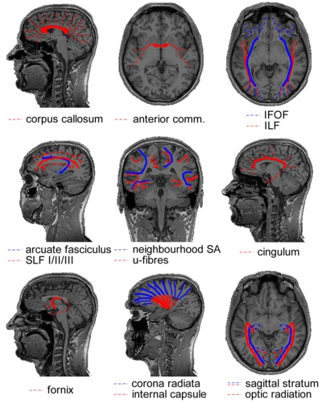COMMISSURES
The corpus callosum is the massive fibre bundle that connects the hemispheres. The corpus callosum can be safely regarded as the most well known and investigated fibre bundle in the brain. It has been since antiquity. What was regarded as the corpus callosum in the days of Galen (who named it) does not correspond with what is meant by it now. As no methods were invented to distin-guish bundles before the era of white matter dissection, the corpus callosum usually included the white matter mass within the hemispheres. Today, the corpus callosum is the arced set of fibres crossing the midline in the telencephalon. It is separate from the other commissures. The anatomical subdivision that is usually made in this massive fibre tract is over its rostrocaudal axis: the rostrum, genu, body and splenium of the corpus callosum contain interhemispheric connections of various lobes of the brain in a topographic manner. In terms of function, the corpus callosum carries both homotopic (i.e. axons connecting bilateral homologous areas) and heterotopic fibres. As such, the corpus callosum appears to be in-volved in the coordination of perception and action as well as interhemispheric cross-modality integration. Evidently, the functional significance of such a massive tract extends beyond perceptual and motor processes. This can also be deduced from the wide array of clinical symptoms associated with callosal agenesis where—contrary to early beliefs—not only basic perceptual and motor deficits are observed, but also social/emotional cognition is affected31. Furthermore, the surgical procedure of callosotomy—sporadically applied to relieve refractory epilepsy and resulting in a ‘split brain’—has provided invaluable insights into hemispheric specialization as well as functional integration of mental processes32.
The anterior commissure is much less bulky than the corpus callosum. On the midline, it is a small well-circumscribed cord of fibres wedged between the diencephalon and the columns of the fornix. The anterior commissure tapers out to both sides over the inferior aspects of the temporal lobes. It is a dynamic bundle that undergoes heavy pruning of connections during development leading to considerable variation in size between individuals. In mammals, the bundle is less important than in other vertebrates (that lack cerebral hemispheres and a corpus callosum). This position in phylogeny provides hints to its anatomical and functional significance in primates: connecting pre-isocortical and amygdalar regions of the brain and interhemispheric processing of emotionally and mnemonical-ly relevant visual and auditory stimuli18.
ASSOCIATION TRACTS
In the posterior portion of the brain, the distinction between various tracts has proven to be difficult to establish. It is well established that a projection system carries fibres from the thalamus to the visual areas and that this system is contained within the sagittal stratum. The anatomy of the associative systems in the occipital lobe, however, has seeded some controversies in the past. In short, the localization and existence of the inferior longitudinal fasciculus (ILF) and inferior fronto-occipital fasciculus (IFOF) has been a matter of debate (reviewed in Schmahmann and Pandya (2006)18, whose conclu-sions will be adopted here). The inferior longitudinal fasciculus is the visual association system connecting the extrastriate areas of the occipital lobe to the temporal lobe. Its central bundle is located ventrolaterally to the sagittal stratum. The putatively non-existent inferior fronto-occipital fasciculus—found by means of fibre dissection and MRI tractography, but not consistently in animal tracer studies—would overlap with the inferior longitudinal fasciculus, or would be situated in between the sagittal stratum and inferior longitudinal fasciculus over its posterior extent. Anteriorly, the bundle would run ventral to the apex of the insula and alongside the fibres of the uncinate fasciculus to the ventral aspect of the frontal lobe.
The association tract connecting the frontal cortex with parietal association areas is the superior longitudinal fasciculus (SLF). It has three subcomponents (SLF I, II and III) distinguished over the mediodorsal-to-lateroventral axis18,33. The superior longitudinal fasciculus is thought to serve functions such as sensorimotor integration (SLF I), visuospatial awareness (SLF II) and imitation (SLF III). The arcuate fasciculus connects the caudal superior temporal lobe with the dorsal prefrontal cortex (in non-human primates). Over its dorsal extent, it runs alongside SLF II. Historically, the arcuate fasciculus has been regarded as a bundle connecting the language areas for articulation (Broca’s) and comprehension (Wernicke’s). Because there is little evidence that the bundle connects to Broca’s area this is no longer tenable. Because the bundle connects auditory regions to prefrontal areas it is now thought to be the auditory counterpart of the SLF II, serving audiospatial attention18.
U-fibres form a thin sheet covering the cortical mantle on the inside. These short association fibres connect cortical neurons over small distances, e.g. homologous neurons in a topographic hierarchy or integration across cortical columns. In cross-section, the convexities and concavities of the cerebral convolutions make them appear (inversely) u-shaped34, hence their name. Neighbourhood association fibres (neighbourhood SA) form the shell of fibres between the u-fibres and the deep white matter. They span multiple gyri, e.g. connecting lobules.
The cingulum lies within the cingulate and parahippocampal gyri. It forms a continuous arc around the corpus callosum on the dorsal side and extends to the temporal lobe on the ventral side. Fibres enter and fan out of the bundle over its entire course. They arise mostly from pyramidal neurons in the cingulate gyrus comprising association, projection (to the striatum) as well as commissural fibres. The cingulum forms part of Papez’ circuit35. As such, it is an important constituent of the limbic system, playing a central role in emotion. The cingulum branches dorsally to multimodal sensory association areas and connects these to the limbic lobe. Affective stimuli might get their valence through this connection. Memory systems are also linked by the cingulum: working memory in the dorsolateral prefrontal cortex, spatial memory in the parietal region and declarative memory in the hippocampal systems. The cingulum is furthermore implicated with internally oriented behaviour in linking the regions that make up the default mode network found with fMRI during the resting-state36.
PROJECTION TRACTS
The fornix contains the efferent fibres of the hippocampus (which it leaves as the alveus, then fimbria) that project to the basal forebrain and the diencephalon. The body of the fornix arches over the posterior part of the third ventricle separating anteriorly into the bilateral columns of the fornix and posteriorly into the bilateral crura. In the body of the fornix, part of the fibres cross to the contralateral hemispheres and hence the fornix is both a projection and commissural tract. The columns of the fornix split around the anterior commissure. The precommissural fornix (projecting to the septal nuclei and nucleus accumbens) is involved in emotional and motivational processing. The postcommissural fornix projects to the mammillary bodies of the hypothalamus and the thalamus’ limbic nuclei. It complements the cingulum in Papez’ circuit and has a role in memory processes. For example, damage to the diencephalic circuit seems to specifically impair memory recall, but not recognition37.
The corona radiata contains fibres projecting from all over the hemispheres to various subcortical structures including the thalamus, brainstem and pontine nuclei. It is continuous with the internal capsule (red) that carries these fibres in between the lentiform nucleus laterally and the caudate nucleus and thalamus medially. Observed in sagittal view, it has the shape of a wedge with its apex in the brainstem and fibres ‘radiating’ upward. In the centrum semiovale, the bundle crosses association fibres and the corpus callosum. The internal capsule can be anatomically subdivided in an anterior limb, a genu and a posterior limb. The anterior limb includes mostly cortico-thalamic fibres from the anterior portion of the thalamus to the frontal lobe. The posterior limb of the internal capsule includes many axons of the motor and sensory systems. Hence, the most common clinical symptom involving damage to the internal capsule is hemiparesis after lacunar infarction.
In the posterior part of the cerebral hemispheres, the sagittal stratum contains the visual projection system. It encapsulates the occipital horn of the lateral ventricle on all sides but the medial one. The sagittal stratum can be divided in an internal and an external shell. The sagittal stratum externa contains corticopetal fibres from the lateral geniculate nucleus of the thalamus. It is synonymous with the optic radiation. A notable feature of the tract is the Flechsig-Meyer loop that curves through the temporal lobe in its course towards the lower bank of the calcarine sulcus. Clinically, this anatomical peculiarity is relevant, because sectioning the loop in surgical treatment of temporal lobe epilepsy often leads to visual field defects. The sagittal stratum interna contains the corticofugal fibres of the reciprocal pathway from visual cortex to the pulvinar of the thalamus and other subcortical structures.
The discovery of the heterogeneity of the white matter was followed by the observation of the laminated structure of the surrounding grey matter of the cortex. Francesco di Gennari first identified the eponymous line in the primary visual cortex38. Independent confirmation of this cortical feature was provided by Vicq d’Azyr. The discovery was further generalized to multiple layers throughout the cortex by Jules Baillarger (1840)39. The significance of cortical heterogeneity was only realized much later in the era of histology (Section 2.5; and see also Chapter 5 for an in-depth discussion of this history and the current state of laminar neuroanatomy research techniques).
The functional interpretation that was given to the discovery of the fibrous structure of the white matter by the Renaissance anatomists still leaned heavily on the Galenic view. Naturally, the fibrous nature of the white matter fit in perfectly with being conduits (as in Alcmaeon’s poroi) for animal spirits flowing on “a broad, almost a royal, highway … [which] are carried to all the nervous parts of the body”40. Also Rene Descartes, in his Treatise of Man, adhered to the idea of animal spirits flowing through hollow fibres (tuyeaux) mechanically opened by the nerves. Ideas, however, can change quickly. Descartes' authoritative ideas were already under serious attack some years after publication. The experimentalist Nicolas Steno, although generally an admirer of Descartes41, already referred to animal spirits as “words without any meaning”42. The irritability of nervous tissue (observed by Francis Glisson in 1654; ignored for a century; and reintroduced by Albrecht von Haller) called for new explanations of nerve function. However, none were found in the 18th century. It was only after Luigi Galvani’s landmark experiments in ‘animal electricity’ that the function of the fibres in the white matter as electrophysiological impulse conductors became widely accepted.
2.4 Functional specialization: surgical ablation, clinicopathological correlation and electrical stimulation
In the 19th century, the notions about brain function changed dramatically with the idea that specific mental functions were localized in specific areas of the cortex. Before these times, functional divisions that were made were crude and based on conjecture (e.g. the ventricular doctrine; or the pineal gland as Descartes’ door of the soul). Albrecht von Haller’s equipotentiality hypothesis (i.e. the cortex is functionally homogeneous) prevailed until Franz Joseph Gall formed his ideas about the localization of mental faculties to cortical organs. In Gall’s framework, the cerebral convolutions were “expansions of the cerebral fibrils and of the fibre bundles”43. These fibre bundles formed intra-hemispheric association tracts, both long- and short-range, that connected the various functionally specialized areas. The association fibres included the commissures, but were distinguished from the projection system connecting cortical organs with subcortical structures and the spinal cord. The specialization hypothesis and the distinction between the fibre systems were largely based on correlations between observed brain damage with functional loss: the primary means to study functional specialization in that age.
Gall exercised another means of investigation. Next to advancing the fruitful idea that the cortex is central to human brain function and providing descriptions of the cerebral white matter that still prove to be accurate today, Gall and his collaborator Johann Kaspar Spurzheim formed many of the misguided ideas of phrenology. According to the phrenologists, hypertrophy or atrophy of cortical organs, and therefore mental faculties, could be measured by the morphology of the skull. This position was rightly met with scepticism by most of the scientific community, but gained popularity in 19th century society nonetheless. Phrenologists believed the cerebral convolutions to be the seat of certain propensities, sentiments and intellectual faculties. For example, the phrenologist George Combe located philoprogenitiveness (love of offspring) in the occipital pole, because the skull overlying this region—the occiput—would be more prominent in primates and women44. Notwithstanding the now obvious absurdity of these premises, the phrenological era does mark the start of investigations into the functional specialization of cortical regions.
French opposition closed the book on phrenology. Many followed the holistic view of Jean Pierre Flourens, the most eminent scientist of the time. The holistic stance implies that the entire brain participates in any cognitive process. Jean-Baptiste Bouillaud, Ernest Aubertin and Pierre Paul Broca adhered to localisationist theory. In 1861, Broca provided the most convincing account that articulate speech functions are localized in the frontal lobe, likely on the inferior frontal gyrus, through autopsy of aphasia patient Monsieur LeBorgne, also known as “Tan”45.
The specificity of cortical localization by clinicopathological correlation was greatly enhanced by tract degeneration methods, for example those developed by Augustus Waller46. The axonal degeneration by damage to a tract, sense organ or cortical area can be followed (anterogradely) through the white matter to its destination area. Evidently, this can provide a wealth of information on the connections between regions. The degeneration method allowed Ludwig Türck to trace the divisions of the corticospinal tract in brain-damaged individuals47. Importantly, whereas white matter dissections are biased by expectations about the white matter anatomy in locations where fibre bundles cross, tract degeneration studies are not complicated by this at all. The degeneration technique thus enabled Bernard von Gudden to describe intricate fibre crossings in the brain such as the optic chiasm48.
Some years prior to this, Bartolomeo Panizza already used the degen-eration technique to demonstrate that visual functions are located in the occipital lobe. Panizza used both surgical ablation techniques in animals as well as human clinical observations to support his claim. Refinement of the lesioning techniques at the turn of the 19th century allowed comprehensive descriptions of the gross anatomy of the visual system. Through clinocopathological correlations in brain-damaged World War I soldiers, this lay-out could be verified in humans as well. The large number of war casualties even lead to the first retinotopic maps49.
Localization specificity was further enhanced by electrophysiological stimulation methods, although these could only be applied in animals and had a limited range with respect to the regions that could be investigated. The initial successful investigations in electrophysiology have been performed by Eduard Hitzig and Gustav Fritsch50. Stimulating a dog’s frontal lobes, they noticed the contractions of specific muscle groups on the contralateral half of the body. The method led to the first functional topographic map of an area of the brain and forms the basis of modern day electrophysiology.
2.5 Milestones in microstructure
One of the great scientific advances in history, the invention of the microscope, has benefitted neuroscience like no other tool has. The investigation of the microscopic structure of the nervous system has its origin in observations by Antoni van Leeuwenhoek, who described the bovine optic nerve as containing “filamentous particles”51. Within the brain, the first microscopic accounts were given by Marcello Malpighi52. His cortical “glands” in the grey matter were a first step in imaging microscopic brain structure. It should be realized that many of these early observations are likely to have been artefacts owing to the limited accuracy of the tools. Significant progress was made after achromatic compound microscopes became available in the 1820’s. For instance, in 1836 Robert Remak used it to accurately describe myelinated and unmyelinated nerve fibres. Furthermore, his observations lead him to believe that the fibres were connected to the nerve cell, a year before cell theory was formed by Theodor Schwann in 1839. A decade later, Waller’s degeneration studies established a functional division between the two, implicating the cell body as the trophic centre of the cells. The degeneration of the distal portion of a nerve fibre when detached from the cell body is still referred to as Wallerian degeneration.
Box 2.2 Staining methods
After the industrial revolution in the first half of the 19th century, Germany’s chemical industry was booming. The availability of a wide range of dyes facilitated the discovery of chemical compounds suitable for staining biological materials for investigating them with a micro-scope. Carmine was the prime stain for the nervous system (used extensively by Joseph von Gerlach), colouring the cytoplasm a bright red. Using this dense stain, the boundaries of individual neurons could not be determined. Improvement came with the silver staining method, perfected by Golgi, resulting in a “black reaction” for a small percentage of neurons in their entirety. The next step consisted in staining specific cell parts, e.g. the methylene blue stain for axons (Ehrlich), Weigert’s myelin stain and the Nissl stain for nuclei. Over the past century, a plethora of staining methods have been proposed that have an affinity for various neural components. Three of them are used in his thesis.
Hematoxylin specifically stains the cell body; it is the workhorse of histology. Its oxidation product hematein is combined with the mordant (i.e. a metal salt that acts as a chain-link between the dye and the tissue) aluminium to form hemalum: a basic dye. Hemalum renders cell bodies intensely blue/purple because it reacts with basophilic structures (e.g. DNA/RNA). It is often used in combination with the acidic counterstain eosin. Eosin stains most other cell components (e.g. acidophilic proteins in the cytoplasm) in varying shade of red. The combination is termed the H&E or HE section. It is a stain well suited to investigate nuclear morphology and it gives a global impression of the cytoplasm.
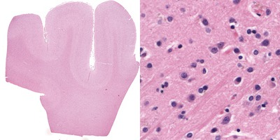The LFB stain for myelin was developed by Klüver and Barrera; its combination with the cresyl violet counter-stain is referred to as the Klüver-Barrera method53. It uses the Luxol Fast Blue MBS salt to stain the myelin sheet blue. In ethanol solution, the salts’ anion (copper phthalocyanine) binds to the cationic elements of the tissue. A differentiation step with lithium carbonate can remove weakly bound anions from the grey matter substance, while the stronger ionic bonds with the lipoproteins in the myelin sheet stay intact. Interestingly, owing to the paramagnetic copper atom in the salt, the method also appears to work as a contrast agent for specific MRI applications54,55. However, it should be noted that differentiation can be inhomogeneous and unverifiable in tissue blocks (as opposed to thin histological sections) used in ex vivo MR-microscopy55.
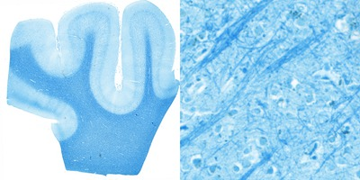In the central nervous system, the Bodian method stains axons and neurofibrils black56. It is a argyrophilic silver staining method, i.e. silver ions from a silver proteinate solution bind to neurofilaments in the cytoskeleton57 and with the help of a reducing reagent (hydroquinone) metallic silver particles are formed. The silver is then replaced by metallic gold from a gold chloride solution (using oxalic acid as reductant), a process known as toning. In the Bodian method, the silver proteinate is combined with metallic copper. The silver protein oxidizes the metallic copper and both are reduced onto the section by hydroquinone. During the toning stage both silver and copper are replaced by gold, hence resulting in a more intense staining58.
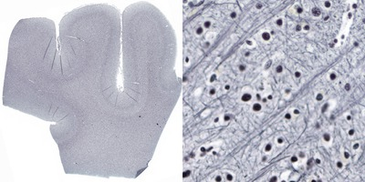The 19th century delivered methods for the preservation of tissues. This was another prerequisite for microstructural investigations of the nervous system. Important contributions in this respect were hardening the brain in alcohol59 or chromic acid60 and tissue fixation with formaldehyde61. A final indispensible ingredient for unravelling the microscopic structure of the neuron was the staining technique (Box 2.2). With this methodological triplet—the microscope, tissue fixation, and dyes—the neuroanatomists of the second half of the 19th century were well equipped to tackle problems at the scale of the basic building blocks of the nervous system.
The debate that dominated neuroscience in the last decades of the 19th century concerned the structure of the brain network: is it continuous or is it built of units? The discussion was sparked by Joseph von Gerlach, who put forward the idea of the nerve net after observing a network of interlacing fibrils in his carmine-stained sections62. His theory implied that dendrites, described 7 years earlier by Otto Deiters, formed a continuous network connecting all neurons63, while the axonal network was separate and more sparse. Camillo Golgi adapted von Gerlach’s nerve net theory, finding only evidence for the axonal network in his superior stainings, but becoming its greatest advocate nonetheless. The opposing theory was brought forward by Wilhelm His. Building on Paul Ehrlich’s work on nerve endings, His deduced from the outgrowth of processes during cellular development that cells remained separate entities not in direct contact with each other64. This later became the well-known neuron doctrine, arguably the most influential doctrine in neuroscience today. Independent confirmation of the validity of the neuron doctrine came only three months later by August-Henri Forel. Using the very different approach of von Gudden’s retrograde nerve degeneration studies, Forel showed that atrophy is confined to nerve cells with actual peripheral damage65. The final blow for nerve net theory came from Santiago Ramón y Cajal, who provided yet another independent account of the unity of the nerve cell. A synthesis of the work relating to the debate was provided by Wilhelm Waldeyer, who gave the neuron its name66.
Next to basic neuron morphology, the structure of the cortex (Box 2.3) was intensively investigated. The preliminary microscopic examinations of van Leeuwenhoek and Malpighi were followed by the crucial macroscopic observations of Gennari and Baillarger, establishing that the cerebral cortex is a layered sheet. Using the newly developed histological tools, numerous neuronal cell types were discovered in the decades around 1900 (Purkinje cells, Betz cells, Cajal-Retzius cells; to name a few that are eponymous with their discoverers). The combination of the two opens the field of cortical cytoarchitecture: the anatomical study of the distribution of cell types over the cortical depth. The exponent of this method was Theodore Meynert. Next to providing the first detailed survey of the cytoarchitecture of the cerebral cortex, Meynert grounded the division of white matter into association, projection and commissural fibres as it is still used today. The ramification of these fibres in the cortical grey matter has been exquisitely described by Ramón y Cajal. This forms the basis for the related field of myeloarchitectonics: the variation in myelinated fibre content over the depth of the cortex.
Meynert laid the foundations for the most significant neuroscientific endeavour of the first quarter of the 20th century. Cortical mapping became popular because it had been realized that the structural divisions found in the cortex were likely to be related to functional specialization of cortical areas (as discussed in Section 2.4). Cyto- and myeloarchitectonic maps galore—with Alfred Walter Campbell, Grafton Elliot Smith, Korbinian Brodmann, Cecile and Oskar Vogt, and Constantin von Economo and Georg Koskinas as their most prominent inventors—exhibiting a range of parcellation scales, taxonomies and claims. In retrospect, it can be concluded that Brodmann ‘won’, because his map is most widely used today. However, consensus on an appropriate parcellation has never been reached—and therefore investigators often choose a parcellation to suit their needs.
2.6 Tracing progress through the 20th century
Although the investigative focus might have been on cyto-and myeloarchitecture of the cortex in the decades around 1900, white matter research was not abandoned. Some of the most important principles of brain connectivity were uncovered during this period. Much of the basic knowledge of the white matter that can be found in textbooks can be traced back to investigators that had their productive years during this period.
Paul Emil Flechsig investigated the sequence in which various fibre systems myelinate during pre- and postnatal development. This myelogenesis method led him to some brilliant insights about connectivity and the nature of brain organization. Flechsig not only determined important functional subdivisions within otherwise anatomically indistinguishable tracts (e.g. in the internal capsule and the corticospinal tract), based on the myelogenetic observations he also posed the more general subdivision of the cerebral cortex in primary, secondary and association areas.
Around 1900, the couple Joseph Jules Dejerine and Augusta Dejerine-Klumpke published the perhaps most influential work on fibre systems in history67,68. The Anatomie des Centres Nerveux contained the fruit of meticulous staining and serial sectioning of the human brain, building a near-comprehensive atlas of the white matter illustrated with many wonderfully accurate drawings. Further, Jules Dejerine was an excellent clinician who classified many neurological syndromes for the first time69. His wife Augusta, the first female intern in a French hospital, had the same gift topped with a heart for the injured soldiers of World War I70.
Box 2.3 Cortical anatomy and function
The cytoarchitecture, functional organization and fibre architecture of the primary visual cortex (V1) is visualized in the figure below. A) Nissl staining (adapted from http://webvision.med.utah.edu/imageswv/Nissl-CO.jpg); B75) schematic drawing of cell distribution in V1; C76) simple functional model of laminar processing in the V1 microcircuit: the granular layer (4C) receives feedforward input from the thalamus that is forwarded to the supragranular layers (2-4B) and modulated by infragranular layers (5, 6); the visual stream continues in extrastriate areas through feedforward projections from the supragranular layers; D77) minicolumn model showing cell stacks and dendritic bundles: minicolumnar anatomy could be an important organizational feature for cortical processing, in particular lateral integration, because the neurons composing a cellular minicolumn send their apical dendrites to different interposed dendritic bundles (or pyramidal cell modules78); neurons belonging to the same dendritic bundle, however, project to the same distant target; dendritic bundles with different targets but common inputs can be grouped into ‘cortical output units’; how minicolumns relate to functional macrocolumns79 is as of yet unknown; E75) schematic drawing of myelinated axons in V1; F80) inhibitory neurons (blue) and infragranular pyramidal cells (red) in minicolumns showing dendritic arborisations.
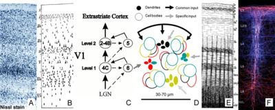{kind=link}
The opposite page lists the cytoarchitectural (left column) and fibrearchitectural (right column) particulars of the cortical layers (i.e. all layers feature many other cell types and processes not listed here), where [+,±,-] gives an appreciation of the presence within a layer; [|,=,⊥] denotes radial, tangential, radial+tangential fibre orientations with respect to the cortical sheet.
+ Astrocytes |
= Dendritic tufts |
- neurons (80% GABAergic) |
⊥ Axons |
- Cajal-Retzius cells |
= Cajal-Retzius process |
± Pyramidal cells |
| Apical dendrites |
+ Stellate cells (GABA) |
= Horizontal connections |
| Asc/Desc axons |
+ Pyramidal cells |
| Apical dendrites |
= Horizontal connections |
|
| Asc/Desc axons |
+ granule cells (IVA) |
| Apical dendrites |
+ outer Meynert cells (IVB) |
= Ext. band of Baillarger (IVB) |
+ spiny stellate cells (IVC) |
| Asc/Desc axons |
+ Pyramidal cells |
| Apical dendrites |
= Int. band of Baillarger (IVB) |
|
| Asc/Desc axons |
+ small Meynert cells (VIA) |
= Collaterals desc axons |
+ transition zone (VIB) |
= Int. band of Baillarger (IVB) |
| Asc/Desc axons |
After World War II, tracing methods applied in living animals progressively improved, permitting highly specific connectivity research. Before these methods became available, the Marchi method was reliant on myelin degradation and hence missed the (often unmyelinated) cortical extension of the axons. The Bielchowsky silver impregnation was rather unpredictable, even after the improvements in the second half of the 20th century18. The realization that active transport mechanisms in the cell could be used for delivery of a dye meant a leap in specificity and reliability in the 1970’s. The subsequent development of many variants of the tracing methods resulted in enormous flexibility to answer experimental questions on connectivity pertaining directionality (retro- vs. anterograde), co-localization (fluorescent double-labelling), synaptic morphology, trans-synaptic connectivity (viral tracers), function (tracing in combination with in situ hybridization), etc71.
The wealth of information on specific individual projections that these approaches have produced is most valuable when their interactions in the networks of the brain are considered. The hierarchy of the visual system of the macaque by Felleman and Van Essen72 is the famous example of a network-level description of tracing data. There are others. The connectome of Caenorhabditis elegans has been mapped in its entirety with serial-section electron microscopy73. The extensive collection of macaque tracing results in the CoCoMac database can nowadays be conveniently queried online74. The major drawback of the active tracing method, however, is that it is not applicable in humans. Here is where the journey through history ends. We have arrived at the modern technique of tracking fibres in the human brain with diffusion MRI, the topic of the next chapter.
a preprint version
Chapter 3
Magnetic resonance imaging of fibre architecture
Introductory remarks
Technological advances have opened up avenues to investigate fibre architecture in the living human brain. The most prominent methods for visualizing fibre systems in vivo are specific flavours of magnetic resonance imaging (MRI). MRI is nowadays widely used in the clinical setting to image soft tissues. The technique is very versatile in its ability to characterize the microscopic magnetic environment of (water) molecules. This chapter first introduces the physics involved in acquiring an image of the brain. Then, it provides a detailed description of the two MRI-methods sensitive to fibre architecture that are used in the remaining chapters of this thesis.
Abbreviations
| ADC | apparent diffusion coefficient |
| BOLD | blood oxygen level dependent |
| CSF | cerebrospinal fluid |
| dHb | deoxyhemoglobin |
| dODF | diffusion orientation distribution function |
| DKI | diffusion kurtosis imaging |
| DT | diffusion tensor |
| DTI | diffusion tensor imaging |
| DSI | diffusion spectrum imaging |
| DWI | diffusion weighted imaging |
| EPI | echo planar imaging |
| FA | fractional anisotropy |
| FACT | fibre assignment by continuous tracking |
| FID | free induction decay |
| fMRI | functional magnetic resonance imaging |
| fODF | fibre orientation distribution function |
| FOV | field of view |
| GE | gradient echo |
| M1 | primary motor cortex |
| MD | mean diffusivity |
| MRI | magnetic resonance imaging |
| MR | magnetic resonance |
| NMR | nuclear magnetic resonance |
| NODDI | neurite orientation dispersion and density imaging |
| ODF | orientation distribution function |
| RF | radiofrequency |
| S1 | primary somatosensory cortex |
| SAR | specific absorption rate |
| SE | spin echo |
| SNR | signal-to-noise ratio |
| SWI | susceptibility weighted imaging |
| TE | echo time |
| TR | repetition time |
| PAS | persistent angular structure |
| PBS | phosphate buffered saline |
| PGSE | pulsed gradient spin echo |
| QSM | quantitative susceptibility mapping |
3.1 Introduction to magnetic resonance imaging
3.1.1 Nuclear magnetic resonance
After exposing an ensemble of excitable nuclei in a magnetic field to a second transverse magnetic field rotating at the appropriate frequency, the return to the equilibrium state is accompanied by detectable changes in the field. This principle is known as nuclear magnetic resonance (NMR). We can use this property to probe the excited nucleus’ environment that influences the process of return to equilibrium. This is not only widely used in MRI, but also in NMR spectroscopy. By means of spectroscopy the physical and chemical properties of (organic) molecules can be investigated without obtaining information about the spatial distribution of the molecules.
The ground-breaking research on NMR was performed in the 1930’s and 1940’s, after quantum theory was developed. NMR could only have been discovered in the age of quantum mechanics, because it uses manipulation of quantum states of the nuclei under investigation by exposing them to a magnetic field. This approach is rooted in the experiments by Gerlach and Stern in the 1920’s82. They used inhomo-geneous magnetic fields to deflect spin-bearing nuclei in a molecular beam. One of their important discoveries was that a discrete spectrum is obtained, which is direct evidence for a quantized angular momentum of the nuclei. This experiment directly relates to the discovery of the NMR phenomenon. This same experimental approach—using a molecular beam of spin-bearing nuclei in a magnetic field—was used by Rabi et al.83 when they first reported on the basic principle of NMR: manipulation of the angular momentum of nuclei in a magnetic field by radiofrequency excitation. Bloch84 and Purcell, Torrey and Pound85 showed in 1946 that the same principles of excitation can be applied to liquids and solids. Several Nobel prizes have been awarded to the pioneers in both NMR (Isidor Rabi†1988, Felix Bloch†1983, Edward Purcell†1997) and MRI (Paul Lauterbur†2007, Sir Peter Mansfield), emphasizing the importance of the field.
3.1.1.1 Protons in a magnetic field
The quantum mechanical property spin is associated with all elementary particles. A nucleus with an odd atomic and/or mass number, and hence nonzero spin, possesses an angular moment. In case the nucleus in question has a net charge, this angular moment \(\mathbf{I}\) causes it to have a dipolar magnetic moment \(\mathbf{\mu}\), which are related through the gyromagnetic ratio \(\gamma\)
| \[\mathbf{ \mu} = \gamma \mathbf{I}\] | 3.1 |
The gyromagnetic ratio is nucleus-specific and equals 42.58 MHz·T-1 for the hydrogen atom 1H composed of a single proton with spin ½—the nucleus relevant for the present considerations. Henceforth, the term proton will refer to the proton of the hydrogen atom 1H and will be used as the model system. Note, however, that most principles explained below can be applied to any nucleus with nonzero spin and charge such as 13C and 31P that are widely used in NMR spectroscopy.
For a proton in an external magnetic field \(\mathbf{B}_0\)—the direction that conventionally defines the z-axis of the coordinate system in NMR and MRI—two possible energy states (eigenstates) exist in which the magnetic moments have an angle of ± 54.44° with the direction of the field. In the transverse plane, the magnetic moment vector describes a circular path: it is said to precess about \(\mathbf{B}_0\). The frequency \(\omega_0\) at which it precesses is given by
| \[\omega_0 = \gamma \mathbf{B}_0\] | 3.2 |
and is termed the Larmor-frequency.
In MRI, we are we are generally not concerned with a single nucleus, but with a large set of nuclei of the same type, i.e. precessing with the same Larmor-frequency (in a homogeneous field). For the present purpose, the collection of protons in the brain will be referred to as the spin system. In such a spin system, a classical description of NMR phenomena is warranted.
In a spin system with spin quantum number \(I\), the distribution of protons in the parallel vs. the anti-parallel state is dictated by the Boltzmann distribution, resulting in slightly more protons aligning with the field than against it. The spin system hence has a net bulk magnetization \(\mathbf{M}_0\) in the direction of the external magnetic field \(\mathbf{B}_0\) that is proportional to the proton density \(\rho_0\) and quantified by
| \[\rho_0 \propto \mathbf{M}_0 = {{N \hbar^2 \gamma^2 I(I+1) \mathbf{B}_0} \over {3 \mu_0 k_B T}}\] | 3.3 |
where \(N\) is the number of protons per volume, \(k_B\) is Boltzmann’s constant, \(\hbar\) is Planck’s constant, \(\mu_0\) is the permeability of free space and \(T\) is the temperature. It is important to note for this thesis that the magnetization is directly proportional to the magnetic field, the proton density as well as inversely proportional to temperature. As the orientation of the transverse component of the magnetic moment \(\mathbf\mu\) is random for any proton, the spin system in equilibrium does not display net magnetization in the transverse plane.
3.1.1.2 Excitation and relaxation
The equilibrium magnetization vector \(\mathbf{M}_0\) of the spin system in the presence of an external magnetic field \(\mathbf{B}_0\) can be manipulated by supplying a magnetic field at the appropriate frequency. The resonance frequency is equal to the Larmor-frequency. For protons in the magnetic fields commonly used in NMR (1-30 T) and MRI (1-7 T) the resonance frequency is in the radiofrequency range and hence radiofrequency (RF) pulses are used for excitation of the protons. An RF pulse is an oscillating magnetic field (the \(\mathbf{B}_1\) field) transverse to the main magnetic field that tips the magnetization away from the z-axis when applied on-resonance (i.e. oscillating at the Larmor-frequency). The magnetization can be tipped by an arbitrary flip angle α by using an appropriate RF pulse power. Provided that α ≠ [0,180,360,…]°, the on-resonance RF pulse results in a magnetization \(\mathbf{M}_{xy}\) in the transverse plane (Figure 3.1).
As the spin system is no longer in equilibrium after excitation, interactions of the protons with the environment will inevitably lead to a release of energy to return to the equilibrium state \(\mathbf{M}_0\). Two relaxation mechanisms play a significant role in NMR: spin-lattice relaxation with time constant \(T_1\) and spin-spin relaxation with time constant \(T_2\).
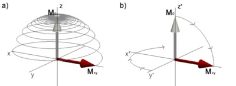Figure 3.1. Magnetization during excitation with an RF pulse with 90° flip angle. a) in the laboratory frame of reference the magnetization \(\mathbf{M}_0\) oscillates from its equilibrium position on the z-axis to the transverse plane resulting in a transverse magnetization \(\mathbf{M}_{xy}\). b) shows the same process as in a), but seen from the rotating frame of reference rotating about z at the resonance frequency. Click image to play animation.
The evolution of the magnetization is described by the Bloch equations84
| \[{dM_x \over dt} = \gamma M_x \times B_x - {M_x \over T_2}\] | 3.4 |
| \[{dM_y \over dt} = \gamma M_y \times B_y - {M_y \over T_2}\] | 3.5 |
| \[{dM_z \over dt} = \gamma M_z \times B_z - {M_z - M_0 \over T_1}\] | 3.6 |
or combined in vector form:
| \[{d \mathbf M \over dt} = \gamma \mathbf M \times \mathbf B - { \mathbf {M}_x \vec i + \mathbf {M}_y \vec j \over T_2} - {( \mathbf {M}_z - \mathbf {M}_0) \vec k \over T_1}\] | 3.7 |
The first term on the right-hand side of the Bloch equations describes the precession about the field. It is convenient to define a rotating frame of reference that rotates about the z-axis at the Larmor-frequency. An excitation with 90° flip angle in the rotating frame of reference is illustrated in Figure 3.1b. The relaxation process can then be described in the rotating frame of reference only considering the second terms on the right-hand side of Eq 3.4-3.6 and solutions to the Bloch equations are greatly simplified.
In spin-lattice relaxation the energy difference between \(\mathbf{M}_z\) and \(\mathbf{M}_0\) is released into the lattice of the spin system’s environment by thermal interactions, returning the magnetization to the equilibrium state (and causing an increase in sample temperature). It is an exponential process characterized by time constant \(T_1\). In the rotating frame of reference the Bloch equation is
| \[{d \mathbf{M}_z \over dt} = {{\mathbf{M}_0 - \mathbf{M}_z(t)} \over T_1}\] | 3.8 |
yielding the expression
| \[\mathbf{M}_{z}(t) = \mathbf{M}_0 \left( 1 - e^{-t \over T_1} \right) + \mathbf{M}_{z}(0) e^{-t \over T_1}\] | 3.9 |
for the evolution of longitudinal magnetization.
After application of an RF pulse, there will be phase coherence in the precession about \(\mathbf{B}_0\) of the protons in the spin system, i.e. there is net magnetization \(\mathbf{M}_{xy}\) in the transverse plane. Due to interaction between the protons experiencing slightly different magnetic environments, the theoretically single Larmor-frequency of static protons in a homogeneous field will rather be a range of Larmor-frequencies. As protons are precessing at different frequencies, the spin system dephases. The speed at which this dephasing occurs, and therefore the speed at which \(\mathbf{M}_{xy}\) returns to zero, is captured by time constant \(T_2\). The Bloch equation
| \[{d \mathbf{M}_{xy} \over dt} = {\mathbf{M}_{xy}(t) \over T_2}\] | 3.10 |
has the solution
| \[\mathbf{M}_{xy}(t) = \mathbf{M}_{xy}(0) e^{-t \over T_2}\] | 3.11 |
for transverse magnetization.
The decay of transverse magnetization with \(T_2\) only holds in a perfectly homogeneous field. However, in the technical and biological systems dealt with in MRI, non-negligible static field variations occur due to inhomogeneity of \(\mathbf{B}_0\) as well as field perturbations by differences in magnetic susceptibility between tissue types included in the measurement volume (see also Section 3.1.4 and Section 3.3). These static field variations cause an additional dephasing with time constant \(T_{2}'\) characterized by:
| \[T_{2}' = {2\pi \over {\gamma \Delta B_0}}\] | 3.12 |
Thus, rather than pure \(T_2\)-decay, the transverse magnetization decays with a relaxation rate \(R_{2}^*\)
| \[R_{2}^* = R_{2} + R_{2}'\] | 3.13 |
or, equivalently, with time constant \(T_{2}^*\)
| \[{1 \over T_{2}^*} = {1 \over T_{2}} + {1 \over T_{2}'}\] | 3.14 |
which can substitute \(T_2\) in Eq 3.11:
| \[\mathbf{M}_{xy}(t) = \mathbf{M}_{xy}(0) e^{-t \over T_{2}'}\] | 3.15 |
3.1.2 Where NMR turns into MRI
The essential difference between an NMR system and an MRI system is the gradient set included in the MRI scanner. This gradient set provides the possibility to add magnetic fields that vary with spatial position. The resulting gradient field is roughly two orders of magnitude smaller than the main magnetic field, but also orders of magnitude larger than the static magnetic field inhomogeneity. This allows accurate encoding of spatial position. To acquire the images, elaborate pulse sequences are used combining successions of RF pulses of varying flip angles and magnetic field gradients in various directions to manipulate image contrast and resolution. The basic principles of image acquisition relevant for this thesis will be introduced in this section.
3.1.2.1 Magnetic field gradients
In MRI, the static main magnetic field \(\mathbf{B}_0\) is complemented by a magnetic field \(G\) in the direction of \(\mathbf{B}_0\) originating from three separate gradient coils:
| \[\mathbf{G} = \mathbf{G}_x + \mathbf{G}_y + \mathbf{G}_z\] | 3.16 |
where \(\mathbf{G}_x\), \(\mathbf{G}_y\) and \(\mathbf{G}_z\) are linear functions of spatial position through the origin. Consequently, the Larmor-frequency is preserved in the magnet isocenter, but has an offset \(\Delta\omega\) for other locations
| \[\Delta\omega (\mathbf{r}) = \gamma \mathbf{r} \mathbf{G}\] | 3.17 |
with the position-dependent Larmor-frequency
| \[\omega (\mathbf{r}) = \gamma (\mathbf{B}_0 + \mathbf{r} \mathbf{G})\] | 3.18 |
3.1.2.2 k-space formalism
In MRI, the acquired complex signal \(S(t)\) is composed of a range of frequencies \([\omega_0 - \Delta\omega ; \omega_0 + \Delta\omega]\) as a result of the gradient field. The proton density function \(\rho(\mathbf{r})\) of the sample under study is related to \(S(t)\) by
| \[S(t) = \int {\rho(\mathbf{r}) e^{i \int_0^t G(t') dt'\mathbf{r}} d^3} \int {\rho(\mathbf{r}) e^{i \int_0^t G(t') dt\mathbf{r}} d^{3}\mathbf{r}} \] | 3.19 |
Conveniently defining \(k\) as the time integral of the gradient \(\mathbf{G}\)
| \[k = \gamma \int_0^t {\mathbf{G}(t')dt'} \int_0^t {\mathbf{G}(t)dt}\] | 3.20 |
we arrive at
| \[S(k) = \int {\rho(\mathbf{r}) e^{ik\mathbf{r}}dk}\] | 3.21 |
and it’s conjugate
| \[\rho(\mathbf{r}) = S(k) \int { e^{-ik\mathbf{r}}dk}\] | 3.22 |
The Fourier pair links the image domain to the domain in which the data are acquired, which is called \(k\textrm{-space}\). Thus, the proton density function \(\rho(\mathbf{r})\) can be obtained by inverse Fourier transform of \(S(k)\). This transform can be easily computed when \(S\) is (re)sampled on a Cartesian grid in \(k\textrm{-space}\). The traversal of \(k\textrm{-space}\) can be achieved by careful design of sequences of magnetic field gradients (Section 3.1.3). The number of samples taken over a particular \(k\textrm{-space}\) area determines the field-of-view (FOV) of the corresponding dimension of the reconstructed image:
| \[\Delta k = {1 \over {FOV}}\] | 3.23 |
As the Nyquist criterion—which dictates the sampling rate \(1 / \Delta k\) to be twice the maximum frequency to be resolved—has to be observed for \(k\textrm{-space}\), signal coming from parts of the sample outside the FOV will alias into the image and can manifest itself as folding-in of these parts into the image.
Likewise, the \(k\textrm{-space}\) range sampled determine the spatial frequencies that can be resolved in the image. The centre of \(k\textrm{-space}\) harbours the low spatial frequencies (i.e. the contours), while the edges of \(k\textrm{-space}\) contain higher spatial frequencies (i.e. the edges in the image). Thus, one can obtain a higher resolution image by covering a larger extent of \(k\)-space.
Further, it is relevant to mention that \(k\textrm{-space}\) displays conjugate symmetry
| \[S(-k) = S(k)^*\] | 3.24 |
making it in principle possible to reconstruct the image from only half of \(k\textrm{-space} using the redundancy obtained from sampling the complex signal to perform ‘partial Fourier’ imaging.
3.1.3 Image formation
3.1.3.1 Free induction decay, spin echo and gradient echo
After excitation, the magnetization vector oscillates in the transverse plane (in the laboratory frame of reference). A coil placed over the sample will thus experience a change in magnetic flux which according to Faraday’s law will generate an electromagnetic force in the coil proportional to the transverse magnetization of the sample under study, i.e. oscillating with frequency \(\omega_0\) and decaying with a \(T_{2}^*\) envelope. This constitutes the basic free induction decay (FID) experiment. As only the transverse component is detectable, it follows that an on-resonance RF pulse with flip angle of 90° creates the maximal signal that can be obtained with a single excitation.
The spin echo (SE) method (Figure 3.2) was proposed by Hahn in 195086. It was the first echo formation technique for NMR and has been widely used since. A spin echo is achieved by applying two RF pulses: an excitation pulse and a refocusing pulse. The excitation pulse tips magnetization in the transverse plane. In the time between the excitation pulse and the refocusing pulse, the protons dephase according to \(T_{2}^*\). After a certain time, an 180° refocusing pulse flips the magnetization within the transverse plane. Allowing the same time to rephase, the maximal phase coherence is achieved: an echo has formed at echo time TE. The magnetization has decayed stochastically according to \(T_{2}\), because the dephasing due to static magnetic field variations (\(T_{2}'\)) is fully reversible. This is one of the big advantages of the spin echo sequence: it is relatively insensitive to static magnetic field inhomogeneities.
A gradient echo (GE) is achieved by a single excitation pulse and a bipolar gradient (Figure 3.3). The first lobe of the (readout) gradient causes dephasing. The second lobe, of opposite polarity, compensates for the dephasing caused by the first gradient lobe and rephases the protons. Dephasing due to \(T_{2}^*\) is not compensated, making GE sequences sensitive to static field inhomogeneities. The gradient echo has the advantage over the spin echo technique that no refocusing pulse has to be applied. This allows short intervals between multiple excitations (repetition time TR), especially when using low flip angles.
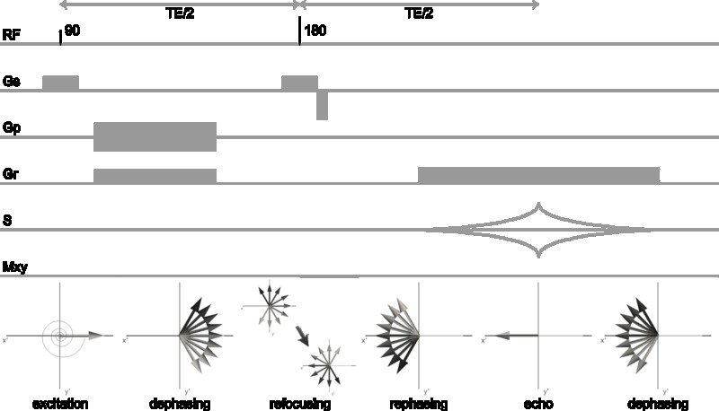Figure 3.2. Sequence diagram and phase evolution in the transverse plane for the basic spin echo sequence. Gs, Gp and Gr are the gradients applied in the slice, phase and read direction, respectively. Click image to play animation.
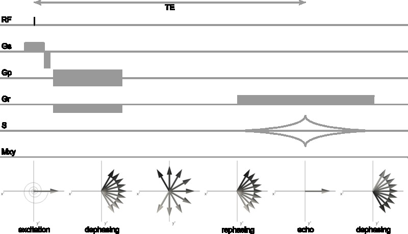Figure 3.3. Sequence diagram and phase evolution in the transverse plane for the basic gradient echo sequence. Gs, Gp, Gr are the gradient applied in the slice, phase and read direction, respectively. Click image to play animation.
3.1.3.2 Sampling k-space
MR images are acquired in \(k\textrm{-space}\), where the resolution and field-of-view are determined by the \(k\textrm{-space}\) extent and sampling density, respectively (Section 3.1.2.2). The image acquisition sequence determines the trajectory by which the points in \(k\textrm{-space}\) are sampled. The traversal of a certain \(k\textrm{-space}\) trajectory is achieved by playing out imaging gradients. This trajectory is extremely important as it has profound effects on the final image quality.
In a typical sequence, a single line in 3D \(k\textrm{-space}\) is read per RF excitation. In a 2D sequence, the RF pulse is accompanied by a slice-select gradient that ensures that only protons within a particular slice of the volume are excited. This gradient has two lobes of opposite polarity to rewind the induced dephasing (Gs in Figure 3.2; Figure 3.3). The slice thickness and slice location are controlled by the RF frequency in combination with the strength of the slice-select gradient. A phase-encode gradient is then applied to pre-phase the protons and move to a particular line in \(k\textrm{-space}\) within the selected slice (Figure 3.4a). For the gradient-echo sequence, the gradient that encodes position on the \(k\textrm{-space}\) line in the read-out direction has two lobes of opposite polarity. The first lobe dephases the spin system, while the second lobe rephases the spin system. By choosing the second lobe twice the duration as the first and centring the signal readout under this lobe, the gradient recalled echo occurs at the centre of the readout window. A whole slice is sampled by repeating this sequence for multiple excitations, but with different amplitude of the phase-encode gradient, while slices at different positions can be obtained by varying the frequency of the RF excitation pulse. Because the spin echo has a different echo formation mechanism, the basic sequence to acquire a spin echo is somewhat different. An additional slice-select gradient can be necessary under the refocusing pulse. After the excitation pulse, the phase-encode gradient and a dephasing gradient in the read-out direction are applied. The second read-out gradient that rewinds the position in the read-out direction is of the same polarity as the dephasing read-out gradient, because \(\mathbf{M}_{xy}\) was flipped in the transverse plane by the refocusing pulse. To perform the readout under the echo, this gradient is centered on TE. A whole slice is sampled by repeating this sequence for multiple excitations, but with different amplitude of the phase-encode gradient, while slices at different positions can be obtained by varying the frequency of the RF excitation pulse.
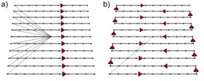Figure 3.4. Trajectories through k-space for the acquisition of a slice. a) acquiring a slice line-by-line; b) acquiring a slice with EPI readout.
For some specific applications it is important to be fast. There can be multiple reasons for wanting this, e.g. sampling physiological signals at an adequate rate in functional MRI or reduction of artefacts in diffusion imaging (Section 3.2.3). In these instances, echo-planar imaging (EPI) can be used for fast sampling of \(k\textrm{-space}\)87. EPI can acquire a whole brain volume in seconds (nowadays even within 50 ms; see e.g. Boyacioğlu and Barth, 201288). Unfortunately, fast acquisition comes with a trade-off in signal-to-noise ratio and, potentially, spatial resolution. Furthermore, the EPI acquisition is associated with particular artefacts. These are discussed in Box 3.1.
In EPI, a full slice is read out after a single excitation. Slice-selection is achieved in a similar manner to the conventional sequences. A phase-encoding gradient and readout gradient then moves the acquisition out to one of the far corners of \(k\textrm{-space}\). To read out the slice, gradient lobes of alternating polarity in the readout direction are combined with gradient ‘blips’ in the phase-encoding direction. The resulting \(k\textrm{-space}\) trajectory zigzags effectively through the slice (Figure 3.4b). A positive lobe of the readout gradient moves over a line in the \(+k_x\) direction, a phase-encode blip shifts one line up in the \(+k_y\) direction, a negative readout lobe moves over a line in the \(-k_x\) direction, another phase-encode blip shifts one line up, etc., until \(k\textrm{-space}\) is filled. The series of echoes formed under each readout gradient lobe is referred to as the echo-train.
3.1.3.3 Manipulating contrast in the brain
In combination with the strength of the main magnetic field (Section 3.1.4), the composition (cellular, chemical) and structure (molecular, macroscopic) determine the relaxation rates \(T_{1}\), \(T_{2}\) and \(T_{2}^*\). As these quantities are different for the various brain tissue types a well-considered choice of imaging parameters can maximize the difference in relaxation between tissues, hence optimize the contrast in the final image. The main parameters that influence image contrast are repetition time (TR), echo time (TE) and flip angle. The repetition time is the time between successive excitations of the tissue by the RF pulse. The echo time is the time between excitation and the readout of the signal. The flip angle is determined by the RF power and controls how much of the magnetization is tipped in the transverse plane. The basic contrasts and their origin are discussed shortly. Specific contrast mechanisms most relevant for this thesis are discussed in Sections 3.2 and 3.3.
Proton density contrast
The proton density is the amount of protons per unit volume of tissue. The transverse magnetization after excitation is directly proportional to the proton density. To be maximally sensitive to the proton density, any relaxation should be minimized. This can be achieved by using a sequence with a long TR and short TE. Proton density imaging is mainly used in body imaging (bone, water, fat have different proton densities).
T1 contrast
The T1 constant can be conceptualized as the rate at which a material can be magnetized. Likewise, \(T_{1}\) relaxation is the rate at which magnetization is absorbed into the tissue. This absorption is due to thermal interactions between protons and their environment. For tissues that have thermal motion at a frequency close to the Larmor frequency, \(T_{1}\) relaxation is fast. T1-weighting can be achieved by using long TE or inversion-recovery methods.
Protons in cerebrospinal fluid (CSF) have a thermal frequency much higher than the Larmor-frequency at common field strengths and therefore CSF has a long \(T_{1}\). Protons in the white matter, on the other hand, have a lower frequency (interaction with the macromolecules of myelin slows them down considerably). The \(T_{1}\) of grey matter is considerably higher than that of white matter. Therefore, \(T_{1}\)-weighted imaging provides excellent contrast for anatomical brain imaging. Allowing a certain time for \(T_{1}\)-relaxation, the longitudinal magnetization will have recovered more for the grey matter as compared to the white matter. Hence, the grey matter appears hypointense with respect to the white matter on a \(T_{1}\)-weighted image (Figure 3.5a). In this thesis, the excellent grey-white matter contrast in \(T_{1}\)-weighted images makes them a very suitable go-between for registering other images (Chapter 4). Furthermore, owing to the high grey-white matter contrast, the \(T_{1}\)-weighted image is used to reconstruct the surfaces bounding the cortical sheet (Chapter 7).
T2 contrast
After excitation of the spin system, protons precess in phase. Magnetic interaction between protons results in a loss of coherence. The DC-component of the local field facilitates \(T_{2}\) relaxation. In rapid tumbling molecules (e.g. in CSF) this is inefficient, whereas in large stationary ones (e.g. proteins in white matter) it is efficient. A \(T_{2}\)-weighted image is typically acquired by spin echo experiments with a short TE.
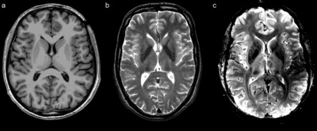Figure 3.5. Conventional MRI contrasts of an axial slice of the brain. a) \(T_{1}\)-weighted; b) \(T_{2}\)-weighted; c) \(T_{2}^*\)-weighted.
In the brain, the \(T_{2}\)-effect is most evident in the contrast between cerebrospinal fluid and brain tissue (Figure 3.5b). The CSF has a very long \(T_{2}\) in comparison to the parenchyma. Thus, \(T_{2}\) relaxation in CSF is slow, leaving the bulk of the transverse magnetization intact at the moment when the image is acquired. Hence, the CSF is very bright in the \(T_{2}\)-weighted image. The \(T_{2}\) of healthy grey and white matter are similar and do not show much \(T_{2}\)-contrast. In many cases, pathological tissue states alter the \(T_{2}\)-value of the tissue due to a change in water content. This is used in clinical MRI, e.g. for imaging oedema where fluid is accumulated in the extracellular space. In all scientific chapters of this thesis, the \(T_{2}\)-weighted image is used in the context of diffusion imaging (Section 3.2), in which it serves as the reference image.
T2* contrast
Additional dephasing of the excited spin system occurs due to inhomogeneities in the magnetic field. Spatial inhomogeneities stem from imperfections in the magnet and magnetic susceptibility differences between and within regions in the subject/sample. In some instances there is a temporal component as well, e.g. in functional MRI and subject motion. The variance in the field within an imaging voxel results in a range of Larmor-frequencies causing dephasing according to \(T_{2}^*\). \(T_{2}^*\)-weighting is obtained by gradient echo sequences with long TE and long TR.
An important application of the \(T_{2}^*\)-effect is functional MRI (fMRI). In fMRI, the blood-oxygen-level-dependent (BOLD) signal is measured. The BOLD signal arises from field perturbations around blood vessels that result from the presence of deoxyhemoglobin (dHb) in the veins. Deoxyhemoglobin is paramagnetic with respect to tissue and leads to a field inhomogeneity around a vessel. This field perturbation is bipolar due to the cylindrical geometry of the blood vessel. The concentration of deoxyhemoglobin, and hence the \(T_{2}^*\)-dephasing, is as a measure of brain activation, because neural activity is metabolically expensive. The neurovascular unit (i.e. a neuron, astrocyte and capillary) responds to the oxygen consumption (increasing [dHb]) associated with changes in the dendritic polarization of the postsynaptic neuron with dilation of the capillaries (increasing [dHb]) and an increase in blood flow (decreasing [dHb]). As the blood flow effect is the dominant mechanism in neurovascular coupling, the counterintuitive net effect is a decrease in dHb per unit volume of activated tissue. Activated tissue therefore has a higher signal intensity compared to a baseline condition (“rest”) in a \(T_{2}^*\)-weighted image. Although the effect is small (~1-4% compared to the baseline condition), it is reliably measurable when appropriate activation paradigms are used. Without a paradigm, useful information can still be obtained about spatiotemporal correlations in the BOLD signal: the resting-state fMRI method.
In this thesis, the \(T_{2}^*\)-effect is used for anatomical imaging (susceptibility imaging, explained in Section 3.3). Brain nuclei and fibre tracts display a range of magnetic susceptibility values as a result of their chemical composition (concentrations of diamagnetic and paramagnetic proteins as well as iron storage and accumulation). The field variations that result from these tissue characteristics in these brain regions can yield exquisite contrast, showing detailed anatomical structures (Figure 3.5c). The method is used in multiple scientific chapters in this thesis and is particularly relevant for Chapter 4.
3.1.4 Some considerations for high field MRI
Over the past two decades, a steady trend of increasing field strength is evident for both human and animal MR systems. There are a few—very significant—advantages associated with increasing the field strength in MRI, but also numerous challenges. The work presented in this thesis has mostly been performed on MR systems that can be considered high field (i.e. ≥7T). This warrants a discussion of issues that are specifically relevant to high field MRI.
The first consideration is the primary reason to image at high field: signal. The equilibrium magnetization is proportional to the main magnetic field \(\mathbf{B}_0\) (Eq 3.3). Going to higher field strength, therefore also increases the signal available after excitation. Theoretically, the signal-to-noise ratio increases linearly with field strength89. Evidently, when wanting to image at high resolution, scanning on a high field system is highly beneficial.
The second consideration is that the effect of magnetic susceptibility variations increases with field strength. This is both a curse (susceptibility artefacts increase in severity; see Box 3.1) and a blessing. The blessing is that this can be used in susceptibility-based imaging methods. For BOLD imaging (Section 3.1.3.3), for example, the contrast between baseline and activation is significantly increased. The same goes for the contrasts between tissue types in anatomical susceptibility imaging (discussed in Section 3.3). Therefore, susceptibility and BOLD imaging have an advantage over and above ‘just’ increased signal when performed at high field strength.
This relates to the general finding that the relaxation behaviour of tissues changes with field strength. At high field, the \(T_{1}\) of brain tissue increases90. Transverse relaxation constants decrease with field strength. The \(T_{2}\) decrease is linear, while the \(T_{2}'\) decreases nonlinearly91. Importantly, this has considerable impact (i.e. rapid signal loss) for sequences that use a long echo time, such as diffusion imaging (Section 3.2).
The RF characteristics are also different at high field strength. The RF power required for excitation increases with field strength, although fortunately not with the theoretically expected \(\mathbf{B}_{0}^2\)-dependence92. Nevertheless, this limits the range of sequences that can be used at high field—or complicates their implementation, because RF-intensive sequences quickly exceed the specific-absorption-rate (SAR) limits set for MR imaging (3.2 W/kg in the European Union). This is particularly problematic for spin echo sequences that employ many 180° pulses. To reduce SAR in these cases, one can opt for increasing the repetition time or acquire only a specific region-of-interest. The latter option was chosen in Chapter 7 for the acquisition of diffusion-weighted data. For gradient echo sequences lacking the 180° pulses, SAR is usually less of a problem at high field, also because of the customary low flip angles used.
Additionally, the RF field is not nearly as homogeneous over the brain as compared to lower field strengths. This \(\mathbf{B}_{1}\)-inhomogeneity arises from the dielectric properties of the brain and is inherent for frequencies above 200 MHz93. As the RF pulse wavelength approaches the dimension of the body at high field, destructive interference patterns occur manifesting as a high intensity in the centre of the brain with respect to the periphery94. Various approaches have been proposed to ameliorate the effect, including RF shimming94, the use of dielectric pads95 and the use of multiple transmit channels96,97.
Animal MR systems have smaller bore dimensions compared to clinical scanners. This is of great significance for the system’s performance. A smaller bore means that a homogeneous field can be more easily obtained over the bore in comparison to large-bore systems of the same field strength. The reduced \(\mathbf{B}_{0}\)-inhomogeneity allows scanning at a higher resolution. Alternatively, higher field strengths (7-21T) are customary for these systems, with the standard becoming 9.4T.
A second important advantage of small-bore systems is that much larger gradient fields can be maintained (up to 1-2 T/m). As will be detailed in Section 3.2.3, diffusion-weighting gradients are best kept short to avoid signal loss due to \(T_{2}\) decay. Using the powerful gradients in animal systems allows strong diffusion weighting and yet short gradient pulses. Both characteristics of small-bore systems have proven highly beneficial for the work in Chapters 5 and 6 of this thesis.
Furthermore, for the small volumes scanned on these animal systems small receive coils are appropriate. The sensitivity of a coil increases with decreasing diameter. In many MR spectroscopy applications the use of microcoils are optimal98. Rodent brain MRI uses coils with a diameter on the order of 1 cm. A fairly recent innovation has greatly enhanced the capability of coils of these dimensions. The cryogenic probe, originally proposed by Hoult and Richards (1976)99, is a coil that is cooled to low temperatures. The electronics involved in tuning-and-matching, transmit-receive switching and preamplification are cooled as well. The noise owing to random thermal motion of electrons in the system is significantly reduced at these temperatures and the conductivity of the electronics increases. As a result, a considerable gain in SNR can be achieved in comparison to similar room-temperature systems100. A cryogenic probe was employed in the work of Chapter 6.
3.2 Diffusion weighted imaging
The image contrasts obtained by probing \(T_{1}\), \(T_{2}\) and \(T_{2}^*\) relaxation processes provide indispensible insight in many processes influencing the molecular environment in the brain. However, it does not provide many clues on the geometric architecture of the tissue. To understand the organization of the brain, the dimensions and arrangement of neurons and supportive cell types is of high importance. Although unable to infer connectivity or geometry of individual cells directly, diffusion weighted imaging (DWI) is an imaging technique unequalled in its capability to probe tissue microstructure in the living human brain.
The applications of DWI are many. It is the clinical workhorse of stroke imaging. Immediately at the onset of cerebral infarction the oedematous tissue has a hyperintense appearance in the diffusion weighted image. As fast detection and characterization is of utmost importance for treatment decisions, the value of diffusion imaging cannot be understated. In research, diffusion imaging is best known for distinguishing between fibre tracts in the white matter. As the only available technique to infer anatomical connectivity between regions in the human brain in vivo, DWI may be regarded as one of the primary investigative tools in cognitive neuroscience. A relatively young and upcoming branch of diffusion MRI methods is microstructure imaging. It aims to provide an accurate quantification of a diversity of microstructural tissue parameters. Although the basic principles and first (ex vivo) experimental results have been reported more than two decades ago, advances in MR (gradient) systems, pulse sequences and tissue models have brought this field into the realm of the living human brain.
3.2.1 Physics of diffusion
In the aqueous environment of the brain protons are far from static. The water molecules containing most of the protons constantly move about in a random walk. This random walk of particles is known as Brownian motion (or self-diffusion, in contrast to diffusion in the presence of a concentration gradient). In an isotropic medium, the particle displacement can be statistically described by the diffusion coefficient \(D\) through the Einstein relation
| \[D = {1 \over 6\tau} \langle {\mathbf{R}^{T}\mathbf{R}} \rangle\] | 3.25 |
where \(\tau\) is the diffusion time and \(\mathbf{R}=\mathbf{r}-\mathbf{r}_0\) is the relative particle displacement. \(\langle ... \rangle\) indicates averaging over particles. In 3D, the diffusion coefficient thus relates to the characteristic step length of the random walk
| \[l = \sqrt {6 D \tau}\] | 3.26 |
In terms of the interactions with the environment in a homogeneous medium, the Stokes-Einstein equation applies to diffusion of particles with radius \(r\)
| \[D = {{k_{B} T} \over {6 \pi \eta r}}\] | 3.27 |
where \(k_B\) is Boltzmanns constant, \(T\) is the temperature and \(\eta\) is the viscosity of the medium.
It is instructive to consider the diffusion process in terms of the diffusion propagator \(P\), because the relations above only hold for—as will be elaborately discussed in the following sections—the very limited set of situations where diffusion is Gaussian. The diffusion propagator is the probability distribution of particle displacements in three-dimensional space. Thus, in the context of diffusion MRI it describes the probability of protons traveling from position \(\mathbf{r}_0\) to \(\mathbf{r}\) in a diffusion time \(\tau\). In an isotropic homogeneous medium, the proton displacements follow a Gaussian distribution and an analytic expression can be given for \(P\):
| \[P(\mathbf{r}_{0},\mathbf{r}) = {1 \over (4 \pi D \tau)^{3/2}} e^{-{{(\mathbf{r} - \mathbf{r}_{0})^{2}} \over {4 D \tau}}}\] | 3.28 |
3.2.2 Biophysics of diffusion in the brain
In the brain, the cerebrospinal fluid in can be considered an isotropic medium and Eqs 3.25-3.28 hold. Brain parenchyma, however, is far from homogeneous. It consists of neurons and glia of all shapes and sizes. The macromolecular components that compose these cells form barriers to diffusion. Protons therefore diffuse with an apparent diffusion coefficient (ADC). Not only do the cells slow down diffusion as in a viscous isotropic medium, some components of the cell form impassable barriers to the protons. In particular, the lipid bilayer of the cell membrane that separates the cell’s interior from the exterior can be an impenetrable boundary to diffusion. The neuronal membrane, for example, is almost impermeable to water. The water permeability of the astrocytic membrane, on the other hand, is orders of magnitude larger due to aquaporins in the lipid bilayer101. Because the composition and geometry of the intra- and extracellular space differ qualitatively, the diffusion characteristics of these spaces are very dissimilar. For many applications, this warrants separate discussion of intra- and extracellular diffusion.
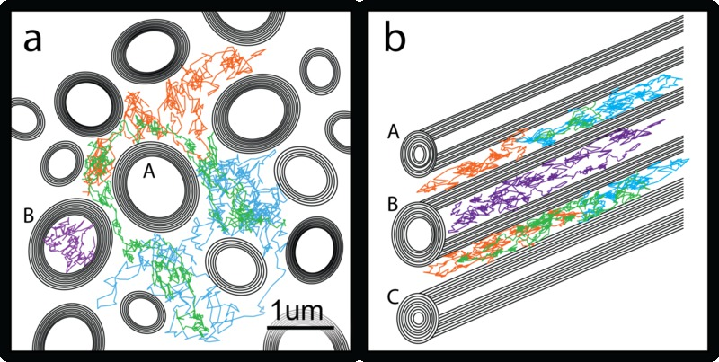Figure 3.6. Schematics of myelinated axons in cross-section with random walks of three protons in the extracellular space (orange, green & blue) and one intra-axonally (magenta; in axon B). a) perpendicular cross-section illustrates the tortuous paths taken around axon A (image courtesy of Karla Miller); b) anisotropic diffusion along the length of the axons.
3.2.2.1 Diffusivity in the intra- and extracellular space
Outside the cells, the interstitial fluid is similar in composition to the cerebrospinal fluid, although the macromolecules of the extracellular matrix increase the viscosity102. The distance between cells is on the order of 50 nm103, while cell body diameters are on the order of 1-100 μm and neuronal processes are an order of magnitude less than that. This geometry results in considerable tortuosity, i.e. protons diffusing around the tightly packed cells appear to move over smaller distances as compared to when they are free to diffuse over any path (see e.g. the green diffusion path moving around axon A in Figure 3.6a). The tortuosity λ relates to the ADC as
| \[\lambda^2 = {ADC \over D}\] | 3.29 |
The tortuosity of brain tissue is approximately 1.6, while the theoretical value given the geometry is 1.23102. Because the extracellular space is continuous—at least on the scale of the displacements in the MR diffusion experiment—protons can diffuse to any location within the extracellular space. However, dead-space microdomains that transiently trap protons in concave geometries contribute to the tortuosity104. Interactions with macromolecules in the extracellular matrix and on the neuronal membranes might also slow down protons and increase the viscosity102. Nevertheless, the proton displacement distribution of the extracellular space can be approximated reasonably well by a Gaussian diffusion propagator irrespective of the time the protons are diffusing.
The extracellular space accounts for approximately 20% of the volume fraction in adult healthy brain parenchyma102. The remaining 80% is occupied by cells. The cytosol within the cells’ interior is aqueous, but cytoskeletal filaments and microtubules prevent free diffusion of protons and results in a fourfold decrease of the diffusion coefficient105,106. To what extent the Gaussian approximation holds for intracellular diffusion without membrane interactions is unresolved. For cells with an impermeable membrane (i.e. assuming zero exchange with the extracellular compartment on the time scale of the MR diffusion experiment), protons are confined within the cell and the displacement of any proton cannot be larger than the cell’s dimensions (see e.g. the magenta diffusion path inside axon B in Figure 3.6a). Diffusion is said to be restricted. This, of course, has a major implication for the proton displacement distribution: restricted diffusion is non-Gaussian.
3.2.2.2 Anisotropy
Neurons have elongated processes. In the extreme case, the neuronal processes can be a meter long in humans. In most locations in the brain, neuronal processes are not oriented randomly, but are structured. They can be organized in bundles, sheets or grids. All these configurations have the consequence that proton diffusion is not equal in all directions, but larger along the long axis of neuronal processes as compared to the short axes: there is diffusion anisotropy (Figure 3.6b).
The anisotropy of diffusion in a hollow cylinder is determined by the ratio of its length and diameter. Assuming cylindrical neuronal processes with a long axis much longer and a diameter smaller than the root-mean-square proton displacement and no exchange with the extracellular compartment, it follows that the intracellular diffusion component is very directionally specific for the orientation of the neuronal process. Diffusion along the long axis of the process may be approximately Gaussian, but diffusion in the perpendicular directions is highly restricted by the cell membrane101. Outside of the cylinders, diffusion is also constrained by the cylindrical cell processes, especially when the processes are coherently organized. The anisotropy of the extracellular space depends on geometrical factors such as fibre coherence and packing density.
3.2.2.3 Diffusion in different tissue types
White matter
Diffusion anisotropy is most pronounced for the white matter. The white matter is composed of interareal axons, most of which are myelinated. These axons form fibre bundles, grouping together axons that share a destination. In between these axons, oligodendrocytes produce myelin sheets that wrap around the axons in multiple layers. Each oligodendrocyte myelinates a section of multiple axons. The axonal metabolism is low and therefore comparatively few astrocytes and blood vessels reside in the white matter. Within white matter, there is some variability in the diameter, packing density and myelination of the axons, which results in variation in anisotropy over the white matter. Generally, this is the anisotropy that one wants to infer on in DWI.
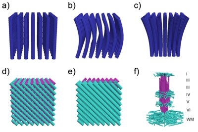Figure 3.7. Schematic fibre configurations encountered in the white matter: a) linear; b) bending; c) fanning; d) crossing; e) kissing; and f) the cortical grey matter: tangential view.
A different source of variability in anisotropy is the fibre configuration (Figure 3.7). In general, fibres do not all share the same orientation within the voxel volume. A multitude of configurations is possible. What still might be considered a true source of variability in anisotropy (i.e. that persists when measured at the cellular scale) is the interdigitation of fibres of bundles with different orientations: the quintessential fibre crossing (Figure 3.7d). The grid that axons of two interdigitating bundles weave dictates that the proton displacement shows two peaks in the directions along the bundles. However, the peak proton displacement is much reduced in comparison to diffusion along a single coherent bundle (Figure 3.7a). Protons in the extracellular space that have the largest displacement along one of the fibre bundles, will have encountered many perpendicular axons of the other bundle on their path. Other configurations for which anisotropy is expected to persist microscopically are the bending (Figure 3.7b) and fanning (Figure 3.7c) configurations. In this thesis, the fanning configuration—in which a fibre bundle enters a voxel more coherently than it leaves the voxel—is investigated in Chapter 6.
Complex fibre configurations can also arise purely from the limited resolution of the MR measurement. For example, two coherent fibre bundles with different orientations can occupy parts of the same voxel. This configuration shown in Figure 3.7e is termed fibre kissing and results from partial volume. It is a confound in data processing of all MR modalities, including DWI. As the smallest unit of measurement available, an imaging voxel is a black box with regard to the internal distribution of the sources that underlie the signal from within that voxel. Therefore, it cannot be inferred from the DWI measurement alone which of many possible configurations has generated an observed DWI signal. In Chapter 4, a partial solution is presented to distinguish two of these configurations (crossing/kissing) in selective areas of the brain.
Grey matter
The composition of grey matter is very different from white matter. A far larger fraction of the volume is occupied by cell bodies, both neurons and glial cells. The diffusion in and around these cell bodies is nearly isotropic (and can also be restricted inside the cell body). This shift to a larger fraction of isotropic compartments thus results in a low diffusion anisotropy, as only the elongated cellular processes contribute to this. However, the grey matter is not devoid of all neuronal processes. In fact, the axons that form the white matter originate somewhere in grey matter. Additionally, intra-areal (myelinated and unmyelinated) axons provide short range communications within grey matter structures. Dendritic processes are found almost only in grey matter. The orientation of these processes is often highly specific, in particular for the neocortex.
The neocortex is a sheet composed of several layers (see also Box 2.3). Traditionally, six layers are defined on the basis of cytoarchitecture. The intracortical circuit that is formed through the interaction between these layers is highly typical over the cortical sheet. Therefore, the connections between the layers through the neuronal processes also have a consistent anatomical arrangement. Because the cortex is a layered sheet, the fibres are arranged in a grid-like structure (Figure 3.7f). Fibres radial to the cortical sheet provide communications between the layers and regions, while fibres in the tangential plane of the cortical sheet provide lateral integration. In a simplified model, the radially oriented fibres are 1) axons entering and leaving the cortex for long-distance connectivity; 2) intracortical axons that provide interlaminar communications; 3) apical dendrites of pyramidal neurons ascending to the supragranular layers. The tangential fibres are 1) axon collaterals from long-range connections; 2) intra- and intercolumnar axons for lateral communication; 3) basal dendrites and apical dendritic tufts.
These two orthogonal components of the cortical fibre grid are not homogeneously distributed. As is the case for the cell bodies, the tangential fibres show a laminar pattern where some layers are high in fibre density, while other layers are characterized by low fibre content. For the radial fibres, there is also laminar variability (e.g. in the density and the fibre types) as the layers have specific functions and therefore specific connectivity. For example, the primary motor cortex (M1) sends myelinated fibres to the spinal cord from the voluminous infragranular layers, while thalamic input connections are sparse (the granular layer is virtually absent). Therefore, in M1 has low myelinated fibre content. In primary somatosensory cortex (S1), however, the innervation with myelinated fibres from the thalamus to the granular layer is much larger, leading to a higher myelin content throughout the infragranular and granular layers. Neither is the tangential distribution of radial fibres homogeneous. Rather, fibres co-ascend the cortical layers in small bundles of about 20 axons/dendrites78. Whether this influences the diffusion properties in the cortex as observed in DWI is unknown. Furthermore, fibre constituents of the cortex will also vary by cortical region.
Ex vivo tissues
Diffusion imaging has gained popularity because of its ability to measure brain connections in vivo. For some purposes, as will be seen in Chapters 5 and 6, it is highly beneficial to image tissue samples ex vivo. However, after death, autolytic and putrefactic processes start degrading the neuronal membrane. For diffusion imaging, this membrane is the main source of contrast. To avoid tissue degradation, the tissue has to be fixed by a chemical compound, usually formaldehyde. Because autolysis starts immediately after death, it is important to start fixation as soon as possible. The fixation procedure is not without consequence for the tissue characteristics that we aim to measure with diffusion imaging. Apart from inhibiting the growth of moulds and bacteria to counter putrefaction, the fixation compound cross-links proteins of the cytoskeleton and in the extracellular space to inactivate the lysosomal enzymes responsible for autolysis. It thus increases the tissue’s rigidity and decreases the diffusivity. Moreover, tissue fixation can result in changes to the ratio of the intra- and extracellular volume fractions when the fixative solution is not isotonic.
Another consideration in ex vivo diffusion imaging concerns temperature. The diffusion coefficient increases with temperature (Eq 3.27). Our brains are maintained at a stable temperature of 37°C. The change to room temperature at which most ex vivo scanning is performed causes a considerable drop in the diffusion coefficient. Fortunately, the decreased diffusivity can be compensated by stronger diffusion sensitization. This is only feasible when using capable hardware (see Section 3.1.4).
Relaxation rates also change with tissue fixation107,108. Most relevant for diffusion imaging, the formaldehyde fixative has a short \(T_2\). Scanning the tissue in the formaldehyde solution is therefore inefficient with regard to signal-to-noise ratio (SNR). The \(T_2\) can be (partially) restored by soaking the sample in phosphate buffered saline (PBS)107 before scanning. To avoid magnetic field inhomogeneities at the edges of the samples due to susceptibility differences between the fluid and the sample, it is beneficial to immerse the sample in a proton-free susceptibility-matched liquid during scanning.
3.2.3 Diffusion weighting in MRI
The diffusion of protons in tissue is a given phenomenon. It occurs spontaneously without any external manipulation by the MR system. The MR signal is influenced by the process of diffusion in the presence of magnetic field gradients. This was already realized by Hahn (1950)86 when he published the spin echo method. He attributed reductions in the spin echo to protons diffusing through local magnetic field inhomogeneities. Carr and Purcell (1954)109 provided a rigorous mathematical framework for the diffusion effect and also proposed to introduce a magnetic field gradient throughout the spin echo measurement to deliberately sensitize the signal to diffusion. This was followed by the formal description of the effect on magnetization when Torrey (1956)110 adapted the Bloch equation (Eq 3.7) to account for diffusion. The Bloch-Torrey equation (in the laboratory frame of reference) is
| \[{d \mathbf M \over dt} = \gamma \mathbf M \times \mathbf B - { \mathbf {M}_x \vec i + \mathbf {M}_y \vec j \over T_2} - {( \mathbf {M}_z - \mathbf {M}_0) \vec k \over T_1} + {\nabla \mathbf{D} \nabla \mathbf{M}}\] | 3.30 |
In the first three terms on the right-hand side the classic Bloch equation can be recognized. The diffusion tensor D (Section 3.2.4.1) is incorporated in the last term on the right-hand side. For isotropic diffusion, the Bloch-Torrey equation has the solution (in the rotating frame of reference) for the transverse magnetization
| \[\mathbf{M}_{xy} = \mathbf{M}_{0} e^{-{t \over {T_2}}} e^{-{b\mathbf{D}}}\] | 3.31 |
where M_0 is the magnetization after excitation and b is the diffusion-weighting factor determined by the field gradient:
| \[b = \gamma^2 \int_0^{TE} {\left( \int_0^t G(t')dt' \right)}^2 dt\] | 3.32 |
The diffusion pulse sequence as it is most widely used today—the pulsed gradient spin echo (PGSE)—was proposed by Stejskal and Tanner (1965)111. In the context of modern day MRI, diffusion imaging was pioneered by LeBihan et al. (1986)6 and furthered by Moseley et al. for detection of tissue ischemia112 and measurement of anisotropic diffusion7. The range of applications for diffusion imaging exploded when the diffusion tensor model was introduced by Basser et al. (1994)113, providing an intuitive model for the diffusion MR signal in 3D.
3.2.3.1 The PGSE experiment
The spin system is dephased when magnetic field gradients are present within a voxel. This process can be externally imposed by applying strong magnetic field gradient pulses. In the PGSE sequence the standard spin echo sequence is complemented with two strong diffusion gradient pulses \(\mathbf{G}\) with duration \(\delta\) on either side of the refocusing pulse (Figure 3.8). After excitation, the first gradient pulse imposes a phase on the protons that varies strongly with spatial position in the direction in which the gradient is applied. In the period between the gradient pulses (diffusion time \(\Delta\)), the protons diffuse through the tissue—colliding with numerous boundaries on their path—and all acquire a new spatial position. The refocusing pulse has been applied by then, and the effects of static field inhomogeneities are rephased. Because the refocusing pulse has been delivered, the second diffusion gradient rewinds the phase imposed by the first. However, as the protons have moved in the period between the gradient pulses, the phase imposed by the rewinding gradient is not equal to the phase imposed by the first diffusion gradient. The difference in the phase is proportional to the distance the proton has moved in the direction of the diffusion gradient. This relation is only strictly valid if \(\delta\ll\Delta\), i.e. if the gradient pulse duration is short compared to the time interval between the gradient pulses. This is known as the narrow pulse approximation. Because diffusion is a stochastic process, the spin system has a distribution of phase offsets and hence there is a net dephasing that is proportional to the proton displacement distribution after the second diffusion gradient when the (imperfect, diffusion-weighted) echo is formed.
By applying stronger gradients, the phase difference when moving from \(\mathbf{r}_0\) to \(\mathbf{r}\) in the direction of the gradient will be larger and therefore the dephasing of the spin system will be larger. Thus, the diffusion weighting is stronger. The dephasing will also be more pronounced when the protons have more time to diffuse in between the pulses. Specifically, in a PGSE sequence diffusion weighting is determined by the gradient pulse strength \(|G|\), duration \(\delta\) and separation \(\Delta\). It is captured in the b-value (or b-factor). For the PGSE experiment the b-value is given by
| \[b = \gamma^2 \delta^2 |\mathbf{G}| \left(\Delta - {\delta \over 3} \right)\] | 3.33 |
Figure 3.8. PGSE a) Sequence diagram: strong diffusion gradients G of duration δ are placed on either side of the refocusing pulse giving a diffusion time Δ. Refer to Figure 3.2 for imaging gradients. b) no diffusion in the direction of the gradient: phase accrual due to the first diffusion gradient is fully refocused after the 180° pulse. c) diffusion in the direction of the gradient: imperfect refocusing after the 180° pulse, resulting in signal attenuation.
The diffusion-weighted MR signal is then related to the diffusion coefficient \(D\) and the b-value by
| \[S = S_{0} e^{-bD}\] | 3.34 |
where \(S_0\) is the signal in absence of the diffusion gradient pulses.
Note that Eq 3.34 assumes mono-exponential decay of the signal. Especially at high b-values, the diffusion experiment becomes sensitive to restricted intracellular compartments and signal decay is not mono-exponential. Furthermore, in practice the diffusion pulses have a finite width (the narrow-pulse approximation is violated) and cross-terms owing to diffusion during the gradient pulse should be incorporated.
The PGSE sequence has been used in all scientific chapters of the thesis. In Chapter 4 a variant—the twice-refocused PGSE—was used that is less sensitive to eddy currents. These and other artefacts that often occur in diffusion imaging are discussed in Box 3.1.
3.2.3.2 Q-space imaging
In Section 3.2.1 the diffusion propagator was introduced as a general descriptor of the probability distribution of proton displacements as a function of diffusion time. The PGSE experiment can be used to sample the propagator and the b-value was introduced to arrive at an intuitive expression for the MR signal in the presence of Gaussian diffusion. As water mobility is restricted in specific compartments of brain tissue, e.g. the intracellular compartment, the diffusion process strongly deviates from Gaussianity. For cases where the diffusion gradient pulse is short—under the narrow pulse approximation assumption—the MR signal can be conveniently described by the Fourier relation
| \[{S(\mathbf{q}) \over S(0)} = \int {p(\mathbf{r},\Delta) e^{i\mathbf{qr}}d\mathbf{r}}\] | 3.35 |
with the wave vector
| \[q = {{\gamma \delta \mathbf{G}} \over {2 \pi}}\] | 3.36 |
forming a Fourier pair with displacement vector \(\mathbf{r}\) for any fixed value of \(\Delta\). In analogy to the k-space definition in conventional imaging, the six-dimensional space (3D displacements in a 3D space) that is spanned by parameter q is called q-space. A sampling of a regular grid in q-space allows a simple Fourier transform of the data to calculate the diffusion propagator. This is what constitutes q-space imaging114.
The range of q-space that is sampled determines the resolution with which the displacement vector \(\mathbf{r}\) can be resolved. It follows that for characterizing displacements of small amplitude, i.e. diffusion restricted in small compartments, high q-values are required. Furthermore, for distinguishing small angular variations in \(\mathbf{r}\), high q-values are also required. The density of q-space (1\Δq) sampling determines the field of view of the diffusion displacement space: the range of displacements that is included in the measurement. Under the narrow pulse approximation assumption, the gradient hardware and \(T_2\) of the tissue severely limit the attainable q-value, prohibiting many useful in vivo human applications. However, the angular characteristics are largely preserved if the narrow pulse approximation is violated and a convolved propagator is obtained from the Fourier transform115.
Box 3.1. Artefacts in diffusion imaging
Head motion
In DWI, the MR signal is sensitized to diffusion of protons with displacements on the order of 10 μm. Unavoidable subject motion is generally on the order of a millimetre. As a result, the phase shift induced by bulk motion is about 100× larger than the phase shifts induced by the diffusion process. When combining several excitations to reconstruct a single image the different motion-induced phase shifts will result in severe ghosting, i.e. shifted image duplications. To avoid this, a diffusion-weighted volume is generally acquired in a single shot using EPI readout. This does, however, not eliminate all motion effects.
Cardiac pulsation
Cardiac pulsation is another source of bulk tissue motion. In contrast to head motion, the effects of cardiac pulsation are variable over regions of the brain. On the basal aspect, near the circle of Willis, the artefacts are most pronounced. Signal dropout is often seen in these regions. A mitigation strategy for cardiac pulsation artefacts is to synchronize the volume acquisition with the cardiac cycle, such that the motion-induced phase shifts are minimal and equal from shot to shot. Although this works reasonably well, it imposes additional measurement of the electrocardiogram and can increase the experiment duration considerably.
EPI-artefacts
The single-shot EPI acquisition dramatically reduces motion artefacts in DWI. However, this comes at the cost of particular EPI-associated artefacts and considerations. First, the SNR efficiency for EPI acquisition is low. This limits the resolution of in vivo diffusion imaging at standard field strengths to a typical voxel volume of ˜8 ml. Second, because of the long echo train length geometric distortion occurs. Susceptibility artefacts are also more pronounced, causing signal dropouts and local distortions facilitated by the low bandwidth in the phase-encoding direction. The low bandwidth has consequences for the chemical shift between water and fat too. It is on the order of voxels for the phase-encode direction. Finally, the zigzag trajectory through k-space can result in echo misalignment, manifesting as a phase modulation at half the phase-encode bandwidth in k-space and thus an image duplicate at half the FOV in the image domain (N/2 ghost).
Eddy-currents
Time-varying magnetic fields induce currents in conductors placed in the field. The pulsed gradients in a PGSE sequence are strong and are switched rapidly. Therefore, considerable currents can be induced in conductive parts of the MR system (RF coil, gradient set). These induced currents result in magnetic fields that add to the intended field distribution (\(\mathbf{B}_0\) + imaging gradients). This leads to distortion in the reconstructed image. These distortions are dependent on the direction of the gradient. The eddy current artefacts can be decomposed in scaling, shear and translation. Eddy currents can be mitigated by actively shielding the gradient set to minimize the field gradient effects in the cryostat. Residual eddy currents can be compensated for by using preemphasis (design of the gradient waveform to counteract predicted eddy currents). In the post-processing of the reconstructed images, an affine realignment of the images acquired with different gradient directions should be employed to correct residual eddy current effects.
3.2.4 Models of 3D diffusion in the brain
The PGSE experiment can be used to probe diffusivity in a particular direction. For most applications, it is interesting to know the diffusion propagator—or its proxy: the ADC profile—in 3D space. For acute stroke imaging, for example, the average magnitude of diffusivity is important as an indicator of cytotoxic oedema. In structural connectivity investigations, it is important to find the exact direction(s) of preferred diffusion. To achieve this, the diffusion propagator has to be sampled for multiple directions of the diffusion gradient. For some methods, it is important to (also) sample multiple values of \(|mathbf{q}|\).
The diffusion propagator is the probability density function of proton displacement. This fully characterizes the diffusion process given the underlying structure. In many cases, the main interest is the relative magnitude of proton displacements over all orientations. The diffusion propagator can then be radially integrated to obtain a diffusion orientation distribution function (dODF).
| \[ODF(\mathbf{u}) = {1 \over Z} \int P(r,\mathbf{u})dr\] | 3.37 |
where \(\mathbf{u}\) is the unit vector, \(r\) is the radial distance and \(Z\) is a normalization constant.
Furthermore, often it is not the goal to characterize the diffusion process itself, but to make inferences regarding the underlying fibre distribution in a voxel. This is modelled by the fibre orientation distribution function (fODF). The dODF and fODF are both functions on the unit sphere that are related through a transfer function. Because of the convolution of the fODF with the transfer function, multiple peaks of the fODF can merge into a single peak in the dODF and therefore the peaks in the dODF do not necessarily coincide with peaks in the fODF.
The extent to which the directions and b-values are sampled determines the complexity of the model that can be used in analysis. For diffusion in the brain, there is a range of models that can be chosen to suit the particular application. Naturally, as in any model, these models are a simplification of the underlying substrate. The models discussed below vary widely in this simplification. While for some applications it might be acceptable to assume Gaussian anisotropic diffusion (Section 3.2.4.1), other applications might call for separation of Gaussian and non-Gaussian diffusion (Section 3.2.4.2). Likewise, there is a choice for modelling the tissue as single bundle in every voxel (Section 3.2.4.1 and 3.2.4.3) or to allow for multiple peaks in the modelled diffusion profile (Section 3.2.4.2). In short, the question asked of the diffusion data, determines the model choice and therefore the acquisition strategy. In the following paragraphs, the model classes and specific implementations as far as they are used in this thesis are introduced.
3.2.4.1 The diffusion tensor
In the diffusion tensor (DT) model (Figure 3.9), diffusion is modelled as a symmetric positive semidefinite rank-2 tensor \(\mathbf{D}\)
| \[\mathbf{D} = \begin{bmatrix} D_{xx} & D_{xy} & D_{xz} \\ D_{yx} & D_{yy} & D_{yz} \\ D_{zx} & D_{zy} & D_{zz} \end{bmatrix}\] | 3.38 |
which is fully characterized by 6 elements (as symmetry implies \(D_{xy}=D_{yx}\), \(D_{xz}=D_{zx}\) and \(D_{yz}=D_{zy}\); Figure 3.10a). To estimate the six unknowns the diffusion coefficient \(D\) in Eq 3.34 is substituted by the tensor \(\mathbf{D}\):
| \[S = S_0 e^{-b\mathbf{D}}\] | 3.39 |
which can be rewritten as
| \[ln \left({S \over S_0}\right) = -{\sum_{i=1}^3 \sum_{j=1}^3 b_{ij} D_{ij}}\] | 3.40 |
where \(b_{ij}\) are the elements of the b-matrix obtained from the gradient integrals (Eq 3.32).
The elements of \(\mathbf{D}\) can then be obtained by linear regression of the left-hand term of Eq 3.40 (the log-transformed diffusion attenuation) with respect to the elements of \(b_{ij}\). Hence, apart from a measurement of \(S_0\), six measurements of \(S\) at different \(b_{ij}\), i.e. noncollinear directions of the diffusion gradient, are necessary to calculate the diffusion tensor elements.
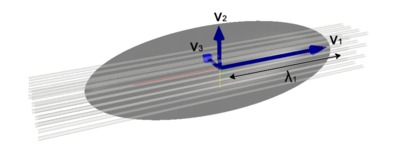Figure 3.9. Diffusion tensor ellipsoid overlaid on a bundle of axons. Bold arrows indicate the three eigenvectors.
To derive orientationally invariant tensor metrics as well as the tensor orientation with respect to the image coordinate frame, the tensor can be diagonalized. By eigendecomposition of \(\mathbf{D}\), its three eigenvalues \(\lambda_1\), \(\lambda_2\), \(\lambda_3\) and eigenvectors \(v_1\), \(v_2\), \(v_3\) are obtained (Figure 3.9). The eigenvalue/eigenvector pairs are ordered such that \(\lambda_1>\lambda_2>\lambda_3\).
The primary metrics of the tensor are the mean diffusivity (MD; Figure 3.10b), defined as the mean of the eigenvalues
| \[MD = {{\lambda_1 + \lambda_2 + \lambda_3} \over 3}\] | 3.41 |
and the fractional anisotropy (FA; Figure 3.10c)—a dimensionless quantity that ranges between 0 and 1, defined as the normalized ratio between the amplitude of the deviatoric of the tensor (i.e. the anisotropic part) and the amplitude of the tensor
| \[FA = \sqrt{3 \over 2} {{\sqrt{(\lambda_{1}-\hat{\lambda})^2 + (\lambda_{2}-\hat{\lambda})^2 + (\lambda_{3}-\hat{\lambda})^2}} \over {\sqrt{\lambda_{1}^2 + \lambda_{2}^2 + \lambda_{3}^2}}}\] | 3.42 |
Diffusion Tensor Imaging (DTI) has grown to be immensely popular after the DT model was introduced by Basser et al. (1994)113. The possibility to quantify not only the magnitude of diffusion, but also the anisotropy (independent of measurement direction with respect to the tissue) has tremendously expanded the scope for clinical and research purposes alike.
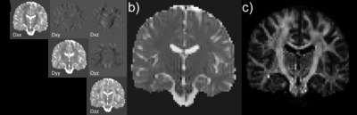Figure 3.10. Diffusion tensor metrics of a coronal slice of the human brain. a) the six unique elements of the diffusion tensor; b) mean diffusivity; c) fractional anisotropy.
The metrics derived from the tensor are used as markers for tissue states. The MD is sensitive to the overall amount of boundaries encountered by the spin system in the diffusion time. Therefore, it is an excellent marker for processes that affect the spacing between these boundaries, such as stroke and oedema. The FA is often interpreted as an index of integrity, for white matter in particular. The FA is affected by differences in the microstructure encountered by the spin system in both the direction of largest diffusion (the axonal direction) as well as the orthogonal directions. To separate these components, anisotropy can also be thought of in terms of an axial diffusivity \(D_{\parallel} = \lambda_1\) and a radial diffusivity \(D_{\perp} = (\lambda_2 + \lambda_3) / 2\). It has been proposed that disease processes affecting the axonal membrane are reflected in the axial diffusivity, while changes in the status of the myelin sheet are captured by the radial diffusivity.
Although the tensor model has proven to be extremely useful, in many voxels of the brain it does not describe the ADC profile adequately. Because the DT is a rank-2 tensor, in its prolate form it allows for only a single peak. This has significant negative implications for voxels that contain more than a single coherent fibre bundle. For example, in the case that two or more coherent fibre bundles with a different orientation occupy parts of the same voxel (partial volume/kissing fibres; Figure 3.7e), the diffusion tensor will show a single peak in between the actual fibre directions. The FA will not reflect the anisotropy of any one of the bundles, but will be much lower, depending on the angle between the fibre bundles and the FA of each bundle separately. In the special case that equal volume is occupied by two fibres crossing at right angle the tensor will be disc-shaped (the oblate form without a dominant orientation).
3.2.4.2 Multifibre models
Generalized tensor, kurtosis and multitensor
Although not used in this thesis, it is instructive to start the discussion of multifibre models with extensions of the diffusion tensor model. The generalized diffusion tensor116 allows modelling of any shape of the dODF. The rank of the tensor (the DT is rank-2) determines the accuracy with which non-Gaussian effects are captured. For estimating tensors of higher rank, the acquisition of a progressively larger dataset is required. The rank-4 tensor is used in Diffusion Kurtosis Imaging (DKI)117. Acquiring data for DKI is clinically tractable (16 measurements with two moderate b-values are needed to fit the tensor). The multitensor model118,119 is another extension of DTI. It models the dODF from multiple discrete fibres partial voluming a voxel as a mixture of Gaussians
| \[S = S_0 \sum_{i}{f_i e^{bD_i}}\] | 3.43 |
where \(f_i\) is the volume fraction occupied by the \(i^{th}\) component.
Radial projection of q-space data: DSI, Q-ball and PAS-MRI
Diffusion Spectrum Imaging120 uses the q-space imaging method to obtain the diffusion propagator (Eq 3.28) by acquiring data on a regular Cartesian grid in q-space. This allows Fourier transform of the data, but requires a considerable amount of measurement time. The dODF is then calculated by radial projection of the propagator on the unit sphere (Eq 3.37).
In Q-ball imaging121, the diffusion propagator is measured on a single shell in q-space. It is therefore not possible to apply the Fourier transform. The method that is used for obtaining the dODF is radial projection of the q-space data by means of the Funk-Radon transform. The general Radon transform finds the projection pattern of an object over a number of angles. Its inverse is widely used in medical imaging modalities where projections of objects are measured, e.g. computed tomography. The Funk-Radon transform is a spherical form of the Radon transform, where each radial projection is obtained by integrating the signal over the equator normal to the projection.
The persistent angular structure (PAS)122 of the diffusion data can also be obtained from a single q-space shell. The method simplifies the propagator by assuming all protons diffusing by a fixed distance. The angular distribution of the protons gives rise to the PAS. A maximum entropy approach is taken stabilize the solution.
Spherical deconvolution
The radial projection methods assume that peaks in the dODF coincide with peaks in the fODF. To get a direct estimation of the fODF, the transfer function between the fODF and dODF has to be known (or assumed). It is then possible to deconvolve the dODF with the transfer function to obtain the fODF. This process is called spherical deconvolution. Tournier et al. (2004)123 proposed a deconvolution method that even circumvents estimation of the dODF, but performs the deconvolution directly from the data. The model is a mixture model where the signal from a voxel is a summation of a number of single-fibre partitions with different orientations. This approximation only holds when there is no exchange between the single-fibre partitions, i.e. between separate bundles in the same voxel or different compartments of the same curving bundle. The second important precondition is that all white matter is essentially the same on the scale of the voxel, with differences in anisotropic diffusion fully explained by partial volume of the single-fibre components over different orientations. The transfer function (response function) then relates the diffusion signal to the single-fibre component.
If the diffusion signal from the single-fibre component is captured in the fibre response function \(R(\theta)\) aligned to the z-axis, then the signal in spherical polar coordinates can be described as
| \[S(\theta,\varphi) = \sum_{i} f_{i} \hat{\mathbf{A}_i} R(\theta)\] | 3.44 |
where \(f_i\) is the volume fraction of the \(i^{th}\) fibre component and \(\mathbf{A}\) rotates \(R(\theta)\) from the z-axis to \((\theta_{i},\varphi_{i})\). This summation can also be written as a convolution over the unit sphere using the fibre orientation density function \(F(\theta_{i},\varphi_{i})\)
| \[S(\theta,\varphi) = S(\theta,\varphi) \otimes R(\theta)\] | 3.45 |
\(F(\theta_{i},\varphi_{i})\) can then be obtained by a deconvolution of \(R(\theta)\) from \(S(\theta_{i},\varphi_{i})\). The fibre response function \(R(\theta)\) can be estimated from the data by considering only voxels with high anisotropy, as determined by a tensor fit. By representing the signal and fibre response function in spherical harmonics (the Fourier operation in spherical coordinates), the deconvolution turns into a simple matrix inversion that yields the spherical harmonic coefficients of \(F(\theta_{i},\varphi_{i})\). Because this inversion is ill-posed, filtering or regularization is necessary to prevent spurious components124. Errors in the response function result in incorrectly estimated volume fractions, but the relative volume fractions are preserved in case of equal anisotropy of the fibre populations.
3.2.4.3 Multi-compartment models
When relating the diffusion process to the microstructural environment, it is desirable to measure and model quantities that are close and specific to the properties of interest. In that respect, the widely used diffusion tensor model is a rather poor choice. The tensor metrics are affected by a multitude of modulating mechanisms (myelination, complex configurations, axon diameter, intrinsic diffusivity, etc). There is a class of models for diffusion that aim to describe the underlying substrate in a more meaningful way. These biophysical models separate the tissue in multiple compartments and account for the particular diffusion properties of the compartments. This is a necessity when the aim of the experiment is to derive microstructural parameters, such as axon diameter, from the diffusion data. Assuming non-exchanging compartments, the models have the general form
| \[S = S_0 \sum_i f_i S_i\] | 3.46 |
where \(f_i\) and \(S_i\) are the volume fraction and the signal from the \(i^{th}\) compartment.
Two compartments that are usually included in such models (but that can be subdivided in more compartments) are the intracellular and extracellular spaces. The geometry of the tissue model and the diffusion properties within each compartment yield separate equations for each \(S_i\). With regard to geometry, white matter is often modeled as a stack of cylinders, where diffusion in- and outside the cylinders yield the intracellular and extracellular signal, respectively. Geometrical parameters that could be varied in such a model include the (distribution of) cylinder radius and the g-ratio (the ratio between the diameters of the axon and the axon including the myelin sheet).
In its canonical form, the signal equation for diffusion inside cylinders assumes Gaussian diffusion with diffusion coefficient \(d_\parallel\) parallel to the cylinder and restricted diffusion in the perpendicular direction with a different diffusion coefficient \(d_\perp\). Approximations for the perpendicular restricted component have been derived by several authors125–127. The unrestricted nature of diffusion in extracellular space allows the much simpler diffusion tensor model for this compartment.
A number of variants have been proposed over the years that should be mentioned here. One of the variants is discussed in more detail, because it is used in this thesis. The first biophysical model of diffusion in nervous tissue was published by Stanisz et al. (1997)128, which built on a tissue model in more generic form129,130. It modelled the bovine optic nerve with three exchanging compartments: an ellipsoidal intracellular compartment representing axons, an intracellular spherical compartment representing glial cells and the space between these compartments representing the extracellular space. It is a realistic model, but the geometrical complexity limits its utility to spectroscopic measurements. The ball-and-stick model by Behrens et al. (2003)131 separates the signal in an isotropic and infinitely anisotropic compartment and forms the basis of a popular tractography approach (Section 3.2.5). The landmark composite hindered and restricted model of diffusion (CHARMED)132 is a two-compartment model of the form described above. The cylinders’ radii are modelled with a Gamma-distribution that was first derived from histological data, but later estimated in fitting the model (AxCaliber)133. This experiment showed that a reasonable approximation of the axon diameter distribution could be derived from MR measurements. However, as of yet the applicability of the method is limited to animal and ex vivo studies and the method is not rotationally invariant. The latter changed with the ActiveAx method of Alexander at al. (2010)134, who traded off rotational invariance for a summary statistic (instead of estimating the distribution): the mean axon diameter.
This illustrates the general difficulties that haunt these methods: a large number of parameters to estimate, severe hardware requirements and time constraints associated with in vivo measurements. To start with the last issue, for fitting biophysical models the diffusion parameters (\(|\mathbf{G}|\), \(\delta\), \(\Delta\)) need to be varied. Of course, this prolongs measurement time considerably. Rotational invariance poses an additional burden on time, as multiple directions need to be measured. Regarding the hardware requirements, to be most sensitive to the intracellular signal, large b-values need to be employed. With the limited gradient strength on clinical systems, the b-value increase should come from lengthening \(\delta\) and therefore TE. Until recently, the SNR loss associated with this has been prohibitive for application of biophysical models in humans in vivo.
In Chapter 6, a multicompartment model is fit to ex vivo diffusion data to derive microstructural information from cortex and gyral white matter. The neurite orientation dispersion and density imaging (NODDI) method was proposed by Zhang et al. (2012)135. The signal model has a few important adjustments with regard to the general case described above. In NODDI, axons are modelled as sticks (cylinders with zero radius) instead of hollow cylinders (Figure 3.11). This is a reasonable simplification for the highly restricted intracellular diffusion perpendicular to the axons. The second important adjustment is the inclusion of dispersion in the sticks. In earlier models it had mostly been assumed that voxels were homogeneous in fibre content, limiting the accuracy of microstructural parameters derived from them136.
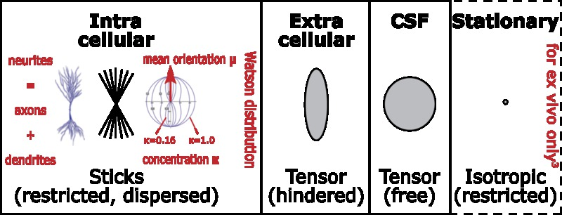Figure 3.11. The compartments of the NODDI model. The equations for the compartments (from left to right) are given in Eq 3.47, Eq 3.49 and Eq 3.50. The stationary compartment is included for modelling ex vivo tissue (Chapter 6) and uses the simple signal model of no attenuation: \(S_{irfrac}=S_0\).
NODDI has three compartments: intracellular sticks, an extracellular anisotropic tensor and an isotropic compartment to model freely diffusing protons. The signal model for the sticks is
| \[S_{ic} = S_0 \int_{S_2} f(\mathbf{n}) e^{-bd_{\parallel}(\mathbf{q} \cdot \mathbf{n})^2} d\mathbf{n}\] | 3.47 |
where \(f(\mathbf{n})d\mathbf{n}\) gives the probability for a finding a stick along direction \(\mathbf{n}\) and \(q\) is the gradient direction. Thus, diffusion along the stick is assumed unhindered with diffusivity \(d_\parallel\). The Watson distribution—the spherical equivalent of the Gaussian—is chosen for \(f(\mathbf{n})\), because it is the orientation distribution on the sphere with the least number of parameters that still captures the essence of dispersion:
| \[f(\mathbf{n}) = M \left({1 \over 2},{2 \over 3},\kappa \right) ^{-1} e^{\kappa (\mu \cdot \mathbf{n})^2}\] | 3.48 |
The parameters of interest are the mean orientation \(\mu\) and concentration around that orientation \(\kappa\). \(M\) is a confluent hypergeometric function. The extracellular compartment is modeled by Gaussian diffusion around dispersed cylinders136 using the equation
| \[S_{ec} = S_0 e^{-b \mathbf{q}^T \left( \int_{S_2} f(\mathbf{n}) D(\mathbf{n}) d\mathbf{n} \right) \mathbf{q}\] | 3.49 |
where \(D(\mathbf{n})\) is a cylindrically symmetric tensor with eigenvalues derived from the tortuosity model by Szafer et al. (1995)129. Finally, the isotropic compartment has diffusion coefficient \(d_{iso}\)
| \[S_{iso} = S_0 e^{-b d_{iso}}\] | 3.50 |
The reason why this particular model was adopted in Chapter 6 is that it is one of the models that includes the innovation of the estimating fibre dispersion (Jespersen et al. (2012)137 is another). This is a useful parameter to include for the work in this thesis, because both grey and white matter can be modelled with the Watson distribution. Furthermore, NODDI shows promise for in vivo (clinical) applications, because the hardware requirements are moderate. The validation of this particular model with histological data is therefore an important step towards implementation of biophysical models to biomedical applications.
3.2.5 Tractography
In the previous paragraphs, we have seen that the DWI method yields measurements of the ADC in all voxels in the brain, oftentimes for many directions of the diffusion gradient. From these measurements, orientation distribution functions can be derived on a voxel-by-voxel basis. Although this provides an indication of local fibre architecture, it does not tell us anything about connectivity. To estimate connectivity between distant areas in the brain, a global inference from the diffusion data is needed. Long-range axons that connect distant neurons are continuous. In the deep white matter, fibre tracts can also be thought of as continuous homogeneous entities as long as they share the same macroscopic origin and termination areas. The spatially discrete sampling in DWI breaks this continuity. To infer continuous tracts from discrete data, an algorithm has to be employed to reconstruct the continuous pathways that underlie the discrete measurements. This is the tractography technique.
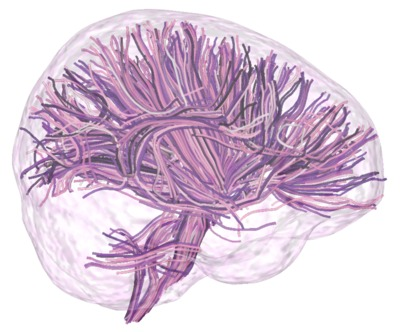Figure 3.12. Thousand streamlines through the deep white matter of the brain. The lines were created by seeding from random points in voxels with FA > 0.5 and stepped through the brain in the direction of the closest peak of the fibre orientation density function. The streamlines were stopped when a voxel with FA < 0.3 was reached. Streamlines shorter than 30 mm and longer than 120 mm were discarded.
3.2.5.1 Streamlining
In tractography, a streamline is initiated from a particular point of interest. This streamline is evolved step-by-step, in each step following a direction derived from the local diffusion model. In case these orientations are determined following a fixed criterion (e.g. peak detection), the streamlining is deterministic. If the fibre tract is correctly represented in the local model (i.e. showing a peak in the fODF in the direction of the fibre bundle) over its entire length, this approach will reconstruct the connection.
The fibre tracking technique became relevant after the development of the DTI modality. The first algorithm that lined up the local directions to reconstruct continuous fibre representations was proposed by Mori et al. (1999)138. The Fiber Assignment by Continuous Tracking (FACT) stepped from voxel boundary to voxel boundary through the vector field of DT primary eigenvectors in the white matter of the mouse brain. This basic streamlining approach is still the blueprint for all contemporary streamlining algorithms. Some variations exist, one of which is proposed in Chapter 4 of this thesis. For example, the variable step size as used in FACT is nowadays usually replaced by a fixed step length. This necessitates interpolation of the vector/tensor/fODF field. Information in a larger neighbourhood of voxels can be integrated to increase robustness. In the tensor deflection approach139, for example, not only the local orientation estimate is used, but the tracking direction is a weighted combination of the local tensor with the direction of the incoming streamline. This can help track through voxels that are associated with high uncertainty in the fibre direction estimate.
Under the assumption that the streamline progression is accurate, at the location where the fibre bundle terminates, the tracking algorithm should stop. This should occur in grey matter. Because fractional anisotropy is low in grey matter, it is convenient to use an FA-threshold as termination criterion. Furthermore, all streamlining algorithms employ a curvature termination criterion to avoid back-tracking over the identical path or to terminate the streamline under the assumption that fibre tracts do not bend sharply in the brain.
The starting point of the streamlining algorithm is one of the important variables that is controlled by the experimenter. The traditional approach is to manually define a region-of-interest (a seed region) and start a streamline from the centre of all voxels within that region. A major disadvantage of this approach is that it is associated with an ‘operator bias’, which can have a profound effect on the streamlines that are reconstructed. Incorrect seed placement can easily lead to reconstruction of tracts not intended by the operator. Naturally, this is especially relevant when attempting to reconstruct the same tract in a group of individuals. To minimize unintended tracts, waypoint and termination regions can be used. A waypoint is a region that a streamline has to visit in order to be retained. Fibres not including the waypoint in their trajectory are discarded. A termination mask has the additional constraint that one of the termination criteria has to be met within this mask for the streamline to be retained. This multi-ROI approach parallels the sculpting approach of the classical white matter fibre dissection technique (see Chapters 2 and 8) and has therefore been termed virtual dissection140.
Tractography may also be performed for the whole brain, starting streamlines from all voxels in the white and/or grey matter. This is very useful in structural connectomics3, a popular approach for investigating characteristics of the anatomical brain network141. Alternatively, after this so-called brute-force tractography, clustering algorithms can be employed to disentangle the ‘snake pit’ of streamlines into meaningful bundles142.
For the diffusion tensor model, only a single principal direction is obtained from the local diffusion profile. In voxels with high FA, fibre tracking with the streamlining approach is unambiguous. This presupposes that the single direction that is derived from the tensor is indeed representative of the direction of all fibres in the voxel. This is rarely the case. A low FA in white matter usually indicates complex fibre configurations. In locations where the tensor is an inadequate model, fibre tracking is unreliable. For instance, in voxels with an acute fibre crossing the primary eigenvector of the tensor is directed in between the actual fibre directions. Following the diffusion tensor’s primary eigenvector misdirects the streamline: it results in a false positive connection. A second scenario is that fibres cross at right angle and FA drops below the termination criterion. On entering this voxel, streamlines are terminated in the middle of the white matter. Especially when these problematic voxels are clustered (in fibre crossing areas) this can pose an obstruction such that a connection that does exist in reality cannot be reconstructed by tractography: a false negative finding.
In Section 3.2.4.2 various other models were discussed that can account for multiple fibre populations in a voxel. This can greatly reduce the false positive and false negative findings in tractography. Accurate local models include peaks in the fODF for all (major) fibre bundles. Unfortunately, although a complex fibre configuration is detected and can be described as a sum of many differently oriented fibre compartments, how these compartments are distributed within the voxel and how they might connect to each other is still ambiguous. The question then remains how to select the correct direction to follow in voxels with multiple peaks in the distribution. Occam’s razor is usually applied here: streamlines are propagated in the direction that is closest to the incoming tracking direction. The crossing/kissing conundrum is yet unresolved. Chapter 4 of this thesis demonstrates that the kissing/crossing ambiguity can be resolved in some locations by including information from an independent MR contrast.
3.2.5.2 Probabilistic tractography
In the living human brain, there is no method to determine with certainty whether a connection exists between one imaging voxel and another. As was discussed in the previous section, the outcome of the streamlining tractography experiment is too error-prone to infer connectivity on anything but the largest macroscopic scale. As an alternative, methods have been developed to determine a probabilistic measure of connectivity: the probability that a particular voxel in the brain is connected to any other in the brain given the diffusion data131,143. In the common method to estimate this probability, the streamlining experiment is repeated many times while incorporating the uncertainty associated with the orientation estimate of the local model in the procedure. The connection probability is obtained by counting the number of streamlines that terminate in or traverse the target voxel.
In probabilistic tractography, instead of selecting the peak of the fODF, a random sample is drawn from the distribution to select the tracking direction in each step of the tracking process. Hence, in every repetition of the streamlining experiment and on any point of the trajectory, a different direction is likely to be taken. The seedpoint is the stem of the probabilistic tree of connectivity that is built by repeating the streamlining procedure. The most likely pathways will be visited most often and have a high probability index.
This procedure also circumvents the kissing/crossing ambiguity as—provided that enough repetitions are performed—all directions will be followed due to the random drawing of samples from the fODF. The result is that the connectivity distribution branches in multifibre voxels, reflecting the ratio of the different peaks in the fODF in the probability values of its branches. Furthermore, it is a tremendous advantage of probabilistic tractography that it comes with a margin of error on the reconstructed fibre tract. In deterministic streamlining, errors are accumulated over the full extent of the tract without any handle on the uncertainty with which the tract is reconstructed.
3.3 Susceptibility weighted imaging
Magnetic susceptibility is a property of a material that dictates the magnetization that will be induced in the material when placed in an external magnetic field \(\mathbf{B}_0 = \mu_0 \mathbf{H}\)
| \[\mathbf{M} = \chi \mathbf{H}\] | 3.51 |
where \(\chi\) is the susceptibility. If susceptibility is positive (relative to pure water), the material is called paramagnetic and the induced magnetization \(\mathbf{M}\) is also positive. Conversely, negative susceptibility leads to negative magnetization. These materials are called diamagnetic.
Within the material the induced magnetization of the material simply adds to the external field
| \[\mathbf{B} = \mu_0 (\mathbf{H} + \mathbf{M})\] | 3.52 |
where \(\mu_0\) is the magnetic permeability of free space. Outside the material the field also changes due to the induced magnetization. The field perturbation is dependent on the size and shape of the object placed in the field.
In MRI, the field offset resulting from the magnetization of the material causes the Larmor-frequency to be shifted
| \[\omega' = \gamma (\mathbf{B}_0 + \Delta\mathbf{B})\] | 3.53 |
As frequency offsets also encode position in MRI, susceptibility differences between tissues can lead to distortions in the image. Protons that precess with \(\omega'\) will be erroneously mapped to the position that corresponds to the frequency \(\omega'\) encoded by the imaging gradient. This distortion is most pronounced at interfaces between air and tissue (e.g. the nasal cavities and the ventral aspect of the brain), because these have the largest difference in susceptibility.
There is an upside. The variation of magnetic susceptibility over the brain can also be used as a contrast mechanism in MRI. Susceptibility-induced shifts in the Larmor-frequency will manifest in the phase image \)
| \[\varphi(\mathbf{r}) = \gamma \cdot \Delta\mathbf{B}(\mathbf{r}) \cdot TE\] | 3.54 |
As we can only measure phase between \(-\pi\) and \(\pi\), the phase distribution \(\varphi(\mathbf{r})\) will have phase wraps that complicate processing of the image (the phase needs to be unwrapped). Because of this phase-wrapping, we can only evaluate phase differences between regions. In case the field perturbation is within the scale of a voxel, the susceptibility effect will also manifest in the magnitude image. The intravoxel field variation results in a range of Larmor frequencies, which in turn induces dephasing of the signal. This mechanism was discussed before in the context of the BOLD effect in functional imaging (Section 3.1.3.3). In contrast to the phase image, the magnitude image will be hypointense irrespective of the source (para- or diamagnetic) of the dephasing effect.
Acquisition of a susceptibility image is by means of a 3D gradient echo sequence (Section 3.1.3.1; Figure 3.3). It is sensitive to the \(T_{2}^*\) effect resulting from the susceptibility-induced field variations. Furthermore, a high resolution can be obtained, as flip angles can be kept low. Apart from the magnitude and phase images, there are a few particular variants of susceptibility imaging. First, a multi-echo sequence can be used to derive an \(R_{2}^*\) map. Second, susceptibility weighted imaging (SWI)144 combines the magnitude and filtered phase images to emphasize specific features in the image. It was first used for MR BOLD venography145 to visualize venous vessels. In the clinical setting, SWI is used for more purposes. It can provide detailed visualization of venous malformations. Furthermore, SWI is sensitive to microbleeds.
The recent trend is to attempt to retrieve the absolute value of magnetic susceptibility, a technique that is called quantitative susceptibility mapping (QSM). This effort has been instigated by two phenomena associated with susceptibility imaging: 1) non-local field effects and 2) the dependence of susceptibility contrast on orientation with respect to the main magnetic field. Non-local field effects are the result of the field from the induced magnetization extending beyond the boundaries of the structure. This often results in phase values that do not reflect the magnetic properties of the voxel per se, but also those of the surrounding voxels, especially for neighbouring structures with a high difference in susceptibility. The contrast that is observed when varying the orientation of the brain with respect to the main magnetic field originates from the anisotropic nature of magnetic susceptibility in bundles of axons146. The anisotropy can confound processing of susceptibility data, but can also be used to infer the orientation of fibrous tissues in the brain147. The QSM is derived from the phase map using the relation between the induced field \(\Delta \mathbf{B}\) and volume susceptibility
| \[\Delta \mathbf{B} = d \otimes \chi\] | 3.55 |
where \(d\) is a dipolar kernel. This convolution is equivalent to a simple multiplication in the Fourier domain. However, the inversion is ill posed due to division by zero at the magic angles to \(\mathbf{B}_0\). This can result in pronounced streaking artefacts. By including additional data in the inversion, e.g. multiple acquisition with different head rotations148 or the magnitude image149, the issue can be overcome.
Brain tissues display range of magnetic susceptibility values, which depend on the concentrations and susceptibilities of the para- and diamagnetic substances included in the volume. The most important substances in this respect are proteins and lipids. In the grey matter, the paramagnetic protein ferritin stores iron—which is indispensible for e.g. maintenance of the myelin sheet. The myelin itself, however, is diamagnetic. This co-localisation of myelin and iron illustrates that the dependence of the \(T_{2}^*\) characteristics can be complex. Many interesting phenomena in susceptibility imaging remain to be uncovered.
Chapter 4
Structure Tensor Informed Fibre Tractography by combining gradient echo MRI and diffusion weighted imaginga
Michiel Kleinnijenhuis , Markus Barth, Daniel C. Alexander, Anne-Marie van Cappellen van Walsum, David G. Norris
Abstract
Structural connectivity research in the human brain in vivo relies heavily on fibre tractography in diffusion-weighted MRI (DWI). The accurate mapping of white matter pathways would gain from images with a higher resolution than the typical ~2 mm isotropic DWI voxel size. Recently, high field gradient echo MRI (GE) has attracted considerable attention for its detailed anatomical contrast even within the white and grey matter. Susceptibility differences between various fibre bundles give a contrast that might provide a useful representation of white matter architecture complementary to that offered by DWI. In this paper, Structure Tensor Informed Fibre Tractography (STIFT) is proposed as a method to combine DWI and GE. A data-adaptive structure tensor is calculated from the GE image to describe the morphology of fibre bundles. The structure tensor is incorporated in a tractography algorithm to modify the DWI-based tracking direction according to the contrast in the GE image. This GE structure tensor was shown to be informative for tractography. From closely spaced seedpoints (0.5 mm) on both sides of the border of 1) the optic radiation and inferior longitudinal fasciculus 2) the cingulum and corpus callosum, STIFT fibre bundles were clearly separated in white matter and terminated in the anatomically correct areas. Reconstruction of the optic radiation with STIFT showed a larger anterior extent of Meyer’s loop compared to the standard tractography alternative. STIFT in multifibre voxels yielded a reduction in crossing-over of streamlines from the cingulum to the adjacent corpus callosum, while tracking through the fibre crossings of the centrum semiovale was unaffected. The STIFT method improves the anatomical accuracy of tractography of various fibre tracts, such as the optic radiation and cingulum. Furthermore, it has been demonstrated that STIFT can differentiate between kissing and crossing fibre configurations. Future investigations are required to establish the applicability in more white matter pathways.
Acknowledgements
This work was financially supported by Ministerie van Economische Zaken, Provincie Overijssel and Provincie Gelderland through the ViP-BrainNetworks project.
Abbreviations
| CC | corpus callosum |
| CG | cingulum |
| CS | centrum semiovale |
| CSF | cerebrospinal fluid |
| CST | corticospinal tract |
| (d)LGN | (dorsal) lateral geniculate nucleus |
| DWI | diffusion weighted imaging |
| GE | gradient echo |
| GM | grey matter |
| ILF | inferior longitudinal fasciculus |
| IFOF | inferior fronto-occipital fasciculus |
| OR | optic radiation |
| STIFT | structure tensor informed fibre tractography |
| WM | white matter |
Introduction
As a method for mapping white matter (WM) pathways in the human brain in vivo, fibre tractography138,150,151 has provided invaluable insights into the structural connections between brain regions. Fibre tracking is based on the anisotropy of water diffusion profiles measured by Diffusion Weighted Imaging (DWI113). This anisotropy arises from restriction of water diffusion by tissue microstructure, particularly the axonal membranes and myelin sheets in the white matter152.
Although fibre tracking has proven to be vital to cognitive neuroscience, with it’s typical >8 ml voxels DWI offers a rather coarse description of the microanatomical substrate that tractography attempts to reconstruct. Consequently, many voxels contain a mixture of white and grey matter, or multiple tracts and fibre orientations. How to deal with these multifibre voxels is one of the major challenges in tractography. The same complex diffusion profile can represent various fibre configurations, e.g. crossing or kissing tracts and fanning or splitting tracts153, leading to ambiguity in the reconstruction of fibre pathways. The limited spatial resolution and the associated partial volume effects largely determine the degree to which fibre tracts can be accurately resolved by tractography. The considerable benefits of small voxel sizes for resolving fibre tracking ambiguity have been demonstrated in animal154,155 and human15,156 ex vivo investigations. However, for connectivity research in the human brain in vivo sensitivity demands have hitherto made it difficult to attain voxels sizes smaller than ~2x2x2 mm. Initial reports utilizing smaller voxel sizes16,157 look promising, but have yet to be extended to whole-brain investigations acquired in a reasonable amount of time. Track density imaging158 provides a post-processing approach to increase effective resolution, but relies on the accuracy of fibre tracking in low-resolution DWI.
In recent years, it has been shown that gradient echo MRI (GE) can provide clues about white matter architecture at submillimetre resolution, albeit not with the directional information offered by DWI. The T2*-weighted GE magnitude and phase reflect variations in the distribution of para- and diamagnetic substances that cause differences in susceptibility between tissue types. This effect has mainly been utilized for MR BOLD venography where paramagnetic deoxyhemoglobin causes a large dephasing in veins as compared to the surrounding tissue145,159.
At high field strength, major fibre bundles such as the optic radiations (OR), cinguli (CG), and corpus callosum (CC) can be identified, with high contrast to surrounding fibre bundles160. The mechanisms underlying these WM susceptibility effects in GE imaging are a topic of active investigation. Several candidate mechanisms, such as bulk susceptibility effects and orientation of the fibre bundle with respect to the main magnetic field have been proposed and investigated for their relative contribution in the various tissue types (see Duyn, 2010161 for a review).
Concentrations of susceptibility inclusions (chemical elements that alter the tissue’s susceptibility) can account for a large portion of the spatial R2* variations in WM. Similar to the effect of deoxyhemoglobin in veins, paramagnetic ferritin-bound brain iron has been shown to play a major role in the GE contrast between cortical layers162 and for subcortical structures163. In white matter, however, iron content appears not to be the dominant factor163,164. Myelination of the fibre bundles has been indicated as the main source of R2* contrast in white matter at high field164. Due to the protein-induced frequency shifts myelin is lightly diamagnetic, thus differences in myelin composition, cellular architecture and myelination density between fibre bundles can give rise to R2* contrast161.
Notwithstanding the importance of concentrations of susceptibility inclusions, they are not the only determinant of R2* values. Especially in white matter, the orientation of the tissue with respect to the main magnetic field B0 modulates R2*165,166. This effect is thought to arise from the highly ordered parallel cylindrical structure of the lipid bilayer of the myelin sheets. Moreover, the anisotropic organization of the cellular structure (e.g. myelin) is reflected in tissue susceptibility167 and phase146. The R2* orientation dependence has been characterized and validated in several recent experiments comparing GE and DWI167-170, showing R2* modulations of more than 6 Hz [at 7T MK,20140424] between the parallel and perpendicular orientation to the main magnetic field167.
Considering the difficulties associated with the low resolution of DWI on the one hand and the sensitivity of the high resolution GE image to white matter architecture on the other hand, we hypothesize that fibre tracking can be improved by incorporating information obtained from the GE image in tractography algorithms. The imaging modalities should be combined in such a way as to exploit their respective advantages: high angular resolution in DWI and high spatial resolution in GE. The combination might thus allow a more accurate description of white matter anatomy than is achieved with current tractography methods.
Several tracts show R2* contrast and are therefore candidates to test our hypothesis. Each can illustrate various aspects of the tractography outcome, such as tract morphology, connectivity fingerprint and multifibre behaviour. In this initial demonstration, we seed fibres in two WM regions: the occipitotemporal and frontoparietal WM. Within the occipitotemporal WM, the optic radiation is a tract of particular interest, because 1) it is a very prominent WM structure in the GE image, 2) it has unambiguous anatomical source and target, i.e. it connects the lateral geniculate nucleus in the thalamus with the primary visual cortex (V1) in the calcarine sulcus19; and 3) it features Meyer’s loop, an area that is problematic for tractography171. Accurate tractography of Meyer’s loop has important clinical relevance for presurgical planning, because visual field defects can occur if part of this temporal loop of the OR is resected172.
In the frontoparietal WM, we focus on the cingulum, corticospinal tract and corpus callosum. On its lateral border, the cingulum is adjacent to the body of the corpus callosum. As a result, the DWI has many voxels containing two fibre populations: CG fibres running in the sagittal plane and CC fibres in the coronal plane. Due to their different R2* values169, this border between the CG and CC is also observed in the GE magnitude. The GE image might be informative to disentangle these fibre bundles in tractography. The frontoparietal WM also contains a region that is regarded as one of the most dense fibre crossings in the brain. The centrum semiovale (CS) contains fibres from the corpus callosum, corona radiata and arcuate fasciculus that weave their fibres through this region in the mediolateral, dorsoventral and rostrocaudal directions, respectively. Consequently, the medial frontoparietal WM is an area well suited to assess the potential for the combination of DWI and GE in the presence of multiple fibre populations within a voxel.
In the present work, we exploit the additional information that can be obtained from high-resolution scalar images—GE magnitude in particular—to inform DWI tractography algorithms. The specific method we put forward is Structure Tensor Informed Fibre Tractography (STIFT).
Methods
4.2.1 MR data acquisition
Images were acquired in two healthy male volunteers after they gave informed consent according to the protocols approved by the Institutional Review Boards of the two sites involved. Diffusion weighted and T1-weighted scans were performed on a 3T Siemens Magnetom Trio system (Siemens, Erlangen, Germany) using a 32-channel array head coil at the Donders Institute of the Radboud University Nijmegen. Gradient echo images were acquired on a 7T system (Siemens, Erlangen, Germany) at the Erwin L. Hahn Institute in Essen. Different main magnetic field strengths were used to ensure optimal quality of the DWI and optimal contrast within white matter using GE.
The DWI data were recorded using a twice-refocused spin echo EPI sequence (TR/TE=8300/95 ms; AF=2) with a matrix size of 110×110 and a field of view (FOV) of 220×220 mm. Sixty-four contiguous 2.0 mm slices were acquired in oblique orientation resulting in whole-brain coverage with 2.0 mm isotropic voxels. Diffusion weightings with a b-value of 1000 s/mm2 were applied in 61 directions according to the scheme proposed by173, interleaved with seven volumes without diffusion weighting (TA=9 minutes). For T1-weighted images an MPRAGE sequence (TR/TE/TI=2300/3/1100 ms; AF=2) was used. Whole-head images were obtained by acquiring 192 slices of 1.0 mm thickness with a matrix size of 256×256 and FOV of 256×256 mm (TA=6 minutes). GE images were recorded at 7T in supine headfirst position using a fully first order flow-compensated 3D FLASH sequence (TR/TE=36/23 ms; flip angle=15°; BW 120 Hz/px) with an isotropic resolution of 0.5 mm. For subject 1, GE images were acquired using an 8-ch head coil with subject-specific geometrical parameters: matrix size=448×336; FOV=224×168 mm; 208 slices; AF=2; TA=23 minutes. For subject 2, a 32-ch coil was available and the parameters were: matrix size=448×448; FOV=224×224 mm; 224 slices; AF=3; TA=16 minutes.
4.2.2 Data processing
4.2.2.1 Pre-processing
The FreeSurfer v4.0.5174,175 analysis pipeline (http://surfer.nmr.mgh. harvard.edu/fswiki/FreeSurferAnalysisPipelineOverview) was applied to the T1-weighted data sets to obtain a brain-extracted and intensity-normalized T1-weighted volume, as well as subcortical segmentations and cortical parcellations. For the GE image, brain extraction and bias field correction was performed using FSL v4.1.5176.
Because accurate alignment of WM structures between images is crucial for this method, special care was taken in this processing step. The T1 and GE image were coregistered in a two-step procedure using the normalized mutual information algorithm with 6 degrees of freedom implemented in FSL v4.1.5. In the first step, weighting volumes were used to disregard the temporal lobes where the GE image was inhomogeneous due to the slab profile (WV1). In a second step, the GE-to-T1 coregistration was fine-tuned by using a weighting volume obtained by dilating the FreeSurfer segmentation of the cortical ribbon by one voxel (WV2). Using this weighting, the images are coregistered on the grey-white matter surfaces of the cortical ribbon evident in both T1 and GE images, while masking the many structures causing large intensity variations that are present in the GE image but not in the T1 image (e.g. basal ganglia, optic radiations and large veins).
Diffusion weighted images were pre-processed with the SPM-based PATCH toolbox177. This toolbox was used to perform automated motion and cardiac artefact correction, image realignment, coregistration and unwarping to the T1 image. The unwarping of the DWI volumes was performed by means of an algorithm constrained to the phase encoding direction178 that warps the mean of the realigned non-diffusion weighted images to the T1 image (Supplementary Figure 4.S1). The purpose of the unwarping was to reduce EPI distortion in the (anterior-posterior) phase-encoding direction, thus optimizing the T1-to-DWI and, consequently, GE-to-DWI coregistration (Supplementary Figure 4.S2).
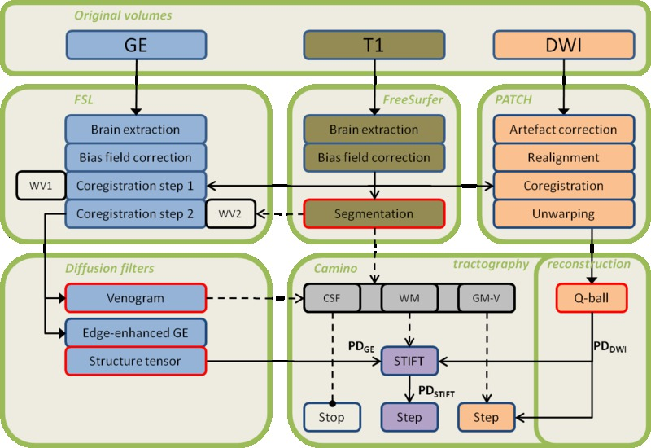{kind=link}
{kind=link}
Figure 4.1 STIFT processing pipeline. The brain is extracted from the GE image and bias field correction is performed in FSL (upper left). Similar steps are performed in the FreeSurfer pipeline for the T1-weighted image. Furthermore, a white-grey matter segmentation results from the FreeSurfer analysis (upper middle). The GE image is coregistered (but not resliced) to the intensity-normalized T1 volume masking the base of the brain where the GE showed a slab profile with a weighting volume (WV1) and then using a FreeSurfer-based weighting volume of the cortical ribbon (WV2). A venogram and edge-enhanced GE image are then calculated from the GE image (lower left). The structure tensor field is calculated from the edge-enhanced GE image. In the DWI flow chart (upper right), PATCH is used to correct artefacts, perform realignment, coregistration to the T1 volume and unwarping of EPI distortions to the T1 volume. Camino is used to reconstruct Q-ball orientation density functions and detect the peaks. For tractography (lower right), the current tracking point is interpolated in the venogram and T1-segmentation and classified as CSF, WM, GM or Vein (V). The Q-ball peak direction PDDWI and structure tensor peak direction PDGE are also interpolated from the vector fields at the current point. Tracking proceeds with one of three options, depending on the classification. Either 1) tracking is terminated (in CSF); 2) a step is taken in direction PDDWI (in GM or V); or 3) the STIFT adaptation is calculated from PDDWI and PDGE after which a step is taken in direction PDSTIFT (in WM).
4.2.2.2 Structure tensor
To directly and meaningfully incorporate the information in the scalar GE image in tractography algorithms, a structure tensor is calculated. A structure tensor describes features in the image by considering a local neighbourhood. This description allows for image analysis applications such as edge and corner detection, orientation and texture analysis and optic flow estimation179. Orientation of elements in an image, for instance, can be estimated from the local vector field of intensity gradients. The outer product of the gradient vector, which is a 3×3 structure tensor, is used to avoid cancellation effects for elements that are thinner than the neighbourhood. By integrating data in the neighbourhood of a point (smoothing) the orientation estimation is robust in the presence of noise in the image179.
Most of the white matter fibre bundles observed in the GE image have a sheet-like geometry. The features of interest for the presently proposed STIFT algorithm are the borders between fibre sheets. These take the shape of curved planes. The local orientation estimation of these planes is affected by inhomogeneities in the GE image. In particular, small veins penetrating the fibre bundles, but also image noise, are a nuisance. For a robust estimation of the local orientation of the WM border planes, a data-adaptive structure tensor was used. The neighbourhood over which the structure tensor is integrated can be designed to enhance planar edges180. For this structure tensor, smoothing occurs preferentially in the direction of fibre bundles, while limiting smoothing over the edges between fibre bundles. In the present work we used a nonlinear anisotropic diffusion filter from Koopmans et al. (2008)181(http://www.mathworks.com/matlabcentral/fileexchange/25449-image-edge-enhancing-coherence-filter-toolbox) to calculate an edge-enhanced GE image and structure tensor (see Appendix 4.A).
4.2.3 Structure Tensor Informed Fibre Tractography
4.2.3.1 STIFT algorithm
Tractography algorithms implemented in the Camino toolkit182 were adapted to incorporate the structure tensor by directly influencing the tracking direction (see Supplementary Figure 4.S3). The adapted tracking direction \(PD_{STIFT}\) is calculated as follows: the original tracking direction \(PD_{DWI}\) is rotated towards the plane orthogonal to the first eigenvector of the structure tensor \(PD_{GE}\) and proportional to its first eigenvalue \({\lambda_{PD}}_{GE}\):
| \[PD_{STIFT}=\lambda_w\widehat{P_\perp}+(1-\lambda_w)PD_{DWI}\] | 4.1 |
where
| \[P_\perp = PD_{GE} \times (PD_{DWI} \times PD_{GE})\] | 4.2 |
and
| \[\begin{cases} \lambda_w = 1, & \mbox{for } {\lambda_{PD}}_{GE} > W \\ \lambda_w = {\lambda_{PD}}_{GE} / W, & \mbox{for } {\lambda_{PD}}_{GE} \leq W \end{cases}\] | 4.3 |
\(W\) is the free parameter that determines the structure tensor weighting. In the present study, \(W\) was chosen equal to the first eigenvalue of structure tensor on the outer border of the optic radiation.
Because the structure tensor is also prominent for edges in the GE image not reflecting white matter contrasts (such as veins and the grey-white matter border), the STIFT adaptation of the tracking direction was used only in white matter voxels. The FreeSurfer segmentation results of white matter, grey matter and CSF (cerebrospinal fluid) were used as masks. Additionally, a venogram was created from the GE image using a vessel enhancing diffusion (VED) filter optimized to detect large veins183. The smaller veins were effectively smoothed by the edge-enhancing diffusion filter. The venogram was thresholded to select large veins and binarized. The venogram and the binary cortex mask were dilated using mean dilation with a 3x3x3 box kernel to include the gradient on the white-matter side of the tissue borders. In every tracking step, the current point was classified as belonging to white matter, grey matter, CSF or a vein. In white matter the STIFT method was used; in grey matter and veins the original tracking direction was used; and tracking was terminated when the point was classified as CSF.
4.2.3.2 Seeds and tractography
Two approaches were taken to investigate tracking behaviour of the STIFT method. First, seed point pairs were placed in the centres of neighbouring GE voxels within and on the border of neighbouring tracts, because it can be expected that the effect of STIFT is largest at tract borders. STIFT was evaluated by this approach for two different WM areas: 1) the occipitotemporal area, seeding in the optic radiation and inferior longitudinal fasciculus/inferior fronto-occipital fasciculus (ILF/IFOF) fibre complex; 2) the medial frontoparietal area, seeding in the cingulum and corpus callosum. Additionally, three seed point pairs were placed in the centrum semiovale. Second, seed regions were drawn lateral to the lateral geniculate nucleus (LGN) to track the fibres of the optic radiation. The (dilated) cortical parcellations of the left and right pericalcarine cortex from the FreeSurfer analysis were used as waypoints. Tracts were truncated upon first entry of the waypoint.
In Camino, Q-ball orientation density functions184,185 were reconstructed from the DWI data (spherical harmonic order 6) and peaks were extracted from the functions (density 100; search radius 0.4). To compare STIFT to the standard tractography alternative, PICo probabilistic tractography186,187 was performed with and without STIFT adaptation. A constant seed for the random number generator was used.
Results
4.3.1 STIFT adaptation with the GE structure tensor
Diffusion weighted images and gradient echo magnitude images were coregistered by a carefully designed two-step coregistration and unwarping procedure (a qualitative impression of the result is provided in Supplementary Figure 4.S1 and Figure 4.S2). A data-adaptive structure tensor was calculated from the GE image by applying an edge-enhancing diffusion filter. This filter was found to effectively remove small-scale spherical and tubular inhomogeneities (such as veins) from the GE image, while faithfully enhancing the sheet-like fibre bundles (Figure 4.2ab). The cortex and venogram masks that were used are shown in Figure 4.2d-f.
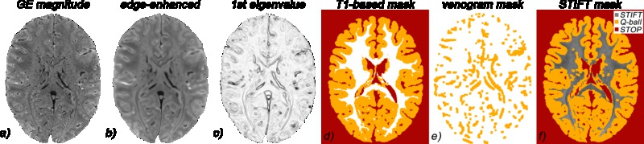Figure 4.2 Structure tensor filtering and masks. a) GE magnitude image; b) edge-enhanced GE image; c) first eigenvalue of the structure tensor; d) T1-based mask (WM-GM-CSF); e) GE-based mask (veins-slab profile); f) overlay of combined mask and edge-enhanced GE: dark grey: apply STIFT; orange: do not use STIFT; red: stop tracking.
The structure tensor describes local image features by calculating the partial spatial derivatives of the smoothed image. The first eigenvector of the structure tensor captures the main orientation, or peak direction (\(PD_{GE}\)), of borders between white matter fibre bundles in the GE image at a high resolution (Figure 4.3; green arrows). Along fibre bundles (e.g. at the outer border of the OR, shown left in Figure 4.3a) the \(PD_{GE}\) is approximately orthogonal to the Q-ball peak directions (\(PD_{DWI}\): blue arrows). Nevertheless, there are varying degrees of mismatch between \(PD_{GE}\) and \(PD_{DWI}\). This is best demonstrated by the difference between \(PD_{DWI}\) and the vectors after STIFT adaptation (\(PD_{STIFT}\): red arrows). The STIFT adaptation (Supplementary Figure 4.S3) rotated \(PD_{DWI}\) towards the edge between the fibre bundles in the GE image, making them more orthogonal to \(PD_{GE}\). The first eigenvalue (Figure 4.2c) is indicative of the contrast of the edge and determines the angle of rotation. The gain can be appreciated particularly well in Figure 4.3b, where the Q-ball vectors are interpolated to the GE resolution. The resolution of the DWI is shown to be insufficient to capture the anatomy of the curved tracts, because the Q-ball vectors all show similar orientation. The STIFT vectors are better aligned with the fibre bundles and should lead to improvements in tractography.
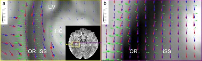Figure 4.3 STIFT adaptation. Shown are the structure tensor’s 1st eigenvector (\(PD_{GE}\): green arrows), Q-ball 1st peak direction (\(PD_{DWI}\): blue arrows) and STIFT adaptation (\(PD_{STIFT}\): red arrows) on an axial GE slice through the ventral optic radiation (Meyer’s loop). a) STIFT adaptation performed at DWI voxel coordinates (Δ=2 mm). \(PD_{GE}\) is shown in native GE resolution, but only a random subset of vectors (within the WM mask) is shown as arrows. b) STIFT adaptation performed at GE voxel coordinates (Δ=0.5 mm). \(PD_{DWI}\) vectors are linearly interpolated. OR=optic radiation; iSS=internal sagittal stratum; HC=hippocampus; LV=lateral ventricle. Note that the STIFT vectors closely follow the structure of the optic radiation, whereas interpolated Q-ball vectors are not oriented along the tract.
4.3.2 STIFT vs. standard q-ball tractography from closely spaced seed points
To investigate tracking behaviour of STIFT at the border of two fibre tracts, STIFT was compared to standard probabilistic Q-ball tractog-raphy from seed pairs in close proximity (0.5 mm) on the border of 1) the optic radiation and inferior longitudinal fasciculus/inferior fronto-occipital fasciculus; and 2) the cingulum and corpus callosum. For comparison, seed pairs were also placed within these tracts (Figure 4.4a / Figure 4.5a). The fibres from the seed pairs on the border of the tracts (Figure 4.4e / Figure 4.5e) show the most prominent difference between standard Q-ball-based and STIFT-based probabilistic tractography. Tracts are very mixed in the Q-ball results, while with STIFT the tracts from both seeds are clearly separated. Additionally, in the deep white matter the STIFT tracts stay closer to the tract border. The seed pairs placed within the tracts (Figure 4.4df / Figure 4.5df) are more similar for standard Q-ball and STIFT. STIFT results are considerably more mixed for adjacent seeds within the interior of the tracts, as compared to the seedpoint pairs on the tract border. Nevertheless, differences between Q-ball and STIFT are also seen for these pairs.
4.3.2.1 Occipitotemporal white matter
Tracking from the border of the optic radiation (Figure 4.4e) with Q-ball (left panel), most of the fibres connect the calcarine sulcus (V1) to the temporal and frontal lobes, both for seeding inside (red fibres) and outside (blue fibres) the optic radiation. STIFT (right panel) shows endpoints in a more posterior portion of V1 and reconstructs part of Meyer’s loop (white arrowhead) for the seed point placed within the OR (red fibres). The STIFT fibres tracked from the seedpoint in the ILF/IFOF (blue fibres) form a separate tract that connects extrastriate areas on the lateral aspect of the occipital lobe with temporal and frontal areas. When seeding well within the OR (Figure 4.4f; cyan/pink fibres), the STIFT tract (right panel) here includes both anterior and posterior V1 and features a sharper bend in Meyer’s loop with a larger anterior extent. More fibres extend from V1 to temporal and frontal areas in the original Q-ball tractography (left panel) as compared to STIFT. When seeding in the ILF/IFOF (Figure 4.4d; yellow/green fibres), fibres cross into the OR towards V1 for Q-ball (left panel) at the posterior end, but stay on the lateral side of the OR with STIFT (right panel). Anterior to the seed points, both Q-ball and STIFT connect to anterior temporal and superior parietal areas (not apparent in Figure 4.4).
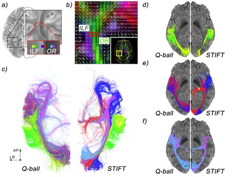Figure 4.4 Optic radiation (OR) and inferior longitudinal fasciculus/occipitofrontal (ILF) fibre tracts. a) set of three seed pairs in the ILF (yellow/green) the OR (cyan/pink) and one pair on both sides of the border of these tracts (blue/red). b) Q-ball peak directions; red circle indicates the seed location. c) fibre tracts for Q-ball and STIFT: composite image for all six seed points (ventral view). d,e,f) fibres tracts for seeds pairs in the ILF, on the border and in the OR, respectively (ventral view).
4.3.2.2 Frontoparietal white matter
The seedpoint pair at the border of cingulum and corpus callosum (Figure 4.5e; red/blue fibres) gives rise to Q-ball fibres (left panel) running anteriorly in the cingulum, but with the vast majority of fibres showing a sharp bend coursing medially in the corpus callosum towards the contralateral hemisphere. These fibres cross-over from the cingulum to corpus callosum in the multifibre voxels at the border of these tracts (Figure 4.5b). The same pattern is seen for the STIFT fibres from the seed within the cingulum (red fibres, right panel). From the corpus callosum seed (blue fibres), STIFT fibres (right panel) are tracked to the contralateral medial frontal cortex. Anteriorly, most fibres run parallel to the cingulum for a short distance in a u-fibre covering the cingulate sulcus to terminate in the ipsilateral medial frontal cortex.
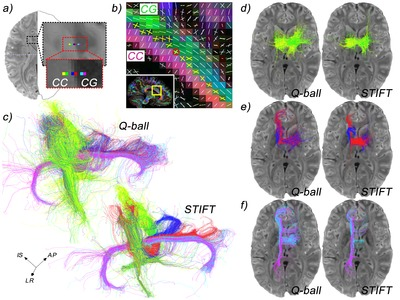{kind=link}
Figure 4.5. Cingulum (CG) and corpus callosum (CC) fibre tracts. a) set of three seed pairs in the CC (yellow/green) the CG (cyan/pink) and one pair on both sides of the border of these tracts (blue/red). b) Q-ball peak directions with multifibre voxels (yellow crosses) at the border of the CG and CC; red circle indicates the seed location. c) fibre tracts for Q-ball and STIFT: composite image for all six seed points. d,e,f) fibres tracts for seeds pairs in the CC, on the border and in the CG, respectively (dorsal view).
For the seeds placed in the interior of the cingulum bundle (cyan/pink fibres) and corpus callosum (yellow/green fibres), fibres are mixed for adjacent seeds. However, standard Q-ball and STIFT results were not the same. What is immediately apparent for the fibres tracked from the seedpoints within the cingulum in Figure 4.5f is that Q-ball (left panel) tracks a large bundle of callosal fibres, while almost no corpus callosum fibres are tracked for STIFT (right panel). A second difference is that the anterior curve of the cingulum is extended over the rostrum for STIFT, while Q-ball shows more fibres fanning out into the frontal lobe. From the seedpoints in the corpus callosum, a u-shaped section of the corpus callosum is tracked for both standard Q-ball and STIFT. Ipsilateral from the seed, the same tracts are found for both techniques, but contrala-terally Q-ball finds more tracts shooting off downward into the internal capsule and laterally towards dorsolateral prefrontal cortex.
Three seed point pairs were placed in the centrum semiovale where the corticospinal tract crosses the corpus callosum (Figure 4.6ab). Results for standard Q-ball and STIFT (Figure 4.6c-f) are similar for all seeds: most fibres follow the corona radiata and internal capsule, but some fibres also form a section of the corpus callosum. One qualitative difference is seen at the level of the internal capsule. While Q-ball fibres enter and pass through the lentiform nucleus, no STIFT fibres penetrate this nucleus. Instead, STIFT fibres typically stay contained within either the internal or external capsule.
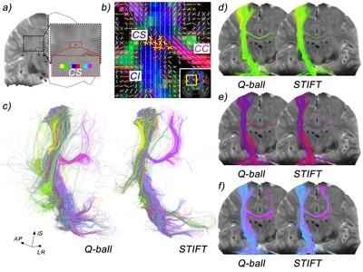Figure 4.6 Corticospinal and corpus callosum fibre tracts. a) set of three seed pairs in the centrum semiovale (CS). b) Q-ball peak directions with multifibre voxels (yellow crosses) in the centrum semiovale where internal capsule (CI) fibres cross with corpus callosum (CC) fibres; red oval indicates the seed location. c) fibre tracts for Q-ball and STIFT: composite image for all six seed points. d,e,f) fibres tracts for seeds pairs in the CS (posterior view).
4.3.3 Reconstruction of the optic radiation with STIFT and standard q-ball
The optic radiation was tracked from seed regions lateral to the lateral geniculate nuclei to examine if the use of the structure tensor would improve reconstruction of the tract. Although the connectivity maps look similar at first glance (Figure 4.7; left vs. middle column), the differences become most obvious by subtracting the Q-ball from the STIFT connectivity maps (right column). The whole-brain difference map of subject 1 (upper right panel) already shows that the voxels of the optic radiation contain more fibres for STIFT compared to Q-ball. Because the total number of initiated fibres is equal for both methods, Q-ball features more fibres in most other tracts to e.g. temporal, parietal and cerebellar regions. For subject 2, standard Q-ball tractog-raphy reconstructs a fibre bundle lateral to the OR that curves into the corpus callosum (obscuring the OR in the whole-brain difference image). However, if only fibres that connect to V1 are considered, it is clear that the tract volume of the left OR is dramatically increased for STIFT (fifth row).
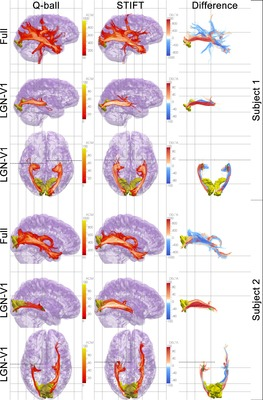Figure 4.7 (opposite) Anatomical connectivity maps. Comparison between Q-ball (left column) and STIFT (middle column). The right column shows the difference maps, where red tracts indicate more fibres for STIFT compared to Q-ball and blue tracts indicate more fibres for Q-ball vs. STIFT. Upper panels for each subject show connectivity from the left seed region (green). The middle and lower panels show the tracts from the seed regions to the pericalcarine cortex (yellow) in lateral (only left OR shown) and ventral view, respectively. LGN-V1 tracts are truncated medial and anterior to the LGN. Dotted lines indicate furthest extension of Meyer’s loop.
With the changes in tract volume the morphology of the OR is also different, which is also reflected in the anterior extent of Meyer’s loop (dotted lines). Both right and left OR of subject 1 show a larger anterior extent with STIFTb, although fewer fibres occupy the middle part of Meyer’s loop in the right hemisphere. Meyer’s loop was not found in the right hemisphere of subject 2 by either Q-ball or STIFT, whereas in the left OR the anterior extent is larger for STIFT compared to standard Q-ball.
Discussion
The results presented here demonstrate for the first time that DWI tractography can benefit from the incorporation of information from high-resolution structural images with contrast between white matter fibre bundles. The structure tensor was found to be a suitable represen-tation of the gradient echo image, because it can be directly used to adapt the tracking direction in a tractography algorithm according to the contrast in the scalar image. Structure Tensor Informed Fibre Tractography is a useful and promising addition to the available tools to investigate white matter anatomy. STIFT has a number of advantages over current tractography methods, but in this developmental stage it also faces a number of challenges concerning the scope of its applicability.
4.4.1 Anatomy of reconstructed
4.4.1.1 Occipitotemporal white matter
As the primary visual projection tract, the optic radiation (OR) is central to the occipitotemporal WM. The OR is entirely contained in the external sagittal stratum188 and forms the geniculostriate pathway from the dorsal lateral geniculate nucleus (dLGN) to primary visual cortex (V1 or striate cortex) in the calcarine sulcus19. In each hemisphere, the fibres from the contralateral lower quadrant of the visual field take a short pathway to the dorsal bank of the calcarine sulcus (the posterior bundle). The fibres that form the anterior bundle represent the contralateral upper quadrant and curve anteriorly over the roof of the ventricle to bend sharply in the temporal lobe (Meyer’s loop) towards the ventral bank of the calcarine sulcus. The central bundle contains the foveal projection. It leaves the LGN in lateral direction and is wedged between the posterior and anterior bundles in its course towards the occipital pole19,150,189.
Medial to the OR, the internal sagittal stratum contains corticofugal fibres from striate and extrastriate areas to various subcortical nuclei, including the dLGN and superior colliculus190,191 involved in visual reflexes. More medially still, the tapetum lines the lateral wall of the lateral ventricle, connecting the temporal lobes through the corpus callosum188.
Although its existence as a bundle separate from the OR has been questioned192, the inferior longitudinal fasciculus is thought to course lateral to the OR from extrastriate areas to the temporal lobe193,194. Similarly, the second association fibre bundle running lateral to the OR, the inferior fronto-occipital fasciculus (IFOF), has been disputed195. However, the IFOF has been found in tractography140 and dissection studies196,197 as a bundle running dorsal and posterior to the uncinate fasciculus in the frontal lobe and in between the optic radiation and ILF in temporo-occipital regions. Most laterally, a series of u-fibres known as the occipito-temporal projection system192 form the indirect pathway of the visual ventral stream to the anterior temporal lobe.
To illustrate the behaviour of STIFT in comparison to Q-ball, neighbour-ing seed points (Δ=0.5mm) were chosen in the OR and ILF/IFOF and on the border of these tracts. The seed pair on the border showed the most distinct differences, as could be expected from the STIFT algorithm weighing the structure tensor by edge strength. For Q-ball, tracts from both seeds in the border pair (i.e. in the OR and ILF/IFOF) were very similar, connecting the anterior part of V1 with anterior temporal and lateral frontal regions. Because cortico-cortical associa-tion tracts from primary sensory areas are absent in humans and primates72,198, the Q-ball result represents a tract that erroneously connects the anterior endpoints of the ILF/IFOF with the posterior endpoint of the OR. The STIFT results showed a different pattern, with clearly separated tracts for both seeds in the pair. Most fibres from the seed in the OR extended to the posterior part of V1, while anterior to the seed point most fibres coursed medially into the thalamus, forming part of Meyer’s loop. This tract is in accordance with the known anatomy of the OR. From the border seed in the ILF/IFOF, fibres extend to extrastriate areas on the lateral aspect of the occipital lobe. Anteriorly, fibres terminate in the anterior temporal and lateral frontal lobes. The ILF is indeed defined as the tract connecting extrastriate areas with anterior temporal areas193, whereas the IFOF extends from extrastriate to lateral frontal regions197. Therefore, STIFT finds plausible occipito-temporal and occipito-frontal pathways from the ILF/IFOF seedpoint.
Tracking from the seed pair within the OR, Q-ball shows similar V1-frontotemporal connections as were found from the seed pair on the border, but a small percentage of fibres now terminates in the thalamus, finding part of Meyer’s loop. Although this presents an improvement over the OR border seedpoint, seeding in the middle of the OR is expected to connect a larger amount of fibres to the thalamus. For STIFT, Meyer’s loop is found to have a sharper bend and more fibres as compared to the Q-ball results.
In contrast to the seed on the lateral border of the OR, fibres from the seed pair within the OR terminate in the anterior part of V1, on the ventral bank of the calcarine sulcus. Also, these fibres show a larger anterior extent in Meyer’s loop and are inferior to the tract from the OR border seed in this area. These characteristics suggest that the fibres from the seed pair within the OR form part of the anterior bundle of the optic radiation. On the other hand, the STIFT tract from the OR border seedpoint resembles the central bundle of the OR: it exits the LGN in lateral direction and terminates in the occipital pole. This is consistent with the topography of the optic radiation described by Ebeling and Reulen (1988)189, who also observed that the posterior and anterior bundles are not completely separated by the central bundle over the course of the OR. Instead, at the level of the trigone of the lateral ventricle “the macular fibres lie rather lateral in a base-out wedge between the fibres of the anterior and posterior bundle”. The OR seedpoints were indeed placed at this level in the present study. Therefore, it is likely that the OR border seedpoint was placed within the ‘wedge’ of the central bundle, while the medial seed pair within the OR was placed within the anterior bundle.
The seed pair contained within the ILF/IFOF tracks occipito-temporal and temporo-parietal connections for both Q-ball and STIFT. Some differences, however, were observed. Many fibres are tracked into V1 for Q-ball, whereas most fibres connect to extrastriate regions for STIFT. As indicated before, the ILF is thought to connect extrastriate cortex to the temporal lobe. The absence of frontal fibres for both methods suggests that the placement of this seed pair is not in the IFOF, which is in accordance with the IFOF as a very thin sheet of fibres directly lateral to the OR197. Furthermore, Q-ball shows more branches towards lateral parietal cortex, while STIFT fibres mostly terminate in anterior temporal regions. Whether the seed pair is truly placed within the ILF or in the area of u-fibres cannot be established with confidence.
Tractography from the seed regions lateral to the LGN resulted in similar overall patterns of connectivity for both techniques, indicating that the major connections going through the seed region can be found with both techniques. On the other hand, STIFT results were different from the Q-ball results in a number of important aspects.
The balance between the fibre counts in various tracts is shifted in favour of the OR when using STIFT. The OR fibres gained with STIFT were distributed over all other tracts with Q-ball. This shift in balance in favour of the OR can be regarded as a positive result, as the seed region was specifically selected to capture the OR fibre bundle. However, the interpretation of quantitative measures of tractography, such as fibre count, is not straightforward. From the anatomical perspective, fibre count in tractography is easily mistaken for (a measure of) number of axons in the tract. From the connectivity perspective, fibre counts are used as a measure for the probability of the existence of a connection. Although our results show similar connectivity patterns for both Q-ball and STIFT, the connectivity fingerprint199 differs in magnitude over its connections. Whether STIFT connection probabilities represent an improvement over traditional methods is an open question. At this proof-of-principle stage, STIFT lacks the formal model available for some other probabilistic methods131,186 to perform a proper analysis of connection probability.
In light of e.g. presurgical planning, tract volume—which was found to be underestimated by deterministic tractography171—and the exact morphology of the tracts are more informative than fibre count. Selecting the OR only (by excluding the fibres not connecting to V1) showed improvements for STIFT in both aspects. STIFT showed increased tract volume, in particular for one hemisphere where stand-ard Q-ball only reconstructed a minor part of the tract.
The anterior extent of Meyer’s loop displays a large intersubject variability, but is generally thought to cover the tip of the temporal horn of the lateral ventricle189. Although this extent was not found in our subjects, STIFT fibres coursed more anteriorly in comparison to Q-ball fibres in three of the four hemispheres investigated (in the fourth, both Q-ball and STIFT failed to find Meyer’s loop).
4.4.1.2 Frontoparietal white matter
In the frontoparietal WM, we investigated multifibre voxels in adjacent and crossing fibre bundles. The corpus callosum (CC) and cingulum (CG) are assumed to be adjacent (kissing) fibre bundles200. The nearby centrum semiovale (CS) contains crossing (interdigitating) fibres of several tracts, including the corticospinal tract (CST) and corpus callosum200.
The corpus callosum is a massive interhemispheric fibre pathway. The medial segments of the CC fibres of the frontoparietal white matter are contained in the body of the corpus callosum: the section that forms the roof of the lateral ventricles. Fibres of the body of the CC fan out into the hemispheres bending dorsally to medial frontoparietal areas, but fibres also fan out towards cortical areas on the lateral aspect of the hemisphere. On their way from midline to lateral cortex, the fibres of the body of the CC traverse several other fibre tracts. In the area known as the centrum semiovale, the CC fibres cross the fibres from the internal capsule that also radiate out over the hemispheres as the corona radiata. Additionally, association fibres (e.g. the superior longitudinal fasciculus) run through the area in anteroposterior direction19.
Dorsal to the corpus callosum, just lateral to the midline, the cinguli are encapsulated on three sides by the cingulate gyri. In the sagittal plane, cingulum fibres arch over the full anteroposterior extent of the medial corpus callosum. At the isthmus of the cingulate gyrus, the cingulum turns sharply around the splenium of the corpus callosum to course within the parahippocampal gyrus towards the limbic areas of the medial temporal lobes19. The lateral border of the cingulum verges on the dorsal corpus callosum that curls upward from the midline to medial frontoparietal cortical areas. These fibres are thought to be a good example of a kissing fibre configuration200.
Similar to the approach in the occipitotemporal WM, we placed seed point pairs on the border of the cingulum and corpus callosum, and in the interior of both tracts. Assuming that the cingulum and corpus callosum are kissing fibre tracts, the seeds in the cingulum should reconstruct the cingulum only, without fibres crossing-over into the corpus callosum and vice versa. However, due to the ambiguity of fibre configurations in multifibre voxels probabilistic algorithms often connect segments of separate tracts, thus creating false positives. False negatives, on the other hand, result from inability to traverse crossing fibre areas due to dominance of the fibre traversed200. Both were observed in our results, but to different degree for standard Q-ball and STIFT.
For Q-ball, we observed substantial cross-over for all seeds within the cingulum and for the border seed within the corpus callosum. Anterior to the border seeds, the cingulum was tracked. In the other segment most fibres crossed-over to the corpus callosum. The seeds within the interior of the cingulum correctly reconstructed the cingulate part of the cingulum, but at the coronal level of the seedpoint the typical u-shaped dorsal section of the CC was also tracked. STIFT presented a modest improvement for the border seeds, but a substantial improvement for the seeds within the interior of the cingulum. From the cingulum border seed, a number of STIFT fibres was tracked towards the posterior end of the cingulum, but a majority of fibres still followed the CC. The STIFT fibres from the corpus callosum border seed did not enter the cingulum, but ran parallel within a u-fibre in the seeding hemisphere (Q-ball results showed a mixture between anterior cingulum and u-fibres). In short, with STIFT we observe a reduced false positive rate connecting segments of the CC with the CG. The substantial callosal segment reconstructed with Q-ball tractography from the seeds in the interior of the cingulum is likely to be an artefact of tracking through partial volume CC/CG voxels. Note, however, that it cannot be excluded—and it is even likely—that some cingulum fibres enter the corpus callosum201 to form heterotopic transcallosal connections. The two-fibre configuration on the CC/CG border might therefore not be completely attributable to partial volume of the tracts, but also to a contribution of crossing fibres.
The cingulum bundle was longer for STIFT compared to Q-ball, extending over the genu of the corpus callosum. This is indeed the extent described in textbooks19. However, a reduction in fibres aggregating from and fanning out into the frontal lobe was also seen. As it is known that the cingulum is also a fibre complex that includes fibres other than from the cingulate gyrus itself (e.g. connections from prefrontal to parahippocampal regions202), the cingulum extension might represent an improvement in tractography at the cost of true positives fibres.
For comparison with the kissing fibre situation, we compared STIFT to standard Q-ball for tractography from seeds within a crossing fibre area: the centrum semiovale, where the corticospinal tract (CST) crosses the corpus callosum. As could be expected, the effect of STIFT was negligible in this area. Because the edge-enhanced GE image is relatively homogeneous in the centrum semiovale, it is not expected that STIFT provides additional guidance in this area. The anatomy of the tracts outside the region of the centrum semiovale did show some differences between standard Q-ball and STIFT. First, most Q-ball fibres entering the corpus callosum terminated at the contralateral centrum semiovale. STIFT fibres were tracked more often to contralateral medial frontoparietal cortex, following one of the anatomically likely fibre pathways. Second, the CST reconstructed with STIFT was narrower as compared to the Q-ball CST: STIFT fibres were contained in the internal capsule, but Q-ball fibres also entered the surrounding nuclei (with more fibres radiating back into the internal capsule/corona radiata). STIFT fibres did not enter the nuclei, as a results of the strong contrast between the internal capsule and, in particular, the lentiform nucleus. In the present example, STIFT can be considered an improvement in the representation of the morphology, because the seeds were placed inferior to the primary motor cortex to track the CST. The CST is composed of fibres that aggregate from the full mediolateral extent of the primary motor cortex, but that form a narrow bundle within the posterior limb of the internal capsule to descend directly into the spinal cord19. It should be acknowledged that this is a rather special case, where the subcortical nuclei are not targets for tractography (see Limitations).
4.4.2 Benefits of STIFT
4.4.2.1 Spatial resolution
The primary advantage of STIFT is the fine spatial scale at which fibre tracts can be distinguished. At the substantially higher resolution of the GE voxel (64×) compared to standard DWI voxels, much more detail of the macroanatomical architecture can be captured. This was specifically shown for the bending fibre sheet of the optic radiation (Figure 4.3b), but the principle extends to identification of smaller tracts (e.g. the anterior commissure could be easily identified in our GE images, but not in our color-coded FA images) and reduced partial volume of separate fibre tracts. In current tractography methods, diffusion vectors are available on a coarsely sampled grid that is generally interpolated to arrive at the tracking direction at a certain point. In STIFT, this spatially coarsely sampled directional information is complemented by detailed anatomical knowledge about the course of the fibre bundles. The STIFT implementation presented in the current paper penalizes tractography in the directions of edges in the image, which are assumed perpendicular to fibre tracts. The penalty is weighted by the dissimilarity between the tracts (i.e. the gradient magnitude), using it as a measure of evidence that particular GE voxels belong to the same or a different tract. This has benefits that manifest in a number of ways.
First, tracking a fibre near the tract border closely follows the course of the fibre bundle with STIFT, while current algorithms can miss bends in a tract. Therefore, anatomical accuracy of fibre bundle morphology is increased with STIFT.
Second, fibres will not easily cross over to the other tract, but stay close to the tract border. Consequently, by virtue of the considerable higher resolution of the GE image compared to the DWI, STIFT provides a much better tract separation in locations where this is appropriate.
Third, STIFT fibre bundles diverge less around tract borders as com-pared to the Q-ball counterpart. The method presented here reduces uncertainty in the fibre direction using the assumptions that fibres at tract borders course parallel to fibre sheets in GE image203 and strong T2*-contrast represents a fibre boundary. In areas where GE contrast is absent or masked, STIFT falls back on the original tracking behaviour. Hence, fibres are allowed to splay where the GE contrast decreases (e.g. near V1 in the optic radiation), while tracts are narrow and well defined around the borders.
Fourth, STIFT favours longer tracts, because fibres tend to remain within long-range fibre bundles (e.g., the anterior extension of the cingulum bundle in Figure 4.5c). This presents another advantage over the current probabilistic tractography methods. In probabilistic tractography, connection probabilities decrease with distance to the seedpoint due to propagation of uncertainty in the diffusion measurement in each step of the tracking process131,204, thereby overestimating short-range connections205,206. STIFT reduces uncertainty as a result of the combination of DWI and GE information and increases tract coherence by aligning tracking directions along the tract.
4.4.2.2 Adjacent vs. crossing tracts
A secondary advantage of STIFT is that it uses an independent source of information complementary to DWI. As was demonstrated in the present paper, this can be especially valuable in distinguishing the underlying fibre distribution in some of the multifibre voxels in the brain. In principle, the GE image can provide information to distinguish between crossing and adjacent tracts if the tracts have different susceptibility or orientation. Adjacent tracts with a difference in susceptibility that ‘kiss’ (e.g. cingulum and corpus callosum) are characterized by an intensity gradient between them, while tract crossings where fibres of different tracts interdigitate (e.g. centrum semiovale) would result in an area of average susceptibility. Therefore, in a multifibre voxel that contains kissing tracts with different susceptibility, STIFT penalizes crossing over to the other tract. This was seen in our example of the cingulum where it touches the corpus callosum. Standard Q-ball showed a crossing-over for many fibres from cingulum to corpus callosum when seeded in the cingulum. STIFT presented an improvement. Fibres seeded in the interior of the cingulum remained in the cingulum and STIFT fibres seeded in the corpus callosum did not yield any cingulum fibres. Note, however, that STIFT is not expected to be beneficial for resolving crossing tracts.
4.4.3 Limitations
Some limitations of STIFT have also to be noted. The structure tensor is not equally informative throughout the brain. First, the GE image contrast is not equal for all tracts, but is strongest for some of the major fibre bundles. Other tracts may not differ in susceptibility, or contrast-to-noise ratio may not be sufficient to detect modest susceptibility differences.
This preliminary investigation focused on STIFT employing the GE magnitude image. The R2* map obtained from multi-echo GE acquisitions is an appealing alternative, because it is less prone to artefacts and there would be no need for bias field correction207. As the phase image also shows WM heterogeneity with an even higher contrast-to-noise ratio, it is also an excellent candidate for STIFT. Moreover, a susceptibility weighted image144 calculated by using a phase mask constructed specifically to enhance WM contrasts might be optimal. However, phase images also contain non-local effects that can lead to voxel intensities that are not representative of the local tissue and thus, an incorrect structure tensor. Lately, considerable efforts have been made to reconstruct quantitative susceptibility maps (QSM) from the GE phase data148,149,208. This seems promising for obtaining more accurate, whole brain representations of the fibre bundles not affected by non-local effects. Susceptibility Tensor Imaging147 also holds some promise in the combination with DWI, but with its requirement of many head rotations it is very cumbersome to obtain in vivo. It has the advantage that the tensor-valued image is informative in the tract’s interior as well.
Furthermore, the GE white matter contrast has multiple sources: an orientation-dependent component and a susceptibility-dependent component. These sources of contrast could enhance or counteract each other. On the one hand, the orientation-dependent contrast can be used to separate tracts where neighbouring tracts have different orientation. On the other hand, a single tract that shows a sharp bend could show an intensity gradient within the tract due to the GE orientation sensitivity.
Similarly, susceptibility might not be homogeneous along a tract. The STIFT method assumes that intensity gradients in the GE magnitude image represent contrast between different fibre bundles. However, within-tract R2* variation has already been described for some of the larger fibre bundles169. Variations within a tract (e.g. in iron concentration or myelination) are likely to be much more gradual as compared to variations between two different tracts. This is certainly true for the optic radiation that appears well defined on the GE image, especially on its lateral border. Nevertheless, tract bends, crossings and susceptibility variations in the direction of the tract can manifest as a small gradient oriented along the tract. In the presence of a larger gradient between tracts this will make the structure tensor more isotropic, but will not affect its first eigenvector as long as the within-tract gradient is smaller than the between-tract gradient. At least for the tracts investigated in the present paper, we did not experience problems due to contrast along the tracts. Even though the corpus callosum clearly has lower intensity than the centrum semiovale, no negative effects were experienced in tracking the crossing fibres of the corticospinal tract and corpus callosum.
Contrasts in GE images that do not originate from susceptibility differences between white matter tracts have to be considered when using STIFT. For example, because of the GE grey-white matter contrast the structure tensor is oriented radially at grey-white matter boundaries, thus potentially preventing fibres from entering the target grey matter. Therefore, a mask was used to prevent the STIFT adaptation at the GM-WM border of the cortex. The mask covered the entire cortical GM-WM border, but did not completely cover the subcortical grey matter, including some nuclei with short T2* (i.e. substantia nigra, red nuclei, and lentiform nuclei). For the optic radiation and cingulum, this is unlikely to have influenced our results, because the tracts investigated did not terminate or cross these nuclei. However, for the internal capsule, which runs between the lentiform nucleus and thalamus, the effect of the nuclei was evident. Standard Q-ball tracked through the lentiform nucleus, while STIFT fibres coursed within the internal and external capsules and did not enter the nucleus. For connectivity analyses that include the subcortical nuclei this would be highly undesirable. Therefore, careful masking of subcortical structures is required when STIFT is used for this purpose. A second source of non-white matter contrast is the ubiquitous presence of venous vessels in the GE image. To address these, a filter was used that smoothed small veins, while fibre sheets were enhanced. Furthermore, an MR venogram was used as a vessel mask for the larger veins as a second mitigation strategy. The necessity of masking the vessels and CSF can even be questioned, because the structure tensor might in fact be beneficial in these locations as—in principle—it is undesirable to track into vessels or CSF. However, in this first demonstration of the method we chose to focus on white matter contrast, because the vessel contrast is very large compared to white matter contrasts and susceptibility effects can extend outside the veins.
A more practical issue concerns the use of two MRI systems. The T2* contrast in the GE image increases with field strength209 and white matter heterogeneity is much less at 3T compared to 7T, although the optic radiation is also detectable at 3T210. While 7T might be optimal for the GE image, it is challenging to obtain high quality DWI at this field strength. Fortunately, 7T DWI sequences suitable for in vivo brain imaging are a topic of active investigation16. Single-session STIFT is within reach, because DWI at 7T with an acceptable image quality and acquisition time should be realized in the near future.
4.4.4 Conclusions
We developed Structure Tensor Informed Fibre Tractography to as a tool to improve tracking of fibre pathways through the brain. The structure tensor of the gradient echo image informs about the course of fibre bundles at a resolution that is not yet within reach for whole-brain in vivo diffusion weighted imaging. The fibre bundles obtained with probabilistic tractography from seedpoints in the optic radiation, inferior longitudinal fasciculus and cingulum are in better agreement with known anatomy for STIFT as compared to standard Q-ball based tractography. Fibre tracts are well separated for closely spaced seed points in neighboring tracts, forming narrow bundles in locations where the GE image can provide the detailed morphology of the tract. The benefits of STIFT can be mainly attributed to the high resolution of the GE image, but it has been shown that STIFT is also able to distinguish kissing from crossing tracts within a DWI voxel. Advances in anatomical gradient echo imaging, such as quantitative susceptibility mapping and susceptibility tensor imaging, and diffusion imaging at high field strengths are expected to further broaden the scope of applicability of STIFT to more fibre tracts.
Appendix 4.A: The structure tensor
The structure was calculated by the following procedure from Kroon and Slump (2009)181(http://www.mathworks.com/matlabcentral/fileexchange/25449-image-edge-enhancing-coherence-filter-toolbox):
-
The image \(I_t\) is smoothed with Gaussian kernel \(K_\sigma\):
\[I_\sigma = K_\sigma I_t\] 4.4 -
The structure tensor \(J_t\) is calculated by the outer product of the gradients of \(I_\sigma\):
\[J_t = \nabla I_\sigma \nabla I_\sigma = \begin {pmatrix} {I^2}_{\sigma x} & I_{x y} & I_{x z} \\ I_{y x} & {I^2}_{\sigma y} & I_{y z} \\ I_{z x} & I_{z y} & {I^2}_{\sigma z} \end {pmatrix}\] 4.5 -
The tensor components are smoothed with Gaussian kernel \(K_\rho\):
\[J_\rho = K_\rho J_t\] 4.6 - \(J_\rho\) is decomposed in eigenvectors \([\mathbf{v_1},\mathbf{v_2},\mathbf{v_3}]\) and eigenvalues \([\mu_1,\mu_2,\mu_3]\);
-
To preferentially smooth along planar edges, the diffusion tensor \(D\) is constructed as \([\mathbf{v_1},\mathbf{v_2},\mathbf{v_3}]\) with eigenvalues:
\[\lambda_1 = \alpha\] 4.7 \[\lambda_2 = \alpha + (1 - \alpha)^{-C \over (\mu_2 - \mu_3)^{2m}}\] 4.8 \[\lambda_2 = \alpha + (1 - \alpha)^{-C \over (\mu_1 - \mu_3)^{2m}}\] 4.9 -
The image \(I_t\) is updated by:
\[I_{t+dt} = I_t + \partial I_t dt\] 4.10 numerically approximating the diffusion equation
\[{\partial I_t \over \partial t} = \nabla (D\nabla I_t)\] 4.11 with an explicit rotation-invariant finite difference scheme pro-posed by Weickert and Scharr (2002)211 and extended to 3D by Kroon and Slump (2009)181:
\[\nabla (D \nabla I_t) = \partial_x j_1 + \partial_y j_2 + \partial_z j_3\] 4.12 and
\[j_1 = D_{xx} (\partial_x I_t) + D_{xy} (\partial_y I_t) + D_{xz} (\partial_z I_t)\] 4.13 \[j_2 = D_{yx} (\partial_x I_t) + D_{yy} (\partial_y I_t) + D_{yz} (\partial_z I_t)\] 4.14 \[j_3 = D_{zx} (\partial_x I_t) + D_{zy} (\partial_y I_t) + D_{zz} (\partial_z I_t)\] 4.15 calculating the derivatives by convolution with a Sobel kernel with a Scharr-valued 3D stencil.
-
Steps 1-5 are iterated until \(t=T\);
-
At \(t=T\), the final structure tensor is recalculated without Gaussian smoothing:
\[J_T = \begin {pmatrix} {I^2}_{Tx} & I_{Txy} & I_{Txz} \\ I_{Tyx} & {I^2}_{Ty} & I_{Tyz} \\ I_{Tzx} & I_{Tzy} & {I^2}_{Tz} \end {pmatrix}\] 4.16 -
\(J_T\) is decomposed in eigenvectors and eigenvaluesc.
For filtering the GE magnitude images \(\sigma=1\), \(\rho=1\), \(dt=0.1 s\), \(T = 10 s\), \(C = 10^{-10}\), \(\alpha = 10^{-3}\) and \(m = 1\) were used. These values were determined experimentally to preserve edges between target fibre bundles and thus maintain the accurate localization of white matter fibre sheets, while giving a smooth structure tensor field not corrupted by small artefacts (e.g. veins) and noise in the data.
a Accepted Author Manuscript (AAM) version of the Published Journal Article (PJA) from the Elsevier journal 'NeuroImage' (http://www.sciencedirect.com/science/journal/10538119) The PJA is available from http://dx.doi.org/10.1016/j.neuroimage.2011.10.078.
Kleinnijenhuis, M., Barth, M., Alexander, D. C., Van Cappellen van Walsum, A.-M., & Norris, D. G. (2012). Structure Tensor Informed Fiber Tractography (STIFT) by combining gradient echo MRI and diffusion weighted imaging. NeuroImage, 59(4), 3941-54. doi:10.1016/j.neuroimage.2011.10.078
b The loop extending far into the left temporal lobe for standard Q-ball does not match the anatomy of the OR, but forms an aberrant pathway lateral to the lateral ventricle (i.e. tapetum) and running posterior through the ILF. Similarly, some fibres are seen in the temporal lobe for STIFT that are not part of Meyer’s loop.
c To achieve similarity in nomenclature in the main text between DWI and GE vectors, the peak directions in the DWI data are referred to as \({PD}_{DWI}\), while the peak direction of an edge in the edge-enhanced GE image—the main orientation—is referred to as \({PD}_{GE}\). The corresponding (largest) eigenvalue is called \({\lambda_{PD}}_{GE}\).
Chapter 5
Layer-specific diffusion weighted imaging in human primary visual cortex in vitroa
Michiel Kleinnijenhuis, Valerio Zerbi, Benno Küsters, Cornelis H. Slump, Markus Barth, Anne-Marie van Cappellen van Walsum
Abstract
One of the most prominent characteristics of the human neocortex is its laminated structure. The first person to observe this was Francesco Gennari in the second half the 18th century: in the middle of the depth of primary visual cortex, myelinated fibres are so abundant that he could observe them with bare eyes as a white line. Because of its saliency, the stria of Gennari has a rich history in cyto- and myeloarchitectural research as well as in magnetic resonance (MR) microscopy. In the present paper we show for the first time the layered structure of the human neocortex with ex vivo diffusion weighted imaging (DWI). To achieve the necessary spatial and angular resolution, primary visual cortex samples were scanned on an 11.7 T small-animal MR system to characterize the diffusion properties of the cortical laminae and the stria of Gennari in particular. The results demonstrated that fractional anisotro-py varied over cortical depth, showing reduced anisotropy in the stria of Gennari, the inner band of Baillarger and the deepest layer of the cortex. Orientation density functions showed multiple components in the stria of Gennari and deeper layers of the cortex. Potential applications of layer-specific diffusion imaging include characterization of clinical abnormalities, cortical mapping and (intra)cortical tractography. We conclude that future high-resolution in vivo cortical DWI investigations should take into account the layer-specificity of the diffusion properties.
Acknowledgements
The research was funded by Ministerie van Economische Zaken, Provincie Overijssel and Provincie Gelderland through the ViP-BrainNetworks project; and the Bruker BioSpec 11.7T NWO middelgroot nr. 40-00506-90-0602 and NWO BIG (VISTA) investment grants to A. Heerschap. The authors express their gratitude to Andor Veltien, David Norris and Dirk Ruiter for their advisory support in this project.
Abbreviations
| BA | Brodmann area |
| DWI | diffusion weighted imaging |
| FA | fractional anisotropy |
| FOD | fibre orientation distribution |
| GM | grey matter |
| MGE | multi-echo gradient echo |
| MR | magnetic resonance |
| MRI | magnetic resonance imaging |
| L1-L3 | diffusion tensor eigenvalues |
| V1 | primary visual cortex |
| WM | white matter |
Introduction
The human cortex is not a homogeneous structure. Francesco Gennari must have been tremendously excited when he first discovered this in 1776 as a 23-year old medical student. Under the impression that he found a third brain substance in the iced brains he was investigating, Gennari described a set of white lines running parallel to the cortical surface—two lines in some locations, only one elsewhere. Although he observed the phenomenon throughout the cortex, it was most promi-nent in the medial portion of the occipital lobe38 (Figure 5.1b). Nowadays, we know this region to be the primary visual cortex (V1). It is consistently located in the depth of the calcarine sulcus and is further characterized by an abundance of transverse myelinated fibres in cortical layer IVb: the stria of Gennari. His name was not given to the feature until a century after his discovery, because the more eminent contemporary scientist Félix Vicq d’Azyr laid claim to it. Sadly, Gennari’s talents as an anatomist seem to have dwindled after publication of his first and only book as the result of his gambling habits212.
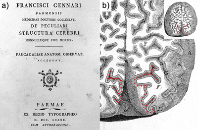Figure 5.1 Title page and plate from Franscesco Gennari’s ‘De Peculiari Structura Cerebri`. a) In 1782 Francesco Gennari published his treatise on the anatomy of the brain. b) In his work, Gennari described the ‘lineola albidior’ (white line), most distinct in the part of the brain over the tentorium, i.e. the occipital lobe. The dotted lines on the pial surface outline the regions where the stria of Gennari is visible.
With the limited knowledge of brain function in his day and age, Gennari could not have fathomed what his discovery signified. It is the anatomical basis of the two most important principles of functional specialization in the brain: 1) that the cortex is a laminated structure in which every layer serves specific functions in neuronal processing; and 2) that the cortical sheet comprises functionally specialized areas that differentiate in their laminar anatomy.
In the first half of the 19th century, the gross anatomy underlying the first principle was further investigated by Jules Baillarger (Figure 5.2a) who established that the mammalian neocortex is composed of six layers of alternating grey and white appearance39. Although his six layers differ from the six layers as they are presently defined, the ‘inner and outer bands of Baillarger’ are still features of the cortex often referred to today (Figure 5.2b). Baillarger rightly dismissed the exist-ence of Gennari’s third brain substance, but failed to appreciate that his ‘outer band’ was actually the exact same line that Gennari saw. He ascribed the whitish opaque layers of his illuminated transparent cortical sections to thickened radial fibres continuous with the white matter. Although he mentioned transverse fibres forming a grid with these radial fibres, he did not realise that these actually formed the conspicuous white bands.
Genuine breakthroughs in the correct characterization of these layers could be expected only after the development of adequate histological methods. The discovery of formalin fixation methods61 and dyes with specific affinity for neurons213 and myelin214 opened up a whole new playing field that we know as cortical architectonics. Through the pioneering work of Theodor Meynert (Figure 5.2c)—the first scientist to employ these techniques efficiently—the realization emerged that a distinct layered cytological fingerprint can be found over the depth of the cortex that varies over cortical areas—a century after Gennari saw the first clues. While Meynert recognized that most of the cortical areas have six layers, he identified eight layers in the primary visual cortex (Figure 5.2d). Many classifications of the cytological fingerprint were proposed in the following decades, as well as many cyto- and myeloarchitectonic maps. Of these, Korbinian Brodmann’s classification scheme and map215,216 have proven to be the most lasting, as they are still widely used today.
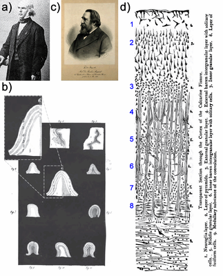Figure 5.2 Nineteeth century investigations into the layered structure of the neocortex. a) Jules Gabriel François Baillarger (1809-1890). b) Baillarger identified six layers in the cortex of alternating grey-white appearance as shown in the inset. The inner white layers (2,4; incrementing from WM to pial) are referred to as the inner and outer band of Baillarger. In primary visual cortex the outer band of Baillarger is synonymous with the stria of Gennari. c) Theodor Hermann Meynert (1833-1892), founder of the field of cortical architectonics. d) Meynert’s classification of the cortex in the calcarine sulcus into eight layers.
The primary visual cortex was listed by Brodmann as area 17 (BA17). It has had a rather special role in cortical architectonics, because of the distinct feature of the stria of Gennari: the only laminar cortical phenomenon visible with the bare eye. The transition of the cytoarchitectural fingerprint to that of the cortical area that surrounds it (BA18) is rather abrupt. Therefore, of all cortical areas, V1 is easiest to delineate anatomically. Together with its well-defined receptive field properties, this has made V1 the most investigated area of the cortex. With the advent of magnetic resonance imaging (MRI), a tool is available for measuring the cortical cyto- and myeloarchitecture in vivo: one of the main aims of neuroscience today. Various contrasts have been employed for this purpose, most providing insights on myelination of cortical areas. Therefore, the heavily myelinated stria of Gennari makes V1 also the most popular target for laminar MRI investigations54,183,217–221.
Although diffusion weighted imaging (DWI) also appears to be a promising tool for imaging the cortical architecture, it has been largely ignored in cortical investigations due to anatomical characteristics and technical limitations. Conversely, DWI has been mainly used to investigate white matter, because it has a relatively coherent organization at the scale of the DWI voxel. The accumulation of axons in fibre bundles results in marked diffusion anisotropy, where the Brownian motion of water molecules is less hindered by biological boundaries along the axonal direction in comparison to perpendicular to the axons. Nevertheless, adequate reconstruction of the underlying architecture on the basis of these measurements is far from straightforward, even in white matter, because of the ambiguous diffusion profile resulting from multiple fibre bundles included in most DWI voxels. For the grey matter, resolving neuronal architecture from a diffusion experiment is even more complex as there are additional neuronal constituents (including somata, dendrites and axons) and cell types to take into account. These have an enormous diversity in shapes and sizes, not at all as neatly bundled as the axons in white matter.
In the cortex, an additional challenge is that the typical spatial resolution of in vivo DWI is an order of magnitude larger than any single cortical layer, i.e. the depth of the cortex is typically spanned by only 1-2 voxels of ~2 mm. The diffusion profile seen in any cortical voxel will therefore be a superposition of the profiles of several, if not all, cortical layers in addition to any partial volume with white matter or cerebrospinal fluid in the subarachnoid space. Recently, high-resolution DWI investigations have been performed showing anisotropic diffusion in human neocortex in a predominantly radial orientation to the cortical surface15,16,222. For tractography—i.e. reconstructing the most likely fibre pathways underlying the diffusion measurement—this implies a major improvement. In a typical DWI dataset fibres cannot be traced to their cortical terminations, because the cortical voxels lack robust anisotropy in the diffusion profile. The radial cortical anisotropy observed at high resolution expands the range of the tractography technique to the cortex, such that streamlines can be tracked more specifically to a cortical patch by following the radial direction over the white-grey matter boundary.
With the advance to higher resolutions and the possibility to include the cortex in human in vivo DWI investigations, there is need for better characterization of the MR diffusion properties of cortical voxels. Our hypothesis is that every cortical layer has distinct diffusion properties that reflect radially and tangentially oriented neural processes. This has not been investigated previously in sufficient detail. To acquire DWI at the spatial and angular resolution required to differentiate and charac-terize cortical layers, we investigated ex vivo human cortical tissue samples on an 11.7T small-animal MR system. Primary visual cortex samples were selected, because the contribution of tangential fibres is expected to be most pronounced in the stria of Gennari.
Methods
Sample preparation
Two human brain tissue samples were obtained at autopsy. The post-mortem interval between death and sample acquisition was kept as short as possible (21 hours) to avoid tissue degradation from autolytic processes108. Blocks of tissue (~20×20×20 mm) were excised from the brain to ensure fast penetration of the fixative solution. The blocks were cut around the calcarine sulcus and included the underlying white matter. Sample A was the occipital pole. Sample B consisted of both the upper and lower bank of the sulcus. The tissue was stored (> 6 months) at 4 °C in 50 ml vials filled with 4 % buffered formaldehyde solution. Before magnetic resonance imaging, the samples were rehydrated in phosphate buffered saline (> 2 weeks) to reduce fixation-induced T2 shortening107. Twenty-four hours prior to MRI, the samples were transferred to a syringe filled with Galden D40 perfluoropolyether (Solvay Solexis, New York) at room temperature. This facilitated the expulsion of air bubbles from the sample.
MRI data acquisition
MR measurements were performed on the samples in the syringe on a 11.7 T BioSpec Avance III small animal MR system (Bruker BioSpin, Ettlingen, Germany) equipped with an actively shielded gradient set of 600 mT/m (slew rate 4570 T/m/sec). A circular polarized resonator was used for signal transmission and an actively-decoupled mouse brain coil for receiving (Bruker BioSpin). Diffusion weighted images were acquired with a spin echo protocol (TR=13.75 s; TE=26.6 ms) using segmented echo-planar readout (4 segments). Diffusion gradients were applied with a b-value of 4000 sec/mm2 (δ = 4 ms; Δ = 12.5 ms). The field-of-view covered the sample (28.8×28.8 mm) and was sampled with a 96×96 matrix leading to a 0.3×0.3 mm in-plane resolution. The slice thickness was 0.3 mm resulting in isotropic voxels. Sample A was measured with 55 slices, 61 diffusion directions equally distributed over the hemisphere173, 7 non-diffusion weighted images and 14 repetitions. Sample B was measured with 70 slices, 768 diffusion directions equally distributed over the sphere223, 64 non-diffusion weighted images and 1 repetition. Signal-to-noise ratio for the b=0 images ranged from 90 in the grey matter directly under the coil to 40 in the white matter 3 mm below the grey-white matter boundary. Multi-echo gradient-echo images (MGE) were acquired in both samples for anatomical reference of cortical architecture. They were obtained with a 3D FLASH sequence reading 5 echoes at evenly spaced intervals between TE = 3.36-38.36 msec. Imaging parameters were: TR = 40 ms; α = 30°, field-of-view 28.8×28.8×28.8 mm sampled with a 256×256×256 matrix, resulting in 0.11 mm isotropic voxels. Total acquisition time for each sample was approximately 14 hours.
MRI data analysis
The five MGE echoes were averaged and divided by the coil sensitivity profile. The same procedure was followed for the non-diffusion weighted volumes. The diffusion weighted volumes were corrected for eddy currents by affine coregistration to the first non-diffusion weighted volume (FSL FLIRT). Using the PATCH toolbox177, the corrected mean of the non-diffusion weighted volumes was coregistered and unwarped224 to the corrected mean of the MGE echoes. The affine and unwarping transformations were applied to all diffusion weighted volumes.
The pre-processed DWI volumes were analysed with MRtrix (v.0.2.9), reconstructing maps of fractional anisotropy (FA), mean diffusivity (MD), diffusion tensor eigenvalues (L1-L3) and directionally encoded colour maps (DEC). Fibre orientation distributions (FODs) were reconstructed by performing constrained spherical deconvolution124 (CSD) with a maximum harmonic order of 8. The fibre response function was estimated from the (~7000) voxels with FA>0.1 within a mask with high SNR and excluding pial boundary voxels. To obtain profiles of diffusion metrics over the cortical depth, MRtrix deterministic CSD tractography was performed seeding from MGE voxels on the pial surface. For each sample, we selected a flat patch (with diameter of 1.7 mm (=15 MGE voxels) in which cortical thickness was assumed equal) of V1 cortex that showed the stria of Gennari in the MGE image and a patch of V2 cortex that did not. A fixed initial tracking direction perpendicular to the cortex was specified and streamlines were traced (with a stepsize of 0.03 mm and FOD amplitude constraint of 0.02) until 10000 fibres were found with a length larger than 1 mm. The MGE, FA, MD, L1-L3 maps were sampled at each point along the streamlines. Additional results of an alternative approach sampling the profiles along the cortex normals can be found in the Supplementary Figures 5.S1A and 5.S1B.
Results
In all maps of MGE and diffusion tensor metrics a distinct layered structure can be observed in primary visual cortex (Figure 5.3 for sample A and Figure 5.4 for sample B). In the MGE image (Figure 5.3ag / Figure 5.4ag), the white matter has a dark patchy appearance and u-fibres can be observed as dark curves closely following the GMWM boundary. The cortex has a layered appearance, with the stria of Gennari as a band of low intensity approximately halfway the cortical depth. The stria of Gennari is not visible throughout the cortex, indicating that the samples also contain V2 cortex. The dashed lines in the MGE images show the V1/V2 transitions. Close inspection reveals a second dark cortical layer in the MGE (indicated by the arrows in Figure 5.4g).
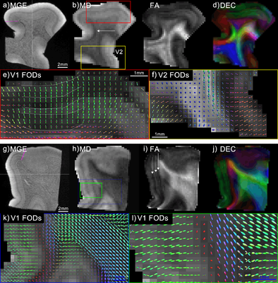Figure 5.3 Maps of diffusion metrics for Sample A. Two orthogonal slice orientations are shown in the upper and lower panel. a,g) MGE maps: dash-dotted lines indicate the WM boundary; lines in the cortex indicate V1/V2 boundaries; dashed lines spanning the figure indicate the position of the slice in the lower panel. b,h) MD maps: boxes indicate the areas of (e,f/k,l); arrows indicate where u-fibres are most prominent. c,i) FA maps; arrows highlight some cortical layers of low FA. d,j) DEC maps, interpolated to accentuate the layered structure of the cortex. e) FODs in a section of V1 cortex: dashed lines propose a putative division into separable layers. f) FODs in a section of V2 cortex. k,l) FODs in a section of V1 cortex at different magnifications. FODs are overlain on FA maps.
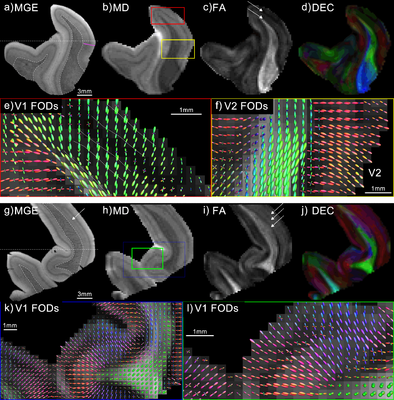Figure 5.4 Maps of diffusion metrics for Sample B. Refer to the caption of Figure 5.3 for the description of the figure.
The MD map appears very similar to the MGE. In V1, a dark band (two bands in some locations) of low diffusivity runs parallel to the cortical surface. In the white matter, the MD also resembles the MGE, with u-fibres exhibiting low diffusivity (e.g. arrow Figure 5.3b). Also the FA maps clearly reveal the layered structure of the primary visual cortex (arrows highlight some bands of low FA). Including the band of low FA on the GMWM boundary, some areas show three bands, while in other areas only two are apparent. With the exception of the low intensity band at the GMWM boundary, we do not observe this pronounced stack of layers in V2. The DEC maps illustrate the wide range of fibre directions in these small samples.
Fibre orientation distribution functions are presented for cortical areas V1 (Figure 5.3ekl / Figure 5.4ekl) and V2 (Figure 5.3f / Figure 5.4f). The main orientation in the cortex is radial to the cortical surface. The direction in the WM directly underlying the cortex is generally tangential to the cortical sheet, with the exception of gyral crowns. In Figure 5.4e intermediate main orientations can be seen at the GMWM boundary where the fibres do not bend sharply, but appear to gradually fan out into the cortex. On the GMWM boundary, multicomponent FODs are reconstructed. This layer extends over multiple voxels into the deep cortical layers, suggesting that partial volume between WM u-fibres and radial cortical fibres is not the only underlying mechanism. Going outward towards the pial surface, the typical pattern in V1 then shows a band with increased radiality, followed by a band with complex multicomponent FODs, followed by a band of increased radiality in the more superficial layers of the cortex and ending with a band of multicomponent in the voxels at the pial surface. Again, V2 does not show this pronounced layered structure in the FODs.
Diffusion tensor metrics were quantified by plotting profiles over the cortical depth (Figure 5.5 and Figure 5.6 for samples A and B) following the main fibre orientation on the basis of CSD tractography. In the Supplementary Figures 5.S1A and 5.S1B an alternative approach using profiles perpendicular to the cortical surface is presented. In V1, several maxima and minima can be seen in the FA profiles (Figure 5.5a / Figure 5.6a; middle column; red traces). From the pial surface to the stria of Gennari (dashed line on the minimum of the blue MGE trace), FA is relatively low with a minimum close to the stria of Gennari. Note that the FA minimum does not exactly coincide with the stria of Gennari, but for sample A the diffusivities L2-L3 do coincide (Figure 5.5b; lower grey traces), indicating hindrance of diffusion in the directions perpendicular to the principal diffusion direction. For sample A, two more FA minima are seen in the deeper layers of the cortex. One is close to the GMWM boundary, while the other is halfway between the GMWM boundary and the stria of Gennari. The MD profile (Figure 5.5b) shows two minima over the cortical depth for sample A: one nearly aligned to the stria of Gennari and one near the pial surface. For sample B, the FA minimum near the stria of Gennari can also be observed, but this profile does not clearly show the other minima. The results for V2 cortex (Figure 5.5 / Figure 5.6; lower panels) are highly similar between the samples, but very different from what was observed in V1. The FA profiles in V2 show a single peak over the cortical depth, skewed to the side of the pial surface. Diffusivities (Figure 5.5d / Figure 5.6d> gradually drop from pial surface to GMWM boundary, but L1 is more sustained in the central layers of the cortex, as such underlying the peak in FA.
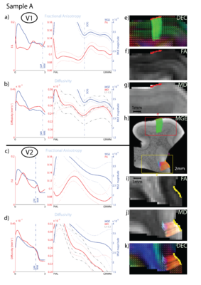Figure 5.5 Cortical profiles of diffusion metrics for Sample A. The upper panel shows profiles from V1; the lower panel shows the profiles fromV2. Panels are dived in an upper and lower row showing FA (a,c) and diffusivity (b,d) profiles, respectively (red traces). MGE profiles (blue traces) are included in every graph for reference of cortical architecture. Dotted lines indicate the standard deviation over the MGE, FA and MD profiles. In the diffusivity graphs (b,d) the grey dash-dotted traces represent the diffusion tensor eigenvalues L1-L3. The leftmost graphs are scaled identically for each panel to facilitate comparison between Sample A/B and V1/V2. The location of the GMWM boundary is indicated by the vertical dash-dotted line. The graphs in the middle column have the same scaling on the Y-axis, but various offsets, in order to visualize the relevant parts of the curves. The X-axis has been scaled such that the full axis equals the cortical depth from pial surface (left) to GMWM boundary (right). The right column shows sampling regions and the images sampled. h) fibre tracts from the pial surface of a patch V1 cortex (red seed region; green streamlines) and a patch of V2 cortex (yellow seed region; red streamlines) overlaid on the MGE image. For each region, the FA map (f,i) and MD map (g,j) are shown next to their graph, complemented with the DEC map overlaid with FODs (e,k) in the right upper and lower corner. SOG=Stria of Gennari.
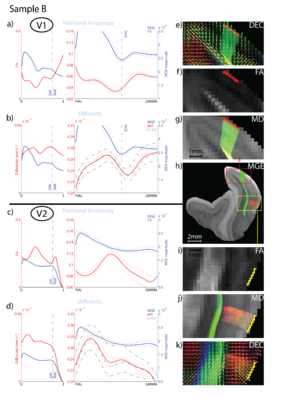Figure 5.6 Cortical profiles of diffusion metrics for Sample B. Refer to the caption of Figure 5.5 for the description of the figure.
Discussion
The properties of the layers of the human cortex have extensively been investigated since 1776, when Gennari first observed cortical layers in ex vivo specimens of primary visual cortex. Nowadays, MRI methods are available to probe cortical laminar structure, even in vivo. Our study shows laminar patterns in the adult human neocortex ex vivo with Diffusion Weighted Imaging. The detail at which the layers are differentiated and characterized has not been reported before. The diffusion characteristics observed in the various layers in our V1 samples can be well accounted for by the constituents of the cortex as they have been determined in the past centuries using histological methods.
The interpretation of grey matter diffusion data we present here calls for different considerations compared to discussing white matter diffusion imaging. Ensemble diffusion anisotropy originates from non-randomly distributed elongated neural processes, i.e. axons and dendrites. Whereas the white matter consists of relatively coherent bundles of myelinated axons, the constituents of the cortex are far more heterogeneous in their size, shape and orientation. The large volume fraction occupied by somata of neurons and glia increases the isotropic diffusion compartment compared to white matter fibre bundles. Dendrites are only partially coherently organized and their contribution to the ensemble diffusion attenuation is uncertain. Axons are inhomogeneously distributed over the cortex, i.e. according to the laminar pattern, and can be myelinated or unmyelinated. Consequently, while the inference of white matter tracts is already complex, even though they contain mostly myelinated axons in perhaps 1-3 coherent fibre populations within any voxel, it is far more difficult to model the microstructural substrate of the cortex on the basis of diffusion measurements.
Nevertheless, the layer-specific diffusion properties that we observed in our cortical samples can be well accounted for by known anatomy. The layered architecture of the cortical sheet suggest that the ensembles of neural processes underlying the anisotropic fraction of the diffusion signal will be either radial or tangential to the cortical sheet. Furthermore, the cyto- and myeloarchitecture of primary visual cortex are relatively well known. The myeloarchitecture of V1 shows radially oriented bundles of myelinated axons (radii) in the deeper layers that become thinner in layer III and disappear completely at the level of layer II. In addition, three tangential myelinated layers weave a grid with the radii78. The plexus of Exner is located in the lower part of layer I. The stria of Gennari (or outer band of Baillarger) is located in layer IVb. The inner band of Baillarger is in layer V. Layer VI also has a large amount of tangential myelinated fibres that becomes denser nearer to the underlying white matter225. From the layers rich in pyramidal cells (VI,V,IVa,III,II), apical dendrites of pyramidal neurons co-ascend with axon radii in small bundles78.
The anisotropy in the gyral white matter of our samples is high relative to the grey matter, although not as high as reported for deep white matter in vivo. A decrease in anisotropy is seen at the GM-WM border, because of the crossing of tangential u-fibres with white matter fibres penetrating the cortex radially. The low anisotropy persists in the innermost band of the cortex, as both radial and tangential fibres are present in layer VI. The second dip observed in the FA profile is likely due to the inner band of Baillarger in layer V. It must be noted that we did not observe this layer clearly throughout our samples (e.g. it is not apparent in the profile of Sample B: Figure 5.6b). Possibly, sometimes this layer appears continuous with layer VI at the resolution used here (0.3 mm isotropic). Gennari might have been with confronted with the same problem. He observed sometimes two lines, but sometimes one line in his preparations. Baillarger39 speculates that the inner band of Baillarger sometimes appears continuous with layer VI and the white matter, leaving only the stria of Gennari as an intracortical band. The stria of Gennari itself is recognizable throughout the samples in the FA, MD and MGE images. In the FA image, it is seen as a conspicuous band of low FA, presumably as a result of the crossing of tangentially oriented myelinated axons and radially oriented axons/dendrites ascending to layers IVa/III/II. We have noticed a mismatch in cortical depth between the stria of the Gennari in the MGE and the expected minimum in the FA profiles. This is likely due to a composite effect of two factors that reduce FA. First, in the stria of Gennari the tangential fibre component increases. This is indicated by a reduction in L2-L3 diffusivity. For sample A, the peaks in L2-L3 line up exactly with the stria of Gennari. Second, at the same depth the L1 component decreases as radial neurites become thinner and sparser towards the pial surface. Diffusivity also increases over the superficial layers, leading to the rising edge in L1-L3. Presumably yet another composite effect of changing cell types over layers, strong reduction of the tangential neurites and gradual reduction of the radial neurites over the superficial layers going towards the pial surface. This then results in a L1 minimum that is not aligned with the stria of Gennari. The superposition of these effects is likely to have a minimum that also does not exactly coincide with the centre of the stria of Gennari. In sample B, the same pattern is seen in the peaks of the L1-L3 diffusivity, i.e. a shift of the L1 minimum towards the pial surface compared to L2-L3. However, the peaks in L2-L3 do not line up with the stria of Gennari, but the L1-L3 peaks are shifted towards the GMWM boundary. This leads us to suspect that an additional and alternative explanation for the mismatch of the peaks is plausible here: that the registration and unwarping procedure might not have been sufficiently accurate for this area of sample B. It appears that a shift of the profiles of all diffusion metrics towards the pial surface increases the similarity between the profiles of sample A and B. Finally, within the superficial layers, a minor dip in L2-L3 is observed near the pial surface that is more pronounced for L2-L3, which could correspond to the stripe of Kaes-Bechterew formed by tangential dendritic collaterals.
Other studies before ours have looked at diffusion characteristics of the grey matter of the cortex. While the early studies in animals focused on ADC reductions in ischemic tissue, cortical anisotropy was already noted226–229. At the turn of the previous century, cortical DWI investigations were mostly aimed at characterizing cortical development230–232. The approach is well suited for this purpose as cortical anisotropy varies over gestational age and reflects microstructural events in neurodevelopment230. Therefore, it has persisted as a tool for investigating cortical development233–239. These studies are very relevant in the context of our findings, as they provide convincing empirical evidence of the suggested microstructural substrates of our adult cortical diffusion data. The radial anisotropy observed in the developing cortex is thought to stem mainly from radial glia that serve as scaffolding for the cortical neurons that migrate from the ventricular zone. Over the period of cortical maturation, these radial glia are replaced by radial and basal dendrites with elaborate arborisations forming local cortical circuits. This results in a marked reduction in anisotropic structure230. Interestingly, the FA reduction follows a similar temporal pattern as the morphological maturation of pyramidal neurons, suggesting that pyramidal dendrites and axons are the main determinant of the cortical diffusion signal236.
To the authors’ knowledge, differential diffusion properties of cortical layers were first reported in the mouse brain by Wedeen et al240. Not only did they show variations in the planar architecture of cortical layers, they also noted differences over areas of the cortex. FA differences have been shown between the deep and superficial layers of the developing mouse238 and ferret236 brain. The layer-specific nature of cortical diffusion has got little attention outside the literature on cortical development, probably because in vivo cortical diffusion studies have been outside the realm of possibilities. Recently, a subdivision in diffusion behaviour of deep and superficial layers of the adult pig brain has been shown, where the deeper layers showed multiple peaks of the FODs and the outer layers a purely radial orientation241. The fact that a more elaborate laminar pattern was seen in our human tissue samples could be due to our better resolution and/or differences between human and bovine cortex. In addition, their study showed an elegant demonstration of the layers of the hippocampus. The human hippocampus was investigated ex vivo showing a very detailed subdivision of the hippocampal layers in diffusion tensor metric maps242. In recent years, studies have convincingly reported cortical anisotropy with radially oriented diffusion tensors in humans, both ex vivo15,243 and in vivo16,222. This suggests that the dominant diffusion orientation pooled over the cortical depth is radial. This is confirmed by our data. Other work has already suggested that this radiality does not show equally in all cortical regions244. That the cortical diffusion profile varies over cortical areas is also something that our data indicate. Profiles obtained from V1 were distinctly different from those of V2. If diffusion profiles represent a superposition of the radial and tangential components of the various cortical layers, it is bound to vary over Brodmann areas and will also be reflected in the diffusion tensor. Finally, in a design much like our own, Leuze et al245 have shown layer-specific diffusion properties in the stria of Gennari. They reported radial orientation of the diffusion tensor in the cortex, but a breakdown of this radiality in the stria of Gennari. Interestingly, they noted that the orientation in the outermost cortical voxels was tangential to the cortex. We have not been able to observe this reliably in our data. Possibly, this results from the better in-plane resolution of their data, while we have used data with isotropic voxel size.
Regarding the methods used, some technical limitations have to be considered. Susceptibility artefacts can cause distortion, especially at high field. This results in geometric differences between the anatomical reference MGE image and the DWI images. A segmented EPI read-out was used and EPI images were corrected by warping them to the MGE image to minimize distortions. Nonetheless, as already mentioned some mismatch between DWI and MGE layers cannot be excluded. Our samples were immersed in a proton-free liquid during scanning, causing a sharp drop in intensity at the outer boundary of the sample, which can give rise to Gibbs ringing. In MRI, Gibbs ringing manifests itself as an oscillating intensity variation in one direction, potentially resembling cortical layers183. However, this is a rather unlikely explanation of the laminar pattern in our samples. Cortical areas not at an interface (but directly bordered by a neighbouring gyrus) also show the same layered appearance in the cortex. Furthermore, the largest dip in the profile (the stria of Gennari) is seen multiple voxels from the sample boundary, while the largest Gibbs effect would be expected in the voxels directly adjacent to the boundary. Finally, while in vivo DWI already suffers from low SNR, the short T2 and low diffusivity in ex vivo DWI makes this even worse. To achieve the resolution presented in this paper, ultra-high field strength and use of highly sensitive coils are prerequisites. Moreover, we were able to overcome the unfavourable SNR conditions by acquiring the DWI with many repetitions and gradient directions.
We have acquired the diffusion data on a single shell with a b-value of 4000 sec/mm2. For the diffusion tensor and derived metrics presented in this paper, this will have sufficed. However, for the reconstruction of the FODs a multishell acquisition is probably more optimal. We have included fibre orientation distribution images primarily to show the main diffusion direction in our samples. These main peaks of the FODs resemble the principal diffusion direction from the diffusion tensor very well and highlight the radial diffusion orientation in the cortex. At the same time, these FODs show multiple components in areas where the diffusion tensor formalism does not hold. In our samples, these are, most notably, the areas of u-fibres and the cortex with the stria of Gennari in particular. Although some of the secondary components seem to follow the expected anatomy, in general we do not believe that the FODs in the cortex represent the true underlying fibre configurations accurately. For example, in the stria of Gennari and other cortical layers, many two-component FODs are observed with one component in the radial direction and one component in a tangential direction. This is not a plausible fibre configuration for cortical tissue, where instead a radial component is expected, but the tangential component is more likely to be equally distributed over all directions in the tangential plane. This secondary component could then be either true, in the sense that the tangential fibres might actually not be homogeneously distributed, or the component could be spurious. The deconvolution technique relies on estimation of a response function to single coherent fibre configurations. Although this appears to be the case judging from the many single component FODs in our images, the low FA in our (<0.4) suggests otherwise. By using a response function estimated from low-FA voxels, we reduce the sensitivity to find multicomponent FODs. Furthermore, deconvolution can generate spurious components when estimating the response function on the basis of voxels with low FA246. To investigate whether the multicomponent FODs might be an artefact of the method used, we have performed q-ball and persistent angular structure (PAS) reconstructions of the same data. The results are provided in Supplementary Figure 5.S2. We conclude that whilst most voxels show similarity in the reconstructed directions, many areas of multicomponent reconstructions do not arrive at the same result and the amount of multicomponent voxels depends heavily on the method chosen and the filter settings used. This has been well known in the diffusion modelling community, but is extra relevant in our ex vivo data. Improved modelling approaches that are better suited to the cortex are necessary to resolve the fibre configurations in our data. Some steps in this direction have already been taken. For example, Zhang et al135 specifically model neurite orientation dispersion and density in white matter as well as grey matter. Another useful improvement in this respect was proposed by Dell’Acqua et al247 who account for the isotropic partial volume component in spherical deconvolution approaches.
We foresee some clinical applications in characterizing abnormalities that occur in diseases affecting the cortex. Recent papers have shown cortical FA and ADC changes in MS248, ALS249 and Alzheimer’s disease250. Layer-specific information on microstructure, either in vivo or ex vivo, could identify what underlies these changes. One of the more interesting potential research applications of cortical diffusion imaging is cortical architectonic mapping. Other MRI contrasts that are sensitive to myelination have already been used as in vivo histological markers251–253. Admittedly, it is much more problematic to achieve the required resolution in DWI due to its intrinsically low SNR. However, disregarding the technical difficulties for now and in expectance of further technical improvements, DWI is pre-eminently suited for in vivo investigation of cortical microstructure, and thus cyto- and myeloarchitecture. Potentially, it can quantify radial and tangential fibre components, as well as cell and axon size distributions in cortical layers or areas. Furthermore, our results might be informative for future tractography applications. The radial cortical anisotropy observed at high resolutions has already been used for tracking fibres from the white matter into the cortex120,155,254,255, which was not possible before. Layer-specific results might provide clues to determine the input-output layers of cortical area, thus define the correct layers for termination of tractography. It would mean a substantial improvement in the assessment of brain wide networks with DWI. One could even speculate on reconstructing intracortical circuits with tractography.
We conclude that for diffusion imaging in the cortex, the contributions of the various layers of the cortex should be considered. We realise that the resolution reported on in the present paper is not sufficient to resolve cortical layers that are no more than a few tens of microns thick. Nevertheless, we hope that the results presented in this paper are a mere starting point for further investigations into the diffusion characteristics of cortical layers. Provided efforts to progress in high-resolution diffusion imaging continue, one day we might even see in vivo DWI of cortical layers. As for many emerging techniques investigating the cortex, the stria of Gennari is probably the first thing we would be able to see. More than two centuries after its discovery the stria of Gennari still has its appeal in neuroscience.
a Accepted Author Manuscript (AAM) version of the Published Journal Article (PJA) from the Elsevier journal 'Cortex' (http://www.sciencedirect.com/science/journal/00109452/49/9). The PJA is available from http://dx.doi.org/10.1016/j.cortex.2012.11.015.
Kleinnijenhuis, M., Zerbi, V., Kuesters, B., Slump, C. H., Barth, M., & Van Cappellen van Walsum, A.-M. (2013). Layer-specific diffusion weighted imaging in human primary visual cortex in vitro. Cortex, 49(9), 2569-2582. doi:10.1016/j.cortex.2012.11.015
Chapter 6
Fibres in the gyrus: characteristics in ex vivo diffusion weighted imaging and histologya
Michiel Kleinnijenhuis, Hui Zhang, Dirk Wiedermann, Benno Küsters, Pieter J. Dederen, David G. Norris, Anne-Marie van Cappellen van Walsum
Sorry, awaiting publication for now...
a preprint version
Chapter 7
Laminar characteristics of gyrencephaly using high resolution diffusion tensor imaging in vivo at 7Ta
Michiel Kleinnijenhuis, Tim van Mourik, David G. Norris, Dirk J. Ruiter, Anne-Marie van Cappellen van Walsum, Markus Barth
Abstract
Gyrification of the human cerebral cortex is a necessity for our brains as the associated surface expansion allows many more neurons in comparison to other mammals. For neuroimaging, however, it forms a feature that compli-cates analysis. For example, it has long been established that cortical layers do not occupy the same depth in gyri and sulci. Recently, in vivo diffusion imaging has provided insights into the fibre architecture of the cortex, usually showing radial tensor orientations. This makes it relevant to investigate whether cortical diffusion tensor metrics depend on the gyral pattern. High-resolution (1 mm isotropic) diffusion weighted MRI of the medial wall of the hemispheres was performed at 7T. Diffusion data was resampled to surfaces in the cortex and underlying white matter, where the cortical surfaces obeyed the equivolume principle for cortical laminae over the cortical curvature. Diffusion tensor metrics were averaged over bins of curvature to obtain maps of characteristic patterns in the gyrus. Diffusivity, anisotropy and radiality varied with curvature as well as over cortical layers. Radiality was maximal in intermediate layers of the cortex next to the crown of the gyrus, not in white matter or on the crown. In the fundus, the deep cortical layers had tangential tensor orientations. In the white matter, tensor orientation changed from radial on the crown to tangen-tial under the banks and fundus. White matter anisotropy gradually increased from the crown to the fundus. The characteristics pattern in the gyrus demonstrated here is in accordance with ex vivo diffusion MR microscopy and histological studies. The results indicate the necessity of taking into account the gyral pattern when cortical diffusion data is analysed. Additionally, the data suggest a confound for tractography approaches when reaching the gyrus resulting in a possible bias towards the gyral crown. The implications for mechanisms that could drive cortical folding are discussed.
Acknowledgements
The authors acknowledge the contributions to this research of Lena Schäfer for help with data acquisition, Emil Nijhuis for advice on data analysis and Siemens (Erlangen, Germany) for providing the RESOLVE WIP package.
Abbreviations
| CSF | cerebrospinal fluid |
| DWI | diffusion weighted imaging |
| FA | fractional anisotropy |
| FOV | field of view |
| gm-x | grey matter surface no. x |
| GRE | gradient recalled echo |
| MD | mean diffusivity |
| MRI | magnetic resonance imaging |
| RI | radiality index |
| TA | acquisition time |
| TE | echo time |
| TI | inversion time |
| TR | repetition time |
| V1 | primary visual cortex |
| V2 | secondary visual cortex |
| wm-x | white matter surface no. x |
Introduction
Folding of the cerebral cortex is a distinct feature of the brain of many mammals. Through the folding, the cortical sheet is curved in convexities (gyri) and concavities (sulci). Gyrencephaly enables the cortical expansion that is particularly pronounced in humans. The mechanisms proposed for driving the folding can be divided in two categories: internal and external to the cortex. The differential expansion theory states that folding is internal to the cortex and occurs as a result of tangential expansion. A number of variants can be discerned, including differential growth of cortical layers286, differential outgrowth of neurons from the subventricular zone287, and cytoarchitectural variance over regions288. The alternative hypothesis, put forward in Van Essen (1997)289, implicates folding to be driven by the external process of axonal tension. In Van Essen’s tension-based morphogenesis model, cortical folding patterns are explained by mechanical forces in axons that pull densely connected areas (e.g. visual areas V1 and V2) together, resulting in compact wiring. Regardless of whether the curving cortex is a cause or effect, it is associated with two important neuroanatomical principles of gyrencephalic hemispheres: 1) geometric variations in the laminar pattern of the neocortex, and 2) specific anatomy of fibres in the gyrus.
As a cause or corollary of cortical curvature, the cytoarchitectonic layers of the neocortex are a stack of curved sheets of which the surface area varies in any folded cortical patch. Id est, the surface area of superficial layer I is larger than for deep layer VI on the crown of a gyrus, while it is smaller in the fundus of a sulcus. If homogeneity of functional anatomy, e.g. the distribution of minicolumns, is assumed over the cortical sheet (but within a certain cytoarchitectonic domain) it is expected that the number of neurons and associated neuropil—and hence the volume—is also constant over curvature for any particular layer. This equivolume principle implies that the thickness of the layers varies with curvature. In the context of the cortex, this was first proposed by Bok (1929)290 and recently revived for sampling cortical layers in modern MRI methods by Waehnert et al. (2013)277.
The connectivity perspective on cortical folding predicts the emergence of specific configurations of fibres around the cortex. This demands tools suitable for investigating how the fibre architecture relates to the cortical folds. Whole-brain investigation of fibres is arguably best performed with diffusion MRI. The limited resolution of the diffusion MRI technique has hitherto prohibited a thorough investigation of these fibres in the living human brain. Recently, improved methods have opened the opportunity to acquire high quality diffusion images at a resolution adequate for imaging fibres in and around the gyri of the cerebral hemispheres16,157,263,291. The fibres in the cerebral cortex can now be investigated in vivo. Regional variation has been shown in the orientation of the principal eigenvector of the cortical diffusion tensor in primary sensory vs. motor cortices244. In that study, it was also noted that the precentral and postcentral gyral crowns are characterized by tensors radial to the cortical surface at the grey-white matter boundary, while the banks show a more tangential orientation. Similar patterns are evident in ex vivo MRI and histology of fibres in the gyrus (Chapter 6).
In the present study, we investigate diffusion tensor metrics in and under the cortical sheet in relation to the cortical lamination and folding pattern. We use high-resolution in vivo diffusion MRI acquired at 7T to image the fibres of the cortex forming the medial wall of the hemispheres. Laminar analysis of the cortex and the underlying white matter is performed, observing the neuroanatomical principles of interaction between cortical lamination and folding by using an equivolume sampling method.
Methods
7.2.1 MR acquisition
MRI data was acquired from five healthy participants (3 male, 2 female) on a 7T MR system equipped with 70 mT/m gradients using 32-channel head coil (Siemens, Erlangen, Germany). The protocol included MP2RAGE and diffusion weighted imaging (DWI; 40 min). The MP2RAGE was acquired in sagittal slices at 0.75 mm isotropic resolution with scan parameters TR=5000 ms; TE=2 ms; TI1=900 ms; TI2=3200 ms; FOV=225×240 mm; matrix=300×320; 224 slices with 0.75 mm slice thickness; TA=13 min.
Diffusion images were acquired in sagittal orientation at 1 mm isotropic resolution in a slab centred on the interhemispheric fissure, thus covering the medial extent of each hemisphere. Because of specific absorption rate (SAR) constraints the number of slices varied between 32 and 42 for different subjects. Images were acquired with sixty-one diffusion gradient directions (b-value=1000 s⋅mm2) equally distributed over the sphere interleaved with seven non-diffusion-weighted images. For DWI, the RESOLVE sequence292 was used with parameters TR=5800 ms ; TE=56 ms; 4 read-out segments; FOV 212×212 mm; matrix=212×212; slice thickness=1 mm; TA≈40-45 min (depending on reacquisition of artefact-affected segments).
7.2.2 Data analysis
To analyse the diffusion data in the cortical coordinate space, the boundaries of the cortex were reconstructed. FreeSurfer v5.1174,175 was used to extract a mesh of the pial and white matter surface of the calculated T1-weighted image from the MP2RAGE scan. To use the full resolution of the MP2RAGE, a non-standard FreeSurfer pipeline was used where the data are not confined to 1 mm isotropic voxel size. Extensive manual editing of the brainmask and white matter segmenta-tions was required to obtain accurate surface reconstructions, owing to the noise enhancement outside the brain and the bright arteries on the pial surface in the MP2RAGE’s calculated T1-weighted image.
The diffusion volumes were realigned and corrected for non-linear distortion in the phase-encode direction using the Donders Diffusion toolbox (v2.9; running under Matlab 7.14 and SPM8). The non-diffusion weighted images were realigned (rigid body; normalized mutual information cost function) and averaged. This non-diffusion weighted average volume was coregistered (affine; normalized mutual information) to the T1 volume (brainmask) from the FreeSurfer reconstruction after which the unwarping procedure224 refined the match to the T1. The diffusion-weighted images were realigned (affine; normalized mutual information) to the average non-diffusion-weighted image. All DWI volumes were resampled by applying the concatenated affine and unwarping parameters.
To correct residual misalignment of the FreeSurfer surface meshes and the cortical boundaries in the DWI, a boundary registration was performed. The average of all diffusion-weighted images was used as a target volume. The approach is based on the algorithm by Greve and Fischl (2009)271. The registration algorithm minimizes a cost function that reflects the integral of the gradient calculated over 1/3 of the cortical depth (inwards and outwards) along the vector normal to the white matter surface.
The diffusion-weighted images were resampled in cortical coordinate space. Thirteen surfaces were used sampling along the normal to the cortex from the pial surface across the grey-white boundary one cortical thickness into the white matter. In the white matter, six equidistant surfaces were used (excluding the white matter surface). In the cortex, five surfaces (additional to the white and pial surfaces) were calculated between the white and pial surface using equivolume sampling. This sampling method observes the anatomical principle that the volume ratio between the cortical layers is preserved over the gyral and sulcal pattern290. It has previously been implemented for level set analysis of MR images277. In our approach, the sampling depth \(r\) is directly calculated from the cortical curvature (defined as the inverse of the radius \(R\) of the inscribed sphere) and thickness \(T\) at each vertex for each intermediate layer from the white matter surface for equivolume function \(r(f)\). Here \(f\) indicates the volume fraction, being zero at the white matter surface and one at the pial surface (\({0}\leq{f}\leq{1}\))
| \[r(f) = \sqrt{((R+T)^3-R^3)f+R^3}\] | 7.1 |
The derivation is given in Appendix 7.A. The cortical thickness and curvature (average between white and pial curvature) were obtained from the FreeSurfer reconstruction.
Following McNab et al. (2013)244, the sampled surfaces are referred to as surfaces, not layers. This is to avoid confusion with histological layers. While the equivolume approach is in principle able to sample the histological layers by choosing the appropriate equivolume function, the present work uses a linear equivolume function with six steps for sampling grey matter surfaces. Surfaces are counted from the grey-white matter boundary, thus from pial to the deepest white matter surface the surfaces are referred to as: [pial, gm-5, gm-4, gm-3, gm-2, gm-1, gm-wm, wm-1, wm-2, wm-3, wm-4, wm-5, wm-6].
The diffusion tensor, its eigenvalues and eigenvectors and its derived metrics (mean diffusivity MD, fractional anisotropy FA) were calculated for each vertex with the Camino Diffusion MRI toolkit182 v1011. Additionally, a radiality index was calculated to quantify tensor orientation with respect to the cortical coordinate frame244 by taking the absolute value of the dot product between the cortex normal \(\widehat{v}_N\) and the primary eigenvector of the diffusion tensor \(\widehat{e}_1\): \[radiality=\lvert \widehat{v}_N \cdot \widehat{e}_1\rvert\] To assess the variation of the computed measures with the cortical curvature, the vertices were stratified in ten bins spanning the 10th, 20th, …, 100th percentiles of the cortical curvature concatenated over both hemispheres of all subjects. Measures were averaged over these bins and visualized on a model of a gyrus. Also, mean and standard deviations over subjects were computed and the mean was plotted on the same model gyrus.
Using FreeSurfer, average spatial maps were computed over subjects by first transforming the vertices of each subject to the ‘fsaverage’ subject. For the diffusion measures, only vertices for which data was available for all subjects were included. The subject-specific and average spatial maps were visualized in FreeView.
Results
Diffusion tensor metrics exhibited a dependence on cortical lamination as well as curvature. This is visualized in (Figure 7.1 showing a model gyrus from crown to fundus including surfaces in the white and grey matter on which diffusion tensor metrics are projected. The mean diffusivity (Figure 7.1a) was high for the most superficial surface (that has partial volume with CSF) and declined towards the white matter.
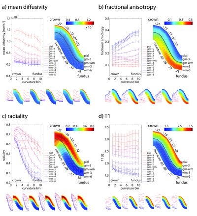Figure 7.1. Model gyrus for the tensor metrics: a) mean diffusivity, b) fractional anisotropy, c) radiality; and d) the T1 map. The graphs show the values over the ten cortical curvature bins for each surface (traces red to blue for pial surface to the depth of the white matter). Error bars indicate standard deviation over subjects. The model gyrus represents the laminar and curvature dependence in colour-coded patches. The crown is on top, and the fundus on the bottom. The solid line in the middle represents the grey-white matter boundary; the grey dashed lines indicate the remaining surfaces. Note that the cortical surfaces are not equidistant. Numbers around the model show curvature values for the curvature bins (bin 1 and 10 go to -∞ and ∞, respectively) The lower rows in each panel show results (traces and patches) for the five individual subjects (scaling is identical to the average).
For the superficial grey matter surfaces, MD decreases from the crown to the fundus with a plateau for the intermediate curvature bins (i.e. the banks). MD is lower in the fundus compared to the crown for any given surface; a feature that is most pronounced for the most superficial grey matter surfaces (gm-4, gm-5, pial).
The fractional anisotropy (Figure 7.1b) differs between grey and white matter, but also shows variation with cortical curvature. In the white matter, FA is highest under the fundus tapering off towards the crown. The curvature dependence is reversed in the middle cortical surfaces (gm-2, gm-3, gm-4), where FA is relatively high on the crown, but low in the fundus. The top two grey matter surfaces have a consistently low anisotropy over the gyral/sulcul pattern, while the anisotropy at the grey-white matter boundary is intermediate between white and grey and shows a small linear increase towards the fundus.
The radiality reflects the orientation of the tensor with respect to the cortical sheet (Figure 7.1c). It features a marked gyral/sulcal pattern for grey as well as white matter and a laminar pattern in the cortex. Radiality is maximal in the second curvature bin near (but not on) the crown in the second grey matter surface (gm-2). Towards the fundus, radiality decreases for all surfaces within the cortex. The decrease is gradual for the surfaces near the pial surface (gm-4, gm-5) and sharp for the surfaces near the gm-wm boundary. The radiality on the pial surface is intermediate (or almost random) for all curvatures. On the grey-white matter boundary (gm-wm), the tensor orientation is similar to that in the WM. Under the fundus, tensors are predominantly oriented tangential to the cortical sheet. Moving towards the crown through the white matter, there is a steep, but gradual increase in radiality from the bank of the sulcus to the crown. The radiality of the tensors under the crown is lower as compared to the radiality of the cortical tensors in the crown.
The T1 map was also projected on the model gyrus (Figure 7.1d). It shows a general similarity to the MD. The T1 map also reproduces particular features of the FA image, such as a peak in the intermediate curvature bins. Under the banks, FA shows a minimum and T1 shows a maximum for the deep white matter surfaces (wm-4, wm-5, wm-6).
Additionally, both FA and T1 show intermediate values at the gm-wm boundary that are rather stable over the cortical curvature.
The spatial maps of the cortical tensor metrics at the intermediate surface (gm-3) of the hemispheres’ medial walls are shown in Figure 7.2. Alongside, the gyral/sulcal pattern and the T1 map are incorporated. The maps show curvature-dependent variations for all measures, particularly for radiality. The radiality (fourth column) approaches its maximum value (i.e. 1) for a substantial area of the cortex (red), except the fundi (green). Tensors in the callosal sulcus are consistently tangential (blue ring around corpus callosum). The FA and T1 maps show hotspots in the posterior cingulate gyrus and isthmus of the cingulate gyrus (black arrows; third column, bottom row). The FA and T1 maps are also highly similar for surfaces sampled in the white matter (Supplementary Figure 7.S1-5 for wm-6, wm-3, gm-wm, gm-3 and pial). In the T1 map, a minimum is seen for the primary areas of the paracentral lobule (black asterisk in bottom row).
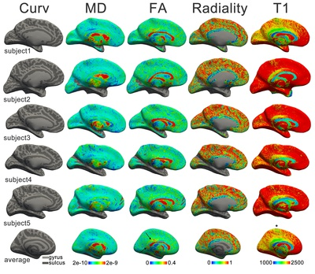Figure 7.2. Spatial maps of the medial wall of the left hemisphere for grey matter surface gm-3 (surface at 50% cortical volume). Rows show different subjects and the average over subjects projected onto FreeSurfer’s fsaverage. Columns from left to right: the gyral/sulcal pattern (Curv), the mean diffusivity (MD in 106 mm2s-1), the fractional anisotropy (FA), the radiality, and the T1 map (in ms). The equivalent images for surfaces [wm-6, wm-3, gm-wm, gm-3, pial] can be found online as Supplementary Figure 7.S1-5 (i.e. it also includes a high-resolution version of the present figure for completeness).
The laminar variation of the spatial maps is shown in Figure 7.3. Mean diffusivity is increased over the entire cortical sheet for the pial surface (first row) compared to the deeper grey and white matter surfaces. Fractional anisotropy is low for the pial surface and radiality appears random. In the cortex (second row), FA increases independent of the gyral/sulcal pattern. The radiality shows distinct curvature dependence here, where fibres are predominantly radial on the crown and banks (red, fourth column, second row), but more tangential in the fundi. In the white matter, the radiality on the banks reverses to tangential (blue, fourth column, fourth and fifth row). While the FA is fairly homogeneous at the grey-white matter boundary, the FA map shows pronounced minima under the crowns sampling into the white matter (green, third column, fourth and fifth row).
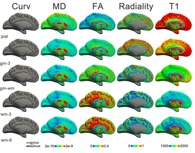Figure 7.3. Spatial maps of the medial wall of the left hemisphere for subject1 for surfaces [pial, gm-3, gm-wm, wm-3, wm-6] in the different rows. Columns from left to right: the gyral sulcal pattern (Curv), the mean diffusivity (MD in 106 mm2s-1), the fractional anisotropy (FA), the radiality, and the T1 map (in ms). The maps of other subjects available as Supplementary Figure 7.S6-10 and the average as Supplementary Figure 7.S11.
Discussion
The fibre anatomy in and around the neocortex is highly dependent on the cortical curvature. This has been acknowledged by early investigators such as Theodor Meynert, who was the first to cytoarchitecturally classify the cortical layers and describe the u-shaped short range association fibres that line the folds of the cortical sheet using post-mortem histology34. In the present study, we have shown that the curvature-dependence of these fibres can be investigated with in vivo MRI methodology. We have observed variations in radiality and anisotropy between gyral crowns and sulcal fundi as well as layer-specific effects on these measures.
The radiality and anisotropy variations with curvature are in accordance with previous ex vivo MR microscopy and histological investigations. The laminar profile of the orientation of diffusion tensors (and other diffusion models) has been investigated in detail for the primary visual cortex (see Chapters 5 and 6 and Leuze et al., 2012267) showing pronounced radiality above and below the granular layer. Furthermore, these investigations show the least tangential components in the fibre orientation distributions over the gyral crown, which was reflected in the maximum for radiality in the gyral crown in vivo.
Surprisingly, the peak radiality did not occur in the white matter under the crown, but in the grey matter of the cortex. It appears that, next to fibres that project into the crown radially, there might be a second fibre component under the crown that reduces tensor radiality. The first possibility is that this second component is formed by u-fibres. Putatively, these fibres course tangential to the cortical sheet over the length of a gyrus, whereas sulcal u-fibres often course in a direction perpendicular to a gyrus. Both types are shown in Figure 7.4a that shows fibre orientation distributions from ex vivo diffusion MR microscopy and histology. The low FA observed in the white matter under the crown (compared to the FA of the u-fibres under the fundus) is in accordance with this interpretation. The reduced average radiality under the crown could also be a result of the cingulum coursing tangentially through the cingulate gyrus, which constitutes a large area of the cortex investigated in the present study.
The radiality at the pial surface was intermediate and relatively stable over the curvature pattern. This suggests isotropic diffusion with an almost random orientation of the tensor. This is likely due to partial volume with CSF. An alternative explanation might be that tangential267 as well as radial fibre components are present in upper layers of the cortex.
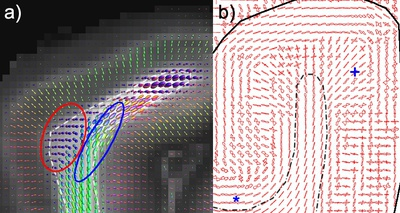Figure 7.4. MR and light microscopy of fibres in the gyrus. a) fibre orientation distribution functions derived from ex vivo MR diffusion microscopy of the primary visual cortex. U-fibres in the concavity of the cortical fold are in the in-plane direction over the gyrus (right ellipse), while u-fibres in the convexity are mostly directed along the length of the gyrus. The approximate grey-white matter boundary is drawn as a dashed line. Radial fibres are found throughout the infragranular layers of the cortex. Adapted from Kleinnijenhuis et al., 2013295; b) histological fibre orientation distribution from the primary visual cortex. Asterisk (*) indicates dominant tangential orientation of the infragranular layers in the fundus of the sulcus. Plus (+) shows the region of maximal radiality (note: away from the gyral crown). Adapted from Figure 6.6.
The infragranular layers of the fundus showed tensors oriented tangential to the cortical sheet. Tangential fibre orientation distributions in the infragranular fundus can also be observed in Figure 7.4, for both ex vivo MR microscopy and histology (see also Chapter 6 and Budde & Annese (2013)272. The cortical fibres run in parallel with the u-fibre bundle, but it is unclear from these data where the fibres project. First, the fibres could end in the fundus, which has the implication that—unlike on the crown—the cortical projection has a preferential tangential approach. This might seem counterintuitive for fibres projecting from the deep white matter. However, it is not unlikely that local corticocortical projections dominate the radially oriented deep white matter fibres entering the cortex. Second, the tangential fibres of the lower layers of the fundus could be u-fibres that mix with the fibres of the lower layer of the cortex. This distinct mixing in the fundus might be a consequence of tension building in the fibres during the developmental stage in which cortical folding occurs. In that case, it is likely that the tension results from the sulcus deepening over time, stretching the u-fibre bundles over fundi, potentially also increasing the axon packing density and therefore leading to the high FA observed in these u-fibre bundles. Tension in the white matter under the fundus is predicted by the finite element model for differential cortical expansion of the form presented by Xu et al. (2010)294. The alternative axonal-tension hypothesis289 predicts the u-fibres over the fundus to be ‘weak’ connections, while those connecting opposing banks are predicted to be ‘strong’. Our ex vivo MR microscopy and histological data do not indicate any strong projection connecting opposing banks of a gyrus, as was also pointed out in Ronan (2013)288. If we may abuse FA as measure of the strength of a projection, the stronger projection surely seems to be over the fundus, as seen in in vivo and ex vivo MRI. However, it cannot be precluded that the primary mechanism for folding is axonal tension. It should be kept in mind that the density of a projection in development would be decisive for the folding behaviour, not that observed in adulthood. Furthermore, the projection density over the fundus may only appear to be denser than between opposing banks, simply for the reason that fibres between the banks are likely to be distributed over the gyrus, while fibres destined for the neighbouring bank all aggre-gate into the u-fibre having a much smaller cross-sectional area.
The hypothesis that the crowns of the gyri are the primary axon termination areas—as has been inferred from tractography296—is easily explained by the canonical gyral fibre layout demonstrated in the present study. Because the FA is high and fibres are tangential under the fundus, it is less likely for tractography to reach a stopping criterion. Rather, streamlines approaching the fundus would join the u-fibre and continue to the gyral crown. This presents a confound for the axonal pushing theory296,297 of cortical folding that has been based on the tractography results. Moreover, it implies a serious confound for tractography in general.
FA and T1 show curvature-dependent variation over cortical depth. This is likely to be an effect of the volume preserving principle, i.e. the laminae characterized by low FA/high T1 occupy a larger fraction of the cortical thickness in the fundus than on the crown. The equivolume-sampled values for the different surfaces, however, are relatively stable over the gyral-sulcal pattern. Contrary to what was found by other investigators298, and assuming equivolume-sampling is anatomically correct, T1 does not appear to vary with cortical curvature in our data. FA does show a slight residual variation for the intermediate cortical layers, indicating FA is lower in the fundus as compared to the crown. With regard to the underlying anatomy, the radiality provides a clue: it appears that the low FA values in the deep grey matter surfaces (gm-2, gm-3) of the fundus overlap with a change from radial to tangential fibre configurations, i.e. a region where both configurations occur equally.
The maximum in the T1 and minimum in FA values observed under the banks for the deeper two layers of the white matter might be artefactual. It is possible that in gyri where the gyral white matter is thinner than the grey matter, the deep white matter surfaces sampled into the grey matter of the opposite bank.
he in vivo diffusion data was limited to 1 mm isotropic voxels. Although this is already a tremendous improvement over the typical 2 mm isotropic resolution, it may still be insufficient to sample the layers of the cortex. Because the voxel matrix is oriented arbitrarily with respect to the orientation of the folded cortical sheet, however, the cortical layers overlap with the voxel centres equally often and averaging over all profiles in the curvature bins results in smooth cortical profiles (see Koopmans et al. (2011)299 for a thorough discussion of the effective resolution of cortical sampling). The laminar results should nevertheless be interpreted with care, heeding the possibility that some results could be due to partial volume with either cerebrospinal fluid in the supragranular layers, or with the white matter in the infragranular layers. The laminar variation in the mean diffusivity, for example, is likely to be due to partial volume with CSF (that has a very high diffusivity). However, a small difference might exist in the MD for supragranular vs. infragranular layers, as has previously been found ex vivo (Chapter 6).
Because of constraints in power deposition, the diffusion acquisition was limited to the medial wall of the hemisphere. Therefore, bias might exist in the results towards fibre configurations dominant in these areas. In general, this raises the question about variability in cortical fibre configurations over regions, as has been demonstrated for primary motor vs. primary sensory cortex244. One might speculate on the usefulness for segmentation of the cortical sheet. Indeed, a feature vector representation of the cortical diffusion signal has been used for successful and reproducible identification of particular visual areas such as area MT+ and the angular gyrus300. To further develop these methods, high spatial and angular resolution diffusion data, as well as multiple b-values are expected to contribute to the application of better models for this purpose. Obtaining such datasets in reasonable time in vivo could soon be possible with multiband diffusion acquisition263,291.
Appendix 7A: Equivolume surfaces
The equivolume principle states that the cortical layers within an area preserve the volume ratio, in straight pieces of cortex, as well as in gyri and sulci. This ratio is linked to the curvature and thickness of the cortex at a given point.
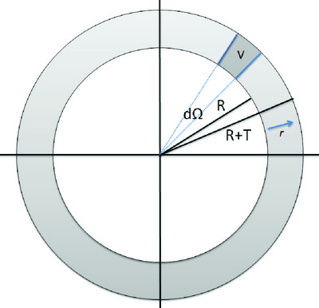Figure A1. Cross-section of concentric spheres illustrating calculation of cortical depth given a volume fraction, cortical thickness and curvature.
Consider two concentric spheres (Figure A1), the first one smaller than the second. The first has radius \(R\), the second has radius \(R+T\), with \(T\lt{0}\).
The total volume between the spheres for a differential solid angle \(d\Omega\) is given by
| \[V_{total}=\int_{r=R}^{r=R+T}r^2drd\Omega\] | 7.3 |
| \[V_{total}=\Big[\frac{1}{3}r^3\Big]_{r=R}^{r=R+T}d\Omega\] | 7.4 |
| \[V_{total}=\frac{1}{3}\big((R+T)^{3}-R^3\big)d\Omega\] | 7.5 |
Now we are interested in obtaining the radius \(r\) corresponding to some fraction \(f\) of the total volume \(V_{total}\). We create a volume fraction function \(f(r)\) that runs from \(R\) to \(R+T\) and has to satisfy \(f(R)=0\) and \(f(R+T)=1\).
The volume from the inner radius \(R\) to some radius \(r\) is given by
| \[V(r)=\int_{r'=R}^{r'=r}r'^2 dr'd\Omega\] | 7.6 |
| \[V(r)=\Big[\frac{1}{3}r'^3 \Big]_{r'=R}^{r'=r}d\Omega\] | 7.7 |
| \[V(r)=\frac{1}{3}\big(r^3-R^3\big)d\Omega\] | 7.8 |
Thus, the volume fraction function is simply given by
| \[f(r)=\frac{V(r)}{V_{total}}\] | 7.9 |
| \[f(r)=\frac{\frac{1}{3}\big(r^3-R^3\big)d\Omega}{\frac{1}{3}\big((R+T)^{3}-R^3\big)d\Omega}\] | 7.10 |
| \[f(r)=\frac{r^3-R^3}{(R+T)^3-R^3}\] | 7.11 |
Generally, we are interested in \(r\) as a function of \(f\), and hence rearranging the equation in this form gives:
| \[r(f)^3=\Big((R+T)^3-R^3\Big)f+R^3\] | 7.12 |
Taking the cube root of both sides gives a direct formula for \(r\):
| \[r(f)=\sqrt[3]{\Big((R+T)^3-R^3\Big)f+R^3}\] | 7.13 |
a Thesis version. This work was subsequently published as:
Kleinnijenhuis M., van Mourik T., Norris D.G., Ruiter D.J., van Cappellen van Walsum A-M., Barth M. (2015) Diffusion tensor characteristics of gyrencephaly using high resolution diffusion tensor imaging in vivo at 7T. NeuroImage, 109, 378-387. doi:10.1016/j.neuroimage.2015.01.001
Chapter 8
Combining fibre dissection, plastination, and tractography for neuroanatomy education: revealing the cerebellar nuclei and their white matter connectionsa
Hisse Arnts, Michiel Kleinnijenhuis, Jan G.M. Kooloos, Annelieke N. Schepens-Franke, Anne-Marie van Cappellen van Walsum
Abstract
In recent years, there has been a growing interest in white matter anatomy of the human brain. With advances in brain imaging techniques, the significance of white matter integrity for brain function has been demonstrated in various neurological and psychiatric disorders. As the demand for interpretation of clinical and imaging data on white matter increases, the needs for white matter anatomy education are changing. Because cross-sectional images and formalin-fixed brain specimens are often insufficient in visualizing the complex-ity of three-dimensional (3D) white matter anatomy, obtaining a comprehensi-ble conception of fibre tract morphology can be difficult. Fibre dissection is a technique that allows isolation of whole fibre pathways, revealing 3D structural and functional relationships of white matter in the human brain. In this study we describe the use of fibre dissection in combination with plastination to obtain durable and easy to use 3D white matter specimens that do not require special care or conditions. The specimens can be used as a tool in teaching white matter anatomy and structural connectivity. We included four human brains and show a series of white matter specimens of both cerebrum and cerebellum focusing on the cerebellar nuclei and associated white matter tracts, as these are especially difficult to visualize in two-dimensional speci-mens and demonstrate preservation of detailed human anatomy. Finally, we describe how the integration of white matter specimens with radiological information of new brain imaging techniques such as diffusion tensor imaging tractography can be used in teaching modern neuroanatomy with emphasis on structural connectivity.
Acknowledgements
Authors have no conflicts of interests and no commercial or financial relation-ships to disclose. The authors thank Vera Gelsing, Laura Adolfse, and Dionne Christiaans for helping with the preservation and plastination of the brain specimens.
Abbreviations
| 2D | two-dimensional |
| 3D | three-dimensional |
| AF | acceleration factor |
| CN | caudate nucleus |
| CS | central sulcus |
| CSD | constrained spherical deconvolution |
| CT | corticospinal tract |
| DN | dentate nucleus |
| DTI | diffusion tensor imaging |
| EPI | echo planar imaging |
| ICP | inferior cerebellar peduncle |
| IN | insula |
| MCP | middle cerebellar peduncle |
| OF | occipito-frontal fasciculus |
| PC | postcentral gyrus |
| PRC | precentral gyrus |
| SCP | superior cerebellar peduncle |
| T | thalamus |
| TE | echo time |
| TR | repetition time |
| X | emboliform nucleus |
| Y | globose nucleus |
| Z | fastigial nucleus |
Sorting out permissions. Please return later...
a reformatted Accepted Author Manuscript version
Arnts, H., Kleinnijenhuis, M., Kooloos, J., Schepens-Franke, A., & Van Cappellen van Walsum, A.-M. (2014). Combining fiber dissection, plastination, and tractography for neuroanatomical education: Revealing the cerebellar nuclei and their white matter connections. Anatomical Sciences Education, 7(1), 47-55. doi:10.1002/ase.1385
Chapter 9
Discussion and conclusions
9.1 General discussion
Imaging fibres in the brain with diffusion weighted imaging (DWI) and tractography methodology has had a considerable impact on neurosci-ence. Fascinating and important insights have emerged from this. Diffusion imaging methods have supported theories about how distributed systems might support language371; they have shed light on how the anatomical brain network shapes dynamics372 and have facilitated detection of abnormalities in connectivity in psychiatric disease373. Yet, the full potential has not been reached as evidenced by the on-going methods development in the field of DWI. Within this development, two main research lines can be distinguished. On the one hand, there is the effort to achieve an accurate and comprehensive mapping of white matter pathways using tractography, also known as structural connectomics3. On the other hand, investigations into microstructural properties of brain tissue with diffusion imaging are expected to yield meaningful markers of (patho)physiological tissue states258. Both applications of DWI face some major challenges, most of which can be assigned to the categories of disambiguation and validation. This thesis has attempted to address some of the questions and issues that are presently relevant to the field. This section will summarize the contributions of the individual chapters, relate them to these two main streams in diffusion imaging and highlight opportunities for the future.
9.1.1 Structure tensor informed fibre tractography
In Chapter 4, it was demonstrated that combining the MR modalities of diffusion imaging and susceptibility imaging leads to improvements in the reconstruction of fibre bundles. The gain in tracking specificity is obtained by using the respective strengths of the diffusion and susceptibility imaging techniques (high angular and spatial resolution respectively). Whole-brain tractography suffers from high false positive rates. The number of false positives is reduced with the new tracking method STIFT. Therefore, connectivity estimates should be improved when employing it. Perhaps even more valuable is the specific benefit of disambiguating kissing and crossing fibres. STIFT is one of the very few approaches that have succeeded in separating these fibre configu-rations, although it is one of the long-standing issues in diffusion imaging. Moreover, increased accuracy in the bounds of particular pathways, as was demonstrated for the optic radiation, is essential for use of tractography as a pre- or intraoperative white matter mapping tool.
Others have already addressed some of the difficulties that were envisaged and encountered when developing the STIFT method. First, the necessity to acquire data on two MR systems—the diffusion images at 3T and an anatomical gradient echo scan at 7T—has disappeared with the availability of whole-brain, low-power-deposition DWI se-quences for 7T263. Second, quantitative susceptibility mapping (QSM) methods have progressed to the point where they provide artefact-free maps with feasible acquisition protocols regarding scan time and head rotation angles148,374. Thus, by incorporating QSM in the STIFT method, contrast-to-noise can now be significantly enhanced without being affected by non-local field effects or the bundle’s orientation with respect to the main magnetic field. These methodological advances, therefore, have opened up promising avenues for further developments in Structure Tensor Informed Fibre Tractography.
9.1.2 Mesoscale ex vivo diffusion imaging
Laminar fibre architecture
In Chapters 5 and 6, the spatial resolution was pushed to the point that the fibre contents of cortical layers could be distinguished. The demonstration of layer-specific diffusion tensor properties in Chapter 5 might not be surprising: myeloarchitectonics has been regarded as a distinguishing feature of cortical regions for more than a century75. To demonstrate this with MRI invites continued investigation of myeloar-chitecture in vivo. Previous in vivo studies have used MRI measures sensitive to myelin (e.g., T1217,375; T1/T2 ratio253; R2*252). Diffusion imaging, however, has the potential to surpass these measures in specificity, because it quantifies fibre configurations as well as microstructural geometrical properties (Chapter 6). The layer-specificity of the cortical diffusion signal reported in Chapter 5 was replicated by an independ-ent research group245 as well as ourselves in Chapter 6. This gives confidence in the robustness of the results for the primary visual cortex. Furthermore, the results have been extended to other cortical areas (V2 in Chapter 5, M1274,279, S1279, cerebellum268) indicating different cortical profiles. This is important for future attempts to parcellate the cortex on the basis of the laminar diffusion profile. Even while the resolution needed to distinguish cortical layers cannot be reached in vivo, the characterization of the laminar profile is relevant. The composite diffusion signal might vary over cortical regions and might therefore be used for parcellation300.
Mesoscale imaging
The macroscale method of DWI was brought down to the mesoscale in Chapters 5 and 6. It was shown that zooming in on tissue can clarify features seen at the macroscale, such as the radial diffusion pattern seen in the cortex in vivo16,291 and the fibre configurations at the grey-white matter boundary. Experimental access to these parameters at the mesoscale, where it can be linked more easily to microscopic observa-tions, validates diffusion methods for use at more common MRI resolutions. The histological validation in Chapter 6 of the presupposed fanning/crossing patterns at the grey-white matter boundary (as reflected in the dispersion parameter of the NODDI model) is a good example. Additionally, the anatomical detail seen in the ex vivo samples can be used to generate predictions about in vivo DWI scans.
Ex vivo diffusion imaging
For purely anatomical research, ex vivo diffusion imaging is well suited, because there is no movement of the tissue (which avoids artefacts: Box 3.1) and scan times are not limited by subject cooperation (allowing to increase spatial and angular resolution). Concerns about comparability of parameters-of-interest between the in vivo and ex vivo situation have not all been addressed, and depend for the most part on specimen preparation376,377. Ex vivo imaging of animal brains is more common, because these concerns are not as pressing, because standardized perfusion fixation protocols result in less tissue degrada-tion and less variability.
9.1.3 Diffusion tensors over the gyral/sulcal pattern
The analysis of high-resolution in vivo diffusion MRI data that was presented in Chapter 7 gave a novel account of diffusion behaviour in the neocortex and the underlying white matter. In this work, many features of the fibre configurations observed in ex vivo MRI (Chapters 5 and 6) could be demonstrated in vivo. Some examples are the pattern of tensors oriented radial to the cortical sheet, the tangential tensor orientation in the infragranular layers of the fundus of the sulcus, and anisotropy differences between infragranular and supragranular layers. At the resolution currently feasible in vivo, it has not yet proven feasible to demonstrate particular laminar profiles associated with region-specific myeloarchitectonic fingerprints.
The primary reason for striving for high resolution in structural brain imaging is the anatomical characterization of the individual brain in vivo. In the in vivo brain: because only in this state can function be correlated to structure. In the individual brain: because our brains are unique. There is no guarantee that matching individual brains to a template for group study overlays regions with the same functional anatomy. Arguably, the most unique feature of any individual brain is the pattern of folds in the cortical sheet: the gyri and sulci. The practice of mapping MR metrics to a 2D map of the cortical sheet is gaining in popularity. This makes sense for high-resolution data as the spatial specificity warrants the generally more accurate normalization of the cortical sheet obtained by this type of map. The data presented in Chapter 7 stress, however, that future studies should take into account that variations in the mapped parameters can be due to the gyral/sulcal pattern, at least for diffusion data.
9.1.4 White matter dissection for education and research
The development of teaching materials as described in Chapter 8 is essential for furthering white matter research, although it does not directly contribute to technical advances in connectivity or microstruc-ture. Incorporating white matter anatomy as a topic in medical curricula and neuroscience graduate courses is indispensible for propagating the network-oriented view of brain function. Focus on the white matter is of increasing importance to the ‘brainworker’ of all types, such as the neurosurgeon, the neurologist, the neuroradiologist, the neuro-engineer and the neuroscientist. Mostly thanks to the in vivo method of DWI the white mass is not all white, but a colourful array of (virtual) bundles. This should be brought to the attention of young neuro-enthusiasts in order to spark their interest in investigating connectivity. The teaching tools described in Chapter 8 have proven to do just this. Durable and low-cost prosections were created by combining white matter dissection with plastination to provide students with 3D hands-on experience of white matter anatomy. The full complexity of the network of the brain is still hard to grasp from these prosections, because it provides only a macroscopic view of a limited number of bundles. However, combining the prosections with other modalities (tractography, microscopy, grey-matter oriented dissection) allows a comprehensive appreciation of the white matter.
The usefulness of white matter dissection for research is debatable. Tractography validation studies have recently been published, showing correspondence between DWI-derived and dissected tracts. Quantification is difficult, however. Moreover, the same locations where ambigui-ty and uncertainty are prominent in the diffusion image—the fibre crossings—are problematic for dissection approaches as well. In these locations the power of the validation approach is reduced, because a choice in following a particular fibre direction has to be made. The choice will often be based on prior knowledge and therefore introduces an operator bias. Nevertheless, next to DWI, it is the only practical method to trace a connection over a long distance in the human brain.
At the Radboudumc hospital in Nijmegen, there has been a long tradition in providing a hands-on brain dissection experience to biomedical/psychology students. Only in the past few years, has the white matter received due attention. This trend should be continued in order to deliver highly skilled MDs and graduate students who know their way around the network of the brain. Alas, in these times of economic malaise hands-on dissection is considered an expensive and time-consuming teaching tool. However, prosections of the white matter might help in cutting costs for the future, while still providing 3D hands-on contact with brain anatomy. In Nijmegen this teaching tool is popular: lecturers from various departments have used them to illustrate their lectures, which is almost unthinkable for wet prosections. Furthermore, the prosections have been used repeatedly in public events for dissemination of neuroscience, always with great success. Therefore, we are happy to propagate the method and are confident that many Anatomy departments will follow our example of combining dissection, plastination and imaging methodology.
9.2 Concluding remarks
To our human eyes the brain is an immensely complex maze of pathways. In trying to find the way through this maze, one needs a map. Throughout history, increasingly specific brain maps have been created. The atlas that was built through these efforts nowadays includes many features, such as gene expression, neurotransmitter pharmacology and functional activation. The basis of an atlas, however, is the geographical layout. For the brain, the equivalent is formed by the microanatomical connections from one neuron to the other. The gross ‘geographical’ map of the brain can be constructed with diffusion MRI nowadays, comparable to taking a low-resolution satellite snapshot of the world. This thesis has attempted to improve on this snapshot. First, the image has been sharpened by developing a more specific tractography technique. Second, a zoomed image of the street plan of one of the major ‘cities’ in the brain—the primary visual cortex—was created. Third, this street plan was validated by creating a ‘street view’ using histology. Fourth, a general plan for layout of the ‘cities’ in the brain was presented by showing the typical anatomy of pathways in the gyrus. Fifth, a tool was created for teaching new users how to use the ‘geographical’ map of the brain. In sum, the thesis has contributed to multiple aspects of brain research, including methods development, interpretation, validation and dissemination.
Unavoidably, many questions are left unanswered. Some pressing questions have been raised in this thesis. To what extent can the STIFT method be extended to be beneficial for all fibre bundles in the brain? And can a similar combination of MR modalities be used in cortical areas? Will layer-specific resolution ever be obtained for in vivo diffusion MRI? Can the knowledge of differential diffusion behaviour over the gyral/sulcal pattern help in obtaining more accurate tractog-raphy results? And are cortical diffusion profiles more useful for cortical segmentation than conventional myelin measures? Important questions pertain to the clinical applicability of the techniques. Does STIFT improve outcome when used for temporal lobectomy planning? For which cortical disease processes can NODDI parameters be used as clinical markers280? For the teaching tools: do students retain more knowledge about white matter anatomy with these tools compared to traditional teaching methods or in combination with the traditional methods?
This thesis sees the light in a time where many large-scale international projects have generated, or are about to generate, massive amounts of data on the human connectome. Perhaps, with these data some of these questions can be answered. In any case, processing these data warrants new analysis methods, validation and interpretation. It has been the purpose of this thesis to provide just these features for the lively brain mapping community.
Bibliography
- Bianconi E, Piovesan A, Facchin F, Beraudi A, Casadei R, Frabetti F, Vitale L, Pelleri MC, Tassani S, Piva F, Perez-Amodio S, Strippoli P, Canaider S. An estimation of the number of cells in the human body. Annals of Human Biology. 2013; 4460: 1–9.
- Wang L, Xu Y, Di Z, Roehner BM. How does group interaction and its severance affect life expectancy? 2013. http://arxiv.org/abs/1304.2935 (accessed 10 Oct2013).
- Sporns O, Tononi G, Kötter R. The human connectome: A structural description of the human brain. PLoS Computational Biology. 2005; 1: e42.
- De Reus MA, van den Heuvel MP. The parcellation-based connectome: Limitations and extensions. NeuroImage. 2013; 80: 397–404.
- Catani M, Thiebaut de Schotten M, Slater D, Dell’acqua F. Connectomic approaches before the connectome. NeuroImage. 2013; 80: 2–13.
- Le Bihan D, Breton E, Lallemand D, Grenier P, Cabanis E, Laval-Jeantet M. MR imaging of intravoxel incoherent motions: application to diffusion and perfusion in neurologic disorders. Radiology. 1986; 161: 401–7.
- Moseley ME, Cohen Y, Kucharczyk J, Mintorovitch J, Asgari HS, Wendland MF, Tsuruda J, Norman D. Diffusion-weighted MR imaging of anisotropic water diffusion in cat central nervous system. Radiology. 1990; 176: 439–45.
- Scholz J, Klein MC, Behrens TEJ, Johansen-Berg H. Training induces changes in white-matter architecture. Nature Neuroscience. 2009; 12: 1370–1.
- Kubicki M, Park H, Westin CF, Nestor PG, Mulkern R V, Maier SE, Niznikiewicz M, Connor EE, Levitt JJ, Frumin M, Kikinis R, Jolesz FA, McCarley RW, Shenton ME. DTI and MTR abnormalities in schizophrenia: analysis of white matter integrity. NeuroImage. 2005; 26: 1109–18.
- Douaud G, Smith S, Jenkinson M, Behrens T, Johansen-Berg H, Vickers J, James S, Voets N, Watkins K, Matthews PM, James A. Anatomically related grey and white matter abnormalities in adolescent-onset schizophrenia. Brain. 2007; 130: 2375–86.
- Behrens TEJ, Johansen-Berg H, Woolrich MW, Smith SM, Wheeler-Kingshott CAM, Boulby PA, Barker GJ, Sillery EL, Sheehan K, Ciccarelli O, Thompson AJ, Brady JM, Matthews PM. Non-invasive mapping of connections between human thalamus and cortex using diffusion imaging. Nature Neuroscience. 2003; 6: 750–7.
- Johansen-Berg H, Behrens TEJ, Robson MD, Drobnjak I, Rushworth MFS, Brady JM, Smith SM, Higham DJ, Matthews PM. Changes in connectivity profiles define functionally distinct regions in human medial frontal cortex. Proceedings of the National Academy of Sciences of the United States of America. 2004; 101: 13335–40.
- Saygin ZM, Osher DE, Augustinack J, Fischl B, Gabrieli JDE. Connectivity-based segmentation of human amygdala nuclei using probabilistic tractography. NeuroImage. 2011; 56: 1353–61.
- Hagmann P, Cammoun L, Gigandet X, Meuli R, Honey CJ, Wedeen VJ, Sporns O. Mapping the structural core of human cerebral cortex. PLoS Biology. 2008; 6: e159.
- McNab JA, Jbabdi S, Deoni SCL, Douaud G, Behrens TEJ, Miller KL. High resolution diffusion-weighted imaging in fixed human brain using diffusion-weighted steady state free precession. NeuroImage. 2009; 46: 775–85.
- Heidemann RM, Porter DA, Anwander A, Feiweier T, Heberlein K, Knösche TR, Turner R. Diffusion imaging in humans at 7T using readout-segmented EPI and GRAPPA. Magnetic Resonance in Medicine. 2010; 64: 9–14.
- Clarke E, O’Malley CD. The human brain and spinal cord: a historical study illustrated by writings from antiquity to the twentieth century. University of California Press: Berkeley, 1968.
- Schmahmann JD, Pandya DN. Fiber Pathways of the Brain. 1st ed. Oxford University Press: Oxford, 2006.
- Nieuwenhuys R, Voogd J, van Huijzen C. The human central nervous system. 4th ed. Springer-Verlag: Berlin, Heidelberg, New York, 2008.
- Stricker S, Power H. Manual of Human Comparative Histology, Vol I&II. The New Sydenham Society: London, 1872.
- Von Bonin G. Some papers on the cerebral cortex. Thomas: Springfield, 1960.
- Debernardi A, Sala E, D’Aliberti G, Talamonti G, Franchini AF, Collice M. Alcmaeon of Croton. Neurosurgery. 2010; 66: 247–52; discussion 252.
- Gross CG. Aristotle on the Brain. The Neuroscientist. 1995; 1: 245–50.
- Longrigg J. Anatomy in Alexandria in the Third Century B.C. The British Journal for the History of Science. 2009; 21: 455–88.
- Gross CG. Galen and the Squealing Pig. The Neuroscientist. 1998; 4: 216–21.
- Green CD. Where did the ventricular localization of mental faculties come from? Journal of the History of the Behavioral Sciences. 2003; 39: 131–42.
- Olry R. Medieval neuroanatomy: the text of Mondino dei Luzzi and the plates of Guido da Vigevano. Journal of the History of the Neurosciences. 1997; 6: 113–23.
- Bambach C. Anatomy in the Renaissance. Heilbrunn Timeline of Art History. 2000. http://www.metmuseum.org/toah/hd/anat/hd_anat.htm (accessed 23 Oct2013).
- Martino J, De Witt Hamer PC, Berger MS, Lawton MT, Arnold CM, de Lucas EM, Duffau H. Analysis of the subcomponents and cortical terminations of the perisylvian superior longitudinal fasciculus: a fiber dissection and DTI tractography study. Brain Structure & Function. 2013; 218: 105–21.
- Türe U, Yaşargil MG, Friedman a H, Al-Mefty O. Fiber dissection technique: lateral aspect of the brain. Neurosurgery. 2000; 47: 417–26; discussion 426–7.
- Paul LK, Brown WS, Adolphs R, Tyszka JM, Richards LJ, Mukherjee P, Sherr EH. Agenesis of the corpus callosum: genetic, developmental and functional aspects of connectivity. Nature Reviews Neuroscience. 2007; 8: 287–99.
- Gazzaniga MS. Cerebral specialization and interhemispheric communication: does the corpus callosum enable the human condition? Brain. 2000; 123: 1293–326.
- Makris N, Kennedy DN, McInerney S, Sorensen a G, Wang R, Caviness VS, Pandya DN. Segmentation of subcomponents within the superior longitudinal fascicle in humans: a quantitative, in vivo, DT-MRI study. Cerebral Cortex. 2005; 15: 854–69.
- Meynert T. A Clinical Treatise on Diseases of the Fore-brain Based upon a Study of its Structure, Functions, and Nutrition. Translated by Bernard Sachs. G.P. Putnam’s Sons: New York, 1885.
- Papez JW. A proposed mechanism of emotion. Archives of Neurology and Psychiatry. 1937; 38: 725–643.
- Van den Heuvel M, Mandl R, Luigjes J, Hulshoff Pol H. Microstructural organization of the cingulum tract and the level of default mode functional connectivity. The Journal of Neuroscience. 2008; 28: 10844–51.
- Tsivilis D, Vann SD, Denby C, Roberts N, Mayes AR, Montaldi D, Aggleton JP. A disproportionate role for the fornix and mammillary bodies in recall versus recognition memory. Nature Neuroscience. 2008; 11: 834–42.
- Gennari F. De peculiari structura cerebri, nonnulisque ejus morbi. Parmae: Ex Regio Typographico, 1782.
- Baillarger JGF. Recherches sur la structure de la couche corticale des circonvolutions du cerveau. Mémoires de l’Académie Royale de Médecine de Paris. 1840; 8: 149–83.
- Willis T. Cerebri anatome : cui accessit nervorum descriptio et usus. Londini: typis Ja. Flesher, impensis Jo. Martyn & Ja. Allestry apud insigne Campanae in Coemeterio D. Pauli: London, 1664.
- Olden-Jørgensen S. Nicholas Steno and René Descartes: A Cartesian perspective on Steno’s scientific development. Geological Society of America Memoirs. 2009; 203: 149–57.
- Steno N. Discours sur L’Anatomie du Cerveau. 1669.
- Gall FJ, Spurzheim JK. Anatomie et physiologie du système nerveux en général et anatomie du cerveau en particulier. Vol II. F. Schoell: Paris, 1812.
- Combe G. A System of Phrenology. 3rd ed. Benjamin B Mussey and Company: Boston, 1851.
- Broca PP. Perte de la Parole, Ramollissement Chronique et Destruction Partielle du Lobe Antérieur Gauche du Cerveau. Bulletin de La Société Anthropologique. 1861; 2: 235–8.
- Waller A. Experiments on the section of the glossopharyngeal and hypoglossal nerves of the frog, and observations of the alterations produced thereby in the structure of their primitive fibres. Philosophical Transactions of the Royal Society. 1850; 140: 423–9.
- Türck L. Über sekondäre Erkrankung einzelner Rückenmarkstränge und ihrher Fortsetzungen zum Gehirne. Z Kais Kön Ges Ärzte Wien. 1849; 1: 173–6.
- Von Gudden B. Experimentaluntersuchungen über das peripherische und centrale Nervensystem. Archiv Psychiatrie Nervenkrankheiten. 1870; 2: 693–723.
- Catani M, Dell’Acqua F, Bizzi A, Forkel SJ, Williams SC, Simmons A, Murphy DG, Thiebaut de Schotten M. Beyond cortical localization in clinico-anatomical correlation. Cortex. 2012; 48: 1262–87.
- Fritsch G, Hitzig EU. Über die elektrische Erregbarkeit des Grosshirns. Archiv Für Anatomie Physiologie Und Wissenschaftliche Medicin. 1870; 37: 300–32.
- Van Leeuwenhoek A. More observations from Mr.Leewenhook, in a letter of Sept. 7.1674. sent to the Publisher. Philosophical Transactions of the Royal Society. 1674; 9: 178–82.
- Malphigi M. De cerebro epistola. In: Tetras anatomicarum epistolarum. Bologna, 1664, pp 1–46.
- Klüver H, Barrera E. A method for the combined staining of cells and fibers in the nervous system. Journal of Neuropathology and Experimental Neurology. 1953; 12: 400–3.
- Blackwell ML, Farrar CT, Fischl B, Rosen BR. Target-specific contrast agents for magnetic resonance microscopy. NeuroImage. 2009; 46: 382–93.
- Sikma K-J, Kleinnijenhuis M, Barth M, Dederen PJ, Küsters B, Slump CH, van Cappellen van Walsum A-M. Validating tractography from DWI/SWI data with 3D reconstructed histological data of post-mortem human brain tissue. In: Nederlandse Vereniging voor Technische Geneeskunde. Enschede, The Netherlands, 2010.
- Bodian D. A new method for staining nerve fibers and nerve endings in mounted paraffin sections. The Anatomical Record. 1936; 65: 89–97.
- Gambetti P, Autilio-Gambetti L, Papasozomenos SC. Bodian’s Silver Method Stains Neurofilament Polypeptides. Science. 1981; 213: 1521–2.
- Uchihara T. Silver diagnosis in neuropathology: principles, practice and revised interpretation. Acta Neuropathologica. 2007; 113: 483–99.
- Reil JC. Untersuchingen über den Bau des grossen Gehirns im Menschen. Vierte Fortsetzung VIII. Arch Physiol. 1809; 9: 136–46.
- Hannover A. Die Chromsäure, ein vorzügliches Mittel beim mikroscopischen Untersuchungen. Arch Anat Physiol. 1840; : 549–58.
- Blum F. Der Formaldehyd als Hartungsmittel. Zeitschrift Für Mikroscopie. 1893; 10: 314–5.
- Von Gerlach J. Über die Structur der grauern Substanz des menschlichen Grosshirns. Vorläufige Mittheilung. Zbl Med Wiss. 1872; 10: 273–5.
- Deiters OFK. Untersuchungen über Gehirn und Rückenmark des Menschen und der Säugethiere. Vieweg: Braunschweig, 1865.
- His W. Zur Geschichte des menschlichen Rückenmarkes und der Nervelwurzeln. Abh K Säch Ges Wiss, Math-Phys Classe. 1887; 13: 477–514.
- Forel A-H. Einige hirnanatomische Betrachtungen und Ergebnisse. Arch Psychiat NervKrankh. 1887; 18: 162–98.
- Waldeyer W. Über einige neuere Forschungen im Gebiete der Anatomie des Centralnervensystems. Dt Med Wschr. 1891; 17: 1213–8, 1244–6, 1267–9, 1287–9, 1331–1.
- Dejerine JJ, Dejerine-Klumpke A. Anatomie des centres nerveux. Vol. I. Paris, 1895.
- Dejerine JJ, Dejerine-Klumpke A. Anatomie des centres nerveux. Vol. II. Rueff: Paris, 1901.
- Bassetti CL, Jagella EC. Joseph Jules Dejerine (1849-1917). Journal of Neurology. 2006; 253: 823–4.
- Shoja MM, Tubbs RS. Augusta Déjerine-Klumpke: the first female neuroanatomist. Clinical Anatomy. 2007; 20: 585–7.
- Lanciego JL, Wouterlood FG. A half century of experimental neuroanatomical tracing. Journal of Chemical Neuroanatomy. 2011; 42: 157–83.
- Felleman DJ, Van Essen DC. Distributed hierarchical processing in the primate cerebral cortex. Cerebral Cortex. 1991; 1: 1–47.
- White JG, Southgate E, Thomson JN, Brenner S. The Structure of the Nervous System of the Nematode Caenorhabditis elegans. Philosophical Transactions of the Royal Society B: Biological Sciences. 1986; 314: 1–340.
- Stephan KE. The history of CoCoMac. NeuroImage. 2013; 80: 46–52.
- Vogt O. Die myeloarchitektonische Felderung des menschlichen Stirnhirns. Journal Für Psychologie Und Neurologie. 1910; 15: 221–38.
- Callaway EM. Local circuits in primary visual cortex of the macaque monkey. Annual Review of Neuroscience. 1998; 21: 47–74.
- Innocenti GM, Vercelli A. Dendritic bundles, minicolumns, columns, and cortical output units. Frontiers in Neuroanatomy. 2010; 4: 11.
- Peters A, Sethares C. Myelinated axons and the pyramidal cell modules in monkey primary visual cortex. The Journal of Comparative Neurology. 1996; 365: 232–55.
- Mountcastle VB. Modality and topographic properties of single neurons of cat’s somatic sensory cortex. Journal of Neurophysiology. 1957; 20: 408–34.
- Inhibitory neurons. 2007. © Blue Brain Project, EPFL, Lausanne, Switzerland.
- Peters A, Sethares C. The effects of age on the cells in layer 1 of primate cerebral cortex. Cerebral Cortex. 2002; 12: 27–36.
- Gerlach W, Stern O. Das Magnetische Moment des Silberatoms. Zeitschrift Für Physik. 1922; 9: 353–5.
- Rabi II, Zacharias JR, Millman S, Kusch P. A New Method of Measuring Nuclear Magnetic Moment. Physical Review. 1938; 53: 318.
- Bloch F. Nuclear Induction. Physical Review. 1946; 70: 460–74.
- Purcell EM, Torrey HC, Pound RV. Resonance Absorption by Nuclear Magnetic Moments in a Solid. Physical Review. 1946; 69: 37–8.
- Hahn EL. Spin Echoes. Physical Review. 1950; 80: 580–94.
- Mansfield P. Multi-planar image formation using NMR spin echoes. Journal of Physics C: Solid State Physics. 1977; 10: L55–L58.
- Boyacioğlu R, Barth M. Generalized iNverse imaging (GIN): Ultrafast fMRI with physiological noise correction. Magnetic Resonance in Medicine. 2012; 971: 962–71.
- Edelstein WA, Glover GH, Hardy CJ, Redington RW. The intrinsic signal-to-noise ratio in NMR imaging. Magnetic Resonance in Medicine. 1986; 3: 604–18.
- Wright PJ, Mougin OE, Totman JJ, Peters AM, Brookes MJ, Coxon R, Morris PE, Clemence M, Francis ST, Bowtell RW, Gowland PA. Water proton T1 measurements in brain tissue at 7, 3, and 1.5 T using IR-EPI, IR-TSE, and MPRAGE: results and optimization. Magma. 2008; 21: 121–30.
- Cox EF, Gowland PA. Simultaneous quantification of T2 and T’2 using a combined gradient echo-spin echo sequence at ultrahigh field. Magnetic Resonance in Medicine. 2010; 64: 1440–5.
- Hu X, Norris DG. Advances in high-field magnetic resonance imaging. Annual Review of Biomedical Engineering. 2004; 6: 157–84.
- Hoult DI. Sensitivity and power deposition in a high-field imaging experiment. Journal of Magnetic Resonance Imaging. 2000; 12: 46–67.
- Van de Moortele P-F, Akgun C, Adriany G, Moeller S, Ritter J, Collins CM, Smith MB, Vaughan JT, Uğurbil K. B(1) destructive interferences and spatial phase patterns at 7 T with a head transceiver array coil. Magnetic Resonance in Medicine. 2005; 54: 1503–18.
- Yang QX, Mao W, Wang J, Smith MB, Lei H, Zhang X, Ugurbil K, Chen W. Manipulation of image intensity distribution at 7.0 T: passive RF shimming and focusing with dielectric materials. Journal of Magnetic Resonance Imaging. 2006; 24: 197–202.
- Katscher U, Börnert P, Leussler C, van den Brink JS. Transmit SENSE. Magnetic Resonance in Medicine. 2003; 49: 144–50.
- Orzada S, Maderwald S, Poser BA, Bitz AK, Quick HH, Ladd ME. RF excitation using time interleaved acquisition of modes (TIAMO) to address B1 inhomogeneity in high-field MRI. Magnetic Resonance in Medicine. 2010; 64: 327–33.
- Webb AG. Radiofrequency microcoils for magnetic resonance imaging and spectroscopy. Journal of Magnetic Resonance. 2013; 229: 55–66.
- Hoult DI, Richards RE. The signal-to-noise ratio of the nuclear magnetic resonance experiment. Journal of Magnetic Resonance. 1976; 24: 71–85.
- Kovacs H, Moskau D, Spraul M. Cryogenically cooled probes—a leap in NMR technology. Progress in Nuclear Magnetic Resonance Spectroscopy. 2005; 46: 131–55.
- Yablonskiy DA, Sukstanskii AL. Theoretical models of the diffusion weighted MR signal. NMR in Biomedicine. 2010; 23: 661–81.
- Syková E, Nicholson C. Diffusion in Brain Extracellular Space. Physiological Review. 2008; 88: 1277–340.
- Thorne RG, Nicholson C. In vivo diffusion analysis with quantum dots and dextrans predicts the width of brain extracellular space. Proceedings of the National Academy of Sciences of the United States of America. 2006; 103: 5567–72.
- Hrabetová S, Nicholson C. Contribution of dead-space microdomains to tortuosity of brain extracellular space. Neurochemistry International. 2004; 45: 467–77.
- Verkman AS. Solute and macromolecule diffusion in cellular aqueous compartments. Trends in Biochemical Sciences. 2002; 27: 27–33.
- Goodman JA, Kroenke CD, Bretthorst GL, Ackerman JJH, Neil JJ. Sodium ion apparent diffusion coefficient in living rat brain. Magnetic Resonance in Medicine. 2005; 53: 1040–5.
- Shepherd TM, Thelwall PE, Stanisz GJ, Blackband SJ. Aldehyde fixative solutions alter the water relaxation and diffusion properties of nervous tissue. Magnetic Resonance in Medicine. 2009; 62: 26–34.
- D’Arceuil HE, Westmoreland S, de Crespigny AJ. An approach to high resolution diffusion tensor imaging in fixed primate brain. NeuroImage. 2007; 35: 553–65.
- Carr HY, Purcell EM. Effects of Diffusion on Free Precession in Nuclear Magnetic Resonance Experiments. Physical Review. 1954; 94: 630–8.
- Torrey HC. Bloch Equations with Diffusion Terms. Physical Review. 1956; 104: 563–5.
- Stejskal EO, Tanner JE. Spin Diffusion Measurements: Spin Echoes in the Presence of a Time-Dependent Field Gradient. The Journal of Chemical Physics. 1965; 42: 288.
- Moseley ME, Cohen Y, Mintorovitch J, Chileuitt L, Shimizu H, Kucharczyk J, Wendland MF, Weinstein PR. Early detection of regional cerebral ischemia in cats: comparison of diffusion- and T2-weighted MRI and spectroscopy. Magnetic Resonance in Medicine . 1990; 14: 330–46.
- Basser PJ, Mattiello J, LeBihan D. MR diffusion tensor spectroscopy and imaging. Biophysical Journal. 1994; 66: 259–67.
- Callaghan PT, Eccles CD, Xia Y. NMR microscopy of dynamic displacements: k-space and q-space imaging. Journal of Physics E: Scientific Instruments. 1988; 21: 820–2.
- Mitra PP, Halperin BI. Effects of Finite Gradient-Pulse Widths in Pulsed-Field-Gradient Diffusion Measurements. Journal of Magnetic Resonance. 1995; 113: 94–101.
- Ozarslan E, Mareci TH. Generalized diffusion tensor imaging and analytical relationships between diffusion tensor imaging and high angular resolution diffusion imaging. Magnetic Resonance in Medicine. 2003; 50: 955–65.
- Jensen JH, Helpern JA, Ramani A, Lu H, Kaczynski K. Diffusional kurtosis imaging: the quantification of non-gaussian water diffusion by means of magnetic resonance imaging. Magnetic Resonance in Medicine. 2005; 53: 1432–40.
- Frank LR. Characterization of anisotropy in high angular resolution diffusion-weighted MRI. Magnetic Resonance in Medicine. 2002; 47: 1083–99.
- Tuch DS, Reese TG, Wiegell MR, Makris N, Belliveau JW, Wedeen VJ. High angular resolution diffusion imaging reveals intravoxel white matter fiber heterogeneity. Magnetic Resonance in Medicine. 2002; 48: 577–82.
- Wedeen VJ, Hagmann P, Tseng W-YI, Reese TG, Weisskoff RM. Mapping complex tissue architecture with diffusion spectrum magnetic resonance imaging. Magnetic Resonance in Medicine. 2005; 54: 1377–86.
- Tuch DS, Reese TG, Wiegell MR, Wedeen VJ. Diffusion MRI of complex neural architecture. Neuron. 2003; 40: 885–95.
- Jansons KM, Alexander DC. Persistent Angular Structure: new insights from diffusion MRI data. Dummy version. Information Processing in Medical Imaging : Proceedings of the . Conference. 2003; 18: 672–83.
- Tournier J-D, Calamante F, Gadian DG, Connelly A. Direct estimation of the fiber orientation density function from diffusion-weighted MRI data using spherical deconvolution. NeuroImage. 2004; 23: 1176–85.
- Tournier J-D, Calamante F, Connelly A. Robust determination of the fibre orientation distribution in diffusion MRI: non-negativity constrained super-resolved spherical deconvolution. NeuroImage. 2007; 35: 1459–72.
- Neuman CH. Spin echo of spins diffusing in a bounded medium. The Journal of Chemical Physics. 1974; 60: 4508.
- Van Gelderen P, DesPres D, van Zijl PC, Moonen CT. Evaluation of restricted diffusion in cylinders. Phosphocreatine in rabbit leg muscle. Journal of Magnetic Resonance Series B. 1994; 103: 255–60.
- Codd S, Callaghan P. Spin Echo Analysis of Restricted Diffusion under Generalized Gradient Waveforms: Planar, Cylindrical, and Spherical Pores with Wall Relaxivity. Journal of Magnetic Resonance. 1999; 137: 358–72.
- Stanisz GJ, Szafer A, Wright GA, Henkelman RM. An analytical model of restricted diffusion in bovine optic nerve. Magnetic Resonance in Medicine. 1997; 37: 103–11.
- Szafer A, Zhong J, Gore JC. Theoretical model for water diffusion in tissues. Magnetic Resonance in Medicine. 1995; 33: 697–712.
- Latour LL, Svoboda K, Mitra PP, Sotak CH. Time-dependent diffusion of water in a biological model system. Proceedings of the National Academy of Sciences of the United States of America. 1994; 91: 1229–33.
- Behrens TEJ, Woolrich MW, Jenkinson M, Johansen-Berg H, Nunes RG, Clare S, Matthews PM, Brady JM, Smith SM. Characterization and propagation of uncertainty in diffusion-weighted MR imaging. Magnetic Resonance in Medicine. 2003; 50: 1077–88.
- Assaf Y, Basser PJ. Composite hindered and restricted model of diffusion (CHARMED) MR imaging of the human brain. NeuroImage. 2005; 27: 48–58.
- Assaf Y, Blumenfeld-Katzir T, Yovel Y, Basser PJ. AxCaliber: a method for measuring axon diameter distribution from diffusion MRI. Magnetic Resonance in Medicine. 2008; 59: 1347–54.
- Alexander DC, Hubbard PL, Hall MG, Moore EA, Ptito M, Parker GJM, Dyrby TB. Orientationally invariant indices of axon diameter and density from diffusion MRI. NeuroImage. 2010; 52: 1374–89.
- Zhang H, Schneider T, Wheeler-Kingshott CA, Alexander DC. NODDI: practical in vivo neurite orientation dispersion and density imaging of the human brain. NeuroImage. 2012; 61: 1000–16.
- Zhang H, Hubbard PL, Parker GJM, Alexander DC. Axon diameter mapping in the presence of orientation dispersion with diffusion MRI. NeuroImage. 2011; 56: 1301–15.
- Jespersen SN, Leigland LA, Cornea A, Kroenke CD. Determination of axonal and dendritic orientation distributions within the developing cerebral cortex by diffusion tensor imaging. IEEE Transactions on Medical Imaging. 2012; 31: 16–32.
- Mori S, Crain BJ, Chacko VP, van Zijl PC. Three-dimensional tracking of axonal projections in the brain by magnetic resonance imaging. Annals of Neurology. 1999; 45: 265–9.
- Lazar M, Weinstein DM, Tsuruda JS, Hasan KM, Arfanakis K, Meyerand ME, Badie B, Rowley HA, Haughton V, Field A, Alexander AL. White matter tractography using diffusion tensor deflection. Human Brain Mapping. 2003; 18: 306–21.
- Catani M, Howard RJ, Pajevic S, Jones DK. Virtual in Vivo Interactive Dissection of White Matter Fasciculi in the Human Brain. NeuroImage. 2002; 17: 77–94.
- Nijhuis EHJ, van Cappellen van Walsum A-M, Norris DG. Topographic hub maps of the human structural neocortical network. PloS One. 2013; 8: e65511.
- Visser E, Nijhuis EHJ, Buitelaar JK, Zwiers MP. Partition-based mass clustering of tractography streamlines. NeuroImage. 2011; 54: 303–12.
- Koch MA, Norris DG, Hund-Georgiadis M. An investigation of functional and anatomical connectivity using magnetic resonance imaging. NeuroImage. 2002; 16: 241–50.
- Haacke EM, Xu Y, Cheng Y-CN, Reichenbach JR. Susceptibility weighted imaging (SWI). Magnetic Resonance in Medicine. 2004; 52: 612–8.
- Reichenbach JR, Venkatesan R, Schillinger DJ, Kido DK, Haacke EM. Small vessels in the human brain: MR venography with deoxyhemoglobin as an intrinsic contrast agent. Radiology. 1997; 204: 272–7.
- He X, Yablonskiy DA. Biophysical mechanisms of phase contrast in gradient echo MRI. Proceedings of the National Academy of Sciences of the United States of America. 2009; 106: 13558–63.
- Liu C. Susceptibility tensor imaging. Magnetic Resonance in Medicine. 2010; 63: 1471–7.
- Liu T, Spincemaille P, de Rochefort L, Kressler B, Wang Y. Calculation of susceptibility through multiple orientation sampling (COSMOS): a method for conditioning the inverse problem from measured magnetic field map to susceptibility source image in MRI. Magnetic Resonance in Medicine. 2009; 61: 196–204.
- De Rochefort L, Liu T, Kressler B, Liu J, Spincemaille P, Lebon V, Wu J, Wang Y. Quantitative susceptibility map reconstruction from MR phase data using bayesian regularization: validation and application to brain imaging. Magnetic Resonance in Medicine. 2010; 63: 194–206.
- Conturo TE, Lori NF, Cull TS, Akbudak E, Snyder AZ, Shimony JS, McKinstry RC, Burton H, Raichle ME. Tracking neuronal fiber pathways in the living human brain. Proceedings of the National Academy of Sciences of the United States of America. 1999; 96: 10422–7.
- Jones DK, Simmons A, Williams SC, Horsfield MA. Non-invasive assessment of axonal fiber connectivity in the human brain via diffusion tensor MRI. Magnetic Resonance in Medicine. 1999; 42: 37–41.
- Beaulieu C. The basis of anisotropic water diffusion in the nervous system - a technical review. NMR in Biomedicine. 2002; 15: 435–55.
- Seunarine KK, Alexander DC. Multiple fibers: beyond the diffusion tensor. In: Johansen-Berg H, Behrens TEJ (eds). Diffusion MRI: From quantitative measurement to in-vivo neuroanatomy. Academic Press: San Diego, 2009, pp 55–72.
- Dyrby TB, Søgaard L V, Parker GJ, Alexander DC, Lind NM, Baaré WFC, Hay-Schmidt A, Eriksen N, Pakkenberg B, Paulson OB, Jelsing J. Validation of in vitro probabilistic tractography. NeuroImage. 2007; 37: 1267–77.
- Wedeen VJ, Wang RP, Schmahmann JD, Benner T, Tseng WYI, Dai G, Pandya DN, Hagmann P, D’Arceuil H, de Crespigny AJ. Diffusion spectrum magnetic resonance imaging (DSI) tractography of crossing fibers. NeuroImage. 2008; 41: 1267–77.
- Roebroeck A, Galuske R, Formisano E, Chiry O, Bratzke H, Ronen I, Kim D, Goebel R. High-resolution diffusion tensor imaging and tractography of the human optic chiasm at 9.4 T. NeuroImage. 2008; 39: 157–68.
- McNab JA, Gallichan D, Miller KL. 3D steady-state diffusion-weighted imaging with trajectory using radially batched internal navigator echoes (TURBINE). Magnetic Resonance in Medicine. 2010; 63: 235–42.
- Calamante F, Tournier J-D, Jackson GD, Connelly A. Track-density imaging (TDI): super-resolution white matter imaging using whole-brain track-density mapping. NeuroImage. 2010; 53: 1233–43.
- Ogawa S, Lee TM, Kay AR, Tank DW. Brain magnetic resonance imaging with contrast dependent on blood oxygenation. Proceedings of the National Academy of Sciences of the United States of America. 1990; 87: 9868–72.
- Li T-Q, van Gelderen P, Merkle H, Talagala L, Koretsky AP, Duyn J. Extensive heterogeneity in white matter intensity in high-resolution T2*-weighted MRI of the human brain at 7.0 T. NeuroImage. 2006; 32: 1032–40.
- Duyn JH. Study of brain anatomy with high-field MRI: recent progress. Magnetic Resonance Imaging. 2010; 28: 1210–5.
- Fukunaga M, Li T-Q, van Gelderen P, de Zwart JA, Shmueli K, Yao B, Lee J, Maric D, Aronova MA, Zhang G, Leapman RD, Schenck JF, Merkle H, Duyn JH. Layer-specific variation of iron content in cerebral cortex as a source of MRI contrast. Proceedings of the National Academy of Sciences of the United States of America. 2010; 107: 3834–9.
- Langkammer C, Krebs N, Goessler W, Scheurer E, Ebner F, Yen K, Fazekas F, Ropele S. Quantitative MR imaging of brain iron: a postmortem validation study. Radiology. 2010; 257: 455–62.
- Li T-Q, Yao B, van Gelderen P, Merkle H, Dodd S, Talagala L, Koretsky AP, Duyn J. Characterization of T(2)* heterogeneity in human brain white matter. Magnetic Resonance in Medicine. 2009; 62: 1652–7.
- Schäfer A, Wiggins CJ, Turner R. Understanding the orientation dependent T2 contrast of the cingulum in ultra high fields. In: Proceedings of the International Society for Magnetic Resonance in Medicine. Stockholm, Sweden, 2009, p 956.
- Wiggins CJ, Gudmundsdottir V, Le Bihan D, Lebon V, Chaumeil M. Orientation Dependence of White Matter T2* Contrast at 7T : A Direct Demonstration. In: Proceedings of the International Society for Magnetic Resonance in Medicine. Toronto, Canada, 2008, p 237.
- Lee J, van Gelderen P, Kuo L-W, Merkle H, Silva AC, Duyn JH. T2*-based fiber orientation mapping. NeuroImage. 2011; 57: 225–34.
- Bender B, Klose U. The in vivo influence of white matter fiber orientation towards B(0) on T2* in the human brain. NMR in Biomedicine. 2010; 23: 1071–6.
- Cherubini A, Péran P, Hagberg GE, Varsi AE, Luccichenti G, Caltagirone C, Sabatini U, Spalletta G. Characterization of white matter fiber bundles with T2* relaxometry and diffusion tensor imaging. Magnetic Resonance in Medicine. 2009; 61: 1066–72.
- Denk C, Hernandez Torres E, MacKay A, Rauscher A. The influence of white matter fibre orientation on MR signal phase and decay. NMR in Biomedicine. 2011; 24: 246–52.
- Thiebaut de Schotten M, Ffytche DH, Bizzi A, Dell’Acqua F, Allin M, Walshe M, Murray R, Williams SC, Murphy DGM, Catani M. Atlasing location, asymmetry and inter-subject variability of white matter tracts in the human brain with MR diffusion tractography. NeuroImage. 2011; 54: 49–59.
- Van Baarsen KM, Porro GL, Wittebol-Post D. Epilepsy surgery provides new insights in retinotopic organization of optic radiations. A systematic review. Current Opinion in Ophthalmology. 2009; 20: 490–4.
- Cook PA, Symms M, Boulby PA, Alexander DC. Optimal acquisition orders of diffusion-weighted MRI measurements. Journal of Magnetic Resonance Imaging. 2007; 25: 1051–8.
- Dale AM, Fischl B, Sereno MI. Cortical surface-based analysis. I. Segmentation and surface reconstruction. NeuroImage. 1999; 9: 179–94.
- Fischl B, Sereno MI, Dale AM. Cortical surface-based analysis. II: Inflation, flattening, and a surface-based coordinate system. NeuroImage. 1999; 9: 195–207.
- Smith SM, Jenkinson M, Woolrich MW, Beckmann CF, Behrens TEJ, Johansen-Berg H, Bannister PR, De Luca M, Drobnjak I, Flitney DE, Niazy RK, Saunders J, Vickers J, Zhang Y, De Stefano N, Brady JM, Matthews PM. Advances in functional and structural MR image analysis and implementation as FSL. NeuroImage. 2004; 23 Suppl 1: S208–19.
- Zwiers MP. Patching cardiac and head motion artefacts in diffusion-weighted images. NeuroImage. 2010; 53: 565–75.
- Visser E, Qin S, Zwiers MP. EPI distortion correction by constrained nonlinear coregistration improves group fMRI. In: Proceedings of the International Society for Magnetic Resonance in Medicine. Stockholm, Sweden, 2010, p 3459.
- Brox T, Boomgaard R Van Den, Weickert J, Lauze F, van de Weijer J, Weickert J, Mrázek P, Kornprobst P. Adaptive Structure Tensors and their Applications. In: Weickert J, Hagen H (eds). Visualization and Processing of Tensor Fields. Springer Berlin: New York, 2006.
- Weickert J. Anisotropic Diffusion in Image Processing. B.G.Teubner: Stuttgart, 1998.
- Kroon D-J, Slump CH. Coherence Filtering to Enhance the Mandibular Canal in Cone-beam CT Data. In: IEEE-EMBS Benelux Chapter. Enschede, The Netherlands, 2009.
- Cook PA, Bai Y, Seunarine KK, Hall MG, Parker GJ, Alexander DC. Camino : Open-Source Diffusion-MRI Reconstruction and Processing. In: Proceedings of the International Society for Magnetic Resonance in Medicine. Seattle, WA, USA, 2006, p 2759.
- Koopmans PJ, Manniesing R, Niessen WJ, Viergever MA, Barth M. MR venography of the human brain using susceptibility weighted imaging at very high field strength. Magma. 2008; 21: 149–58.
- Descoteaux M, Angelino E, Fitzgibbons S, Deriche R. Regularized, fast, and robust analytical Q-ball imaging. Magnetic Resonance in Medicine. 2007; 58: 497–510.
- Tuch DS. Q-ball imaging. Magnetic Resonance in Medicine. 2004; 52: 1358–72.
- Parker GJM, Haroon HA, Wheeler-Kingshott CAM. A framework for a streamline-based probabilistic index of connectivity (PICo) using a structural interpretation of MRI diffusion measurements. Journal of Magnetic Resonance Imaging. 2003; 18: 242–54.
- Seunarine KK, Cook PA, Hall MG, Embleton K V, Parker GJM, Alexander DC. Exploiting peak anisotropy for tracking through complex structures. In: 2007 IEEE 11th International Conference on Computer Vision. IEEE, 2007, pp 1–8.
- Kitajima M, Korogi Y, Takahashi M, Eto K. MR signal intensity of the optic radiation. AJNR American Journal of Neuroradiology. 1996; 17: 1379–83.
- Ebeling U, Reulen HJ. Neurosurgical topography of the optic radiation in the temporal lobe. Acta Neurochirurgica. 1988; 92: 29–36.
- Tusa RJ, Ungerleider LG. Fiber pathways of cortical areas mediating smooth pursuit eye movements in monkeys. Annals of Neurology. 1988; 23: 174–83.
- Woodward WR, Coull BM. Localization and organization of geniculocortical and corticofugal fiber tracts within the subcortical white matter. Neuroscience. 1984; 12: 1089–99.
- Tusa RJ, Ungerleider LG. The inferior longitudinal fasciculus: a reexamination in humans and monkeys. Annals of Neurology. 1985; 18: 583–91.
- Catani M, Jones DK, Donato R, Ffytche DH. Occipito-temporal connections in the human brain. Brain. 2003; 126: 2093–107.
- Yeterian EH, Pandya DN. Fiber pathways and cortical connections of preoccipital areas in rhesus monkeys. The Journal of Comparative Neurology. 2010; 518: 3725–51.
- Schmahmann JD, Pandya DN. The complex history of the fronto-occipital fasciculus. Journal of the History of the Neurosciences. 2007; 16: 362–77.
- Lawes INC, Barrick TR, Murugam V, Spierings N, Evans DR, Song M, Clark CA. Atlas-based segmentation of white matter tracts of the human brain using diffusion tensor tractography and comparison with classical dissection. NeuroImage. 2008; 39: 62–79.
- Martino J, Brogna C, Robles SG, Vergani F, Duffau H. Anatomic dissection of the inferior fronto-occipital fasciculus revisited in the lights of brain stimulation data. Cortex. 2010; 46: 691–9.
- Geschwind N. Disconnexion syndromes in animals and man. I. Brain. 1965; 88: 237–94.
- Passingham RE, Stephan KE, Kötter R. The anatomical basis of functional localization in the cortex. Nature Reviews Neuroscience. 2002; 3: 606–16.
- Tournier J-D, Mori S, Leemans A. Diffusion tensor imaging and beyond. Magnetic Resonance in Medicine. 2011; 65: 1532–56.
- Locke S, Yakovlev PI. Transcallosal connections of the cingulum of man. Archives of Neurology. 1965; 13: 471–6.
- Goldman-Rakic PS, Selemon LD, Schwartz ML. Dual pathways connecting the dorsolateral prefrontal cortex with the hippocampal formation and parahippocampal cortex in the rhesus monkey. Neuroscience. 1984; 12: 719–43.
- Röttger D, Seib V, Müller S. Distance-based tractography in high angular resolution diffusion MRI. The Visual Computer. 2011; 27: 729–38.
- Jones DK. Determining and visualizing uncertainty in estimates of fiber orientation from diffusion tensor MRI. Magnetic Resonance in Medicine. 2003; 49: 7–12.
- Gigandet X, Hagmann P, Kurant M, Cammoun L, Meuli R, Thiran J-P. Estimating the confidence level of white matter connections obtained with MRI tractography. PloS One. 2008; 3: e4006.
- Morris DM, Embleton K V, Parker GJM. Probabilistic fibre tracking: differentiation of connections from chance events. NeuroImage. 2008; 42: 1329–39.
- Denk C, Rauscher A. Susceptibility weighted imaging with multiple echoes. Journal of Magnetic Resonance Imaging. 2010; 31: 185–91.
- Schweser F, Deistung A, Lehr BW, Reichenbach JR. Quantitative imaging of intrinsic magnetic tissue properties using MRI signal phase: an approach to in vivo brain iron metabolism? NeuroImage. 2011; 54: 2789–807.
- Gati JS, Menon RS, Ugurbil K, Rutt BK. Experimental determination of the BOLD field strength dependence in vessels and tissue. Magnetic Resonance in Medicine. 1997; 38: 296–302.
- Mori N, Miki Y, Kasahara S, Maeda C, Kanagaki M, Urayama S, Sawamoto N, Fukuyama H, Togashi K. Susceptibility-weighted imaging at 3 Tesla delineates the optic radiation. Investigative Radiology. 2009; 44: 140–5.
- Weickert J, Scharr H. A Scheme for Coherence-Enhancing Diffusion Filtering with Optimized Rotation Invariance. Journal of Visual Communication and Image Representation. 2002; 13: 103–18.
- Glickstein M, Rizzolatti G. Francesco Gennari and the structure of the cerebral cortex. Trends in Neurosciences. 1984; 7: 464–7.
- Golgi C. Sulla struttura della sostanza grigia del cervello. Gazzetta Medica Italiana. 1873; 33: 244–6.
- Weigert C. Ausfuhrliche Beschreibung der in No. 2 diser Zeitschrifterwasnten neuen Farbungsmethod fur das Centralnervensystem. Fortschritte Der Medizin. 1884; 2: 190–1.
- Brodmann K. Beiträge zur histologischen Lokalisation der Grosshirnrinde: Dritte Mitteilung: Die Rindenfelder der niederen Affen. Journal Für Psychologie Und Neurologie. 1905; 4: 177–226.
- Brodmann K. Vergleichende Lokalisationslehre der Grosshirnrinde in ihren Prinzipien dargestellt auf Grund des Zellenbaues. Johann Ambrosius Barth Verlag: Leipzig, 1909.
- Barbier EL, Marrett S, Danek A, Vortmeyer A, van Gelderen P, Duyn J, Bandettini P, Grafman J, Koretsky AP. Imaging cortical anatomy by high-resolution MR at 3.0T: detection of the stripe of Gennari in visual area 17. Magnetic Resonance in Medicine. 2002; 48: 735–8.
- Bridge H, Clare S, Jenkinson M, Jezzard P, Parker AJ, Matthews PM. Independent anatomical and functional measures of the V1/V2 boundary in human visual cortex. Journal of Vision. 2005; 5: 93–102.
- Koopmans PJ, Barth M, Norris DG. Layer-specific BOLD activation in human V1. Human Brain Mapping. 2010; 31: 1297–304.
- Trampel R, Ott DVM, Turner R. Do the congenitally blind have a stria of Gennari? First intracortical insights in vivo. Cerebral Cortex. 2011; 21: 2075–81.
- Turner R, Oros-Peusquens A-M, Romanzetti S, Zilles K, Shah NJ. Optimised in vivo visualisation of cortical structures in the human brain at 3 T using IR-TSE. Magnetic Resonance Imaging. 2008; 26: 935–42.
- Jaermann T, De Zanche N, Staempfli P, Pruessmann KP, Valavanis A, Boesiger P, Kollias SS. Preliminary experience with visualization of intracortical fibers by focused high-resolution diffusion tensor imaging. AJNR American Journal of Neuroradiology. 2008; 29: 146–50.
- Jones DK, Horsfield MA, Simmons A. Optimal strategies for measuring diffusion in anisotropic systems by magnetic resonance imaging. Magnetic Resonance in Medicine. 1999; 42: 515–25.
- Visser E, Poser BA, Barth M, Zwiers MP. Reference-free unwarping of EPI data using dynamic off-resonance correction with multiecho acquisition (DOCMA). Magnetic Resonance in Medicine. 2012; 68: 1247–54.
- Vandevelde IL, Duckworth E, Reep RL. Layer VII and the gray matter trajectories of corticocortical axons in rats. Anatomy and Embryology. 1996; 194: 581–93.
- Hoehn-Berlage M, Eis M, Back T, Kohno K, Yamashita K. Changes of relaxation times (T1, T2) and apparent diffusion coefficient after permanent middle cerebral artery occlusion in the rat: temporal evolution, regional extent, and comparison with histology. Magnetic Resonance in Medicine. 1995; 34: 824–34.
- Hoehn-Berlage M, Eis M, Schmitz B. Regional and directional anisotropy of apparent diffusion coefficient in rat brain. NMR in Biomedicine. 1999; 12: 45–50.
- Lythgoe MF, Busza AL, Calamante F, Sotak CH, King MD, Bingham AC, Williams SR, Gadian DG. Effects of diffusion anisotropy on lesion delineation in a rat model of cerebral ischemia. Magnetic Resonance in Medicine. 1997; 38: 662–8.
- Thornton JS, Ordidge RJ, Penrice J, Cady EB, Amess PN, Punwani S, Clemence M, Wyatt JS. Anisotropic water diffusion in white and gray matter of the neonatal piglet brain before and after transient hypoxia-ischaemia. Magnetic Resonance Imaging. 1997; 15: 433–40.
- McKinstry RC, Mathur A, Miller JH, Ozcan A, Snyder AZ, Schefft GL, Almli CR, Shiran SI, Conturo TE, Neil JJ. Radial organization of developing preterm human cerebral cortex revealed by non-invasive water diffusion anisotropy MRI. Cerebral Cortex. 2002; 12: 1237–43.
- Mori S, Itoh R, Zhang J, Kaufmann WE, van Zijl PC, Solaiyappan M, Yarowsky P. Diffusion tensor imaging of the developing mouse brain. Magnetic Resonance in Medicine. 2001; 46: 18–23.
- Neil JJ, Shiran SI, McKinstry RC, Schefft GL, Snyder AZ, Almli CR, Akbudak E, Aronovitz JA, Miller JP, Lee BC, Conturo TE. Normal brain in human newborns: apparent diffusion coefficient and diffusion anisotropy measured by using diffusion tensor MR imaging. Radiology. 1998; 209: 57–66.
- Huang H, Yamamoto A, Hossain MA, Younes L, Mori S. Quantitative cortical mapping of fractional anisotropy in developing rat brains. The Journal of Neuroscience. 2008; 28: 1427–33.
- Kroenke CD, Bretthorst GL, Inder TE, Neil JJ. Diffusion MR imaging characteristics of the developing primate brain. NeuroImage. 2005; 25: 1205–13.
- Kroenke CD, Van Essen DC, Inder TE, Rees S, Bretthorst GL, Neil JJ. Microstructural changes of the baboon cerebral cortex during gestational development reflected in magnetic resonance imaging diffusion anisotropy. The Journal of Neuroscience. 2007; 27: 12506–15.
- Kroenke CD, Taber EN, Leigland LA, Knutsen AK, Bayly P V. Regional patterns of cerebral cortical differentiation determined by diffusion tensor MRI. Cerebral Cortex. 2009; 19: 2916–29.
- Maas LC, Mukherjee P, Carballido-Gamio J, Veeraraghavan S, Miller SP, Partridge SC, Henry RG, Barkovich a J, Vigneron DB. Early laminar organization of the human cerebrum demonstrated with diffusion tensor imaging in extremely premature infants. NeuroImage. 2004; 22: 1134–40.
- Sizonenko S V, Camm EJ, Garbow JR, Maier SE, Inder TE, Williams CE, Neil JJ, Huppi PS. Developmental changes and injury induced disruption of the radial organization of the cortex in the immature rat brain revealed by in vivo diffusion tensor MRI. Cerebral Cortex. 2007; 17: 2609–17.
- Takahashi E, Dai G, Rosen GD, Wang R, Ohki K, Folkerth RD, Galaburda AM, Wedeen VJ, Ellen Grant P. Developing neocortex organization and connectivity in cats revealed by direct correlation of diffusion tractography and histology. Cerebral Cortex. 2011; 21: 200–11.
- Wedeen VJ, Song S, Wald L, Reese TG, Benner T, Tseng W. Diffusion spectrum MRI of cortical architectonics : visualization of cortical layers and segmentation of cortical areas by analysis of planar structure. In: Proceedings of the International Society for Magnetic Resonance in Medicine. Kyoto, Japan, 2004, p 622.
- Dyrby TB, Baaré WFC, Alexander DC, Jelsing J, Garde E, Søgaard L V. An ex vivo imaging pipeline for producing high-quality and high-resolution diffusion-weighted imaging datasets. Human Brain Mapping. 2011; 32: 544–63.
- Shepherd TM, Ozarslan E, Yachnis AT, King MA, Blackband SJ. Diffusion tensor microscopy indicates the cytoarchitectural basis for diffusion anisotropy in the human hippocampus. AJNR American Journal of Neuroradiology. 2007; 28: 958–64.
- Benner T, Bakkour A, Wang R, Dickerson B. High resolution ex-vivo diffusion imaging and fiber tracking. In: Proceedings of the International Society for Magnetic Resonance in Medicine. Stockholm, Sweden, 2009, p 3535.
- McNab JA, Polimeni JR, Wang R, Augustinack JC, Fujimoto K, Stevens A, Triantafyllou C, Janssens T, Farivar R, Folkerth RD, Vanduffel W, Wald LL. Surface based analysis of diffusion orientation for identifying architectonic domains in the in vivo human cortex. NeuroImage. 2013; 69: 87–100.
- Leuze C, Dhital B, Anwander A, Pampel A, Heidemann R, Geyer S, Gratz M, Turner R. Visualization of the orientational structure of the human Stria of Gennari with high-resolution DWI. In: Proceedings of the International Society for Magnetic Resonance in Medicine. Quebec City, Canada, 2011, p 2371.
- Parker GD, Marshall D, Rosin PL, Drage N, Richmond S, Jones DK. A pitfall in the reconstruction of fibre ODFs using spherical deconvolution of diffusion MRI data. NeuroImage. 2013; 65: 433–48.
- Dell’Acqua F, Scifo P, Rizzo G, Catani M, Simmons A, Scotti G, Fazio F. A modified damped Richardson-Lucy algorithm to reduce isotropic background effects in spherical deconvolution. NeuroImage. 2010; 49: 1446–58.
- Vrenken H, Pouwels PJW, Geurts JJG, Knol DL, Polman CH, Barkhof F, Castelijns JA. Altered diffusion tensor in multiple sclerosis normal-appearing brain tissue: cortical diffusion changes seem related to clinical deterioration. Journal of Magnetic Resonance Imaging. 2006; 23: 628–36.
- Senda J, Kato S, Kaga T, Ito M, Atsuta N, Nakamura T, Watanabe H, Tanaka F, Naganawa S, Sobue G. Progressive and widespread brain damage in ALS: MRI voxel-based morphometry and diffusion tensor imaging study. Amyotrophic Lateral Sclerosis. 2011; 12: 59–69.
- Canu E, McLaren DG, Fitzgerald ME, Bendlin BB, Zoccatelli G, Alessandrini F, Pizzini FB, Ricciardi GK, Beltramello A, Johnson SC, Frisoni GB. Mapping the structural brain changes in Alzheimer’s disease: the independent contribution of two imaging modalities. Journal of Alzheimer’s Disease. 2011; 26 Suppl 3: 263–74.
- Barazany D, Assaf Y. Visualization of cortical lamination patterns with magnetic resonance imaging. Cerebral Cortex. 2012; 22: 2016–23.
- Cohen-Adad J, Polimeni JR, Helmer KG, Benner T, McNab JA, Wald LL, Rosen BR, Mainero C. T2* mapping and B0 orientation-dependence at 7T reveal cyto- and myeloarchitecture organization of the human cortex. NeuroImage. 2012; 60: 1006–14.
- Glasser MF, Van Essen DC. Mapping human cortical areas in vivo based on myelin content as revealed by T1- and T2-weighted MRI. The Journal of Neuroscience. 2011; 31: 11597–616.
- Heidemann RM, Anwander A, Feiweier T, Knösche TR, Turner R. k-space and q-space: combining ultra-high spatial and angular resolution in diffusion imaging using ZOOPPA at 7 T. NeuroImage. 2012; 60: 967–78.
- Takahashi E, Dai G, Wang R, Ohki K, Rosen GD, Galaburda AM, Grant PE, Wedeen VJ. Development of cerebral fiber pathways in cats revealed by diffusion spectrum imaging. NeuroImage. 2010; 49: 1231–40.
- Catani M, Thiebaut de Schotten M. A diffusion tensor imaging tractography atlas for virtual in vivo dissections. Cortex. 2008; 44: 1105–32.
- Jbabdi S, Johansen-Berg H. Tractography: where do we go from here? Brain Connectivity. 2011; 1: 169–83.
- Vestergaard-Poulsen P, Wegener G, Hansen B, Bjarkam CR, Blackband SJ, Nielsen NC, Jespersen SN. Diffusion-weighted MRI and quantitative biophysical modeling of hippocampal neurite loss in chronic stress. PloS One. 2011; 6: e20653.
- Kaden E, Knösche TR, Anwander A. Parametric spherical deconvolution: inferring anatomical connectivity using diffusion MR imaging. NeuroImage. 2007; 37: 474–88.
- Sotiropoulos SN, Behrens TEJ, Jbabdi S. Ball and rackets: Inferring fiber fanning from diffusion-weighted MRI. NeuroImage. 2012; 60: 1412–25.
- Rowe M, Zhang HG, Oxtoby N, Alexander DC. Beyond Crossing Fibers : Tractography Exploiting Sub-voxel Fibre Dispersion and Neighbourhood Structure. In: Information Processing in Medical Imaging; Lecture Notes in Computer Science 7917. 2013, pp 402–13.
- Sotiropoulos SN, Chen C, Dikranian K, Jbabdi S, Behrens TEJ, Van Essen DC, Glasser MF. Comparison of diffusion MRI predictions and histology in the macaque brain. In: Proceedings of the International Society for Magnetic Resonance in Medicine. 2013, p 835.
- Eichner C, Setsompop K, Koopmans PJ, Lützkendorf R, Norris DG, Turner R, Wald LL, Heidemann RM. Slice accelerated diffusion-weighted imaging at ultra-high field strength. Magnetic Resonance in Medicine. 2013. doi:10.1002/mrm.24809.
- Sotiropoulos SN, Jbabdi S, Xu J, Andersson JL, Moeller S, Auerbach EJ, Glasser MF, Hernandez M, Sapiro G, Jenkinson M, Feinberg DA, Yacoub E, Lenglet C, Van Essen DC, Ugurbil K, Behrens TEJ. Advances in diffusion MRI acquisition and processing in the Human Connectome Project. NeuroImage. 2013; 80: 125–43.
- Miller KL, McNab JA, Jbabdi S, Douaud G. Diffusion tractography of post-mortem human brains: optimization and comparison of spin echo and steady-state free precession techniques. NeuroImage. 2012; 59: 2284–97.
- Kleinnijenhuis M, Zerbi V, Küsters B, Slump CH, Barth M, van Cappellen van Walsum A-M. Layer-specific diffusion weighted imaging in human primary visual cortex in vitro. Cortex. 2012; 49: 1–14.
- Leuze CWU, Anwander A, Bazin P-L, Dhital B, Stüber C, Reimann K, Geyer S, Turner R. Layer-Specific Intracortical Connectivity Revealed with Diffusion MRI. Cerebral Cortex. 2012. doi:10.1093/cercor/bhs311.
- Dell’Acqua F, Bodi I, Slater D, Catani M, Modo M. MR diffusion histology and micro-tractography reveal mesoscale features of the human cerebellum. Cerebellum. 2013; 12: 923–31.
- Budde MD, Frank JA. Examining brain microstructure using structure tensor analysis of histological sections. NeuroImage. 2012; 63: 1–10.
- Barmpoutis A, Zhuo J. Diffusion kurtosis imaging: Robust estimation from DW-MRI using homogeneous polynomials. In: International Symposium on Biomedical Imaging: From Nano to Macro. 2011, pp 262–5.
- Greve DN, Fischl B. Accurate and robust brain image alignment using boundary-based registration. NeuroImage. 2009; 48: 63–72.
- Jespersen SN, Bjarkam CR, Nyengaard JR, Mallar Chakravarty M, Hansen B, Vosegaard T, Østergaard L, Yablonskiy D, Nielsen NC, Vestergaard-Poulsen P. Neurite density from magnetic resonance diffusion measurements at ultrahigh field: comparison with light microscopy and electron microscopy. NeuroImage. 2010; 49: 205–16.
- Wang S, Chopp M, Nazem-Zadeh M-R, Ding G, Nejad-Davarani SP, Qu C, Lu M, Li L, Davoodi-Bojd E, Hu J, Li Q, Mahmood A, Jiang Q. Comparison of neurite density measured by MRI and histology after TBI. PloS One. 2013; 8: e63511.
- Bastiani M, Brenner D, Moellenhoff K, Seehaus A, Celik A, Felder J, Matusch A, Galuske R, Bratzke H, Shah NJ, Goebel R, Roebroeck A. Cortical fiber insertions and automated layer classification in human motor cortex from 9.4T diffusion MRI. In: Proceedings of the International Society for Magnetic Resonance in Medicine. 2013, p 2124.
- Budde MD, Annese J. Quantification of anisotropy and fiber orientation in human brain histological sections. Frontiers in Integrative Neuroscience. 2013; 7: 1–8.
- Deng F, Jiang X, Zhu D, Zhang T, Li K, Guo L, Liu T. A functional model of cortical gyri and sulci. Brain Structure & Function. 2013. doi:10.1007/s00429-013-0581-z.
- Waehnert MD, Dinse J, Weiss M, Streicher MN, Waehnert P, Geyer S, Turner R, Bazin P-L. Anatomically motivated modeling of cortical laminae. NeuroImage. 2013. doi:10.1016/j.neuroimage.2013.03.078.
- Kiernan JA. Histological and Histochemical Methods: Theory and Practice. 3rd ed. Butterworth-Heinemann: Oxford, 1999.
- Leuze CWU, Anwander A, Geyer S, Bazin P-L, Turner R. High-resolution diffusion-weighted imaging of the orientational structure of motor and somatosensory cortex in human cadaver brain. In: Proceedings of the International Society for Magnetic Resonance in Medicine. Melbourne, Australia, 2012, p 3594.
- Winston GP, Micallef C, Symms MR, Alexander DC, Duncan JS, Zhang H. Advanced diffusion imaging sequences could aid assessing patients with focal cortical dysplasia and epilepsy. Epilepsy Research. 2013. doi:10.1016/j.eplepsyres.2013.11.004.
- Johansen-Berg H, Scholz J, Stagg CJ. Relevance of structural brain connectivity to learning and recovery from stroke. Frontiers in Systems Neuroscience. 2010; 4: 146.
- Kutzelnigg A, Lucchinetti CF, Stadelmann C, Brück W, Rauschka H, Bergmann M, Schmidbauer M, Parisi JE, Lassmann H. Cortical demyelination and diffuse white matter injury in multiple sclerosis. Brain. 2005; 128: 2705–12.
- Anderton BH, Callahan L, Coleman P, Davies P, Flood D, Jicha G a., Ohm T, Weaver C. Dendritic changes in Alzheimer’s disease and factors that may underlie these changes. Progress in Neurobiology. 1998; 55: 595–609.
- Setsompop K, Kimmlingen R, Eberlein E, Witzel T, Cohen-Adad J, McNab JA, Keil B, Tisdall MD, Hoecht P, Dietz P, Cauley SF, Tountcheva V, Matschl V, Lenz VH, Heberlein K, Potthast A, Thein H, … Wald LL. Pushing the limits of in vivo diffusion MRI for the Human Connectome Project. NeuroImage. 2013; 80: 220–33.
- McNab JA, Edlow BL, Witzel T, Huang SY, Bhat H, Heberlein K, Feiweier T, Liu K, Keil B, Cohen-Adad J, Tisdall MD, Folkerth RD, Kinney HC, Wald LL. The Human Connectome Project and beyond: Initial applications of 300mT/m gradients. NeuroImage. 2013; 80: 234–45.
- Richman DP, Stewart RM, Hutchinson JW, Caviness VS. Mechanical model of brain convolutional development. Science. 1975; 189: 18–21.
- Kriegstein A, Noctor S, Martínez-Cerdeño V. Patterns of neural stem and progenitor cell division may underlie evolutionary cortical expansion. Nature Reviews Neuroscience. 2006; 7: 883–90.
- Ronan L, Voets N, Rua C, Alexander-Bloch A, Hough M, Mackay C, Crow TJ, James A, Giedd JN, Fletcher PC. Differential Tangential Expansion as a Mechanism for Cortical Gyrification. Cerebral Cortex. 2013. doi:10.1093/cercor/bht082.
- Van Essen DC. A tension-based theory of morphogenesis and compact wiring in the central nervous system. Nature. 1997; 385: 313–8.
- Bok S. Der Einfluß der in den Furchen und Windungen auftretenden Krümmungen der Großhirnrinde auf die Rindenarchitektur. Z Gesamte Neurol Psychiatr. 1929; 12: 682–750.
- Frost R, Miller KL, Tijssen RHN, Porter DA, Jezzard P. 3D Multi-slab diffusion-weighted readout-segmented EPI with real-time cardiac-reordered k-space acquisition. Magnetic Resonance in Medicine. 2013. doi:10.1002/mrm.25062.
- Porter DA, Heidemann RM. High resolution diffusion-weighted imaging using readout-segmented echo-planar imaging, parallel imaging and a two-dimensional navigator-based reacquisition. Magnetic Resonance in Medicine. 2009; 62: 468–75.
- Kleinnijenhuis M, Zhang H, Wiedermann D, Küsters B, Dederen PJ, Norris DG, van Cappellen van Walsum A-M. Fibres in the gyrus: characteristics in ex vivo diffusion MRI and histology. Brain Structure and Function. 2013.
- Xu G, Knutsen AK, Dikranian K, Kroenke CD, Bayly P V, Taber LA. Axons pull on the brain, but tension does not drive cortical folding. Journal of Biomechanical Engineering. 2010; 132: 071013.
- Kleinnijenhuis M, Zhang H, Wiedermann D, Küsters B, Norris DG, van Cappellen van Walsum A-M. Detailed laminar characteristics of the human neocortex revealed by NODDI and histology. In: Human Brain Mapping. Seattle, WA, USA, 2013, p 3815.
- Nie J, Guo L, Li K, Wang Y, Chen G, Li L, Chen H, Deng F, Jiang X, Zhang T, Huang L, Faraco C, Zhang D, Guo C, Yap P-T, Hu X, Li G, … Liu T. Axonal fiber terminations concentrate on gyri. Cerebral Cortex. 2012; 22: 2831–9.
- Chen H, Zhang T, Guo L, Li K, Yu X, Li L, Hu X, Han J, Hu X, Liu T. Coevolution of gyral folding and structural connection patterns in primate brains. Cerebral Cortex. 2013; 23: 1208–17.
- Sereno MI, Lutti A, Weiskopf N, Dick F. Mapping the human cortical surface by combining quantitative T(1) with retinotopy. Cerebral Cortex. 2013; 23: 2261–8.
- Koopmans PJ, Barth M, Orzada S, Norris DG. Multi-echo fMRI of the cortical laminae in humans at 7 T. NeuroImage. 2011; 56: 1276–85.
- Nagy Z, Alexander DC, Thomas DL, Weiskopf N, Sereno MI. Using high angular resolution diffusion imaging data to discriminate cortical regions. PloS One. 2013; 8: e63842.
- Le Bihan D. Looking into the functional architecture of the brain with diffusion MRI. Nature Reviews Neuroscience. 2003; 4: 469–80.
- Ciccarelli O, Catani M, Johansen-Berg H, Clark C, Thompson A. Diffusion-based tractography in neurological disorders: concepts, applications, and future developments. Lancet Neurology. 2008; 7: 715–27.
- Mori S, Oishi K, Faria A V. White matter atlases based on diffusion tensor imaging. Current Opinion in Neurology. 2009; 22: 362–9.
- Johansen-Berg H, Rushworth MFS. Using diffusion imaging to study human connectional anatomy. Annual Review of Neuroscience. 2009; 32: 75–94.
- Le Bihan D, Johansen-Berg H. Diffusion MRI at 25: exploring brain tissue structure and function. NeuroImage. 2012; 61: 324–41.
- Schmahmann JD, Smith EE, Eichler FS, Filley CM. Cerebral white matter: neuroanatomy, clinical neurology, and neurobehavioral correlates. Annals of the New York Academy of Sciences. 2008; 1142: 266–309.
- Dimou S, Battisti RA, Hermens DF, Lagopoulos J. A systematic review of functional magnetic resonance imaging and diffusion tensor imaging modalities used in presurgical planning of brain tumour resection. Neurosurgical Review. 2013; 36: 205–14; discussion 214.
- Familiari G, Relucenti M, Heyn R, Baldini R, D’Andrea G, Familiari P, Bozzao A, Raco A. The value of neurosurgical and intraoperative magnetic resonance imaging and diffusion tensor imaging tractography in clinically integrated neuroanatomy modules: A cross-sectional study. Anatomical Sciences Education. 2013; 6: 294–306.
- Filley CM. The behavioral neurology of cerebral white matter. Neurology. 1998; 50: 1535–40.
- Filley CM. White matter and behavioral neurology. Annals of the New York Academy of Sciences. 2005; 1064: 162–83.
- Marks SC. The role of three-dimensional information in health care and medical education: the implications for anatomy and dissection. Clinical Anatomy. 2000; 13: 448–52.
- Estevez ME, Lindgren KA, Bergethon PR. A novel three-dimensional tool for teaching human neuroanatomy. Anatomical Sciences Education. 2010; 3: 309–17.
- Nolte J, Angevine JB. The Human Brain in Photographs and Diagrams. 3rd Ed. Mosby Inc., 2007.
- Moon K, Filis AK, Cohen AR. The birth and evolution of neuroscience through cadaveric dissection. Neurosurgery. 2010; 67: 799–809; discussion 809–10.
- Klingler J. Erleichterung der makrokopischen Präparation des Gehirns durch den Gefrierprozess. Schweizer Archiv Für Neurologie Und Psychiatrie. 1935; 36: 247–56.
- Ludwig E, Klingler J. Atlas Cerebri Humani: Der innere Bau des Gehirns dargestellt auf Grund mackroskopischer Praeparate. S. Karger: Basel, Switzerland, 1956.
- Klingler J, Gloor P. The connections of the amygdala and of the anterior temporal cortex in the human brain. The Journal of Comparative Neurology. 1960; 115: 333–69.
- Agrawal A, Kapfhammer JP, Kress A, Wichers H, Deep A, Feindel W, Sonntag VKH, Spetzler RF, Preul MC. Josef Klingler’s models of white matter tracts: influences on neuroanatomy, neurosurgery, and neuroimaging. Neurosurgery. 2011; 69: 238–52; discussion 252–4.
- Peuskens D, van Loon J, Van Calenbergh F, van den Bergh R, Goffin J, Plets C. Anatomy of the Anterior Temporal Lobe and the Frontotemporal Region Demonstrated by Fiber Dissection. Neurosurgery. 2004; 55: 1174–84.
- Fernández-Miranda JC, Rhoton AL, Kakizawa Y, Choi C, Alvarez-Linera J. The claustrum and its projection system in the human brain: a microsurgical and tractographic anatomical study. Journal of Neurosurgery. 2008; 108: 764–74.
- Von Hagens G. Impregnation of soft biological specimens with thermosetting resins and elastomers. The Anatomical Record. 1979; 194: 247–55.
- Von Hagens G, Tiedemann K, Kriz W. The current potential of plastination. Anatomy and Embryology. 1987; 175: 411–21.
- Pashaei S. A brief review on the history, methods and applications of plastination. International Journal of Morphology. 2010; 28: 1075–9.
- Weiglein AH. Plastination in the neurosciences. Keynote lecture. Acta Anatomica. 1997; 158: 6–9.
- Jones DG. Re-inventing anatomy: the impact of plastination on how we see the human body. Clinical Anatomy. 2002; 15: 436–40.
- Reidenberg JS, Laitman JT. The new face of gross anatomy. The Anatomical Record. 2002; 269: 81–8.
- Ulfig N, Wuttke M. Plastination of stained sections of the human brain. Anatomischer Anzeiger. 1990; 170: 309–12.
- Suriyaprapadilok L, Withyachumnarnkul B. Plastination of stained sections of the human brain: Comparison between different staining methods. Journal of the International Society for Plastination. 1997; 12: 27–32.
- Sora M-C, Brugger P, Traxler H. P40 plastination of human brain slices: comparison between different immersion and impregnation conditions. Journal of the International Society for Plastination. 1999; 14: 22–4.
- Baeres FM, Møller M. Plastination of dissected brain specimens and Mulligan-stained sections of the human brain. European Journal of Morphology. 2001; 39: 307–11.
- Wadood AA, Jabbar A, Das N. Plastination of whole brain specimen and brain slices. Journal of Ayub Medical College, Abbottabad.; 13: 11–3.
- Steinke H, Pfeiffer S, Spanel-Borowski K. A new plastination technique for head slices containing brain. Annals of Anatomy. 2002; 184: 353–8.
- Riederer BM. Plastination and its importance in teaching anatomy. Critical points for long-term preservation of human tissue. Journal of Anatomy. 2013. doi:10.1111/joa.12056.
- Gluhbegovic N, Williams T. The Human Brain. A Photographic Guide. 1st Ed. Harper & Row, Inc.: Hagerstown, MD, 1980.
- Castro I de, Christoph D de H, Santos DP dos, Landeiro JA. Internal structure of the cerebral hemispheres: an introduction of fiber dissection technique. Arquivos de Neuro-Psiquiatria. 2005; 63: 252–8.
- Raoof A, Henry R, Reed R. Silicone plastination of biological tissue: Room-temperature technique Dow/Corcoran technique and products. Journal of the International Society for Plastination. 2007; 22: 21–5.
- DeJong K, Henry R. Silicone plastination of Biological tissue: Cold-temperature technique-Biodur TM S10/S15 technique and products. Journal of the International Society for Plastination. 2007; 22: 2–14.
- Tournier J-D, Calamante F, Connelly A. MRtrix: Diffusion tractography in crossing fiber regions. International Journal of Imaging Systems and Technology. 2012; 22: 53–66.
- Van Baarsen K, Kleinnijenhuis M, Konert T, van Cappellen van Walsum A-M, Grotenhuis A. Tractography Demonstrates Dentate-rubro-thalamic Tract Disruption in an Adult with Cerebellar Mutism. Cerebellum. 2013; 12: 617–22.
- Henry R, Reed R, Henry C. “Classic” silicone processed specimens vs “new formula” silicone plastinated specimens: A two year study. Journal of the International Society for Plastination. 2001; 16: 33.
- Henry R. Silicone plastination of biological tissue: cold-temperature technique North Carolina technique and products. Journal of the International Society for Plastination. 2007; 22: 26–30.
- Sugand K, Abrahams P, Khurana A. The anatomy of anatomy: a review for its modernization. Anatomical Sciences Education. 2010; 3: 83–93.
- National Toxicology Program. Final Report on Carcinogens Background Document for Formaldehyde. Research triangle Park, NC, 2010.
- Hammer N, Löffler S, Feja C, Sandrock M, Schmidt W, Bechmann I, Steinke H. Ethanol-glycerin fixation with thymol conservation: a potential alternative to formaldehyde and phenol embalming. Anatomical Sciences Education. 2012; 5: 225–33.
- Roda-Murillo O, López-Soler M, Roda-Murillo A, Ramírez-Ortiz I. Plastination in the teaching of neuroanatomy. European Journal of Anatomy. 2006; 10: 85–9.
- Latorre RM, García-Sanz MP, Moreno M, Hernández F, Gil F, López O, Ayala MD, Ramírez G, Vázquez JM, Arencibia A, Henry RW. How useful is plastination in learning anatomy? Journal of Veterinary Medical Education. 2007; 34: 172–6.
- Fruhstorfer BH, Palmer J, Brydges S, Abrahams PH. The use of plastinated prosections for teaching anatomy--the view of medical students on the value of this learning resource. Clinical Anatomy. 2011; 24: 246–52.
- Nnodim JO. Learning human anatomy: by dissection or from prosections? Medical Education. 1990; 24: 389–95.
- Nnodim JO, Ohanaka EC, Osuji CU. A follow-up comparative study of two modes of learning human anatomy: by dissection and from prosections. Clinical Anatomy. 1996; 9: 258–62.
- Cornwall J. The diverse utility of wet prosections and plastinated specimens in teaching gross anatomy in New Zealand. Anatomical Sciences Education. 2011; 4: 269–74.
- Drake RL, McBride JM, Lachman N, Pawlina W. Medical education in the anatomical sciences: the winds of change continue to blow. Anatomical Sciences Education. 2009; 2: 253–9.
- Winkelmann A. Anatomical dissection as a teaching method in medical school: a review of the evidence. Medical Education. 2007; 41: 15–22.
- DeHoff ME, Clark KL, Meganathan K. Learning outcomes and student-perceived value of clay modeling and cat dissection in undergraduate human anatomy and physiology. Advances in Physiology Education. 2011; 35: 68–75.
- Collins JP. Modern approaches to teaching and learning anatomy. BMJ (Clinical Research Ed). 2008; 337: a1310.
- Jastrow H, Vollrath L. Teaching and learning gross anatomy using modern electronic media based on the visible human project. Clinical Anatomy. 2003; 16: 44–54.
- Nicholson DT, Chalk C, Funnell WRJ, Daniel SJ. Can virtual reality improve anatomy education? A randomised controlled study of a computer-generated three-dimensional anatomical ear model. Medical Education. 2006; 40: 1081–7.
- Sergovich A, Johnson M, Wilson TD. Explorable three-dimensional digital model of the female pelvis, pelvic contents, and perineum for anatomical education. Anatomical Sciences Education. 2010; 3: 127–33.
- Venail F, Deveze A, Lallemant B, Guevara N, Mondain M. Enhancement of temporal bone anatomy learning with computer 3D rendered imaging software. Medical Teacher. 2010; 32: e282–8.
- Adams CM, Wilson TD. Virtual cerebral ventricular system: an MR-based three-dimensional computer model. Anatomical Sciences Education. 2011; 4: 340–7.
- Codd A, Choudhury B. Virtual reality anatomy: Is it comparable with traditional methods in the teaching of human forearm musculoskeletal anatomy? Anatomical Sciences Education. 2011.http://onlinelibrary.wiley.com/doi/10.1002/ase.214/full (accessed 29 Oct2013).
- Nguyen N, Nelson AJ, Wilson TD. Computer visualizations: factors that influence spatial anatomy comprehension. Anatomical Sciences Education. 2012; 5: 98–108.
- Waters JR, Van Meter P, Perrotti W, Drogo S, Cyr RJ. Cat dissection vs. sculpting human structures in clay: an analysis of two approaches to undergraduate human anatomy laboratory education. Advances in Physiology Education. 2005; 29: 27–34.
- Motoike HK, O’Kane RL, Lenchner E, Haspel C. Clay modeling as a method to learn human muscles: A community college study. Anatomical Sciences Education. 2009; 2: 19–23.
- Oh C-S, Kim J-Y, Choe YH. Learning of cross-sectional anatomy using clay models. Anatomical Sciences Education. 2009; 2: 156–9.
- Wakana S, Jiang H, Nagae-Poetscher LM, van Zijl PCM, Mori S. Fiber tract-based atlas of human white matter anatomy. Radiology. 2004; 230: 77–87.
- Mori S, Wakana S, Nagae-Poetscher L, van Zijl P. MRI Atlas of Human White Matter. 1st Ed. Elsevier B.V.: Amsterdam, The Netherlands, 2005.
- Skadorwa T, Kunicki J, Nauman P, Ciszek B. Image-guided dissection of human white matter tracts as a new method of modern neuroanatomical training. Folia Morphologica. 2009; 68: 135–9.
- Heiervang E, Behrens TEJ, Mackay CE, Robson MD, Johansen-Berg H. Between session reproducibility and between subject variability of diffusion MR and tractography measures. NeuroImage. 2006; 33: 867–77.
- Clatworthy PL, Williams GB, Acosta-Cabronero J, Jones SP, Harding SG, Johansen-Berg H, Baron J-C. Probabilistic tractography of the optic radiations--an automated method and anatomical validation. NeuroImage. 2010; 49: 2001–12.
- Khot Z, Quinlan K, Norman GR, Wainman B. The relative effectiveness of computer-based and traditional resources for education in anatomy. Anatomical Sciences Education. 2013; 6: 211–5.
- Catani M, Jones DK, Ffytche DH. Perisylvian language networks of the human brain. Annals of Neurology. 2005; 57: 8–16.
- Senden M, Goebel R, Deco G. Structural connectivity allows for multi-threading during rest: the structure of the cortex leads to efficient alternation between resting state exploratory behavior and default mode processing. NeuroImage. 2012; 60: 2274–84.
- Kubicki M, McCarley R, Westin C-F, Park H-J, Maier S, Kikinis R, Jolesz FA, Shenton ME. A review of diffusion tensor imaging studies in schizophrenia. Journal of Psychiatric Research. 2007; 41: 15–30.
- Deistung A, Schäfer A, Schweser F, Biedermann U, Turner R, Reichenbach JR. Toward in vivo histology: a comparison of quantitative susceptibility mapping (QSM) with magnitude-, phase-, and R2*-imaging at ultra-high magnetic field strength. NeuroImage. 2013; 65: 299–314.
- Geyer S, Weiss M, Reimann K, Lohmann G, Turner R. Microstructural Parcellation of the Human Cerebral Cortex - From Brodmann’s Post-Mortem Map to in vivo Mapping with High-Field Magnetic Resonance Imaging. Frontiers in Human Neuroscience. 2011; 5: 19.
- Shepherd TM, Flint JJ, Thelwall PE, Stanisz GJ, Mareci TH, Yachnis AT, Blackband SJ. Postmortem interval alters the water relaxation and diffusion properties of rat nervous tissue--implications for MRI studies of human autopsy samples. NeuroImage. 2009; 44: 820–6.
- D’Arceuil H, de Crespigny A. The effects of brain tissue decomposition on diffusion tensor imaging and tractography. NeuroImage. 2007; 36: 64–8.
Summary
In these times where connectionist accounts of brain function are gaining in popularity, there is a need for reliable tools for determining the connectivity matrix, or connectome, in the living human brain. The technique of choice is diffusion MRI, but it is debatable whether this tool is suitable for mapping all but the major pathways of the brain. This thesis describes my efforts to contribute to the development and validation of tools to map the connections in the human brain.
To honour the giants whose shoulders we stand on, and to provide the neuroanatomical background to this thesis, it starts with an overview of the history of connectional neuroanatomy in Chapter 2. In Chapter 3 MRI techniques are introduced, focusing on the two modalities most relevant to this thesis: diffusion MRI and susceptibility MRI.
Chapter 4 presents an innovative method for tractography (STIFT) aimed to improve the anatomical accuracy of reconstructed fibre pathways. To achieve this, it integrates multiple MRI modalities. The strengths of diffusion MRI (angular resolution) and susceptibility MRI (spatial resolution) are harnessed in one technique by informing the tracking process—on the basis of the diffusion data—with the highly spatially resolved boundaries between tracts obtained from susceptibil-ity MRI. This provided improved spatial specificity and anatomical accuracy of the resulting tracts for STIFT compared to the same tracking algorithm without employing the STIFT method. Furthermore, in regions with multiple fibre configurations in a voxel, STIFT was able to distinguish between crossing and kissing fibres, where pathway reconstruction in kissing fibres showed less cross-over to the other tract. Although the method might not be applicable to all tracts in the brain, it is expected that STIFT will be a useful addition to the tractog-rapher’s toolkit.
Chapters 5, 6 and 7 focus on diffusion MRI in and near the cortex. This becomes increasingly relevant now that high resolutions can be achieved in vivo and fibres might be reliably tracked into the gyrus and cortex in the future. In Chapter 5, it was demonstrated that diffusion properties of the cortex are layer-specific by imaging human tissue samples of the primary visual cortex on small animal MR systems. The stria of Gennari showed low anisotropy, while infra- and supragranular layers showed diffusion tensors with relatively high anisotropy that were oriented radially to the cortical sheet. Using an adapted protocol, Chapter 6 indicated that these layers of cortical diffusion variability could be better distinguished with the biophysical model NODDI than with conventional diffusion models. The NODDI model was validated with histological data of the same samples, showing good correlation between dispersion parameters obtained from the diffusion model and histological fibre distribution estimates. Both diffusion MRI and histology suggested that fibre dispersion patterns at the grey-white matter boundary depend on the location on the gyrus. This was investigated further in Chapter 7, where in vivo high resolution diffusion tensor data acquired at 7T was used to derive a characteristic pattern of fibre anatomy in the gyrus. In this pattern we observed strong variation of tensor anisotropy and radiality with the curvature of the cortex. This was not only seen in the white matter, but also within the cortex. The most prominent cortical difference was found in the deepest layer, where the tensors were highly radial on the crown, while they were highly tangential to the cortical surface in the fundus of the sulcus. The implications of this set of experiments for future tractography ap-proaches of this set of experiments are considerable, suggesting that artefactual biases towards particular locations on the cortical sheet might exist; future models should be designed to capture a variety of dispersion and crossing patterns for tracking fibres in the gyrus; and intracortical tractography might one day be feasible.
The neuroanatomical teaching tools that are described in Chapter 8 were created by combining white matter dissection, plastination and tractography. The plastinated prosections have advantages over formalin-fixed specimens because they are durable, non-toxic and easy to handle. My hope is that these tools can inspire a new generation of students to take up research in connectional neuroanatomy. If success-ful, that might be the most valuable contribution of this thesis.
Nederlandse samenvatting
Ons brein bestaat uit bijna honderd miljard neuronen. Dat zijn er veel. Heel veel. Wij zijn geneigd om te denken dat het de hoeveelheid neuronen is, dat ten grondslag ligt aan het complexe gedrag van mensen. Het is echter maar de vraag of dit juist is. U hebt bijvoorbeeld veel meer bloedcellen, maar deze denken niet voor u, nietwaar? Het zijn de wijdverbreide, maar zeer specifieke verbindingen tussen de neuronen die het grote repertoire aan hersenfuncties mogelijk maken. Deze connectiviteit kan op verschillende schalen bekeken worden. Het microscopisch niveau betreft de volledige beschrijving van alle verbindingen die elk van de 100 miljard neuronen met elkaar maken. Een beschrijving op dit niveau noemt men ook wel het anatomische connectoom. Deze beschrijving is tot nu toe alleen haalbaar gebleken bij het beroemde wormpje Caenorhabditis Elegans, waarvan het connectoom uit slechts 302 neuronen bestaat. Het is ook maar de vraag of de microscopische beschrijving het juiste niveau is voor het begrijpen van hogere hersenprocessen. Zo kan het indikken en interpreteren van deze enorme hoeveelheid informatie onhaalbaar blijken voor het menselijk brein. Op het mesoscopisch niveau worden neuronen gegroepeerd op basis van het vervullen van een vergelijkba-re taak in een netwerk. Op het macroscopisch niveau worden alleen de globale verbindingspatronen tussen de verschillende hersengebieden in kaart gebracht.
Diffusie MRI en tractografie
In humaan onderzoek is het onderzoeken van connectiviteit op het globale niveau haalbaar. Sinds de jaren ’80 bestaat er een MRI-techniek die eigenschappen van de zenuwvezels in de witte stof (de langeaf-standsverbindingen in het brein) kan meten. Deze techniek heet diffusie MRI. Het principe achter diffusie MRI is dat watermoleculen in het brein constant in beweging zijn. Deze beweging noemt men diffusie. Normaal gesproken beweegt elk molecuul met minuscule stapjes in een onvoorspelbaar patroon en evenveel in alle richtingen. Wanneer de moleculen zich binnen een anatomische structuur bevinden, worden ze als het ware ‘gestuurd’ door de anatomische begrenzing. Het is bekend dat de moleculen zich makkelijker bewegen in de lengterichting van zenuwvezels . Door de gemiddelde afgelegde afstand in veel verschil-lende richtingen te meten, kan bepaald worden in welke richting de diffusie het grootst is. Dit reflecteert naar alle waarschijnlijkheid dus ook de richting waarin de zenuwvezels lopen. Door deze richting te bepalen voor veel meetpunten (voxels) in het brein, ontstaat een raster waar elk blokje weefsel gekenmerkt wordt door een bepaalde richting van zenuwvezels.
Hiermee is het verhaal nog niet compleet. De informatie is namelijk nog steeds opgedeeld in tienduizenden losse brokjes (de voxels), terwijl een zenuwvezel van begin tot eind toch echt één geheel vormt. Met tractografie worden de vezelrichtingen van meetpunt naar meetpunt aan elkaar gekoppeld, zodat een geheel aan verbindingen ontstaat . Dit is vergelijkbaar met een ‘verbind-de-punten’ tekening, waarbij de afbeelding ontstaat wanneer de juiste punten met elkaar zijn verbonden.
De probleemstelling
In bovenstaande metingen en analysemethoden komen helaas een aantal fundamentele problemen en onzekerheden voor. Ten eerste is er ambiguïteit in de microstructuur van het onderliggend substraat. Dat wil zeggen dat wanneer een verschil in diffusie gemeten wordt, de MRI meting geen heldere informatie geeft (ambiguïteit) over welke cellen of celdelen (microstructuur) in het weefsel (substraat) voor dit verschil verantwoordelijk zijn. Verschillen in diffusie kunnen dus meerdere oorzaken hebben, bijvoorbeeld het aantal neuronen in het voxel, de eigenschappen van het neuronale celmembraan, of de dikte van de myelineschede (het isolerende laagje om de langste uitloper van het neuron: het axon). Het precieze samenspel van deze factoren is met diffusie MRI niet te achterhalen. Ten tweede heeft diffusie MRI een beperkte resolutie. Elk voxel in het brein is een weergave van een blokje weefsel van ongeveer 2×2×2 mm (in standaard diffusie MRI in levende mensen). Dit betekent dat er miljoenen axonen door een voxel kunnen lopen! Hoewel er vaak verondersteld wordt dat binnen voxels al deze axonen in precies dezelfde richting lopen, is dit in de praktijk lang niet altijd het geval . Zo is het mogelijk dat meerdere bundels axonen in een verschillende richting lopen, of dat een bundel axonen in een andere richting de voxel verlaat dan dat deze erin kwam. Er zijn modellen die meerdere diffusierichtingen binnen een voxel kunnen beschrijven. Hoewel dit een flinke verbetering oplevert, blijft het interpreteren van deze modellen problematisch.
Het is daarom van groot belang om nieuwe methoden te ontwikkelen en deze methoden te valideren. Dat is het doel van dit proefschrift. Validatie houdt in dat de conclusies die verbonden worden aan een meting, gecontroleerd worden. Dit kan bijvoorbeeld door een tweede meting te doen met een onafhankelijke techniek die hetzelfde meet. Als twee onafhankelijke meetmethoden resulteren in dezelfde conclusie is dat een sterke validatie, vooral als de interpretatie van de ene meting al is verankerd in de wetenschappelijke mores. Ook kunnen interpreta-ties gevalideerd worden door op een andere schaal naar hetzelfde substraat te kijken. Als de conclusies op de verschillende schalen overeenkomen, is dat een stap in de validatie van de methode. Beide principes worden in dit proefschrift gehanteerd.
Tegenwoordig hebben we de mogelijkheid om het ‘brein-in-actie’ te bestuderen met functionele MRI. Het anatomische connectoom is daarin erg belangrijk, omdat het de hersenfuncties begrensd. Tenslotte is de anatomie essentieel.
Hoofdstuk 2: de geschiedenis van de neuroanatomie van hersen-verbindingen
Het belang van de bijdrage van de pioniers in de hersenwetenschap wordt, mijns inziens, tegenwoordig te weinig onderkend. Daarom is in Hoofdstuk 2 van dit proefschrift een verhandeling over de geschiedenis van de neuroanatomie van hersenverbindingen opgenomen. Vernieu-wende inzichten komen immers vooral tot stand wanneer de wijsheid uit het verleden als basis voor de ontdekkingen van de toekomst wordt gebruikt.
Het hart als het centrum van ons denken: tegenwoordig is dat een vreemd idee. Dit is echter duizenden jaren de gangbare theorie geweest, zo ook in de oude Chinese en Egyptische culturen. Pas in de Griekse oudheid zijn de eerste ideeën ontstaan over het brein als het centrum van perceptie en cognitie. Overigens waren niet alle Griekse filosofen het daarover eens. Doordat Aristoteles het brein zag als een orgaan om het hart (en niet het hoofd) koel te houden, bleef dit ook in de middeleeuwen een heersende opvatting.
Pas toen de grote Renaissance-kunstenaars (onder andere Leonardo da Vinci) zich gingen verdiepen in de menselijke anatomie, zijn er ook grote stappen gemaakt in de neuroanatomie. Voornamelijk door het gebruik van de dissectietechniek (het openen van het lichaam) werd langzaamaan duidelijk dat de witte stof bestond uit vezelbundels.
Toen er in de 19de eeuw ook goede microscopen beschikbaar kwamen en methoden om cellen te kleuren uitgevonden werden, werd ontdekt dat deze vezels vastzaten aan cellichamen in de grijze stof. Men ontdekte dat de cortex—grijze stof gelegen in de kronkels aan de buitenkant van het brein—gerangschikt is in zes lagen, die alle een verschillende functie hebben . Verder ontdekte men rond 1870 dat de lagen van de cortex niet overal dezelfde dikte hebben. Dit is enorm belangrijk voor de werking van de hersenen: er zijn gebieden die door hun specifieke lagenpatroon heel geschikt zijn voor het ontvangen van informatie uit het lichaam (bijvoorbeeld van de ogen) en gebieden die gespecialiseerd zijn in het combineren en filteren van de doorgezonden informatie. De cortex is daarom ook op te delen in functionele gebie-den aan de hand van het lagenpatroon.
Met behulp van tracing-experimenten kon in de 20ste eeuw de manier waarop deze verschillende gebieden met elkaar in verbinding staan nauwkeurig onderzocht worden. Na het injecteren van een kleurstof in hersencellen van levende proefdieren wordt de kleurstof van begin tot eind door de verbindingen getransporteerd. In het brein van het opgeofferde dier kan dan worden gezocht naar de gebieden waar de kleuring naartoe getransporteerd is. Aan het eind van de 20ste eeuw kwam de MRI techniek beschikbaar. Dit heeft veel veranderd, omdat hersenonderzoek sindsdien ook in levende mensen uitgevoerd kon worden.
Hoofdstuk 3: MRI methoden voor onderzoek naar de witte stof
In Hoofdstuk 3 wordt uitgebreid uitleg gegeven over de principes van MRI, en de specifieke MRI methoden die gebruikt worden in dit proefschrift. De belangrijkste techniek voor dit proefschrift—diffusie MRI—is al behandeld in deze samenvatting. De tweede belangrijke techniek is susceptibiliteits MRI. Deze methode is vooral van belang voor Hoofdstuk 4 en wordt zodoende hieronder behandeld.
Hoofdstuk 4: STIFT
Een groot voordeel van diffusie MRI is dat er informatie kan worden verkregen over de structuur van het weefsel, onder andere de richting waarin zenuwvezels lopen. Echter, een nadeel is dat diffusie MRI over het algemeen niet met een hoge resolutie kan worden opgenomen. Voor susceptibiliteits MRI (GE) geldt precies het omgekeerde. Uit GE kan heel nauwkeurig de locatie van de vezelbundels afgeleid worden, terwijl het juist lastig is om met GE de richting van de bundel te bepalen. In Hoofdstuk 4 wordt een methode gepresenteerd waarmee beide beeldvormingstechnieken met elkaar gecombineerd worden, op een manier waarbij de sterke punten van elk behouden blijven. De techniek heet ‘Structure Tensor Informed Fibre Tractography’, afgekort tot STIFT.
In STIFT wordt het contrast tussen verschillende vezelbundels in GE gebruikt als een begrenzing voor tractografie. STIFT stuurt bijvoorbeeld de tractografie weer terug binnen de grenzen van de bundel wanneer deze buiten de bundel dreigt te raken.
De resultaten lieten zien dat verbindingen die verkregen werden met gebruik van STIFT beter in overeenstemming waren met de werkelijke anatomie in vergelijking met de tractografie methode zonder STIFT. De radiatio optica is één van de bundels waarin STIFT werd toegepast. Terwijl de traditionele methode de verkeerde gebieden met elkaar verbond, was STIFT in staat de juiste grijze stof structuren—de thala-mus en primaire visuele cortex—via de radiatio optica te koppelen. Een tweede voorbeeld liet zien dat een berucht probleem in tractografie verminderd werd door het gebruik van STIFT. Waar het met andere diffusie MRI methodes onmogelijk is om zogenaamde ‘kruisende’ en ‘kussende’ bundels uit elkaar te houden, lukte het door de combinatie met de GE scan het wel om binnen de juiste bundel te blijven.
Helaas is STIFT niet bruikbaar voor alle bundels in het brein, omdat GE niet in staat is om de begrenzing tussen alle bundels aan te geven. Ook is het een nadeel dat er twee scans gemaakt moeten worden in plaats van één, waarbij GE ook nog op een specialistische 7 Tesla scanner moet worden opgenomen. Dit laatste probleem is zeker niet onover-komelijk. Ook voor het uitbreiden van de techniek naar meer bundels zijn al verbeteringen in de GE techniek voorgesteld. Daarom is STIFT een techniek die in de toekomst nog veel gebruikt kan gaan worden.
Hoofdstuk 5: diffusie MRI in corticale lagen
Toen Francesco di Gennari in 1776 naar het bevroren brein keek dat voor hem lag, zag hij iets dat nog niemand vóór hem had opgemerkt: een wit lijntje door de grijze stof van de cortex aan de achterkant van het brein. Het ontdekken van dit lijntje (later de lijn van Gennari genoemd) was het begin van een enorme hoeveelheid onderzoek naar de innerlijke structuur van de cortex. De lijn van Gennari is het laagje waar de visuele informatie het allereerst de cortex binnenkomt, en is witter dan de omliggende lagen door de grote hoeveelheid binnenko-mende vezels. Zoals in het voorgaande al is besproken, kunnen vezels in het brein worden gemeten met diffusie MRI. Echter, over het algemeen lukt dit niet goed voor vezels in de cortex. Daarvoor is de cortex te dun (de cortex heeft een dikte van ongeveer 2 mm in het gebied waar Gennari de witte lijn zag, deze witte lijn is zelfs minder dan 1/3 mm dik) en heeft het niet de juiste samenstelling (met veel cellichamen).
Om te onderzoeken of de corticale vezels in principe gemeten kunnen worden met MRI hebben we een experiment uitgevoerd waarbij samples van menselijk hersenweefsel onderzocht werden met scanners waar normaal gesproken alleen proefdieren mee gescand worden. Met deze zogenoemde dierenscanner is het mogelijk om een hogere resolutie te bereiken.
Uit dit onderzoek beschreven in Hoofdstuk 5 is gebleken dat, gebruik-makende van de dierenscanners, de vezels van de cortex wel degelijk met MRI gemeten kunnen worden. Ook hebben we kunnen vaststellen dat zelfs een aantal laagjes van de cortex—waaronder de lijn van Gennari—zichtbaar gemaakt kunnen worden. Verder zagen we dat de vezels in de lijn van Gennari een andere richting hebben dan in de omliggende lagen, waarin de vezels vooral van de witte stof naar de corticale oppervlakte opstijgen.
Hoewel de uitkomsten van dit onderzoek geen verrassing mogen heten—het gevonden patroon is al meer dan een eeuw bekend uit histologisch onderzoek—is het aantonen van de mogelijkheid dit te meten met diffusie MRI wel degelijk van belang. Diffusie MRI is de beste manier om weefselstructuur te onderzoeken zonder het weefsel te beschadigen. De methode is mogelijk bruikbaar bij het stellen van diagnoses in het pathologisch laboratorium of het aanwijzen van gebieden die aan een nader histologisch onderzoek moeten worden onderworpen. Verder zal de diffusie MRI techniek in de toekomst verbeteren, waardoor corticale vezels onderzocht kunnen worden in levende mensen. Op weg daarnaartoe is het belangrijk te weten hoe dergelijke scans eruitzien, vooral om de resultaten te interpreteren die op lagere resoluties verkregen worden. Als diffusie MRI ooit de resolutie van corticale lagen haalt, zal de lijn van Gennari waarschijnlijk opnieuw het eerste zijn dat we gaan zien.
Hoofdstuk 6: toepassing en validatie van het diffusiemodel NODDI
De modellen die gebruikt worden voor diffusie in de driedimensionale ruimte, doen geen recht aan de complexiteit van het brein. In het simpelste en meest gebruikte model voor diffusie MRI data, de diffusie tensor, wordt de mate van diffusie in verschillende richtingen voorge-steld als een zeppelin die in de richting van de vezelbundel wijst. Hierbij is de diffusie langs de vezels het gemakkelijkst, terwijl diffusie loodrecht op de vezels het meest is gehinderd. Van zo’n simpel model is helaas niet veel meer af te leiden over de weefselstructuur dan de hoofdrichting van de bundel en hoe dicht de vezels in dezelfde richting opeen gepakt zitten. Er kan bijvoorbeeld niet uit afgeleid worden hoeveel diffusie binnen en buiten de cel plaatsvindt, of wat de sprei-ding is in de vezelrichtingen. Onlangs is het NODDI model gepresen-teerd. Dit is een model dat wel onderscheid kan maken tussen deze weefseleigenschappen, en ook nog op basis van scans die haalbaar zijn in de klinische praktijk. Dit laatste is zeer gewenst, omdat deze weef-seleigenschappen een indicatie kunnen zijn voor de gezondheid van het weefsel.
In Hoofdstuk 6 hebben we de methode die we hebben gebruikt in Hoofdstuk 5 (weefselsamples gescand op dierenscanners) aangepast en ingezet om het het NODDI model te testen. Na het scannen van de samples, hebben we in het histologisch laboratorium plakjes van de samples gesneden en gekleurd om verschillende delen van de hersen-cellen zichtbaar te maken. Door weefseleigenschappen te meten met zowel de geijkte histologische techniek als met diffusie MRI kunnen vergelijkingen gemaakt worden waarmee de validiteit van de nieuwe MRI methode beoordeeld kan worden.
De eerste conclusie van deze studie was dat NODDI beter in staat was de lagen van de cortex te onderscheiden dan het diffusie tensor model dat we in Hoofdstuk 5 gebruikten. Ten tweede zagen we in de histolo-gie dezelfde lagen als in de MRI data, waarmee we de resultaten uit Hoofdstuk 5 bevestigd zagen. Hierbij konden we aannemelijk maken dat zowel de informatie-afvoerende uitlopers van de neuronen (de axonen) als de informatie-aanvoerende uitlopers (de dendrieten) bijdragen aan het diffusie MRI contrast. Een andere conclusie die we konden trekken was dat de spreiding in de vezelrichting op de grens tussen de grijze en witte stof afhankelijk was van de locatie op het vouwenpatroon van de cortex. Dit was zowel zichtbaar in histologie alsook in de diffusie MRI zoals geanalyseerd met het NODDI model. Deze vinding kan in de toekomst gebruikt worden om tractografie van en naar de cortex te verbeteren.
Hoofdstuk 7: diffusie MRI en het corticale vouwenpatroon
Om het grote aantal neuronen in het menselijke brein mogelijk te maken, zit de cortex opgevouwen in de schedel. Een vouw naar buiten toe noemt men een gyrus; een vouw naar binnen een sulcus. Omdat de richting van de vezels binnen de cortex nagenoeg hetzelfde blijft (opstijgende vezels loodrecht op de lagen van de cortex ), buigen vezels op sommige plekken de cortex in, terwijl ze op andere plekken rechtdoor gaan. Verder zijn de vezels in de witte stof van de gyrus gerangschikt aan de hand van hun bestemming . Om deze patronen in kaart te brengen, zijn diffusie MRI metingen uitgevoerd in een groep gezonde proefpersonen op een 7 Tesla scanner. Hiermee kan een resolutie worden bereikt die ongeveer vier keer zo hoog is vergeleken met standaard 1.5-3 Tesla scanners.
Door de metingen te middelen over een groot gebied hebben we de de karakteristieke loop van vezels in en onder de cortex kunnen bepalen. In het experiment van Hoofdstuk 7 hebben we laten zien dat het belangrijkste resultaat van Hoofdstuk 5 en 6 (namelijk dat we met diffusie MRI verschillen in de corticale lagen kunnen meten) ook geldt in levende proefpersonen. Zoals al gesuggereerd in Hoofdstuk 6, hebben we vastgesteld dat diffusie-eigenschappen afhankelijk zijn van de locatie op het corticale vouwenpatroon. In de witte stof onder de cortex zagen we de karaktersitieke signatuur van u-fibres: vezels die in een u-vorm van gyrus naar gyrus lopen. Een onverwachte ontdekking was dat de vezels in de binnenste corticale laag van de sulcus een volledig andere richting hadden dan in dezelfde laag op de gyrus.
Dat laatste kan te maken hebben met de manier waarop de cortex naar binnen vouwt tijdens de ontwikkeling van het brein. Omdat het mechanisme daarvoor nog niet helemaal bekend is, vraagt dat om vervolgonderzoek. Verder zijn de resultaten in Hoofdstuk 7 van belang voor tractografie op basis van diffusie MRI met een hoge resolutie. Het patroon voorspelt namelijk dat met tractografie de kans groter is om in een gyrus dan in een sulcus terecht te komen.
Hoofdstuk 8: dissectie, plastinatie & tractografie in het onderwijs
Omdat het belang van verbindingen steeds beter onderkend wordt in verschillende hersendisciplines (bijvoorbeeld de neurologie, neurowe-tenschap, neurochirurgie, neuro-engineering), groeit de vraag naar onderwijs over de anatomie van de witte stof. In Nijmegen krijgen studenten (Psychologie en Cognitive Neuroscience) in hun master een snijpracticum over het brein. Dat wil zeggen dat studenten in groepen van acht in twee dagen een echt menselijk brein ontleden op de snijzaal. Door dit practicum bouwen studenten een uitstekend beeld op van de anatomie van de hersenen. Het onderzoeken van de structuren in 3D (vergeleken met 2D plaatjes in een boek of op een computer-scherm) blijkt hierbij van groot belang. Er zitten echter ook nadelen aan deze practica: ze zijn duur en daardoor ongeschikt voor grote groepen. Verder zijn de preparaten kwetsbaar en gefixeerd met formaline, een behoorlijk toxische stof. Om een aantal van deze problemen te ondervangen, is in Hoofdstuk 8 een nieuwe combinatie van methoden beschreven om preparaten te maken voor gebruik in onderwijs over de witte stof.
Breindissectie-practica zijn vaak gericht op de grijze stof. Er worden dan meestal sneden gemaakt met een scalpel om structuren bloot te leggen. Van de prachtige structuur van de witte stof is dan niet veel te zien. Hoe anders is dit bij witte stof dissectie, waarbij vezelbundels worden blootgelegd door langs de bundels te schrapen. Vaak wordt het mooiste resultaat verkregen door het weefsel te breken langs natuurlijke breukvlakken tussen de vezelbundels. Zodoende kan in een preparaat de anatomie van de grootste bundels zichtbaar worden gemaakt in 3D, waarbij ook de vezeltextuur behouden blijft. Met behulp van witte stof dissectie hebben we preparaten van het cerebel-lum (de kleine hersenen) en het cerebrum (de grote hersenen) gemaakt. Dit met het oog op het onderwijs over een aantal belangrijke circuits die tussen deze hersendelen bestaan.
Door het weghalen van omliggend weefsel zijn de preparaten vaak wel kwetsbaar. Ook moeten ze in formaline bewaard worden. Dit is nadelig en daarom hebben we de preparaten geplastineerd. Plastinatie is een techniek waarbij het vocht in het weefsel langzaam (in enkele maanden) wordt vervangen door een plastic. Na het uitharden van het preparaat kan het met blote handen aangepakt worden en kan het tientallen jaren bewaard worden. We hebben deze techniek succesvol toegepast op onze preparaten van de witte stof, waarbij de anatomische verhoudin-gen en details behouden bleven.
Om het onderwijsmiddel compleet te maken, hebben we MRI en tractografie van dezelfde vezelbundels (maar van een gezonde proefpersoon) toegevoegd. Deze extra stap is van groot belang, omdat veel studenten in hun latere werk de anatomie gepresenteerd zullen krijgen als een 2D MRI beeld. Door in het onderwijs de link te leggen tussen de 3D anatomie (zoals onderwezen door middel van de prepara-ten) en de 2D beelden (bijvoorbeeld tractografie op een computer-scherm) leren studenten een 3D model van het brein op te bouwen aan de hand van 2D beelden.
De eerste ervaringen die opgedaan zijn met de preparaten zijn positief. Behalve in onderwijs aan studenten, zijn de preparaten ook gebruikt bij open dagen voor een algemeen publiek. Bij uitzondering heeft het publiek dan de mogelijkheid om een echt brein vast te houden, iets dat we bij de afdeling Anatomie niet zouden toestaan met preparaten in formaline. Er zijn ook wel een aantal nadelen van de methode te noemen. Doordat de preparaten al gemaakt zijn door een preparateur, hebben studenten minder zelf te ontdekken. Het creëren van een geplastineerd preparaat is vrij intensief voor de preparateur, maar het preparaat kan dan wel zeer lang gebruikt worden. Verder kan in een bepaald preparaat maar een beperkt aantal vezelbundels blootgelegd worden. Ook heeft witte stof dissectie hetzelfde zwakke punt als tractografie: kruisende bundels vormen een moeilijkheid. Er moet gebruik worden gemaakt van de neuroanatomische expertise van de preparateur om te beslissen in welke richting een bundel gevolgd wordt. Ondanks deze milde tekortkomingen zijn we er van overtuigd dat deze methode van grote meerwaarde is voor het neuroanatomisch onderwijs en dat vele Anatomie-afdelingen ons voorbeeld zullen volgen.
De conclusie
Dit proefschrift ziet het licht in een tijd dat internationale onderzoeken grote hoeveelheden data over het connectoom genereren. Dat vraagt om nieuwe methoden voor de analyse, en ook om validatie. Het doel van dit proefschrift was het leveren van een substantiële bijdrage aan de MRI methoden voor dergelijk onderzoek. Met het ontwikkelen van de nieuwe tractografie methode STIFT en het valideren van het veelbelovende diffusiemodel NODDI is dat geslaagd. Daarbij zijn er anatomische beschrijvingen opgenomen van karakteristieke patronen van de cortex en onderliggende witte stof die van waarde kunnen zijn in toekomstig onderzoek met diffusie MRI. Met het creëren van onderwijsmiddelen specifiek gericht op hersenverbindingen worden hopelijk nieuwe generaties studenten geïnspireerd om onderzoek te doen naar connectiviteit. Dat is mogelijk nog wel het belangrijkste resultaat van dit proefschrift.
Acknowledgements / Dankwoord
Aan het eind van een periode van bijna vijf intensieve jaren kijk ik terug op een leerzame, bijzondere tijd, waarvan dit proefschrift het eindresultaat is. Dit zou nooit gelukt zijn zonder de begeleiding en steun van een groot aantal mensen, die het meer dan verdienen om hier bedankt te worden.
Ten eerste wil ik mijn hele team van supervisors bedanken. Met een team bestaand uit Drs. Anne-Marie van Cappellen van Walsum en Markus Barth als copromotoren; en Profs. Dirk Ruiter en David Norris als promotoren kan het ook haast niet misgaan.
Anne-Marie, als begeleider vanuit de afdeling anatomie ben jij degene die me heeft ingewijd in de ‘kunst’ van het vak neuroanatomie, waarmee gelijk een solide fundament voor het gehele project werd gelegd. Dank je voor het vertrouwen dat je in me stelde toen je me aannam op het ViP-BrainNetworks project. Dat vertrouwen bleek ook uit de vrijheid die je me hebt gegeven tijdens het traject. Ondanks deze vrijheid was je altijd nauw betrokken, enthousiast en wist je mij op de juiste manier te motiveren. Dank je wel hiervoor.
Markus, as my daily supervisor at the DCCN you introduced me to the world of MR physics. Thank you for your time and sharing your knowledge during all these years. The thing that I have always appreciated in your supervision is that you somehow always exactly seemed to know what support I needed: a quick answer, an appropriate referral or an in-depth explanation. I think it’s great that you manage to be there on the day of my defence.
Dirk, van alle mensen in het team stond het onderwerp inhoudelijk voor jou misschien het verst weg. Niettemin stond jij niet ver weg, wat onder meer blijkt uit jouw altijd rake commentaar op de manuscripten. Ook jouw ervaring in de gezondheidszorg, onderzoek en bestuur hebben enorm bijgedragen aan stabiliteit en koers van mijn PhD traject.
David, many thanks for hosting me in the MR physics group. You are truly a project-doctor: whenever I got stuck, you always came with a fresh idea to fix things. This has definitely had a major role in shaping this thesis. Your creativity has advanced my development as a researcher. Thank you for setting an inspirational example.
Zonder proefpersonen geen data, geen onderzoek, geen PhD thesis. In het geval van mijn onderzoek betreft het (deels) een heel bijzondere groep, namelijk mensen die hun lichaam na hun dood ter beschikking van de wetenschap hebben gesteld. Ik heb groot respect voor deze beslissing en mijn dank gaat uit naar deze en alle andere mensen die deze keuze gemaakt hebben, alsmede hun nabestaanden.
Werken op het kruispunt tussen de werelden van de anatomie en neuroimaging betekende ook de uitzonderlijke luxe positie om in beide velden een werkplek te hebben. Het was fantastisch om met zoveel bevlogen mensen op zowel de afdeling Anatomie als op het DCCN samengewerkt te mogen hebben. Het is teveel om iedereen te bedanken, maar een paar mensen verdienen een bijzondere vermelding.
Jos, vijf jaar geleden dacht ik bij staining nog aan het morsen van koffie. Bedankt voor de introductie in de histochemie. Je werk is vaak in dienst van anderen. Achter de schermen betekent echter niet ongezien: dank voor je hulp en toewijding.
Valerio, I had no clue about animal MR systems. Thanks for helping me get started in that world. It was hugely helpful and look what I’m still working with now... Grazie mille.
Via de afdeling anatomie hebben ook een aantal studenten een aandeel in mijn thesis gehad, van wie de masterstudenten vermelding verdienen. Kees-Jan, er staan uiteindelijk toch nog blauwe plaatjes in! Vooral dankzij jouw voorbereidende werk is het aandeel histologie in mijn project van de grond gekomen. Jeroen, fijn dat ik je straks als collega op FMRIB kan verwelkomen.
The DCCN is a stimulating environment. Many thanks to the MR group. Emil, Rasim, Matthias, Eelke, Emily, Jan, Marcel, Elena, Peter, Pieter, Ben, Jenni, Erik and others, thanks for being inspirational colleagues and companions during these years. Tim, thanks for being my paranimf! A special thanks also goes to Jeanette and Isabella, my roommates in the final years of my PhD. Thanks for your support and not stealing my beloved window desk until I was really really gone. I also like to thank the Donders Discussions 2012 team and the Donders 4daagse team. Walking the 4daagse with you guys really showed that research, endurance, fun and pain can all go together!
Ook buiten de afdeling Anatomie wil ik graag een aantal UMC collega’s bedanken voor de samenwerking en assistentie in de experimenten in proefschrift en buiten dit proefschrift om: Hisse, Kirsten, Andor, Benno, Anton. Het blijft een grote uitdaging om een brug te slaan tussen fundamenteel wetenschappelijk onderzoek en de klinische toepassing. Jullie betrokkenheid heeft daar zeker aan bijgedragen.
My international collaborators helped to shape two of the chapters in this thesis. Danny and Gary at UCL, thanks for inspiration and insightful ideas. Matthias and Dirk at MPI Köln, thanks for welcoming me in your lab. Lena at ELH Essen, thanks for helping out. Karla, many thanks for giving me the great opportunity to pursue my ambitions and develop my research skills further in your lab at FMRIB. It has been a warm welcome in the past months (thanks FMRIB Physics group!) and I am really looking forward to the many great experiments we will do in the next few years.
Gelukkig was er ook tijd voor plezier en discussie met vrienden, een niet te onderschatten onderdeel van een PhD project. Niels, Ili en Marc dank jullie wel voor de gezellige sushi nights, halloween parties en schrijfavonden. Niels, dank je dat je m’n paranimf wilt zijn!
Al het werk was niet mogelijk geweest zonder een goede basis en de steun van mijn familie. Pap en mam heel erg bedankt voor alle kansen die ik van jullie heb gekregen. Niet alleen in de afgelopen vijf jaar, maar ook in al die jaren ervoor. Van jullie heb ik geleerd om te vertrouwen in mezelf en om door te zetten. Samen met de nuchterheid en kritische houding is dit de belangrijke basis die jullie me hebben meegegeven om een goede wetenschapper te worden. Marcel, Erik en Anne-Linda & Sten, ook jullie hebben daar natuurlijk een belangrijke rol in gehad. Ook mijn dank aan de schoonfamilie: de ouders, zusjes en opa en oma van Desiree.
Lieve Desi, dank je voor alle aanmoediging in de laatste jaren. Het is ontzettend fijn om iemand naast je te hebben die je aanvoelt, oppept en ondersteunt op die paar lastige momenten. Zonder jouw frisse blik zouden grote delen van dit boek maar een droog en onbegrijpelijk verhaal zijn geworden. Dank je vooral voor je liefde en vertrouwen. Love you.
List of publications
As part of this thesis
Kleinnijenhuis, M. (in preparation). A historical essay on connectional neuroanatomy.
Kleinnijenhuis, M., Barth, M., Alexander, D. C., Van Cappellen van Walsum, A.-M., & Norris, D. G. (2012). Structure Tensor Informed Fiber Tractography (STIFT) by combining gradient echo MRI and diffusion weighted imaging. NeuroImage, 59(4), 3941-54. doi:10.1016/j.neuroimage.2011.10.078
Kleinnijenhuis, M., Zerbi, V., Kuesters, B., Slump, C. H., Barth, M., & Van Cappellen van Walsum, A.-M. (2012). Layer-specific diffusion weighted imaging in human primary visual cortex in vitro. Cortex; a journal devoted to the study of the nervous system and behavior, 1-14. doi:10.1016/j.cortex.2012.11.015
Kleinnijenhuis M., Zhang H., Wiedermann D., Küsters B., Dederen P.J., Norris D.G., van Cappellen van Walsum A-M. (in preparation). Fibres in the gyrus: characteristics in ex vivo MRI and histology.
Kleinnijenhuis M., van Mourik T., Norris D.G., Ruiter D.J., van Cappellen van Walsum A-M., Barth M. (submitted) Laminar characteristics of gyrencephaly using high resolution diffusion tensor imaging in vivo at 7T.
Arnts, H., Kleinnijenhuis, M., Kooloos, J., Schepens-Franke, A., & Van Cappellen van Walsum, A.-M. (2013). Combining fiber dissection, plastination, and tractography for neuroanatomical education: Revealing the cerebellar nuclei and their white matter connections. Anatomical Sciences Education. doi:10.1002/ase.1385
Not as part of this thesis
Van Baarsen, K., Kleinnijenhuis, M., Konert, T., Van Cappellen van Walsum, A.-M., & Grotenhuis, A. (2013). Tractography demonstrates dentate-rubro-thalamic tract disruption in an adult with cerebellar mutism. The Cerebellum, doi:10.1007/s12311-013-0473-z, doi:10.1007/s12311-013-0473-z
Zerbi, V.*, Kleinnijenhuis, M.*, Fang, X., Jansen, D., Veltien, A., Van Asten, J., Timmer, N., et al. (2012). Gray and white matter degeneration revealed by diffusion in an Alzheimer mouse model. Neurobiology of aging. doi:10.1016/j.neurobiolaging.2012.11.017 *equal contribution
Spronk, D., Kleinnijenhuis, M., Van Luijtelaar, G., & Arns, M. (2010). Discrete-Trial SCP and GSR Training and the Interrelationship Between Central and Peripheral Arousal. Journal of Neurotherapy, 14(3), 217-228. doi:10.1080/10874208.2010.501501
Kleinnijenhuis, M., Arns, M., Spronk, D., Breteler, R., & Duysens, J. (2008). Comparison of Discrete-Trial-Based SMR and SCP Training and the Interrelationship Between SCP and SMR Networks: Implications for Brain-Computer Interfaces and Neurofeedback. Journal of Neurotherapy, 11(4), 19-35. doi:10.1080/10874200802162808
Arns, M., Kleinnijenhuis, M., Fallahpour, K., & Breteler, R. (2008). Golf Performance Enhancement and Real-Life Neurofeedback Training Using Personalized Event-Locked EEG Profiles. Journal of Neurotherapy, 11(4), 11-18. doi:10.1080/10874200802149656
Curriculum Vitae
Michiel Kleinnijenhuis was born the 19th of August 1981 in Den Ham, The Netherlands spending his childhood in his place of birth. From 1993-1999, he did Atheneum (secondary eductation) at CSG Het Noordik, Almelo. From there, he went to Saxion Hogeschool Enschede for his B.Sc in Applied Physics. His interest in the brain, which was already aroused before commencing his studies, led him to choose the specialization Biomedical Physics. The internships at the University of Twente and the Medisch Spectrum Twente hospital reflected this preference. In the Biomedical Optics group of the UT, Michiel worked on a system for optical mammography. At the Clinical Neurophysiology department of the MST, the assignment was on localizing epileptic foci from the electroencephalogram. This proved to be an excellent preparation for starting an M.Sc in Cognitive Neuroscience after obtaining his B.Sc in 2003. In the track Perception, Action and Con-siousness he found a challenge to develop a brain-computer interface, which was the topic of his master’s thesis. This project was performed at Brainquiry, the small company where he stayed on as a psychophysi-ological researcher until 2007, working on projects on peak-performance in sports, heart rate measurement, and neurofeedback software development. After trying his hand at reliability engineering in multinational industry at NXP Semiconductors, he returned to academia in 2009 to take up his old passion for brain research. He started a Ph.D at the Department of Anatomy of the Radboud University Nijmegen Medical Centre under supervision of Anne-Marie van Cappellen van Walsum and Dirk Ruiter. As the research topic was diffusion MRI of connectional neuroanatomy, Michiel was embedded in David Norris’ group (MR Techniques in Brain Function) at the Donders Centre for Cognitive Neuroimaging, co-supervised by Markus Barth. This thesis you have before you is the fruit of this collaboration. As of December 2013, Michiel works in the Physics group of FMRIB, Oxford, as a postdoctoral researcher. In the group of Karla Miller, he investigates microstructural tissue properties, focusing on the development of novel MR methods to detect and quantify plasticity of the white matter.
Donders Graduate School for Cognitive Neuroscience Series
- Van Aalderen-Smeets, S.I. (2007). Neural dynamics of visual selection. Maastricht University, Maastricht, the Netherlands.
- Schoffelen, J.M. (2007). Neuronal communication through coherence in the human motor system. Radboud University Nijmegen, Nijmegen, the Netherlands.
- De Lange, F.P. (2008). Neural mechanisms of motor imagery. Radboud University Nijmegen, Nijmegen, the Netherlands.
- Grol, M.J. (2008). Parieto-frontal circuitry in visuomotor control. Utrecht University, Utrecht, the Netherlands.
- Bauer, M. (2008). Functional roles of rhythmic neuronal activity in the human visual and somatosensory system. Radboud University Nijmegen, Nijmegen, the Netherlands.
- Mazaheri, A. (2008). The influence of ongoing oscillatory brain activity on evoked responses and behaviour. Radboud University Nijmegen, Nijmegen, the Netherlands.
- Hooijmans, C.R. (2008). Impact of nutritional lipids and vascular factors in Alzheimer’s disease. Radboud University Nijmegen, Nijmegen, the Netherlands.
- Gaszner, B. (2008). Plastic responses to stress by the rodent urocortinergic Edinger-Westphal nucleus. Radboud University Nijmegen, Nijmegen, the Netherlands.
- Willems, R.M. (2009). Neural reflections of meaning in gesture, language and action. Radboud University Nijmegen, Nijmegen, the Netherlands.
- Van Pelt, S. (2009). Dynamic neural representations of human visuomotor space. Radboud University Nijmegen, Nijmegen, the Netherlands.
- Lommertzen, J. (2009). Visuomotor coupling at different levels of complexity. Radboud University Nijmegen, Nijmegen, the Netherlands.
- Poljac, E. (2009). Dynamics of cognitive control in task switching: Looking beyond the switch cost. Radboud University Nijmegen, Nijmegen, the Netherlands.
- Poser, B.A. (2009). Techniques for BOLD and blood volume weighted fMRI. Radboud University Nijmegen, Nijmegen, the Netherlands.
- Baggio, G. (2009). Semantics and the electrophysiology of meaning. Tense, aspect, event structure. Radboud University Nijmegen, Nijmegen, the Netherlands.
- Van Wingen, G.A. (2009). Biological determinants of amygdala functioning. Radboud University Nijmegen Medical Centre, Nijmegen, the Netherlands.
- Bakker, M. (2009). Supraspinal control of walking: Lessons from motor imagery. Radboud University Nijmegen Medical Centre, Nijmegen, the Netherlands.
- Aarts, E. (2009). Resisting temptation: The role of the anterior cingulate cortex in adjusting cognitive control. Radboud University Nijmegen, Nijmegen, the Netherlands.
- Prinz, S. (2009). Waterbath stunning of chickens – Effects of electrical parameters on the electroencephalogram and physical reflexes of broilers. Radboud University Nijmegen, Nijmegen, the Netherlands.
- Knippenberg, J.M.J. (2009). The N150 of the Auditory Evoked Potential from the rat amygdala: In search for its functional significance. Radboud University Nijmegen, Nijmegen, the Netherlands.
- Dumont, G.J.H. (2009). Cognitive and physiological effects of 3,4-methylenedioxymethamphetamine (MDMA or ’ecstasy’) in combination with alcohol or cannabis in humans. Radboud University Nijmegen, Nijmegen, the Netherlands.
- Pijnacker, J. (2010). Defeasible inference in autism: A behavioral and electrophysiogical approach. Radboud University Nijmegen, Nijmegen, the Netherlands.
- De Vrijer, M. (2010). Multisensory integration in spatial orientation. Radboud University Nijmegen, Nijmegen, the Netherlands.
- Vergeer, M. (2010). Perceptual visibility and appearance: Effects of color and form. Radboud University Nijmegen, Nijmegen, the Netherlands.
- Levy, J. (2010). In cerebro unveiling unconscious mechanisms during reading. Radboud University Nijmegen, Nijmegen, the Netherlands.
- Treder, M. S. (2010). Symmetry in (inter)action. Radboud University Nijmegen, Nijmegen, the Netherlands.
- Horlings C.G.C. (2010). A weak balance: Balance and falls in patients with neuromuscular disorders. Radboud University Nijmegen, Nijmegen, the Netherlands.
- Snaphaan, L.J.A.E. (2010). Epidemiology of post-stroke behavioural consequences. Radboud University Nijmegen Medical Centre, Nijmegen, the Netherlands.
- Dado – Van Beek, H.E.A. (2010). The regulation of cerebral perfusion in patients with Alzheimer’s disease. Radboud University Nijmegen Medical Centre, Nijmegen, the Netherlands.
- Derks, N.M. (2010). The role of the non-preganglionic Edinger-Westphal nucleus in sex-dependent stress adaptation in rodents. Radboud University Nijmegen, Nijmegen, the Netherlands.
- Wyczesany, M. (2010). Covariation of mood and brain activity. Integration of subjective self-report data with quantitative EEG measures. Radboud University Nijmegen, Nijmegen, the Netherlands.
- Beurze S.M. (2010). Cortical mechanisms for reach planning. Radboud University Nijmegen, Nijmegen, the Netherlands.
- Van Dijk, J.P. (2010). On the Number of Motor Units. Radboud University Nijmegen, Nijmegen, the Netherlands.
- Lapatki, B.G. (2010). The Facial Musculature - Characterization at a Motor Unit Level. Radboud University Nijmegen, Nijmegen, the Netherlands.
- Kok, P. (2010). Word order and verb inflection in agrammatic sentence production. Radboud University Nijmegen, Nijmegen, the Netherlands.
- van Elk, M. (2010). Action semantics: Functional and neural dynamics. Radboud University Nijmegen, Nijmegen, the Netherlands.
- Majdandzic, J. (2010). Cerebral mechanisms of processing action goals in self and others. Radboud University Nijmegen, Nijmegen, the Netherlands.
- Snijders, T.M. (2010). More than words - Neural and genetic dynamics of syntactic unification. Radboud University Nijmegen, Nijmegen, the Netherlands.
- Grootens, K.P. (2010). Cognitive dysfunction and effects of antipsychotics in schizophrenia and borderline personality disorder. Radboud University Nijmegen Medical Centre, Nijmegen, the Netherlands.
- Nieuwenhuis, I.L.C. (2010). Memory consolidation: A process of integration – Converging evidence from MEG, fMRI and behavior. Radboud University Nijmegen Medical Centre, Nijmegen, the Netherlands.
- Menenti, L.M.E. (2010). The right language: Differential hemispheric contributions to language production and comprehension in context. Radboud University Nijmegen, Nijmegen, the Netherlands.
- Van Dijk, H.P. (2010). The state of the brain, how alpha oscillations shape behaviour and event related responses. Radboud University Nijmegen, Nijmegen, the Netherlands.
- Meulenbroek, O.V. (2010). Neural correlates of episodic memory in healthy aging and Alzheimer’s disease. Radboud University Nijmegen, Nijmegen, the Netherlands.
- Oude Nijhuis, L.B. (2010). Modulation of human balance reactions. Radboud University Nijmegen, Nijmegen, the Netherlands.
- Qin, S. (2010). Adaptive memory: Imaging medial temporal and prefrontal memory systems. Radboud University Nijmegen, Nijmegen, the Netherlands.
- Timmer, N.M. (2011). The interaction of heparan sulfate proteoglycans with the amyloid protein. Radboud University Nijmegen, Nijmegen, the Netherlands.
- Crajé, C. (2011). (A)typical motor planning and motor imagery. Radboud University Nijmegen, Nijmegen, the Netherlands.
- Van Grootel, T.J. (2011). On the role of eye and head position in spatial localisation behaviour. Radboud University Nijmegen, Nijmegen, the Netherlands.
- Lamers, M.J.M. (2011). Levels of selective attention in action planning. Radboud University Nijmegen, Nijmegen, the Netherlands.
- Van der Werf, J. (2011). Cortical oscillatory activity in human visuomotor integration. Radboud University Nijmegen, Nijmegen, the Netherlands.
- Scheeringa, R. (2011). On the relation between oscillatory EEG activity and the BOLD signal. Radboud University Nijmegen, Nijmegen, the Netherlands.
- Bögels, S. (2011). The role of prosody in language comprehension: When prosodic breaks and pitch accents come into play. Radboud University Nijmegen, Nijmegen, the Netherlands.
- Ossewaarde, L. (2011). The mood cycle: Hormonal influences on the female brain. Radboud University Nijmegen, Nijmegen, the Netherlands.
- Kuribara, M. (2011). Environment-induced activation and growth of pituitary melanotrope cells of Xenopus laevis. Radboud University Nijmegen, Nijmegen, the Netherlands.
- Helmich, R.C.G. (2011). Cerebral reorganization in Parkinson’s disease. Radboud University Nijmegen, Nijmegen, the Netherlands.
- Boelen, D. (2011). Order out of chaos? Assessment and treatment of executive disorders in brain-injured patients. Radboud University Nijmegen, Nijmegen, the Netherlands.
- Koopmans, P.J. (2011). fMRI of cortical layers. Radboud University Nijmegen, Nijmegen, the Netherlands.
- van der Linden, M.H. (2011). Experience-based cortical plasticity in object category representation. Radboud University Nijmegen, Nijmegen, the Netherlands.
- Kleine, B.U. (2011). Motor unit discharges - Physiological and diagnostic studies in ALS. Radboud University Nijmegen Medical Centre, Nijmegen, the Netherlands.
- Paulus, M. (2011). Development of action perception: Neurocognitive mechanisms underlying children’s processing of others’ actions. Radboud University Nijmegen, Nijmegen, the Netherlands.
- Tieleman, A.A. (2011). Myotonic dystrophy type 2. A newly diagnosed disease in the Netherlands. Radboud University Nijmegen Medical Centre, Nijmegen, the Netherlands.
- Van Leeuwen, T.M. (2011). ‘How one can see what is not there’: Neural mechanisms of grapheme-colour synaesthesia. Radboud University Nijmegen, Nijmegen, the Netherlands.
- Van Tilborg, I.A.D.A. (2011). Procedural learning in cognitively impaired patients and its application in clinical practice. Radboud University Nijmegen, Nijmegen, the Netherlands.
- Bruinsma, I.B. (2011). Amyloidogenic proteins in Alzheimer’s disease and Parkinson’s disease: Interaction with chaperones and inflammation. Radboud University Nijmegen, Nijmegen, the Netherlands.
- Voermans, N. (2011). Neuromuscular features of Ehlers-Danlos syndrome and Marfan syndrome; expanding the phenotype of inherited connective tissue disorders and investigating the role of the extracellular matrix in muscle. Radboud University Nijmegen Medical Centre, Nijmegen, the Netherlands.
- Reelick, M. (2011). One step at a time. Disentangling the complexity of preventing falls in frail older persons. Radboud University Nijmegen Medical Centre, Nijmegen, the Netherlands.
- Buur, P.F. (2011). Imaging in motion. Applications of multi-echo fMRI. Radboud University Nijmegen, Nijmegen, the Netherlands.
- Schaefer, R.S. (2011). Measuring the mind’s ear: EEG of music imagery. Radboud University Nijmegen, Nijmegen, the Netherlands.
- Xu, L. (2011). The non-preganglionic Edinger-Westphal nucleus: An integration center for energy balance and stress adaptation. Radboud University Nijmegen, Nijmegen, the Netherlands.
- Schellekens, A.F.A. (2011). Gene-environment interaction and intermediate phenotypes in alcohol dependence. Radboud University Nijmegen, Nijmegen, the Netherlands.
- Van Marle, H.J.F. (2011). The amygdala on alert: A neuroimaging investigation into amygdala function during acute stress and its aftermath. Radboud University Nijmegen, Nijmegen, the Netherlands.
- De Laat, K.F. (2011). Motor performance in individuals with cerebral small vessel disease: An MRI study. Radboud University Nijmegen Medical Centre, Nijmegen, the Netherlands.
- Mädebach, A. (2011). Lexical access in speaking: Studies on lexical selection and cascading activation. Radboud University Nijmegen, Nijmegen, the Netherlands.
- Poelmans, G.J.V. (2011). Genes and protein networks for neurodevelopmental disorders. Radboud University Nijmegen, Nijmegen, the Netherlands.
- Van Norden, A.G.W. (2011). Cognitive function in elderly individuals with cerebral small vessel disease. An MRI study. Radboud University Nijmegen Medical Centre, Nijmegen, the Netherlands.
- Jansen, E.J.R. (2011). New insights into V-ATPase functioning: the role of its accessory subunit Ac45 and a novel brain-specific Ac45 paralog. Radboud University Nijmegen, Nijmegen, the Netherlands.
- Haaxma, C.A. (2011). New perspectives on preclinical and early stage Parkinson's disease. Radboud University Nijmegen Medical Centre, Nijmegen, the Netherlands.
- Haegens, S. (2012). On the functional role of oscillatory neuronal activity in the somatosensory system. Radboud University Nijmegen, Nijmegen, the Netherlands.
- van Barneveld, D.C.P.B.M. (2012). Integration of exteroceptive and interoceptive cues in spatial localization. Radboud University Nijmegen, Nijmegen, the Netherlands.
- Spies, P.E. (2012). The reflection of Alzheimer disease in CSF. Radboud University Nijmegen Medical Centre, Nijmegen, the Netherlands.
- Helle, M. (2012). Artery-specific perfusion measurements in the cerebral vasculature by magnetic resonance imaging. Radboud University Nijmegen, Nijmegen, the Netherlands.
- Egetemeir, J. (2012). Neural correlates of real-life joint action. Radboud University Nijmegen, Nijmegen, the Netherlands.
- Janssen, L. (2012). Planning and execution of (bi)manual grasping. Radboud University Nijmegen, Nijmegen, the Netherlands.
- Vermeer, S. (2012). Clinical and genetic characterisation of autosomal recessive cerebellar ataxias. Radboud University Nijmegen Medical Centre, Nijmegen, the Netherlands.
- Vrins, S. (2012). Shaping object boundaries: Contextual effects in infants and adults. Radboud University Nijmegen, Nijmegen, the Netherlands.
- Weber, K.M. (2012). The language learning brain: Evidence from second language and bilingual studies of syntactic processing. Radboud University Nijmegen, Nijmegen, the Netherlands.
- Verhagen, L. (2012). How to grasp a ripe tomato. Utrecht University, Utrecht, the Netherlands.
- Nonkes, L.J.P. (2012). Serotonin transporter gene variance causes individual differences in rat behaviour: For better and for worse. Radboud University Nijmegen Medical Centre, Nijmegen, the Netherlands.
- Joosten-Weyn Banningh, L.W.A. (2012). Learning to live with Mild Cognitive Impairment: development and evaluation of a psychological intervention for patients with Mild Cognitive Impairment and their significant others. Radboud University Nijmegen Medical Centre, Nijmegen, the Netherlands.
- Xiang, HD. (2012). The language networks of the brain. Radboud University Nijmegen, Nijmegen, the Netherlands.
- Snijders, A.H. (2012). Tackling freezing of gait in Parkinson's disease. Radboud University Nijmegen Medical Centre, Nijmegen, the Netherlands.
- Rouwette, T.P.H. (2012). Neuropathic pain and the brain - Differential involvement of corticotropin-releasing factor and urocortin 1 in acute and chronic pain processing. Radboud University Nijmegen Medical Centre, Nijmegen, the Netherlands.
- Van de Meerendonk, N. (2012). States of indecision in the brain: Electrophysiological and hemodynamic reflections of monitoring in visual language perception. Radboud University Nijmegen, Nijmegen, the Netherlands.
- Sterrenburg, A. (2012). The stress response of forebrain and midbrain regions: Neuropeptides, sex-specificity and epigenetics. Radboud University Nijmegen, Nijmegen, The Netherlands.
- Uithol, S. (2012). Representing action and intention. Radboud University Nijmegen, Nijmegen, The Netherlands.
- Van Dam, W.O. (2012). On the specificity and flexibility of embodied lexical-semantic representations. Radboud University Nijmegen, Nijmegen, The Netherlands.
- Slats, D. (2012). CSF biomarkers of Alzheimer’s disease: Serial sampling analysis and the study of circadian rhythmicity. Radboud University Nijmegen Medical Centre, Nijmegen, the Netherlands.
- Van Nuenen, B.F.L. (2012). Cerebral reorganization in premotor parkinsonism. Radboud University Nijmegen Medical Centre, Nijmegen, the Netherlands.
- van Schouwenburg, M.R. (2012). Fronto-striatal mechanisms of attentional control. Radboud University Nijmegen, Nijmegen, The Netherlands.
- Azar, M.G. (2012). On the theory of reinforcement learning: Methods, convergence analysis and sample complexity. Radboud University Nijmegen, Nijmegen, The Netherlands.
- Meeuwissen, E.B. (2012). Cortical oscillatory activity during memory formation. Radboud University Nijmegen, Nijmegen, The Netherlands.
- Arnold, J.F. (2012). When mood meets memory: Neural and behavioral perspectives on emotional memory in health and depression. Radboud University Nijmegen, Nijmegen, The Netherlands.
- Gons, R.A.R. (2012). Vascular risk factors in cerebral small vessel disease: A diffusion tensor imaging study. Radboud University Nijmegen Medical Centre, Nijmegen, the Netherlands.
- Wingbermühle, E. (2012). Cognition and emotion in adults with Noonan syndrome: A neuropsychological perspective. Radboud University Nijmegen, Nijmegen, The Netherlands.
- Walentowska, W. (2012). Facing emotional faces. The nature of automaticity of facial emotion processing studied with ERPs. Radboud University Nijmegen, Nijmegen, The Netherlands.
- Hoogman, M. (2012). Imaging the effects of ADHD risk genes. Radboud University Nijmegen, Nijmegen, The Netherlands.
- Tramper, J. J. (2012). Feedforward and feedback mechanisms in sensory motor control. Radboud University Nijmegen, Nijmegen, The Netherlands.
- Van Eijndhoven, P. (2012). State and trait characteristics of early course major depressive disorder. Radboud University Nijmegen Medical Centre, Nijmegen, the Netherlands.
- Visser, E. (2012). Leaves and forests: Low level sound processing and methods for the large-scale analysis of white matter structure in autism. Radboud University Nijmegen, Nijmegen, The Netherlands.
- Van Tooren-Hoogenboom, N. (2012). Neuronal communication in the synchronized brain. Investigating the functional role of visually-induced gamma band activity: Lessons from MEG. Radboud University Nijmegen, Nijmegen, The Netherlands.
- Henckens, M.J.A.G. (2012). Imaging the stressed brain. Elucidating the time- and region-specific effects of stress hormones on brain function: A translational approach. Radboud University Nijmegen, Nijmegen, The Netherlands.
- Van Kesteren, M.T.R. (2012). Schemas in the brain: Influences of prior knowledge on learning, memory, and education. Radboud University Nijmegen, Nijmegen, The Netherlands.
- Brenders, P. (2012). Cross-language interactions in beginning second language learners. Radboud University Nijmegen, Nijmegen, The Netherlands.
- Ter Horst, A.C. (2012). Modulating motor imagery. Contextual, spatial and kinaesthetic influences. Radboud University Nijmegen, Nijmegen, The Netherlands.
- Tesink, C.M.J.Y. (2013). Neurobiological insights into language comprehension in autism: Context matters. Radboud University Nijmegen, Nijmegen, The Netherlands.
- Böckler, A. (2013). Looking at the world together. How others’ attentional relations to jointly attended scenes shape cognitive processing. Radboud University Nijmegen, Nijmegen, The Netherlands.
- Van Dongen, E.V. (2013). Sleeping to Remember. On the neural and behavioral mechanisms of sleep-dependent memory consolidation. Radboud University Nijmegen, Nijmegen, The Netherlands.
- Volman, I. (2013). The neural and endocrine regulation of emotional actions. Radboud University Nijmegen, Nijmegen, The Netherlands.
- Buchholz, V. (2013). Oscillatory activity in tactile remapping. Radboud University Nijmegen, Nijmegen, The Netherlands.
- Van Deurzen, P.A.M. (2013). Information processing and depressive symptoms in healthy adolescents. Radboud University Nijmegen, Nijmegen, The Netherlands.
- Whitmarsh, S. (2013). Nonreactivity and metacognition in mindfulness. Radboud University Nijmegen, Nijmegen, The Netherlands.
- Vesper, C. (2013). Acting together: Mechanisms of intentional coordination. Radboud University Nijmegen, Nijmegen, The Netherlands.
- Lagro, J. (2013). Cardiovascular and cerebrovascular physiological measurements in clinical practice and prognostics in geriatric patients. Radboud University Nijmegen Medical Centre, Nijmegen, the Netherlands.
- Eskenazi, T.T. (2013). You, us & them: From motor simulation to ascribed shared intentionality in social perception. Radboud University Nijmegen, Nijmegen, The Netherlands.
- Ondobaka, S. (2013). On the conceptual and perceptual processing of own and others’ behavior. Radboud University Nijmegen, Nijmegen, The Netherlands.
- Overvelde, J.A.A.M. (2013). Which practice makes perfect? Experimental studies on the acquisition of movement sequences to identify the best learning condition in good and poor writers. Radboud University Nijmegen, Nijmegen, The Netherlands.
- Kalisvaart, J.P. (2013). Visual ambiguity in perception and action. Radboud University Nijmegen Medical Centre, Nijmegen, The Netherlands.
- Kroes, M. (2013). Altering memories for emotional experiences. Radboud University Nijmegen, Nijmegen, The Netherlands.
- Duijnhouwer, J. (2013). Studies on the rotation problem in self-motion perception. Radboud University Nijmegen, Nijmegen, The Netherlands.
- Nijhuis, E.H.J (2013). Macroscopic networks in the human brain: Mapping connectivity in healthy and damaged brains. University of Twente, Enschede, The Netherlands
- Braakman, M. H. (2013). Posttraumatic stress disorder with secondary psychotic features. A diagnostic validity study among refugees in the Netherlands. Radboud University Nijmegen, Nijmegen, The Netherlands.
- Zedlitz, A.M.E.E. (2013). Brittle brain power. Post-stroke fatigue, explorations into assessment and treatment. Radboud University Nijmegen, Nijmegen, The Netherlands.
- Schoon, Y. (2013). From a gait and falls clinic visit towards self-management of falls in frail elderly. Radboud University Nijmegen Medical Centre, Nijmegen, The Netherlands.
- Jansen, D. (2013). The role of nutrition in Alzheimer's disease - A study in transgenic mouse models for Alzheimer's disease and vascular disorders. Radboud University Nijmegen, Nijmegen, The Netherlands.
- Kos, M. (2013). On the waves of language - Electrophysiological reflections on semantic and syntactic processing. Radboud University Nijmegen, Nijmegen, The Netherlands.
- Severens, M. (2013). Towards clinical BCI applications: Assistive technology and gait rehabilitation. Radboud University Nijmegen, Nijmegen, Sint Maartenskliniek, Nijmegen, The Netherlands.
- Bergmann, H. (2014). Two is not always better than one: On the functional and neural (in)dependence of working memory and long-term memory. Radboud University Nijmegen, Nijmegen, The Netherlands.
- Wronka, E. (2013). Searching for the biological basis of human mental abilitites. The relationship between attention and intelligence studied with P3. Radboud University Nijmegen, Nijmegen, The Netherlands.
- Lüttjohann, A.K. (2013). The role of the cortico-thalamo-cortical system in absence epilepsy. Radboud University Nijmegen, Nijmegen, The Netherlands.
- Brazil, I.A. (2013). Change doesn’t come easy: Dynamics of adaptive behavior in psychopathy. Radboud University Nijmegen, Nijmegen, The Netherlands.
- Zerbi, V. (2013). Impact of nutrition on brain structure and function. A magnetic resonance imaging approach in Alzheimer mouse models. Radboud University Nijmegen, Nijmegen, The Netherlands.
- Delnooz, C.C.S. (2014). Unravelling primary focal dystonia. A treatment update and new pathophysiological insights. Radboud University Nijmegen Medical Centre, Nijmegen, The Netherlands.
- Bultena, S.S. (2013). Bilingual processing of cognates and language switches in sentence context. Radboud University Nijmegen, Nijmegen, The Netherlands.
- Janssen, G. (2014). Diagnostic assessment of psychiatric patients: A contextual perspective on executive functioning. Radboud University Nijmegen, Nijmegen, The Netherlands.
- Piai, V. Magalhães (2014). Choosing our words: Lexical competition and the involvement of attention in spoken word production. Radboud University Nijmegen, Nijmegen, The Netherlands.
- Van Ede, F. (2014). Preparing for perception. On the attentional modulation, perceptual relevance and physiology of oscillatory neural activity. Radboud University Nijmegen, Nijmegen, The Netherlands.
- Brandmeyer, A. (2014). Auditory perceptual learning via decoded EEG neurofeedback: a novel paradigm. Radboud University Nijmegen, Nijmegen, The Netherlands.
- Radke, S. (2014). Acting social: Neuroendocrine and clinical modulations of approach and decision behavior. Radboud University Nijmegen, Nijmegen, The Netherlands.
- Simanova, I. (2014). In search of conceptual representations in the brain: towards mind-reading. Radboud University Nijmegen, Nijmegen, The Netherlands.
- Kok, P. (2014). On the role of expectation in visual perception: A top-down view of early visual cortex. Radboud University Nijmegen, Nijmegen, The Netherlands.
- Van Geldorp, B. (2014. The long and the short of memory: Neuropsychological studies on the interaction of working memory and long-term memory formation. Radboud University Nijmegen, Nijmegen, The Netherlands.
- Meyer, M. (2014). The developing brain in action - Individual and joint action processing. Radboud University Nijmegen, Nijmegen, The Netherlands.
- Wester, A. (2014). Assessment of everyday memory in patients with alcohol-related cognitive disorders using the Rivermead Behavioural Memory Test. Radboud University Nijmegen, Nijmegen, The Netherlands.
- Koenraadt, K. (2014). Shedding light on cortical control of movement. Radboud University Nijmegen, Nijmegen; Sint Maartenskliniek, Nijmegen, The Netherlands.
- Rutten-Jacobs, L.C.A. (2014). Long-term prognosis after stroke in young adults. Radboud University Nijmegen Medical Centre, Nijmegen, The Netherlands.
- Herbert, M. (2014). Facing uncertain diagnosis: the use of CSF biomarkers for the differential diagnosis of neurodegenerative diseases. Radboud University Nijmegen Medical Centre, Nijmegen, The Netherlands.
- Llera Arenas, A. (2014). Adapting brain computer interfaces for non-stationary changes. Radboud University Nijmegen, Nijmegen, The Netherlands.
- Smulders, K. (2014). Cognitive control of gait and balance in patients with chronic stroke and Parkinson's disease. Radboud University Nijmegen Medical Centre, Nijmegen, The Netherlands.
- Boyacioglu, R. (2014). On the application of ultra-fast fMRI and high resolution multiband fMRI at high static field strengths. Radboud University Nijmegen, Nijmegen, The Netherlands.
- Kleinnijenhuis, M. (2014). Imaging fibres in the brain. Radboud University Nijmegen, Nijmegen, The Netherlands.
Supplementary Material
Chapter 3
Figure 3.S1
Animated version of Figure 3.1
Figure 3.S2
Animated version of Figure 3.2
Figure 3.S3
Animated version of Figure 3.3
Figure 3.S12
Animated version of Figure 3.12
Chapter 4
Figure 4.S1
Animated GIF of coregistered T1 and color-coded FA with and without constrained unwarping of the DWI in three orthogonal slices.
Figure 4.S2
Animated GIF of coregistered T1, unwarped color-coded FA, GE magnitude and edge-enhanced GE magnitude (EE) in three orthogonal slices.
Figure 4.S3
Visualization of the STIFT algorithm. 1) the original tracking direction PDDWI derived from the peak in the diffusion profile; 2) the first eigenvector of the structure tensor scaled by its eigenvalue ?n; 3) the first eigenvector of the structure tensor PDGE; 4) cross product CP1=PDDWI ◊ PDGE rotates the vector in the plane normal to PDGE; 5) cross product CP2=PDGE ◊ CP1 projects PDGE onto the normal plane through PDDWI; 6) CP2 is rescaled to the size of the first eigenvalue of the structure tensor ?n and PDDWI is scaled by (1- ?n); 7) The scaled vectors are added to obtain the adapted tracking direction PDSTIFT (8).
Chapter 5
Figure 5.S1A Figure 5.S1B
Cortical profiles of diffusion metrics. Separate pages show results for Samples A and B. On each page, the upper panel shows profiles from V1; the lower panel shows the profiles fromV2. Panels are dived in an upper and lower row showing FA (a, c) and diffusivity (b, d) profiles, respectively (red traces). MGE profiles (blue traces) are included in every graph for reference of cortical architecture. Dotted lines indicate the standard deviation over the MGE, FA and MD profiles. In the diffusivity graphs (b, d) the grey dash-dotted traces represent the diffusion tensor eigenvalues L1–L3. The leftmost graphs are scaled identically for each panel to facilitate comparison between samples and V1/V2. The location of the GM–WM boundary is indicated by the vertical dash-dotted line. The graphs in the middle column have the same scaling on the Y-axis, but various offsets, in order to visualize the relevant parts of the curves. The X-axis has been scaled such that the full axis equals the cortical depth from pial surface (left) to GM–WM boundary (right). The right column shows sampling regions and the images sampled. (h) fibre tracts from the pial surface of a patch V1 cortex (red seed region; green streamlines) and a patch of V2 cortex (yellow seed region; red streamlines) overlaid on the MGE image. For each region, the FA map (f, i) and MD map (g, j) are shown next to their graph complemented with the DEC map overlaid with FODs (e, k) in the right upper and lower corner. SOG = Stria of Gennari. In this supplementary figure, additional traces have been included to show the difference between the method of extracting the cortical profiles along the streamlines and extracting the cortical profiles perpendicular to the cortical surface. From the seed regions, surface normals were determined in the MGE image and sampled along a depth of 3 mm with a sampling distance of .03 mm. For the ‘cortex normals’ method the MGE is represented by the black traces, the FA and MD are represented by the yellow traces and L1–L3 by the dark grey dash-dotted traces. Not surprisingly, the resulting profiles were very similar to the profiles obtained by sampling along the streamlines, because the FODs are mostly perpendicular to the cortex. We find that the peaks of the curve within the cortex only differ somewhat in amplitude with the peaks being a bit more pronounced for the ‘cortex normals’ method. In the sampled region of sample B–V1 we see a small shift in the cortical depth at which the peaks occur, because the orientation is not exactly perpendicular to the cortical surface. Large differences start to occur when leaving the cortex as the fibres bend into the WM and sample completely different voxels. The standard deviation over the profiles is lower in the case of the ‘cortex normals’ method, presumably because of slight bending of the fibre tracks within the cortex.
Figure 5.S2
Constrained Spherical Deconvolution FODs, Q-ball and Persistent Angular Structure functions for Sample A-V1 (a–c), Sample A-V2 (d–f), Sample B-V1 (g–i) and Sample B-V2 (j–l). CSD reconstruction with spherical harmonic order 8, estimating the fibre response function from the (∼7000) voxels with FA > .1 within a mask with high SNR and excluding pial boundary voxels. Q-ball (spherical harmonic order 8) and PAS reconstruction (PAS function 1.1) were performed using the Camino toolkit.
Chapter 6
Figure 6.S1
Signal decay with b-value of sample A. Images show the normalized means of the seven shells (the b-value is printed in the figure). The graphs show the signal decay for a gray matter voxel (in blue; corresponding to the location of the blue dot in the upper left image) and a white matter voxel (in red; corresponding to the location of the red dot). Gray-white matter contrast is reversed between b=4000 and b=8000 s⋅mm2: the decay is stronger for gray matter. Diffusion anisotropy is larger for the white matter as compared to the gray matter, evident in the larger within-shell variance.
Figure 6.S2
Volume fractions for the ex vivo NODDI model for samples A and B. Note the difference in scale bars for images in the top and bottom rows. ficvf=fibre intracellular volume fraction; ecvf=extracellular volume fraction; irfrac=isotropic restricted fraction; fiso=isotropic free fraction.
Chapter 7
Figure 7.S1
Spatial maps of the medial wall of the left hemisphere for white matter surface wm-6. Rows show different subjects and the average over subjects projected onto FreeSurfer’s fsaverage. Columns from left to right: the gyral/sulcal pattern (Curv), the mean diffusivity (MD in 106 mm2s-1), the fractional anisotropy (FA), the radiality, and the T1 map (in ms).
Figure 7.S2
Spatial maps of the medial wall of the left hemisphere for white matter surface wm-3. Rows show different subjects and the average over subjects projected onto FreeSurfer’s fsaverage. Columns from left to right: the gyral/sulcal pattern (Curv), the mean diffusivity (MD in 106 mm2s-1), the fractional anisotropy (FA), the radiality, and the T1 map (in ms).
Figure 7.S3
Spatial maps of the medial wall of the left hemisphere for the grey-white matter boundary (gm-wm). Rows show different subjects and the average over subjects projected onto FreeSurfer’s fsaverage. Columns from left to right: the gyral/sulcal pattern (Curv), the mean diffusivity (MD in 106 mm2s-1), the fractional anisotropy (FA), the radiality, and the T1 map (in ms).
Figure 7.S4
Spatial maps of the medial wall of the left hemisphere for grey matter surface gm-3. Rows show different subjects and the average over subjects projected onto FreeSurfer’s fsaverage. Columns from left to right: the gyral/sulcal pattern (Curv), the mean diffusivity (MD in 106 mm2s-1), the fractional anisotropy (FA), the radiality, and the T1 map (in ms).
Figure 7.S5
Spatial maps of the medial wall of the left hemisphere for the pial surface (pial). Rows show different subjects and the average over subjects projected onto FreeSurfer’s fsaverage. Columns from left to right: the gyral/sulcal pattern (Curv), the mean diffusivity (MD in 106 mm2s-1), the fractional anisotropy (FA), the radiality, and the T1 map (in ms).
Figure 7.S6
Spatial maps of the medial wall of the left hemisphere for subject1 for surfaces [pial, gm-3, gm-wm, wm-3, wm-6] in the different rows. Columns from left to right: the gyral sulcal pattern (Curv), the mean diffusivity (MD in 106 mm2s-1), the fractional anisotropy (FA), the radiality, and the T1 map (in ms).
Figure 7.S7
Spatial maps of the medial wall of the left hemisphere for subject2 for surfaces [pial, gm-3, gm-wm, wm-3, wm-6] in the different rows. Columns from left to right: the gyral sulcal pattern (Curv), the mean diffusivity (MD in 106 mm2s-1), the fractional anisotropy (FA), the radiality, and the T1 map (in ms).
Figure 7.S8
Spatial maps of the medial wall of the left hemisphere for subject3 for surfaces [pial, gm-3, gm-wm, wm-3, wm-6] in the different rows. Columns from left to right: the gyral sulcal pattern (Curv), the mean diffusivity (MD in 106 mm2s-1), the fractional anisotropy (FA), the radiality, and the T1 map (in ms).
Figure 7.S9
Spatial maps of the medial wall of the left hemisphere for subject4 for surfaces [pial, gm-3, gm-wm, wm-3, wm-6] in the different rows. Columns from left to right: the gyral sulcal pattern (Curv), the mean diffusivity (MD in 106 mm2s-1), the fractional anisotropy (FA), the radiality, and the T1 map (in ms).
Figure 7.S10
Spatial maps of the medial wall of the left hemisphere for subject5 for surfaces [pial, gm-3, gm-wm, wm-3, wm-6] in the different rows. Columns from left to right: the gyral sulcal pattern (Curv), the mean diffusivity (MD in 106 mm2s-1), the fractional anisotropy (FA), the radiality, and the T1 map (in ms).
Figure 7.S11
Average spatial maps of the medial wall of the left hemisphere projected onto the fsaverage subject [pial, gm-3, gm-wm, wm-3, wm-6] in the different rows. Columns from left to right: the gyral sulcal pattern (Curv), the mean diffusivity (MD in 106 mm2s-1), the fractional anisotropy (FA), the radiality, and the T1 map (in ms).